8. Fallstudie
8.1. Introduction
Wir möchten eine Webanwendung zur Terminvereinbarung für eine Arztpraxis entwickeln. Dieses Thema wurde im Dokument „Tutorial AngularJS / Spring 4“ unter den Abschnitten URL und [http://tahe.developpez.com/angularjs-spring4/] behandelt. Die Architektur dieser Anwendung sah wie folgt aus:
 |
- In [1] liefert ein Webserver statische Seiten an einen Browser aus. Diese Seiten enthalten eine Anwendung AngularJS, die auf dem Muster MVC (Model-View-Controller) basiert. Das Modell umfasst hier sowohl die Ansichten als auch die Domäne, die durch die Schicht [Services] repräsentiert wird;
- Der Benutzer interagiert mit den Ansichten, die ihm im Browser angezeigt werden. Seine Aktionen erfordern manchmal eine Abfrage des Spring 4-Servers [2]. Dieser verarbeitet die Anfrage und gibt eine Antwort jSON (JavaScript Object Notation) [3] zurück. Diese wird verwendet, um die dem Benutzer angezeigte Ansicht zu aktualisieren.
Wir schlagen vor, diese Anwendung zu übernehmen und sie von Anfang bis Ende mit Spring MVC zu implementieren. Die Architektur sieht dann wie folgt aus:
 |
Der Browser stellt eine Verbindung zu einer mit Spring MVC implementierten Anwendung [Web 1] her, die ihre Daten von einem ebenfalls mit Spring MVC implementierten Webdienst [Web 2] abruft.
8.2. Funktionen der Anwendung
Der Leser ist eingeladen, die Funktionen der Anwendung durch Ausprobieren zu entdecken. Wir laden in STS die Maven-Projekte aus dem Ordner [etude-de-cas]:
 |  |
Zunächst erstellen wir die Datenbank MySQL 5 [dbrdvmedecins] mit dem Tool [Wamp Server] (siehe Abschnitt 9.5):
 |
- In [1] wählen wir das Tool [phpMyAdmin] aus WampServer aus;
- bei [2] wählt man die Option [Importer];
 |
- In [3] wählt man die Datei [database/dbrdvmedecins.sql] aus;
- Bei [4] wird die Datei ausgeführt;
- in [5] wird die Datenbank erstellt.
Anschließend müssen wir den mit der Datenbank verbundenen Server starten. Das ist das Projekt [rdvmedecins-webjson-server]
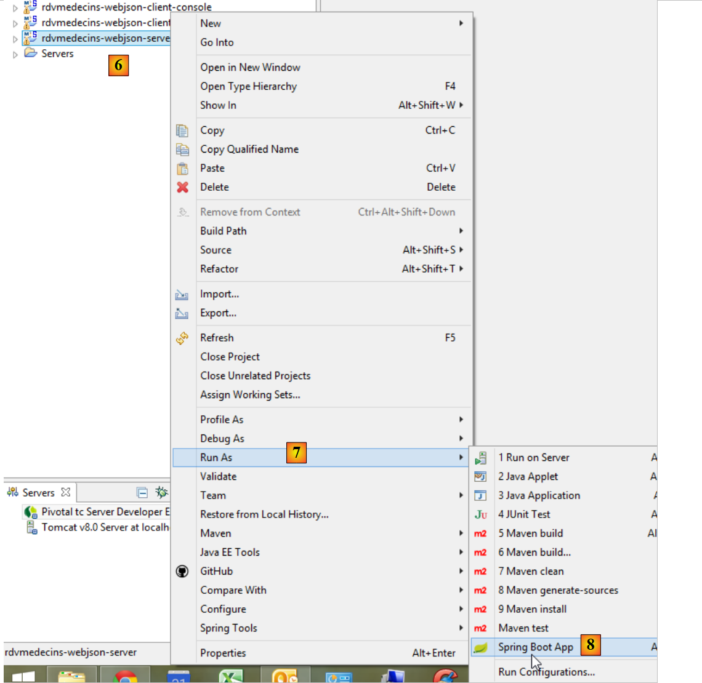 |
Der Server ist unter den Namen URL und [http://localhost:8080] verfügbar. Dies kann in der Datei [application.properties] des Projekts geändert werden:
 |
server.port=8080
Die Eigenschaften für den Datenbankzugriff sind in der Klasse [DomainAndPersistenceConfig] des Projekts [rdvmedecins-metier-dao] hinterlegt:
 |
// die Datenquelle MySQL
@Bean
public DataSource dataSource() {
BasicDataSource dataSource = new BasicDataSource();
dataSource.setDriverClassName("com.mysql.jdbc.Driver");
dataSource.setUrl("jdbc:mysql://localhost:3306/dbrdvmedecins");
dataSource.setUsername("root");
dataSource.setPassword("");
return dataSource;
}
Wenn Sie mit anderen Anmeldedaten auf SGBD und MySQL zugreifen, findet der Vorgang hier statt.
Anschließend wird, genau wie beim vorherigen Server, der Server [rdvmedecins-springthymeleaf-server] gestartet:
 |  |
Dieser Server ist standardmäßig unter URL und [http://localhost:8081] erreichbar. Auch dies lässt sich in der Projektdatei [application.properties] konfigurieren:
server.port=8081
Außerdem muss dieser Server die URL des mit der Datenbank verbundenen Servers kennen. Diese Konfiguration befindet sich in der oben genannten Klasse [AppConfig]:
// admin / admin
private final String USER_INIT = "admin";
private final String MDP_USER_INIT = "admin";
// Stammverzeichnis Webdienst / JSON
private final String WEBJSON_ROOT = "http://localhost:8080";
// Timeout in Millisekunden
private final int TIMEOUT = 5000;
// CORS
private final boolean CORS_ALLOWED=true;
Wenn der erste Server auf einem anderen Port als 8080 gestartet wurde, muss Zeile 5 geändert werden.
Anschließend ruft man mit einem Browser die URL und [http://localhost:8081/boot.html] auf:
 |
- zu [1], der Startseite der Anwendung;
- in [1], die Anmeldeseite der Anwendung; in [2] und [3], die Benutzer-ID und das Passwort des Benutzers, der die Anwendung nutzen möchte. Es gibt zwei Benutzer: admin/admin (Login/Passwort) mit einer Rolle (ADMIN) und user/user mit einer Rolle (USER). Nur die Rolle ADMIN ist berechtigt, die Anwendung zu nutzen. Die Rolle USER dient lediglich dazu, zu veranschaulichen, wie der Server in diesem Anwendungsfall antwortet;
- in [4] die Schaltfläche, über die man sich beim Server anmelden kann;
- in [5] die Sprache der Anwendung. Es gibt zwei: standardmäßig Französisch und Englisch;
- in [6]: die URL des Servers [rdvmedecins-springthymeleaf-server];
 |
- in [1] wird die Verbindung hergestellt;
 |
- Sobald man angemeldet ist, kann man den Arzt auswählen, bei dem man einen Termin vereinbaren möchte ([2]), sowie den Tag des Termins ([3]). Sobald ein Arzt und ein Tag ausgewählt wurden, wird der Terminkalender automatisch angezeigt:
 |
- Sobald der Terminkalender des Arztes angezeigt wird, kann man einen Termin reservieren [5];
 |
- In [6] wählt man den Patienten für den Termin aus und bestätigt diese Auswahl in [7];
 |
Sobald der Termin bestätigt ist, kehrt man automatisch zum Kalender zurück, in dem der neue Termin nun eingetragen ist. Dieser Termin kann später über [8] gelöscht werden.
Die wichtigsten Funktionen wurden beschrieben. Sie sind einfach. Schließen wir mit der Sprachverwaltung ab:
1

- In [1] wechselt man von Französisch zu Englisch;
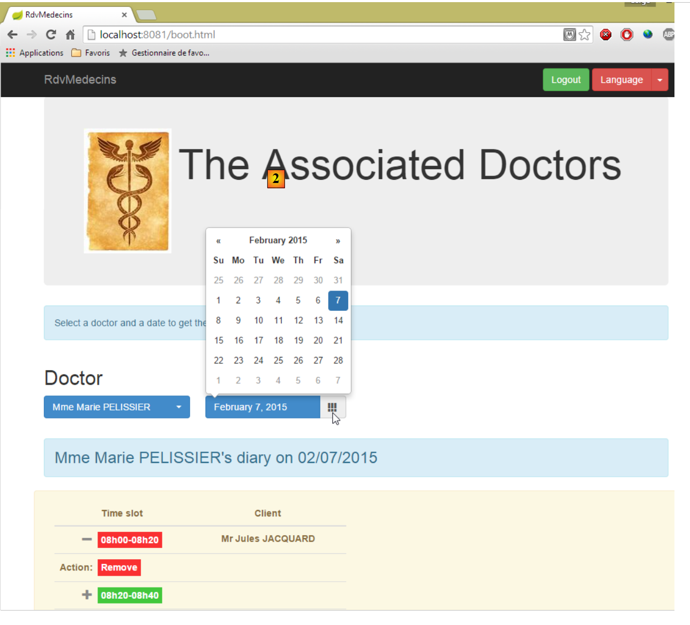 |
- in [2] wird die Ansicht auf Englisch umgestellt, einschließlich des Kalenders;
8.3. Die Datenbank
 |
Die Datenbank, die im Folgenden als [dbrdvmedecins] bezeichnet wird, ist eine Datenbank namens MySQL5 mit den folgenden Tabellen:
 |
Die Termine werden über die folgenden Tabellen verwaltet:
- [medecins]: enthält die Liste der Ärzte der Praxis;
- [clients]: enthält die Liste der Patienten der Praxis;
- [creneaux]: enthält die Zeitfenster der einzelnen Ärzte;
- [rv]: enthält die Liste der Termine der Ärzte.
Die Tabellen [roles], [users] und [users_roles] sind Tabellen, die mit der Authentifizierung zusammenhängen. Diese werden wir vorerst nicht behandeln. Die Beziehungen zwischen den Tabellen, die die Termine verwalten, sind wie folgt:
 |
- Ein Terminfenster gehört zu einem Arzt – ein Arzt hat 0 oder mehrere Terminfenster;
- ein Termin verbindet einen Kunden und einen Arzt über einen Zeitblock des Arztes;
- Ein Kunde hat 0 oder mehrere Termine;
- einem Zeitfenster sind 0 oder mehrere Termine (an verschiedenen Tagen) zugeordnet.
8.3.1. Die Tabelle [MEDECINS]
Sie enthält Informationen zu den Ärzten, die von der Anwendung [RdvMedecins] verwaltet werden.
 |  |
- ID: Nummer zur Identifizierung des Arztes – Primärschlüssel der Tabelle
- VERSION: Nummer zur Identifizierung der Zeilenversion in der Tabelle. Diese Nummer wird bei jeder Änderung an der Zeile um 1 erhöht.
- NOM: Name des Arztes
- PRENOM: sein Vorname
- TITRE: sein Titel (Fräulein, Frau, Herr)
8.3.2. Die Tabelle [CLIENTS]
Die Patienten der verschiedenen Ärzte sind in der Tabelle [CLIENTS] gespeichert:
 |  |
- ID: Nummer zur Identifizierung des Kunden – Primärschlüssel der Tabelle
- VERSION: Nummer zur Identifizierung der Zeilenversion in der Tabelle. Diese Nummer wird bei jeder Änderung an der Zeile um 1 erhöht.
- NOM: Name des Kunden
- PRENOM: sein Vorname
- TITRE: seine Anrede (Fräulein, Frau, Herr)
8.3.3. Die Tabelle [CRENEAUX]
Sie listet die Zeitfenster auf, in denen die RV möglich sind:
 |
 |
- ID: Nummer zur Identifizierung des Zeitfensters – Primärschlüssel der Tabelle (Zeile 8)
- VERSION: Nummer zur Identifizierung der Version der Zeile in der Tabelle. Diese Nummer wird bei jeder Änderung an der Zeile um 1 erhöht.
- ID_MEDECIN: Nummer zur Identifizierung des Arztes, zu dem dieses Zeitfenster gehört – Fremdschlüssel auf die Spalte MEDECINS (ID).
- HDEBUT: Startzeit des Zeitfensters
- MDEBUT: Startminute des Zeitfensters
- HFIN: Endzeit des Zeitfensters
- MFIN: Minuten des Zeitfensterschlusses
Die zweite Zeile der Tabelle [CRENEAUX] (siehe [1] oben) gibt beispielsweise an, dass der Termin Nr. 2 um 8:20 Uhr beginnt und um 8:40 Uhr endet und der Ärztin Nr. 1 (Frau Marie PELISSIER).
8.3.4. Die Tabelle [RV]
Sie listet die für jeden Arzt vergebenen RV auf:
 |
- ID: Nummer, die den RV eindeutig identifiziert – Primärschlüssel
- JOUR: Tag des RV
- ID_CRENEAU: Zeitfenster des RV – Fremdschlüssel auf das Feld [ID] der Tabelle [CRENEAUX] – legt sowohl das Zeitfenster als auch den betreffenden Arzt fest.
- ID_CLIENT: Kundennummer, für die die Reservierung vorgenommen wird – Fremdschlüssel auf das Feld [ID] der Tabelle [CLIENTS]
Diese Tabelle unterliegt einer Eindeutigkeitsbeschränkung für die Werte der verknüpften Spalten (JOUR, ID_CRENEAU):
Wenn eine Zeile der Tabelle [RV] die Werte (JOUR1, ID_CRENEAU1) für die Spalten (JOUR, ID_CRENEAU) aufweist, darf dieser Wert nirgendwo anders vorkommen. Andernfalls würde dies bedeuten, dass zwei RV gleichzeitig für denselben Arzt erfasst wurden. Aus Sicht der Java-Programmierung löst der Treiber JDBC der Datenbank in diesem Fall einen SQLException aus.
Der Eintrag „id“ mit dem Wert 3 (siehe [1] oben) bedeutet, dass am 23.08.2006 ein RV für den Terminblock Nr. 20 und den Kunden Nr. 4 gebucht wurde. Aus der Tabelle [CRENEAUX] geht hervor, dass der Termin Nr. 20 dem Zeitfenster 16:20 – 16:40 Uhr entspricht und der Ärztin Nr. 1 (Frau Marie PELISSIER) zugeordnet ist. Aus der Tabelle [CLIENTS] geht hervor, dass es sich bei Kunde Nr. 4 um Frau Brigitte BISTROU handelt.
8.3.5. Erstellung der Datenbank
Um die Datenbank [dbrdvmedecins] anzulegen, wird ein Skript [dbrdvmedecins.sql] mit den Beispielen dieses Dokuments [1-3] bereitgestellt:
 |
Wir verwenden das Tool [PhpMyAdmin] aus WampServer:
 |
- In [1] wählen wir das Tool [phpMyAdmin] aus WampServer aus;
- in [2] wählt man die Option [Importer];
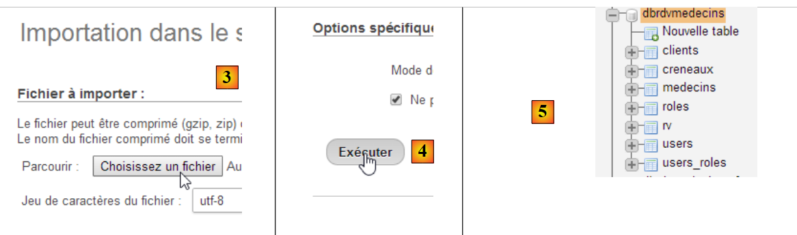 |
- In [3] wählt man die Datei [database/dbrdvmedecins.sql] aus;
- Bei [4] wird das Skript ausgeführt;
- in [5] wird die Datenbank erstellt.
8.4. Der Webdienst / jSON
 |
In der oben dargestellten Architektur befassen wir uns nun mit der Erstellung des Webdienstes / jSON, der mit dem Spring-Framework MVC erstellt wurde. Wir werden ihn in mehreren Schritten implementieren:
- zunächst die Schichten [métier] und [DAO] (Data Access Object). Hier verwenden wir Spring Data;
- dann den Webservice jSON ohne Authentifizierung. Hier verwenden wir Spring MVC;
- anschließend fügen wir den Authentifizierungsteil mit Spring Security hinzu.
Das Folgende ist eine Kopie des Dokuments [http://tahe.developpez.com/angularjs-spring4/] mit einigen Änderungen.
8.4.1. Einführung in Spring Data
Wir werden die Schicht [DAO] des Projekts mit Spring Data, einem Zweig des Spring-Ökosystems, implementieren.
 |
Auf der Spring-Website gibt es zahlreiche Tutorials für den Einstieg in Spring [http://spring.io/guides]. Wir werden eines davon nutzen, um Spring Data vorzustellen. Dazu verwenden wir die Spring Tool Suite (STS).
 |
- In [1] importieren wir eines der Tutorials aus [spring.io/guides];
 |
- in [2] wählen wir das Tutorial [Accessing Data Jpa] aus, das zeigt, wie man mit Spring Data auf eine Datenbank zugreift;
- in [3] wählen wir ein von Maven konfiguriertes Projekt aus;
- In [4] kann das Tutorial in zwei Formen bereitgestellt werden: [initial], eine leere Version, die man gemäß dem Tutorial ausfüllt, oder [complete], die endgültige Version des Tutorials. Wir wählen Letzteres;
- In [5] kann man das Tutorial in einem Browser anzeigen lassen;
- bei [6] das fertige Projekt.
8.4.1.1. Die Maven-Konfiguration des Projekts
Die Maven-Abhängigkeiten des Projekts werden in der Datei [pom.xml] konfiguriert:
<groupId>org.springframework</groupId>
<artifactId>gs-accessing-data-jpa</artifactId>
<version>0.1.0</version>
<parent>
<groupId>org.springframework.boot</groupId>
<artifactId>spring-boot-starter-parent</artifactId>
<version>1.1.10.RELEASE</version>
</parent>
<dependencies>
<dependency>
<groupId>org.springframework.boot</groupId>
<artifactId>spring-boot-starter-data-jpa</artifactId>
</dependency>
<dependency>
<groupId>com.h2database</groupId>
<artifactId>h2</artifactId>
</dependency>
</dependencies>
<properties>
<!-- UTF-8 für alles verwenden -->
<project.build.sourceEncoding>UTF-8</project.build.sourceEncoding>
<project.reporting.outputEncoding>UTF-8</project.reporting.outputEncoding>
<start-class>hello.Application</start-class>
</properties>
- Zeilen 5–9: Definieren ein übergeordnetes Maven-Projekt. Dieses legt den Großteil der Projektabhängigkeiten fest. Entweder sind diese bereits ausreichend, sodass keine weiteren hinzugefügt werden müssen, oder es fehlen noch Abhängigkeiten, die dann ergänzt werden müssen;
- Zeilen 12–15: definieren eine Abhängigkeit von [spring-boot-starter-data-jpa]. Dieses Artefakt enthält die Spring-Data-Klassen;
- Zeilen 16–19: definieren eine Abhängigkeit von SGBD und H2, mit denen In-Memory-Datenbanken erstellt und verwaltet werden können.
Sehen wir uns die Klassen an, die durch diese Abhängigkeiten bereitgestellt werden:
 |  |  |
Es sind sehr viele:
- Einige gehören zum Spring-Ökosystem (diejenigen, die mit „spring“ beginnen);
- andere gehören zum Hibernate-Ökosystem (hibernate, jboss), von dem wir hier die Implementierung JPA verwenden;
- wieder andere sind Testbibliotheken (junit, hamcrest);
- wieder andere sind Protokollierungsbibliotheken (log4j, logback, slf4j);
Wir werden sie alle beibehalten. Für eine Anwendung im Produktivbetrieb sollten jedoch nur die notwendigen Bibliotheken beibehalten werden.
In Zeile 26 der Datei [pom.xml] findet sich die Zeile:
<start-class>hello.Application</start-class>
Diese Zeile steht in Zusammenhang mit den folgenden Zeilen:
<build>
<plugins>
<plugin>
<artifactId>maven-compiler-plugin</artifactId>
</plugin>
<plugin>
<groupId>org.springframework.boot</groupId>
<artifactId>spring-boot-maven-plugin</artifactId>
</plugin>
</plugins>
</build>
In den Zeilen 6–9 ermöglicht das Plugin [spring-boot-maven-plugin] die Generierung der ausführbaren JAR-Datei der Anwendung. Zeile 26 der Datei [pom.xml] bezeichnet dann die ausführbare Klasse dieser JAR-Datei.
8.4.1.2. Die Schicht [JPA]
Der Zugriff auf die Datenbank erfolgt über eine Schicht [JPA], Java Persistence API:
 |
 |
Die Anwendung ist einfach aufgebaut und verwaltet Kunden [Customer]. Die Klasse [Customer] ist Teil der Schicht [JPA] und sieht wie folgt aus:
package hello;
import javax.persistence.Entity;
import javax.persistence.GeneratedValue;
import javax.persistence.GenerationType;
import javax.persistence.Id;
@Entity
public class Customer {
@Id
@GeneratedValue(strategy = GenerationType.AUTO)
private long id;
private String firstName;
private String lastName;
protected Customer() {
}
public Customer(String firstName, String lastName) {
this.firstName = firstName;
this.lastName = lastName;
}
@Override
public String toString() {
return String.format("Customer[id=%d, firstName='%s', lastName='%s']", id, firstName, lastName);
}
}
Ein Kunde hat eine ID [id], einen Vornamen [firstName] und einen Nachnamen [lastName]. Jede Instanz [Customer] repräsentiert eine Zeile einer Datenbanktabelle.
- Zeile 8: Annotation JPA, die bewirkt, dass die Persistenz der Instanzen [Customer] (Create, Read, Update, Delete) durch eine Implementierung JPA verwaltet wird. Den Maven-Abhängigkeiten zufolge wird die Implementierung JPA / Hibernate verwendet;
- Zeilen 11–12: Annotationen JPA, die das Feld [id] mit dem Primärschlüssel der Tabelle [Customer] verknüpfen. Zeile 12 gibt an, dass die Implementierung JPA die für das verwendete SGBD spezifische Methode zur Primärschlüsselgenerierung verwendet, in diesem Fall H2;
Es gibt keine weiteren Anmerkungen zu JPA. In diesem Fall werden Standardwerte verwendet:
- Die Tabelle [Customer] trägt den Namen der Klasse, d. h. [Customer];
- die Spalten dieser Tabelle tragen die Namen der Felder der Klasse: [id, firstName, lastName], wobei bei den Namen von Tabellenspalten die Groß-/Kleinschreibung nicht berücksichtigt wird;
Es ist zu beachten, dass die verwendete Implementierung JPA zu keinem Zeitpunkt namentlich genannt wird.
8.4.1.3. Die Schicht [DAO]
 |
 |
Die Klasse [CustomerRepository] implementiert die Schicht [DAO]. Ihr Code lautet wie folgt:
package hello;
import java.util.List;
import org.springframework.data.repository.CrudRepository;
public interface CustomerRepository extends CrudRepository<Customer, Long> {
List<Customer> findByLastName(String lastName);
}
Es handelt sich also um eine Schnittstelle und nicht um eine Klasse (Zeile 7). Sie erweitert die Schnittstelle [CrudRepository], eine Schnittstelle von Spring Data (Zeile 5). Diese Schnittstelle wird durch zwei Typen parametrisiert: Der erste ist der Typ der verwalteten Elemente, hier der Typ [Customer], der zweite der Typ des Primärschlüssels der verwalteten Elemente, hier ein Typ [Long]. Die Schnittstelle [CrudRepository] lautet wie folgt:
package org.springframework.data.repository;
import java.io.Serializable;
@NoRepositoryBean
public interface CrudRepository<T, ID extends Serializable> extends Repository<T, ID> {
<S extends T> S save(S entity);
<S extends T> Iterable<S> save(Iterable<S> entities);
T findOne(ID id);
boolean exists(ID id);
Iterable<T> findAll();
Iterable<T> findAll(Iterable<ID> ids);
long count();
void delete(ID id);
void delete(T entity);
void delete(Iterable<? extends T> entities);
void deleteAll();
}
Diese Schnittstelle definiert die Operationen CRUD (Erstellen – Lesen – Aktualisieren – Löschen), die für einen Typ JPA T durchgeführt werden können:
- Zeile 8: Die Methode „save“ ermöglicht es, eine Entität vom Typ T in der Datenbank zu speichern. Sie speichert die Entität unter dem Primärschlüssel, der ihr von SGBD zugewiesen wurde. Außerdem ermöglicht sie die Aktualisierung einer Entität vom Typ T, die durch ihren Primärschlüssel id identifiziert wird. Die Wahl der einen oder anderen Aktion richtet sich nach dem Wert des Primärschlüssels id: Ist dieser null, findet die Persistenzoperation statt, andernfalls die Aktualisierungsoperation;
- Zeile 10: dasselbe, jedoch für eine Liste von Entitäten;
- Zeile 12: Mit der Methode findOne kann eine Entität T abgerufen werden, die durch ihren Primärschlüssel id identifiziert wird;
- Zeile 22: Mit der Methode „delete“ kann eine Entität T gelöscht werden, die durch ihren Primärschlüssel id identifiziert wird;
- Zeilen 24–28: Varianten der Methode [delete];
- Zeile 16: Mit der Methode [findAll] lassen sich alle persistenten Entitäten T abrufen;
- Zeile 18: dasselbe, jedoch beschränkt auf Entitäten, für die eine Liste von Identifikatoren übergeben wurde;
Kehren wir zur Schnittstelle [CustomerRepository] zurück:
package hello;
import java.util.List;
import org.springframework.data.repository.CrudRepository;
public interface CustomerRepository extends CrudRepository<Customer, Long> {
List<Customer> findByLastName(String lastName);
}
- In Zeile 9 kann ein [Customer] anhand seines Namens [lastName] abgerufen werden;
Und das war’s auch schon für die Schicht [DAO]. Es gibt keine Implementierungsklasse für die vorangegangene Schnittstelle. Diese wird zur Laufzeit von [Spring Data] generiert. Die Methoden der Schnittstelle [CrudRepository] werden automatisch implementiert. Bei den Methoden, die in der Schnittstelle [CustomerRepository] hinzugefügt wurden, kommt es darauf an. Kehren wir zur Definition von [Customer] zurück:
private long id;
private String firstName;
private String lastName;
Die Methode in Zeile 9 wird automatisch von [Spring Data] implementiert, da sie auf das Feld [lastName] (Zeile 3) von [Customer] verweist. Wenn Spring Data in der zu implementierenden Schnittstelle auf eine Methode [findBySomething] stößt, implementiert es diese mithilfe der folgenden JPQL-Abfrage (Java Persistence Query Language):
Der Typ T muss daher ein Feld mit dem Namen [something] besitzen. Somit lautet die Methode
wird durch einen Code implementiert, der in etwa wie folgt aussieht:
return [em].createQuery("select c from Customer c where c.lastName=:value").setParameter("value",lastName).getResultList()
wobei [em] den Persistenzkontext JPA bezeichnet. Dies ist nur möglich, wenn die Klasse [Customer] ein Feld namens [lastName] besitzt, was der Fall ist.
Zusammenfassend lässt sich sagen, dass Spring Data es uns in einfachen Fällen ermöglicht, die Schicht [DAO] mit einer einfachen Schnittstelle zu implementieren.
8.4.1.4. Die Schicht [console]
 |
 |
Die Klasse [Application] sieht wie folgt aus:
package hello;
import java.util.List;
import org.springframework.boot.SpringApplication;
import org.springframework.boot.autoconfigure.EnableAutoConfiguration;
import org.springframework.context.ConfigurableApplicationContext;
import org.springframework.context.annotation.Configuration;
@Configuration
@EnableAutoConfiguration
public class Application {
public static void main(String[] args) {
ConfigurableApplicationContext context = SpringApplication.run(Application.class);
CustomerRepository repository = context.getBean(CustomerRepository.class);
// einige Kunden speichern
repository.save(new Customer("Jack", "Bauer"));
repository.save(new Customer("Chloe", "O'Brian"));
repository.save(new Customer("Kim", "Bauer"));
repository.save(new Customer("David", "Palmer"));
repository.save(new Customer("Michelle", "Dessler"));
// alle Kunden abrufen
Iterable<Customer> customers = repository.findAll();
System.out.println("Customers found with findAll():");
System.out.println("-------------------------------");
for (Customer customer : customers) {
System.out.println(customer);
}
System.out.println();
// einen einzelnen Kunden über ID abrufen
Customer customer = repository.findOne(1L);
System.out.println("Customer found with findOne(1L):");
System.out.println("--------------------------------");
System.out.println(customer);
System.out.println();
// Kunden nach Nachnamen abrufen
List<Customer> bauers = repository.findByLastName("Bauer");
System.out.println("Customer found with findByLastName('Bauer'):");
System.out.println("--------------------------------------------");
for (Customer bauer : bauers) {
System.out.println(bauer);
}
context.close();
}
}
- Zeile 10: gibt an, dass die Klasse zur Konfiguration von Spring dient. Neuere Versionen von Spring können tatsächlich in Java statt in XML konfiguriert werden. Beide Methoden können gleichzeitig verwendet werden. Im Code einer Klasse mit der Annotation [Configuration] finden sich normalerweise Spring-Beans, d. h. Definitionen von Klassen, die instanziiert werden sollen. Hier ist kein Bean definiert. An dieser Stelle sei daran erinnert, dass bei der Arbeit mit einem SGBD verschiedene Spring-Beans definiert werden müssen:
- ein [EntityManagerFactory], das die zu verwendende Implementierung JPA definiert,
- ein [DataSource], das die zu verwendende Datenquelle definiert,
- ein [TransactionManager], das den zu verwendenden Transaktionsmanager definiert;
Hier ist keines dieser Beans definiert.
- Zeile 11: Die Annotation [EnableAutoConfiguration] stammt aus dem Projekt [Spring Boot] (Zeilen 5–6). Diese Annotation weist Spring Boot über die Klasse [SpringApplication] (Zeile 16) an, die Anwendung entsprechend den im Classpath gefundenen Bibliotheken zu konfigurieren. Da sich die Hibernate-Bibliotheken im Classpath befinden, wird das Bean [entityManagerFactory] mit Hibernate implementiert. Da sich die Bibliothek SGBD im Classpath befindet, wird die Bean H2 mit [dataSource] implementiert. In der Bean [dataSource] müssen außerdem der Benutzer und sein Passwort definiert werden. Hier verwendet Spring Boot den Standardadministrator von H2, der kein Passwort hat. Da sich die Bibliothek [spring-tx] im Classpath befindet, wird der Transaktionsmanager von Spring verwendet.
Außerdem wird der Ordner, in dem sich die Klasse [Application] befindet, nach Beans durchsucht, die von Spring implizit erkannt oder explizit durch Spring-Annotationen definiert wurden. Somit werden die Klassen [Customer] und [CustomerRepository] überprüft. Da die erste Klasse die Annotation [@Entity] trägt, wird sie als von Hibernate zu verwaltende Entität katalogisiert. Da die zweite Klasse die Schnittstelle [CrudRepository] erweitert, wird sie als Spring-Bean registriert.
Betrachten wir die Zeilen 16–17 des Codes:
ConfigurableApplicationContext context = SpringApplication.run(Application.class);
CustomerRepository repository = context.getBean(CustomerRepository.class);
- Zeile 16: Die statische Methode [run] der Klasse [SpringApplication] aus dem Spring-Boot-Projekt wird ausgeführt. Ihr Parameter ist die Klasse, die eine Annotation [Configuration] oder [EnableAutoConfiguration] trägt. Anschließend läuft alles ab, was zuvor erläutert wurde. Das Ergebnis ist ein Spring-Anwendungskontext, d. h. eine Sammlung von Beans, die von Spring verwaltet werden;
- Zeile 17: Von diesem Spring-Kontext wird ein Bean angefordert, der die Schnittstelle [CustomerRepository] implementiert. Hier wird die von Spring Data generierte Klasse zur Implementierung dieser Schnittstelle abgerufen.
Die folgenden Operationen nutzen lediglich die Methoden des Beans, der die Schnittstelle [CustomerRepository] implementiert. In Zeile 50 ist zu beachten, dass der Kontext geschlossen wird. Die Konsolenausgaben lauten wie folgt:
- Zeilen 1–8: das Logo des Spring-Boot-Projekts;
- Zeile 9: Die Klasse „[hello.Application]“ wird ausgeführt;
- Zeile 10: [AnnotationConfigApplicationContext] ist eine Klasse, die die Spring-Schnittstelle [ApplicationContext] implementiert. Es handelt sich um einen Bean-Container;
- Zeile 11: Die Bean [entityManagerFactory] wird mit der Klasse [LocalContainerEntityManagerFactory] implementiert, einer Spring-Klasse;
- Zeile 15: Hier taucht [Hibernate] auf. Es wurde diese Implementierung JPA ausgewählt;
- Zeile 19: Als Hibernate-Dialekt ist die Variante SQL anzugeben, die zusammen mit SGBD verwendet werden soll. Hier zeigt der Dialekt [H2Dialect], dass Hibernate mit den Dialekten SGBD und H2 arbeiten wird;
- Zeilen 21–22: Die Datenbank wird angelegt. Die Tabelle [CUSTOMER] wird angelegt. Das bedeutet, dass Hibernate so konfiguriert wurde, dass es die Tabellen anhand der Definitionen JPA generiert, in diesem Fall anhand der Definition JPA der Klasse [Customer];
- Zeilen 27–31: Die fünf eingefügten Kunden;
- Zeilen 33–635: Ergebnis der Methode [findOne] der Schnittstelle;
- Zeilen 37–40: Ergebnisse der Methode [findByLastName];
- Zeilen 41 ff.: Protokolle zum Schließen des Spring-Kontexts.
8.4.1.5. Manuelle Konfiguration des Spring-Data-Projekts
Wir duplizieren das vorherige Projekt im Projekt [gs-accessing-data-jpa-2]:
 |
In diesem neuen Projekt verlassen wir uns nicht auf die automatische Konfiguration durch Spring Boot. Wir nehmen die Konfiguration manuell vor. Dies kann nützlich sein, wenn uns die Standardkonfigurationen nicht zusagen.
Zunächst legen wir die erforderlichen Abhängigkeiten in der Datei [pom.xml] fest:
...
<dependencies>
<!-- Spring Core -->
<dependency>
<groupId>org.springframework</groupId>
<artifactId>spring-core</artifactId>
<version>4.1.2.RELEASE</version>
</dependency>
<dependency>
<groupId>org.springframework</groupId>
<artifactId>spring-context</artifactId>
<version>4.1.2.RELEASE</version>
</dependency>
<dependency>
<groupId>org.springframework</groupId>
<artifactId>spring-beans</artifactId>
<version>4.1.2.RELEASE</version>
</dependency>
<!-- Spring-Transaktionen -->
<dependency>
<groupId>org.springframework</groupId>
<artifactId>spring-orm</artifactId>
<version>4.1.2.RELEASE</version>
</dependency>
<dependency>
<groupId>org.springframework</groupId>
<artifactId>spring-aop</artifactId>
<version>4.1.2.RELEASE</version>
</dependency>
<!-- Spring ORM -->
<dependency>
<groupId>org.springframework</groupId>
<artifactId>spring-tx</artifactId>
<version>4.1.2.RELEASE</version>
</dependency>
<!-- Spring Data -->
<dependency>
<groupId>org.springframework.data</groupId>
<artifactId>spring-data-jpa</artifactId>
<version>1.7.1.RELEASE</version>
</dependency>
<!-- Spring Boot -->
<dependency>
<groupId>org.springframework.boot</groupId>
<artifactId>spring-boot</artifactId>
<version>1.1.10.RELEASE</version>
</dependency>
<!-- Hibernate -->
<dependency>
<groupId>org.hibernate</groupId>
<artifactId>hibernate-entitymanager</artifactId>
<version>4.3.4.Final</version>
</dependency>
<!-- H2-Datenbank -->
<dependency>
<groupId>com.h2database</groupId>
<artifactId>h2</artifactId>
<version>1.4.178</version>
</dependency>
<!-- Commons DBCP -->
<dependency>
<groupId>commons-dbcp</groupId>
<artifactId>commons-dbcp</artifactId>
<version>1.4</version>
</dependency>
<dependency>
<groupId>commons-pool</groupId>
<artifactId>commons-pool</artifactId>
<version>1.6</version>
</dependency>
</dependencies>
...
</project>
- Zeilen 2–18: die Spring-Basisbibliotheken;
- Zeilen 19–29: die Spring-Bibliotheken zur Verwaltung von Transaktionen mit einer Datenbank;
- Zeilen 30–35: die Spring-Bibliothek für die Arbeit mit einem ORM (Objekt-Relational-Mapper);
- Zeilen 36–41: Spring Data für den Zugriff auf die Datenbank;
- Zeilen 42–47: Spring Boot zum Starten der Anwendung;
- Zeilen 54–59: der SGBD H2;
- Zeilen 60–70: Datenbanken werden häufig mit Pools offener Verbindungen verwendet, wodurch das wiederholte Öffnen und Schließen von Verbindungen vermieden wird. Hier kommt die Implementierung von [commons-dbcp] zum Einsatz;
Ebenfalls in [pom.xml] wird der Name der ausführbaren Klasse geändert:
<properties>
...
<start-class>demo.console.Main</start-class>
</properties>
Im neuen Projekt bleiben die Entität [Customer] und die Schnittstelle [CustomerRepository] unverändert. Die Klasse [Application] wird in zwei Klassen aufgeteilt:
- [Config], die als Konfigurationsklasse dient:
- [Main], die als ausführbare Klasse dient;
 |
Die ausführbare Klasse [Main] entspricht der vorherigen, jedoch ohne die Konfigurationsanmerkungen:
package demo.console;
import java.util.List;
import org.springframework.boot.SpringApplication;
import org.springframework.context.ConfigurableApplicationContext;
import demo.config.Config;
import demo.entities.Customer;
import demo.repositories.CustomerRepository;
public class Main {
public static void main(String[] args) {
ConfigurableApplicationContext context = SpringApplication.run(Config.class);
CustomerRepository repository = context.getBean(CustomerRepository.class);
...
context.close();
}
}
- Zeile 12: Die Klasse [Main] enthält keine Konfigurationsannotationen mehr;
- Zeile 16: Die Anwendung wird mit Spring Boot gestartet. Der Parameter [Config.class] ist die neue Konfigurationsklasse des Projekts;
Die Klasse [Config], die das Projekt konfiguriert, lautet wie folgt:
package demo.config;
import javax.persistence.EntityManagerFactory;
import javax.sql.DataSource;
import org.apache.commons.dbcp.BasicDataSource;
import org.springframework.context.annotation.Bean;
import org.springframework.context.annotation.Configuration;
import org.springframework.data.jpa.repository.config.EnableJpaRepositories;
import org.springframework.orm.jpa.JpaTransactionManager;
import org.springframework.orm.jpa.JpaVendorAdapter;
import org.springframework.orm.jpa.LocalContainerEntityManagerFactoryBean;
import org.springframework.orm.jpa.vendor.Database;
import org.springframework.orm.jpa.vendor.HibernateJpaVendorAdapter;
import org.springframework.transaction.PlatformTransactionManager;
import org.springframework.transaction.annotation.EnableTransactionManagement;
//@ComponentScan(basePackages = { „demo“ })
//@EntityScan(basePackages = { "demo.entities" })
@EnableTransactionManagement
@EnableJpaRepositories(basePackages = { "demo.repositories" })
@Configuration
public class Config {
// die Datenquelle H2
@Bean
public DataSource dataSource() {
BasicDataSource dataSource = new BasicDataSource();
dataSource.setDriverClassName("org.h2.Driver");
dataSource.setUrl("jdbc:h2:./demo");
dataSource.setUsername("sa");
dataSource.setPassword("");
return dataSource;
}
// der Provider JPA
@Bean
public JpaVendorAdapter jpaVendorAdapter() {
HibernateJpaVendorAdapter hibernateJpaVendorAdapter = new HibernateJpaVendorAdapter();
hibernateJpaVendorAdapter.setShowSql(false);
hibernateJpaVendorAdapter.setGenerateDdl(true);
hibernateJpaVendorAdapter.setDatabase(Database.H2);
return hibernateJpaVendorAdapter;
}
// EntityManagerFactory
@Bean
public EntityManagerFactory entityManagerFactory(JpaVendorAdapter jpaVendorAdapter, DataSource dataSource) {
LocalContainerEntityManagerFactoryBean factory = new LocalContainerEntityManagerFactoryBean();
factory.setJpaVendorAdapter(jpaVendorAdapter);
factory.setPackagesToScan("demo.entities");
factory.setDataSource(dataSource);
factory.afterPropertiesSet();
return factory.getObject();
}
// Transaktionsmanager
@Bean
public PlatformTransactionManager transactionManager(EntityManagerFactory entityManagerFactory) {
JpaTransactionManager txManager = new JpaTransactionManager();
txManager.setEntityManagerFactory(entityManagerFactory);
return txManager;
}
}
- Zeile 22: Die Annotation [@Configuration] macht die Klasse [Config] zu einer Spring-Konfigurationsklasse;
- Zeile 21: Die Annotation [@EnableJpaRepositories] ermöglicht es, die Verzeichnisse anzugeben, in denen sich die Spring-Data-Schnittstellen [CrudRepository] befinden. Diese Schnittstellen werden zu Spring-Komponenten und stehen in diesem Kontext zur Verfügung;
- Zeile 20: Die Annotation [@EnableTransactionManagement] gibt an, dass die Methoden der Schnittstellen [CrudRepository] innerhalb einer Transaktion ausgeführt werden müssen;
- Zeile 19: Die Annotation [@EntityScan] ermöglicht es, die Verzeichnisse anzugeben, in denen nach den Entitäten JPA gesucht werden soll. Hier wurde sie auskommentiert, da diese Information bereits explizit in Zeile 50 angegeben wurde. Diese Annotation sollte vorhanden sein, wenn der Modus [@EnableAutoConfiguration] verwendet wird und sich die Entitäten JPA nicht im selben Verzeichnis wie die Konfigurationsklasse befinden;
- Zeile 18: Die Annotation [@ComponentScan] ermöglicht es, die Ordner aufzulisten, in denen nach Spring-Komponenten gesucht werden soll. Spring-Komponenten sind Klassen, die mit Spring-Annotationen wie @Service, @Component, @Controller usw. versehen sind. Hier gibt es keine anderen als die, die innerhalb der Klasse [Config] definiert sind, daher wurde die Annotation auskommentiert;
- Zeilen 25–33: Definieren die Datenquelle, die Datenbank H2. Die Annotation @Bean in Zeile 25 sorgt dafür, dass das durch diese Methode erstellte Objekt zu einer von Spring verwalteten Komponente wird. Der Name der Methode kann hier beliebig gewählt werden. Sie muss jedoch [dataSource] heißen, wenn die Methode EntityManagerFactory in Zeile 47 fehlt und per Autokonfiguration definiert wird;
- Zeile 29: Die Datenbank wird den Namen [demo] tragen und im Projektordner generiert;
- Zeilen 36–43: Definieren die verwendete Implementierung JPA, in diesem Fall eine Hibernate-Implementierung. Der Name der Methode kann hier beliebig gewählt werden;
- Zeile 39: keine Protokolle für SQL;
- Zeile 30: Die Datenbank wird angelegt, falls sie noch nicht existiert;
- Zeilen 46–54: Definieren die Methode EntityManagerFactory, die die Persistenz von JPA verwaltet. Die Methode muss zwingend [entityManagerFactory] heißen;
- Zeile 47: Die Methode erhält zwei Parameter vom Typ der beiden zuvor definierten Beans. Diese werden dann instanziiert und von Spring als Parameter der Methode injiziert;
- Zeile 49: Legt die verwendete Implementierung JPA fest;
- Zeile 50: Legt die Verzeichnisse fest, in denen die Entitäten JPA zu finden sind;
- Zeile 51: Legt die zu verwaltende Datenquelle fest;
- Zeilen 57–62: Der Transaktionsmanager. Die Methode muss zwingend den Namen [transactionManager] tragen. Sie erhält als Parameter die Bean aus den Zeilen 46–54;
- Zeile 60: Der Transaktionsmanager wird mit EntityManagerFactory verknüpft;
Die vorangegangenen Methoden können in beliebiger Reihenfolge definiert werden.
Die Ausführung des Projekts liefert die gleichen Ergebnisse. Im Projektordner erscheint eine neue Datei, nämlich die Datenbankdatei H2:
 |
Schließlich kann man auch auf Spring Boot verzichten. Man erstellt eine zweite ausführbare Klasse [Main2]:
 |
Die Klasse [Main2] enthält den folgenden Code:
package demo.console;
import java.util.List;
import org.springframework.context.annotation.AnnotationConfigApplicationContext;
import demo.config.Config;
import demo.entities.Customer;
import demo.repositories.CustomerRepository;
public class Main2 {
public static void main(String[] args) {
AnnotationConfigApplicationContext context = new AnnotationConfigApplicationContext(Config.class);
CustomerRepository repository = context.getBean(CustomerRepository.class);
....
context.close();
}
}
- Zeile 15: Die Konfigurationsklasse [Config] wird nun von der Spring-Klasse [AnnotationConfigApplicationContext] genutzt. In Zeile 5 ist zu sehen, dass nun keine Abhängigkeiten mehr von Spring Boot bestehen.
Die Ausführung liefert dieselben Ergebnisse wie zuvor.
8.4.1.6. Erstellen eines ausführbaren Archivs
Um ein ausführbares Archiv des Projekts zu erstellen, gehen Sie wie folgt vor:
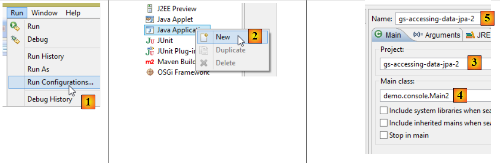 |
- in [1]: Man legt eine Ausführungskonfiguration an;
- in [2]: vom Typ [Java Application]
- in [3]: gibt das auszuführende Projekt an (die Schaltfläche Browse verwenden);
- in [4]: gibt die auszuführende Klasse an;
- in [5]: der Name der Ausführungskonfiguration – kann beliebig sein;
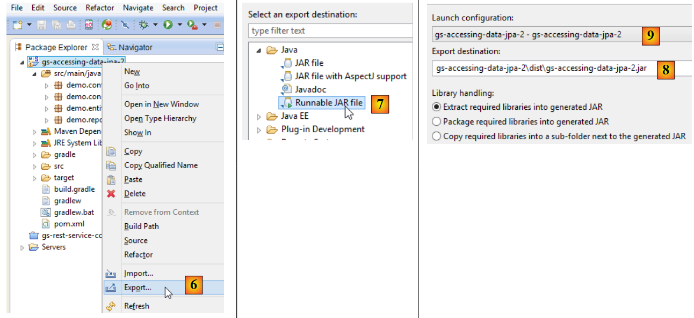 |
- in [6]: Das Projekt wird exportiert;
- in [7]: in Form eines ausführbaren JAR-Archivs;
- in [8]: gibt den Pfad und den Namen der zu erstellenden ausführbaren Datei an;
- in [9]: den Namen der in [5] erstellten Ausführungskonfiguration;
Anschließend öffnen wir eine Konsole in dem Ordner, der das ausführbare Archiv enthält:
Das Archiv wird wie folgt ausgeführt:
.....\dist>java -jar gs-accessing-data-jpa-2.jar
Die in der Konsole angezeigten Ergebnisse lauten wie folgt:
8.4.1.7. Ein neues Spring-Data-Projekt erstellen
Um ein Spring-Data-Projektgerüst zu erstellen, kann man wie folgt vorgehen:
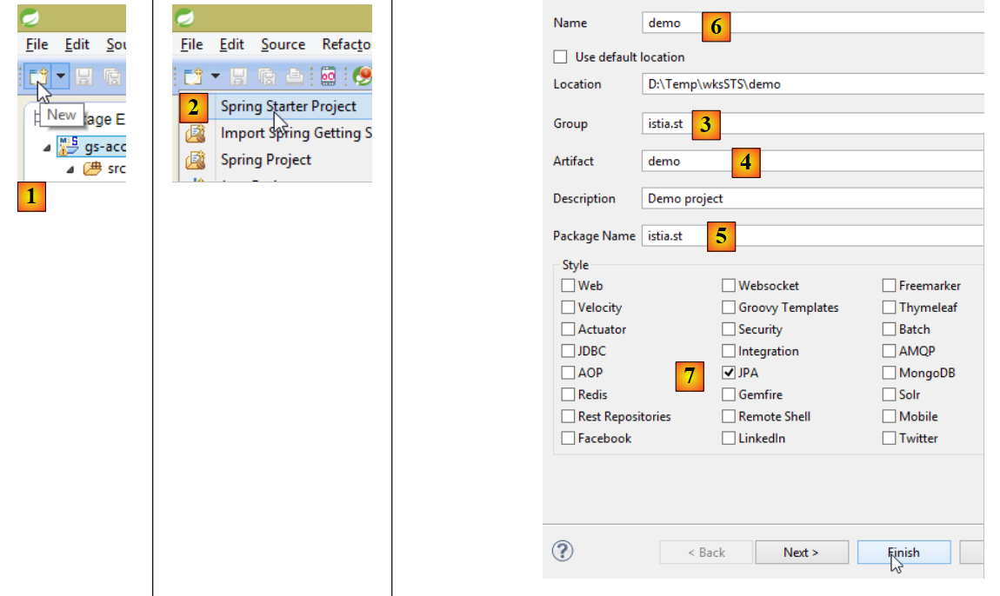 |
- In [1] wird ein neues Projekt angelegt;
- in [2]: vom Typ [Spring Starter Project];
- Das generierte Projekt ist ein Maven-Projekt. In [3] gibt man den Namen der Projektgruppe an;
- in [4]: Geben Sie den Namen des Artefakts (hier eine JAR-Datei) an, das beim Erstellen des Projekts generiert wird;
- in [5]: Hier wird das Paket der ausführbaren Klasse angegeben, die im Projekt erstellt wird;
- in [6]: der Eclipse-Name des Projekts – kann beliebig sein (muss nicht mit [4] übereinstimmen);
- in [7]: Es wird angegeben, dass ein Projekt mit einer Ebene [JPA] erstellt werden soll. Die für ein solches Projekt erforderlichen Abhängigkeiten werden dann in die Datei [pom.xml] aufgenommen;
 |
- in [8]: das erstellte Projekt;
Die Datei „[pom.xml]“ enthält die für ein Projekt „JPA“ erforderlichen Abhängigkeiten:
<parent>
<groupId>org.springframework.boot</groupId>
<artifactId>spring-boot-starter-parent</artifactId>
<version>1.2.0.RELEASE</version>
<relativePath/> <!-- Übergeordnetes Element aus dem Repository suchen -->
</parent>
<dependencies>
<dependency>
<groupId>org.springframework.boot</groupId>
<artifactId>spring-boot-starter-data-jpa</artifactId>
</dependency>
<dependency>
<groupId>org.springframework.boot</groupId>
<artifactId>spring-boot-starter-test</artifactId>
<scope>test</scope>
</dependency>
</dependencies>
- Zeilen 9–12: die für JPA erforderlichen Abhängigkeiten – beinhalten [Spring Data];
- Zeilen 13–17: Die für die in Spring integrierten Tests von JUnit erforderlichen Abhängigkeiten;
Die ausführbare Klasse [Application] führt keine Aktion aus, ist jedoch vorkonfiguriert:
package istia.st;
import org.springframework.boot.SpringApplication;
import org.springframework.boot.autoconfigure.EnableAutoConfiguration;
import org.springframework.context.annotation.ComponentScan;
import org.springframework.context.annotation.Configuration;
@Configuration
@ComponentScan
@EnableAutoConfiguration
public class Application {
public static void main(String[] args) {
SpringApplication.run(Application.class, args);
}
}
Die Testklasse [ApplicationTests] führt keine Aktion aus, ist jedoch vorkonfiguriert:
package istia.st;
import org.junit.Test;
import org.junit.runner.RunWith;
import org.springframework.boot.test.SpringApplicationConfiguration;
import org.springframework.test.context.junit4.SpringJUnit4ClassRunner;
@RunWith(SpringJUnit4ClassRunner.class)
@SpringApplicationConfiguration(classes = Application.class)
public class ApplicationTests {
@Test
public void contextLoads() {
}
}
- Zeile 9: Die Annotation [@SpringApplicationConfiguration] ermöglicht die Nutzung der Konfigurationsdatei [Application]. Die Testklasse profitiert somit von allen Beans, die in dieser Datei definiert sind;
- Zeile 8: Die Annotation [@RunWith] ermöglicht die Integration von Spring mit JUnit: Die Klasse kann somit als JUnit-Test ausgeführt werden. [@RunWith] ist eine Annotation JUnit (Zeile 4), während die Klasse [SpringJUnit4ClassRunner] eine Spring-Klasse ist (Zeile 6);
Da wir nun über ein Anwendungsgerüst JPA verfügen, können wir es vervollständigen, um die Persistenzschicht unseres Terminverwaltungs-Projekts zu implementieren.
8.4.2. Das Eclipse-Projekt des Servers
 |
 |
Die wichtigsten Elemente des Projekts sind folgende:
- [pom.xml]: Maven-Konfigurationsdatei des Projekts;
- [rdvmedecins.entities]: die Entitäten JPA;
- [rdvmedecins.repositories]: die Spring-Data-Schnittstellen für den Zugriff auf die Entitäten JPA;
- [rdvmedecins.metier]: die Schicht [métier];
- [rdvmedecins.domain]: die von der Schicht verarbeiteten Entitäten [métier];
- [rdvmdecins.config]: die Konfigurationsklassen der Persistenzschicht;
- [rdvmedecins.boot]: eine einfache Konsolenanwendung;
8.4.3. Die Maven-Konfiguration
 |  |  |
Die Datei [pom.xml] des Projekts sieht wie folgt aus:
<?xml version="1.0" encoding="UTF-8"?>
<project xmlns="http://maven.apache.org/POM/4.0.0" xsi:schemaLocation="http://maven.apache.org/POM/4.0.0 http://maven.apache.org/maven-v4_0_0.xsd"
xmlns:xsi="http://www.w3.org/2001/XMLSchema-instance">
<modelVersion>4.0.0</modelVersion>
<groupId>istia.st.spring4.rdvmedecins</groupId>
<artifactId>rdvmedecins-metier-dao</artifactId>
<version>0.0.1-SNAPSHOT</version>
<parent>
<groupId>org.springframework.boot</groupId>
<artifactId>spring-boot-starter-parent</artifactId>
<version>1.2.6.RELEASE</version>
</parent>
<dependencies>
<!-- Spring Data JPA -->
<dependency>
<groupId>org.springframework.boot</groupId>
<artifactId>spring-boot-starter-data-jpa</artifactId>
</dependency>
<!-- Spring-Test -->
<dependency>
<groupId>org.springframework.boot</groupId>
<artifactId>spring-boot-starter-test</artifactId>
<scope>test</scope>
</dependency>
<!-- Spring Security -->
<dependency>
<groupId>org.springframework.boot</groupId>
<artifactId>spring-boot-starter-security</artifactId>
</dependency>
<!-- Treiber JDBC / MySQL -->
<dependency>
<groupId>mysql</groupId>
<artifactId>mysql-connector-java</artifactId>
</dependency>
<!-- Tomcat JDBC -->
<dependency>
<groupId>org.apache.tomcat</groupId>
<artifactId>tomcat-jdbc</artifactId>
</dependency>
<!-- Mapper jSON -->
<dependency>
<groupId>com.fasterxml.jackson.core</groupId>
<artifactId>jackson-databind</artifactId>
</dependency>
<!-- Google Guava -->
<dependency>
<groupId>com.google.guava</groupId>
<artifactId>guava</artifactId>
<version>16.0.1</version>
</dependency>
</dependencies>
<properties>
<!-- Verwende UTF-8 für alles -->
<project.build.sourceEncoding>UTF-8</project.build.sourceEncoding>
<project.reporting.outputEncoding>UTF-8</project.reporting.outputEncoding>
<start-class>rdvmedecins.boot.Boot</start-class>
<java.version>1.8</java.version>
</properties>
<build>
<plugins>
<plugin>
<groupId>org.springframework.boot</groupId>
<artifactId>spring-boot-maven-plugin</artifactId>
</plugin>
</plugins>
</build>
<repositories>
<repository>
<id>spring-milestones</id>
<name>Spring Milestones</name>
<url>http://repo.spring.io/libs-milestone</url>
<snapshots>
<enabled>false</enabled>
</snapshots>
</repository>
<repository>
<id>org.jboss.repository.releases</id>
<name>JBoss Maven Release Repository</name>
<url>https://repository.jboss.org/nexus/content/repositories/releases</url>
<snapshots>
<enabled>false</enabled>
</snapshots>
</repository>
</repositories>
<pluginRepositories>
<pluginRepository>
<id>spring-milestones</id>
<name>Spring Milestones</name>
<url>http://repo.spring.io/libs-milestone</url>
<snapshots>
<enabled>false</enabled>
</snapshots>
</pluginRepository>
</pluginRepositories>
</project>
- Zeilen 8–12: Das Projekt basiert auf dem übergeordneten Projekt [spring-boot-starter-parent]. Für Abhängigkeiten, die bereits im übergeordneten Projekt vorhanden sind, wird keine Version angegeben. Es wird die im übergeordneten Projekt definierte Version verwendet. Die übrigen Abhängigkeiten werden wie gewohnt deklariert;
- Zeilen 15–18: für Spring Data;
- Zeilen 20–24: für die Tests JUnit;
- Zeilen 26–29: für die Spring-Security-Bibliothek, deren Schicht [DAO] eine der Klassen zur Passwortverschlüsselung verwendet;
- Zeilen 31–34: Treiber JDBC für SGBD und MySQL5;
- Zeilen 36–39: Tomcat-Verbindungspool JDBC. Ein Verbindungspool fasst offene Verbindungen zu einer Datenbank zusammen. Wenn der Code eine Verbindung öffnen möchte, wird diese vom Pool angefordert. Wenn der Code die Verbindung schließt, wird sie nicht geschlossen, sondern an den Pool zurückgegeben. All dies geschieht für den Code transparent. Dadurch wird die Leistung gesteigert, da das wiederholte Öffnen und Schließen einer Verbindung zeitaufwendig ist. Hier baut der Verbindungspool bereits bei seiner Instanziierung eine bestimmte Anzahl von Verbindungen zur Datenbank auf. Anschließend werden keine Verbindungen mehr geöffnet oder geschlossen, es sei denn, die Anzahl der im Pool gespeicherten Verbindungen erweist sich als unzureichend. In diesem Fall erstellt der Pool automatisch neue Verbindungen;
- Zeilen 41–44: Jackson-Bibliothek zur Verwaltung von jSON;
- Zeilen 46–50: Google-Bibliothek zur Verwaltung von Sammlungen;
8.4.4. Die Entitäten JPA
 |
Die Entitäten JPA sind die Objekte, die die Zeilen der Datenbanktabellen kapseln werden.
 |
Die Klasse [AbstractEntity] ist die übergeordnete Klasse der Entitäten [Personne, Creneau, Rv]. Ihre Definition lautet wie folgt:
package rdvmedecins.entities;
import java.io.Serializable;
import javax.persistence.GeneratedValue;
import javax.persistence.GenerationType;
import javax.persistence.Id;
import javax.persistence.MappedSuperclass;
import javax.persistence.Version;
@MappedSuperclass
public class AbstractEntity implements Serializable {
private static final long serialVersionUID = 1L;
@Id
@GeneratedValue(strategy = GenerationType.IDENTITY)
protected Long id;
@Version
protected Long version;
@Override
public int hashCode() {
int hash = 0;
hash += (id != null ? id.hashCode() : 0);
return hash;
}
// Initialisierung
public AbstractEntity build(Long id, Long version) {
this.id = id;
this.version = version;
return this;
}
@Override
public boolean equals(Object entity) {
String class1 = this.getClass().getName();
String class2 = entity.getClass().getName();
if (!class2.equals(class1) || entity==null) {
return false;
}
AbstractEntity other = (AbstractEntity) entity;
return this.id.longValue() == other.id.longValue();
}
// Getter und Setter
..
}
- Zeile 11: Die Annotation [@MappedSuperclass] gibt an, dass die annotierte Klasse die übergeordnete Klasse der Entitäten JPA und [@Entity] ist;
- Zeilen 15–17: Definieren den Primärschlüssel [id] für jede Entität. Durch die Annotation [@Id] wird das Feld [id] zum Primärschlüssel. Die Anmerkung [@GeneratedValue(strategy = GenerationType.IDENTITY)] gibt an, dass der Wert dieses Primärschlüssels durch SGBD generiert wird und dass der Generierungsmodus [IDENTITY] vorgeschrieben ist. Für SGBD und MySQL bedeutet dies, dass die Primärschlüssel durch SGBD mit dem Attribut [AUTO_INCREMENT] generiert werden
- Zeilen 18–19: Definieren die Version jeder Entität. Die Implementierung JPA erhöht diese Versionsnummer jedes Mal, wenn die Entität geändert wird. Diese Nummer dient dazu, die gleichzeitige Aktualisierung der Entität durch zwei verschiedene Benutzer zu verhindern: Zwei Benutzer, U1 und U2, lesen die Entität E mit einer Versionsnummer von V1. U1 ändert E und speichert diese Änderung in der Datenbank: Die Versionsnummer ändert sich daraufhin zu V1+1. U2 ändert seinerseits E und speichert diese Änderung in der Datenbank: Dabei wird eine Ausnahme ausgelöst, da seine Versionsnummer (V1) von der in der Datenbank gespeicherten (V1+1) abweicht;
- Zeilen 29–33: Die Methode [build] dient dazu, die beiden Felder von [AbstractEntity] zu initialisieren. Diese Methode gibt die Referenz der so initialisierten Instanz [AbstractEntity] zurück;
- Zeilen 36–44: Die Methode [equals] der Klasse wird neu definiert: Zwei Entitäten gelten als gleich, wenn sie denselben Klassennamen und dieselbe ID haben;
- Zeilen 21–26: Wenn die Methode [equals] einer Klasse neu definiert wird, muss auch deren Methode [hashCode] neu definiert werden (Zeilen 21–26). Die Regel lautet, dass zwei Entitäten, die gemäß der Methode [equals] als gleich gelten, denselben [hashCode] haben müssen. Hier ist der [hashCode] einer Entität gleich ihrem Primärschlüssel [id]. Der [hashCode] einer Klasse wird insbesondere bei der Verwaltung von Wörterbüchern verwendet, deren Werte Instanzen der Klasse sind;
Die Entität [Personne] ist die übergeordnete Klasse der Entitäten [Medecin] und [Client]:
package rdvmedecins.entities;
import javax.persistence.Column;
import javax.persistence.MappedSuperclass;
@MappedSuperclass
public class Personne extends AbstractEntity {
private static final long serialVersionUID = 1L;
// Attribute einer Person
@Column(length = 5)
private String titre;
@Column(length = 20)
private String nom;
@Column(length = 20)
private String prenom;
// Standardkonstruktor
public Personne() {
}
// Konstruktor mit Parametern
public Personne(String titre, String nom, String prenom) {
this.titre = titre;
this.nom = nom;
this.prenom = prenom;
}
// toString
public String toString() {
return String.format("Personne[%s, %s, %s, %s, %s]", id, version, titre, nom, prenom);
}
// Getter und Setter
...
}
- Zeile 6: Die Annotation [@MappedSuperclass] gibt an, dass die annotierte Klasse die übergeordnete Klasse der Entitäten JPA und [@Entity] ist;
- Zeilen 10–15: Eine Person hat einen Titel (Melle), einen Vornamen (Jacqueline) und einen Nachnamen (Tatou). Zu den Spalten der Tabelle werden keine Angaben gemacht. Sie tragen daher standardmäßig dieselben Namen wie die Felder;
Die Entität [Medecin] lautet wie folgt:
package rdvmedecins.entities;
import javax.persistence.Entity;
import javax.persistence.Table;
@Entity
@Table(name = "medecins")
public class Medecin extends Personne {
private static final long serialVersionUID = 1L;
// Standardkonstruktor
public Medecin() {
}
// Konstruktor mit Parametern
public Medecin(String titre, String nom, String prenom) {
super(titre, nom, prenom);
}
public String toString() {
return String.format("Medecin[%s]", super.toString());
}
}
- Zeile 6: Die Klasse ist eine Entität JPA;
- Zeile 7: zugeordnet zur Tabelle [MEDECINS] in der Datenbank;
- Zeile 8: Die Entität [Medecin] leitet sich von der Entität [Personne] ab;
Ein Arzt könnte wie folgt initialisiert werden:
Wenn man ihm darüber hinaus eine Kennung und eine Version zuweisen möchte, kann man schreiben:
wobei die Methode [build] die in [AbstractEntity] definierte ist.
Die Entität [Client] lautet wie folgt:
package rdvmedecins.entities;
import javax.persistence.Entity;
import javax.persistence.Table;
@Entity
@Table(name = "clients")
public class Client extends Personne {
private static final long serialVersionUID = 1L;
// Standardkonstruktor
public Client() {
}
// Konstruktor mit Parametern
public Client(String titre, String nom, String prenom) {
super(titre, nom, prenom);
}
// Identität
public String toString() {
return String.format("Client[%s]", super.toString());
}
}
- Zeile 6: Die Klasse ist eine Entität JPA;
- Zeile 7: zugeordnet zur Tabelle [CLIENTS] der Datenbank;
- Zeile 8: Die Entität [Client] leitet sich von der Entität [Personne] ab;
Die Entität [Creneau] lautet wie folgt:
package rdvmedecins.entities;
import javax.persistence.Column;
import javax.persistence.Entity;
import javax.persistence.FetchType;
import javax.persistence.JoinColumn;
import javax.persistence.ManyToOne;
import javax.persistence.Table;
@Entity
@Table(name = "creneaux")
public class Creneau extends AbstractEntity {
private static final long serialVersionUID = 1L;
// Merkmale eines Termins von RV
private int hdebut;
private int mdebut;
private int hfin;
private int mfin;
// Ein Termin ist mit einem Arzt verknüpft
@ManyToOne(fetch = FetchType.LAZY)
@JoinColumn(name = "id_medecin")
private Medecin medecin;
// Fremdschlüssel
@Column(name = "id_medecin", insertable = false, updatable = false)
private long idMedecin;
// Standardhersteller
public Creneau() {
}
// Hersteller mit Parametern
public Creneau(Medecin medecin, int hdebut, int mdebut, int hfin, int mfin) {
this.medecin = medecin;
this.hdebut = hdebut;
this.mdebut = mdebut;
this.hfin = hfin;
this.mfin = mfin;
}
// toString
public String toString() {
return String.format("Créneau[%d, %d, %d, %d:%d, %d:%d]", id, version, idMedecin, hdebut, mdebut, hfin, mfin);
}
// Fremdschlüssel
public long getIdMedecin() {
return idMedecin;
}
// Setter – Getter
...
}
- Zeile 10: Die Klasse ist eine Entität JPA;
- Zeile 11: zugeordnet zur Tabelle [CRENEAUX] der Datenbank;
- Zeile 12: Die Entität [Creneau] leitet sich von der Entität [AbstractEntity] ab und erbt somit die Kennung [id] und die Version [version];
- Zeile 16: Startzeit des Zeitfensters (14);
- Zeile 17: Startminute des Zeitfensters (20);
- Zeile 18: Endzeit des Zeitfensters (14);
- Zeile 19: Endminuten des Zeitfensters (40);
- Zeilen 22–24: der Arzt, dem der Terminblock gehört. Die Tabelle [CRENEAUX] verfügt über einen Fremdschlüssel zur Tabelle [MEDECINS]. Diese Beziehung wird durch die Zeilen 22–24 dargestellt;
- Zeile 22: Die Anmerkung [@ManyToOne] kennzeichnet eine Beziehung von mehreren (Terminfenstern) zu einem (Arzt). Das Attribut [fetch=FetchType.LAZY] gibt an, dass bei einer Abfrage einer Entität [Creneau] aus dem Persistenzkontext, die in der Datenbank gesucht werden muss, die Entität [Medecin] nicht mit zurückgegeben wird. Der Vorteil dieses Modus besteht darin, dass die Entität [Medecin] nur dann abgerufen wird, wenn der Entwickler dies anfordert. Dadurch wird Speicherplatz gespart und die Leistung gesteigert;
- Zeile 23: gibt den Namen der Fremdschlüsselspalte in der Tabelle [CRENEAUX] an;
- Zeilen 27–28: Der Fremdschlüssel in der Tabelle [MEDECINS];
- Zeile 27: Die Spalte [ID_MEDECIN] wurde bereits in Zeile 23 verwendet. Das bedeutet, dass sie auf zwei verschiedene Arten geändert werden kann, was der Standard JPA nicht zulässt. Daher werden die Attribute [insertable = false, updatable = false] hinzugefügt, wodurch die Spalte nur noch gelesen werden kann;
Die Entität [Rv] lautet wie folgt:
package rdvmedecins.entities;
import java.util.Date;
import javax.persistence.Column;
import javax.persistence.Entity;
import javax.persistence.FetchType;
import javax.persistence.JoinColumn;
import javax.persistence.ManyToOne;
import javax.persistence.Table;
import javax.persistence.Temporal;
import javax.persistence.TemporalType;
@Entity
@Table(name = "rv")
public class Rv extends AbstractEntity {
private static final long serialVersionUID = 1L;
// Eigenschaften eines Rv
@Temporal(TemporalType.DATE)
private Date jour;
// Ein RV ist mit einem Kunden verknüpft
@ManyToOne(fetch = FetchType.LAZY)
@JoinColumn(name = "id_client")
private Client client;
// Ein RV ist mit einem Zeitfenster verknüpft
@ManyToOne(fetch = FetchType.LAZY)
@JoinColumn(name = "id_creneau")
private Creneau creneau;
// Fremdschlüssel
@Column(name = "id_client", insertable = false, updatable = false)
private long idClient;
@Column(name = "id_creneau", insertable = false, updatable = false)
private long idCreneau;
// Standardhersteller
public Rv() {
}
// mit Parametern
public Rv(Date jour, Client client, Creneau creneau) {
this.jour = jour;
this.client = client;
this.creneau = creneau;
}
// toString
public String toString() {
return String.format("Rv[%d, %s, %d, %d]", id, jour, client.id, creneau.id);
}
// Fremdschlüssel
public long getIdCreneau() {
return idCreneau;
}
public long getIdClient() {
return idClient;
}
// Getter und Setter
...
}
- Zeile 14: Die Klasse ist eine Entität JPA;
- Zeile 15: zugeordnet zur Tabelle [RV] der Datenbank;
- Zeile 16: Die Entität [Rv] leitet sich von der Entität [AbstractEntity] ab und übernimmt daher die Kennung [id] sowie die Version [version];
- Zeile 21: das Datum des Termins;
- Zeile 20: Der Java-Typ [Date] enthält sowohl ein Datum als auch eine Uhrzeit. Hier wird festgelegt, dass nur das Datum verwendet wird;
- Zeilen 24–26: der Kunde, für den dieser Termin vereinbart wurde. Die Tabelle [RV] verfügt über einen Fremdschlüssel auf die Tabelle [CLIENTS]. Diese Beziehung wird durch die Zeilen 24–26 dargestellt;
- Zeilen 29–31: das Zeitfenster des Termins. Die Tabelle [RV] hat einen Fremdschlüssel auf die Tabelle [CRENEAUX]. Diese Beziehung wird durch die Zeilen 29–31 dargestellt;
- Zeilen 34–35: der Fremdschlüssel [idClient];
- Zeilen 36–37: der Fremdschlüssel [idCreneau];
8.4.5. Die Ebene [DAO]
 |
Wir werden die Schicht [DAO] mit Spring Data implementieren:
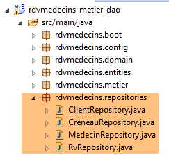 |
Die Schicht [DAO] wird mit vier Spring-Data-Schnittstellen implementiert:
- [ClientRepository]: Gewährt Zugriff auf die Entitäten JPA und [Client];
- [CreneauRepository]: bietet Zugriff auf die Entitäten JPA und [Creneau];
- [MedecinRepository]: gewährt Zugriff auf die Entitäten JPA und [Medecin];
- [RvRepository]: gewährt Zugriff auf die Entitäten JPA und [Rv];
Die Schnittstelle [MedecinRepository] sieht wie folgt aus:
package rdvmedecins.repositories;
import org.springframework.data.repository.CrudRepository;
import rdvmedecins.entities.Medecin;
public interface MedecinRepository extends CrudRepository<Medecin, Long> {
}
- Zeile 7: Die Schnittstelle [MedecinRepository] übernimmt lediglich die Methoden der Schnittstelle [CrudRepository], ohne weitere hinzuzufügen;
Die Schnittstelle [ClientRepository] lautet wie folgt:
package rdvmedecins.repositories;
import org.springframework.data.repository.CrudRepository;
import rdvmedecins.entities.Client;
public interface ClientRepository extends CrudRepository<Client, Long> {
}
- Zeile 7: Die Schnittstelle [ClientRepository] übernimmt lediglich die Methoden der Schnittstelle [CrudRepository], ohne weitere hinzuzufügen;
Die Schnittstelle [CreneauRepository] lautet wie folgt:
package rdvmedecins.repositories;
import org.springframework.data.jpa.repository.Query;
import org.springframework.data.repository.CrudRepository;
import rdvmedecins.entities.Creneau;
public interface CreneauRepository extends CrudRepository<Creneau, Long> {
// Liste der Sprechzeiten eines Arztes
@Query("select c from Creneau c where c.medecin.id=?1")
Iterable<Creneau> getAllCreneaux(long idMedecin);
}
- Zeile 8: Die Schnittstelle [CreneauRepository] erbt die Methoden der Schnittstelle [CrudRepository];
- Zeilen 10–11: Die Methode [getAllCreneaux] ermöglicht es, die Terminfenster eines Arztes abzurufen;
- Zeile 11: Der Parameter ist die ID des Arztes. Das Ergebnis ist eine Liste der Zeitfenster in Form eines Objekts vom Typ [Iterable<Creneau>];
- Zeile 10: Mit der Anmerkung [@Query] lässt sich die Abfrage JPQL (Java Persistence Query Language) angeben, die die Methode implementiert. Der Parameter [?1] wird durch den Parameter [idMedecin] der Methode ersetzt;
Die Schnittstelle [RvRepository] lautet wie folgt:
package rdvmedecins.repositories;
import java.util.Date;
import org.springframework.data.jpa.repository.Query;
import org.springframework.data.repository.CrudRepository;
import rdvmedecins.entities.Rv;
public interface RvRepository extends CrudRepository<Rv, Long> {
@Query("select rv from Rv rv left join fetch rv.client c left join fetch rv.creneau cr where cr.medecin.id=?1 and rv.jour=?2")
Iterable<Rv> getRvMedecinJour(long idMedecin, Date jour);
}
- Zeile 10: Die Schnittstelle [RvRepository] erbt die Methoden der Schnittstelle [CrudRepository];
- Zeilen 12–13: Mit der Methode [getRvMedecinJour] lassen sich die Termine eines Arztes für einen bestimmten Tag abrufen;
- Zeile 13: Die Parameter sind die ID des Arztes und der Tag. Das Ergebnis ist eine Liste von Terminen in Form eines Objekts vom Typ [Iterable<Rv>];
- Zeile 12: Mit der Anmerkung [@Query] lässt sich die Abfrage JPQL angeben, die die Methode implementiert. Der Parameter [?1] wird durch den Parameter [idMedecin] der Methode ersetzt, und der Parameter [?2] wird durch den Parameter [jour] der Methode ersetzt. Die folgende Abfrage JPQL reicht nicht aus:
da die Felder der Klasse Rv vom Typ [Client] und [Creneau] im Modus [FetchType.LAZY] abgerufen werden, was bedeutet, dass sie explizit angefordert werden müssen, um abgerufen zu werden. Dies geschieht in der Abfrage JPQL mit der Syntax [left join fetch entité], die eine Verknüpfung mit der Tabelle anfordert, auf die der Fremdschlüssel verweist, um die betreffende Entität abzurufen;
8.4.6. Die Ebene [métier]
 |
 |
- [IMetier] ist die Schnittstelle der Schicht [métier] und [Metier] deren Implementierung;
- [AgendaMedecinJour] und [CreneauMedecinJour] sind zwei Geschäftseinheiten;
8.4.6.1. Die Entitäten
Die Entität [CreneauMedecinJour] verknüpft ein Zeitfenster mit dem gegebenenfalls in diesem Zeitfenster vereinbarten Termin:
package rdvmedecins.domain;
import java.io.Serializable;
import rdvmedecins.entities.Creneau;
import rdvmedecins.entities.Rv;
public class CreneauMedecinJour implements Serializable {
private static final long serialVersionUID = 1L;
// Felder
private Creneau creneau;
private Rv rv;
// Konstruktoren
public CreneauMedecinJour() {
}
public CreneauMedecinJour(Creneau creneau, Rv rv) {
this.creneau=creneau;
this.rv=rv;
}
// toString
@Override
public String toString() {
return String.format("[%s %s]", creneau, rv);
}
// Getter und Setter
...
}
- Zeile 12: das Zeitfenster;
- Zeile 13: der eventuelle Termin – andernfalls null;
Die Entität [AgendaMedecinJour] ist der Terminkalender eines Arztes für einen bestimmten Tag, d. h. die Liste seiner Termine:
package rdvmedecins.domain;
import java.io.Serializable;
import java.text.SimpleDateFormat;
import java.util.Date;
import rdvmedecins.entities.Medecin;
public class AgendaMedecinJour implements Serializable {
private static final long serialVersionUID = 1L;
// Felder
private Medecin medecin;
private Date jour;
private CreneauMedecinJour[] creneauxMedecinJour;
// Konstruktoren
public AgendaMedecinJour() {
}
public AgendaMedecinJour(Medecin medecin, Date jour, CreneauMedecinJour[] creneauxMedecinJour) {
this.medecin = medecin;
this.jour = jour;
this.creneauxMedecinJour = creneauxMedecinJour;
}
public String toString() {
StringBuffer str = new StringBuffer("");
for (CreneauMedecinJour cr : creneauxMedecinJour) {
str.append(" ");
str.append(cr.toString());
}
return String.format("Agenda[%s,%s,%s]", medecin, new SimpleDateFormat("dd/MM/yyyy").format(jour), str.toString());
}
// Getter und Setter
...
}
- Zeile 13: der Arzt;
- Zeile 14: der Tag im Terminkalender;
- Zeile 15: seine Zeitfenster mit oder ohne Termine;
8.4.6.2. Der Dienst
Die Schnittstelle der Schicht [métier] sieht wie folgt aus:
package rdvmedecins.metier;
import java.util.Date;
import java.util.List;
import rdvmedecins.domain.AgendaMedecinJour;
import rdvmedecins.entities.Client;
import rdvmedecins.entities.Creneau;
import rdvmedecins.entities.Medecin;
import rdvmedecins.entities.Rv;
public interface IMetier {
// Kundenliste
public List<Client> getAllClients();
// Liste der Ärzte
public List<Medecin> getAllMedecins();
// Liste der Terminfenster eines Arztes
public List<Creneau> getAllCreneaux(long idMedecin);
// Liste der Termine eines Arztes an einem bestimmten Tag
public List<Rv> getRvMedecinJour(long idMedecin, Date jour);
// einen Kunden anhand seiner ID suchen
public Client getClientById(long id);
// einen Kunden anhand seiner ID suchen
public Medecin getMedecinById(long id);
// einen Termin anhand seiner ID suchen
public Rv getRvById(long id);
// einen Terminblock anhand seiner ID suchen
public Creneau getCreneauById(long id);
// einen RV hinzufügen
public Rv ajouterRv(Date jour, Creneau créneau, Client client);
// ein RV löschen
public void supprimerRv(Rv rv);
// Beruf
public AgendaMedecinJour getAgendaMedecinJour(long idMedecin, Date jour);
}
Die Kommentare erläutern die Funktion der einzelnen Methoden.
Die Implementierung der Schnittstelle [IMetier] erfolgt durch die folgende Klasse [Metier]:
package rdvmedecins.metier;
import java.util.Date;
import java.util.Hashtable;
import java.util.List;
import java.util.Map;
import org.springframework.beans.factory.annotation.Autowired;
import org.springframework.stereotype.Service;
import rdvmedecins.domain.AgendaMedecinJour;
import rdvmedecins.domain.CreneauMedecinJour;
import rdvmedecins.entities.Client;
import rdvmedecins.entities.Creneau;
import rdvmedecins.entities.Medecin;
import rdvmedecins.entities.Rv;
import rdvmedecins.repositories.ClientRepository;
import rdvmedecins.repositories.CreneauRepository;
import rdvmedecins.repositories.MedecinRepository;
import rdvmedecins.repositories.RvRepository;
import com.google.common.collect.Lists;
@Service("métier")
public class Metier implements IMetier {
// Repositorien
@Autowired
private MedecinRepository medecinRepository;
@Autowired
private ClientRepository clientRepository;
@Autowired
private CreneauRepository creneauRepository;
@Autowired
private RvRepository rvRepository;
// Implementierung der Schnittstelle
@Override
public List<Client> getAllClients() {
return Lists.newArrayList(clientRepository.findAll());
}
@Override
public List<Medecin> getAllMedecins() {
return Lists.newArrayList(medecinRepository.findAll());
}
@Override
public List<Creneau> getAllCreneaux(long idMedecin) {
return Lists.newArrayList(creneauRepository.getAllCreneaux(idMedecin));
}
@Override
public List<Rv> getRvMedecinJour(long idMedecin, Date jour) {
return Lists.newArrayList(rvRepository.getRvMedecinJour(idMedecin, jour));
}
@Override
public Client getClientById(long id) {
return clientRepository.findOne(id);
}
@Override
public Medecin getMedecinById(long id) {
return medecinRepository.findOne(id);
}
@Override
public Rv getRvById(long id) {
return rvRepository.findOne(id);
}
@Override
public Creneau getCreneauById(long id) {
return creneauRepository.findOne(id);
}
@Override
public Rv ajouterRv(Date jour, Creneau créneau, Client client) {
return rvRepository.save(new Rv(jour, client, créneau));
}
@Override
public void supprimerRv(Rv rv) {
rvRepository.delete(rv.getId());
}
public AgendaMedecinJour getAgendaMedecinJour(long idMedecin, Date jour) {
...
}
}
- Zeile 24: Die Annotation [@Service] ist eine Spring-Annotation, die die annotierte Klasse zu einer von Spring verwalteten Komponente macht. Eine Komponente kann mit einem Namen versehen werden oder auch nicht. Diese Komponente trägt den Namen [métier];
- Zeile 25: Die Klasse [Metier] implementiert die Schnittstelle [IMetier];
- Zeile 28: Die Annotation [@Autowired] ist eine Spring-Annotation. Der Wert des so annotierten Feldes wird von Spring mit der Referenz einer Spring-Komponente des angegebenen Typs oder Namens initialisiert (injiziert). Hier gibt die Annotation [@Autowired] keinen Namen an. Es erfolgt daher eine Typinjektion;
- Zeile 29: Das Feld [medecinRepository] wird mit der Referenz einer Spring-Komponente vom Typ [MedecinRepository] initialisiert. Dabei handelt es sich um die Referenz der von Spring Data generierten Klasse zur Implementierung der Schnittstelle [MedecinRepository], die wir bereits vorgestellt haben;
- Zeilen 30–35: Dieser Vorgang wird für die drei anderen untersuchten Schnittstellen wiederholt;
- Zeilen 39–41: Implementierung der Methode [getAllClients];
- Zeile 40: Wir verwenden die Methode [findAll] der Schnittstelle [ClientRepository]. Diese Methode gibt einen Typ [Iterable<Client>] zurück, den wir mit der statischen Methode [Lists.newArrayList] in [List<Client>] umwandeln. Die Klasse [Lists] ist in der Google Guava-Bibliothek definiert. In [pom.xml] wurde diese Abhängigkeit importiert:
<dependency>
<groupId>com.google.guava</groupId>
<artifactId>guava</artifactId>
<version>16.0.1</version>
</dependency>
- Zeilen 38–86: Die Methoden der Schnittstelle [IMetier] werden mithilfe der Klassen der Schicht [DAO] implementiert;
Nur die Methode in Zeile 88 ist spezifisch für die Schicht [métier]. Sie wurde hier platziert, da sie eine geschäftsspezifische Verarbeitung durchführt, die über einen einfachen Datenzugriff hinausgeht. Ohne diese Methode hätte es keinen Grund gegeben, eine Schicht [métier] anzulegen. Die Methode [getAgendaMedecinJour] lautet wie folgt:
public AgendaMedecinJour getAgendaMedecinJour(long idMedecin, Date jour) {
// Liste der Terminfenster des Arztes
List<Creneau> creneauxHoraires = getAllCreneaux(idMedecin);
// Liste der Termine dieses Arztes für denselben Tag
List<Rv> reservations = getRvMedecinJour(idMedecin, jour);
// Es wird ein Verzeichnis aus den vereinbarten Terminen erstellt
Map<Long, Rv> hReservations = new Hashtable<Long, Rv>();
for (Rv resa : reservations) {
hReservations.put(resa.getCreneau().getId(), resa);
}
// Der Terminkalender für den gewünschten Tag wird erstellt
AgendaMedecinJour agenda = new AgendaMedecinJour();
// der Arzt
agenda.setMedecin(getMedecinById(idMedecin));
// der Tag
agenda.setJour(jour);
// die Buchungszeitfenster
CreneauMedecinJour[] creneauxMedecinJour = new CreneauMedecinJour[creneauxHoraires.size()];
agenda.setCreneauxMedecinJour(creneauxMedecinJour);
// Belegung der Reservierungszeitfenster
for (int i = 0; i < creneauxHoraires.size(); i++) {
// Zeile i im Kalender
creneauxMedecinJour[i] = new CreneauMedecinJour();
// Zeitfenster
Creneau créneau = creneauxHoraires.get(i);
long idCreneau = créneau.getId();
creneauxMedecinJour[i].setCreneau(créneau);
// Ist der Termin frei oder belegt?
if (hReservations.containsKey(idCreneau)) {
// Der Termin ist belegt – die Reservierung wird vermerkt
Rv resa = hReservations.get(idCreneau);
creneauxMedecinJour[i].setRv(resa);
}
}
// Das Ergebnis wird zurückgegeben
return agenda;
}
Der Leser wird gebeten, die Kommentare zu lesen. Der Algorithmus lautet wie folgt:
- Es werden alle Zeitfenster des angegebenen Arztes abgerufen;
- man ruft alle seine Termine für den angegebenen Tag ab;
- Anhand dieser beiden Informationen lässt sich feststellen, ob ein Zeitfenster frei oder belegt ist;
8.4.7. Die Konfiguration des Spring-Projekts
 |
Die Klasse [DomainAndPersistenceConfig] konfiguriert das gesamte Projekt:
package rdvmedecins.config;
import javax.persistence.EntityManagerFactory;
import org.apache.tomcat.jdbc.pool.DataSource;
import org.springframework.context.annotation.Bean;
import org.springframework.context.annotation.ComponentScan;
import org.springframework.context.annotation.Configuration;
import org.springframework.data.jpa.repository.config.EnableJpaRepositories;
import org.springframework.orm.jpa.JpaTransactionManager;
import org.springframework.orm.jpa.JpaVendorAdapter;
import org.springframework.orm.jpa.LocalContainerEntityManagerFactoryBean;
import org.springframework.orm.jpa.vendor.Database;
import org.springframework.orm.jpa.vendor.HibernateJpaVendorAdapter;
import org.springframework.transaction.PlatformTransactionManager;
@Configuration
@EnableJpaRepositories(basePackages = { "rdvmedecins.repositories", "rdvmedecins.security" })
@ComponentScan(basePackages = { "rdvmedecins" })
public class DomainAndPersistenceConfig {
// Entitätspakete JPA
public final static String[] ENTITIES_PACKAGES = { "rdvmedecins.entities", "rdvmedecins.security" };
// Die Datenquelle MySQL
@Bean
public DataSource dataSource() {
// Datenquelle TomcatJdbc
DataSource dataSource = new DataSource();
// Konfiguration JDBC
dataSource.setDriverClassName("com.mysql.jdbc.Driver");
dataSource.setUrl("jdbc:mysql://localhost:3306/dbrdvmedecins");
dataSource.setUsername("root");
dataSource.setPassword("");
// Anfangs offene Verbindungen
dataSource.setInitialSize(5);
// Ergebnis
return dataSource;
}
// Der Provider JPA ist Hibernate
@Bean
public JpaVendorAdapter jpaVendorAdapter() {
HibernateJpaVendorAdapter hibernateJpaVendorAdapter = new HibernateJpaVendorAdapter();
hibernateJpaVendorAdapter.setShowSql(false);
hibernateJpaVendorAdapter.setGenerateDdl(false);
hibernateJpaVendorAdapter.setDatabase(Database.MYSQL);
return hibernateJpaVendorAdapter;
}
// EntityManagerFactory
@Bean
public EntityManagerFactory entityManagerFactory(JpaVendorAdapter jpaVendorAdapter, DataSource dataSource) {
LocalContainerEntityManagerFactoryBean factory = new LocalContainerEntityManagerFactoryBean();
factory.setJpaVendorAdapter(jpaVendorAdapter);
factory.setPackagesToScan(ENTITIES_PACKAGES);
factory.setDataSource(dataSource);
factory.afterPropertiesSet();
return factory.getObject();
}
// Transaktionsmanager
@Bean
public PlatformTransactionManager transactionManager(EntityManagerFactory entityManagerFactory) {
JpaTransactionManager txManager = new JpaTransactionManager();
txManager.setEntityManagerFactory(entityManagerFactory);
return txManager;
}
}
- Zeile 17: Die Klasse ist eine Spring-Konfigurationsklasse;
- Zeile 18: Die Pakete, in denen sich die Schnittstellen [CrudRepository] von Spring Data befinden. Diese werden dem Spring-Kontext hinzugefügt;
- Zeile 19: Fügt dem Spring-Kontext alle Klassen des Pakets [rdvmedecins] und dessen Unterklassen hinzu, die eine Spring-Annotation tragen. Im Paket [rdvmdecins.metier] wird die Klasse [Metier] mit ihrer Annotation [@Service] gefunden und dem Spring-Kontext hinzugefügt;
- Zeilen 26–39: Konfigurieren den Tomcat-Verbindungspool JDBC (Zeile 5);
- Zeile 36: Der Verbindungspool verfügt standardmäßig über 5 offene Verbindungen. Diese Zeile dient nur als Beispiel. In unserem Fall würde eine Verbindung ausreichen. Falls die Schicht [DAO] von mehreren Threads genutzt würde, wäre diese Zeile erforderlich. Dies wird später der Fall sein, wenn die Schicht [DAO] als Grundlage für eine Webanwendung dient, die naturgemäß mehrere Benutzer unterstützt, die gleichzeitig bedient werden;
- Zeilen 42–49: Die verwendete Implementierung JPA ist eine Hibernate-Implementierung;
- Zeile 45: keine Protokolle für SQL;
- Zeile 46: Keine Neugenerierung der Tabellen;
- Zeile 47: Das verwendete SGBD ist MySQL;
- Zeilen 53–61: definieren das EntityManagerFactory der Schicht JPA. Ausgehend von diesem Objekt erhält man das Objekt [EntityManager], mit dem die Operationen JPA durchgeführt werden können;
- Zeile 57: Hier werden das oder die Pakete angegeben, in denen sich die Entitäten JPA befinden;
- Zeile 58: Gibt die Datenquelle an, die mit der Ebene JPA verbunden werden soll;
- Zeilen 64–69: Der Transaktionsmanager, der mit dem vorherigen EntityManagerFactory verknüpft ist. Standardmäßig werden die Methoden der Spring-Data-Schnittstellen [CrudRepository] innerhalb einer Transaktion ausgeführt. Die Transaktion wird vor dem Aufruf der Methode gestartet und nach deren Beendigung (durch einen Commit oder Rollback) abgeschlossen;
8.4.8. Tests der Schicht [métier]
Die Klasse [rdvmedecins.tests.Metier] ist eine Spring-Testklasse / JUnit 4:
package rdvmedecins.tests;
import java.text.ParseException;
import java.util.Date;
import java.util.List;
import org.junit.Assert;
import org.junit.Test;
import org.junit.runner.RunWith;
import org.springframework.beans.factory.annotation.Autowired;
import org.springframework.boot.test.SpringApplicationConfiguration;
import org.springframework.test.context.junit4.SpringJUnit4ClassRunner;
import rdvmedecins.config.DomainAndPersistenceConfig;
import rdvmedecins.domain.AgendaMedecinJour;
import rdvmedecins.entities.Client;
import rdvmedecins.entities.Creneau;
import rdvmedecins.entities.Medecin;
import rdvmedecins.entities.Rv;
import rdvmedecins.metier.IMetier;
@SpringApplicationConfiguration(classes = DomainAndPersistenceConfig.class)
@RunWith(SpringJUnit4ClassRunner.class)
public class Metier {
@Autowired
private IMetier métier;
@Test
public void test1(){
// Kundenanzeige
List<Client> clients = métier.getAllClients();
display("Liste des clients :", clients);
// Anzeige der Ärzte
List<Medecin> medecins = métier.getAllMedecins();
display("Liste des médecins :", medecins);
// Anzeige der Termine eines Arztes
Medecin médecin = medecins.get(0);
List<Creneau> creneaux = métier.getAllCreneaux(médecin.getId());
display(String.format("Liste des créneaux du médecin %s", médecin), creneaux);
// Liste der Termine eines Arztes an einem bestimmten Tag
Date jour = new Date();
display(String.format("Liste des rv du médecin %s, le [%s]", médecin, jour), métier.getRvMedecinJour(médecin.getId(), jour));
// einen Termin hinzufügen RV
Rv rv = null;
Creneau créneau = creneaux.get(2);
Client client = clients.get(0);
System.out.println(String.format("Ajout d'un Rv le [%s] dans le créneau %s pour le client %s", jour, créneau,
client));
rv = métier.ajouterRv(jour, créneau, client);
// Überprüfung
Rv rv2 = métier.getRvById(rv.getId());
Assert.assertEquals(rv, rv2);
display(String.format("Liste des Rv du médecin %s, le [%s]", médecin, jour), métier.getRvMedecinJour(médecin.getId(), jour));
// Hinzufügen eines RV im selben Terminfenster desselben Tages
// muss eine Ausnahme auslösen
System.out.println(String.format("Ajout d'un Rv le [%s] dans le créneau %s pour le client %s", jour, créneau,
client));
Boolean erreur = false;
try {
rv = métier.ajouterRv(jour, créneau, client);
System.out.println("Rv ajouté");
} catch (Exception ex) {
Throwable th = ex;
while (th != null) {
System.out.println(ex.getMessage());
th = th.getCause();
}
// Der Fehler wird vermerkt
erreur = true;
}
// Es wird überprüft, ob ein Fehler aufgetreten ist
Assert.assertTrue(erreur);
// Liste der RV
display(String.format("Liste des Rv du médecin %s, le [%s]", médecin, jour), métier.getRvMedecinJour(médecin.getId(), jour));
// Kalender anzeigen
AgendaMedecinJour agenda = métier.getAgendaMedecinJour(médecin.getId(), jour);
System.out.println(agenda);
Assert.assertEquals(rv, agenda.getCreneauxMedecinJour()[2].getRv());
// einen RV löschen
System.out.println("Suppression du Rv ajouté");
métier.supprimerRv(rv);
// Überprüfung
rv2 = métier.getRvById(rv.getId());
Assert.assertNull(rv2);
display(String.format("Liste des Rv du médecin %s, le [%s]", médecin, jour), métier.getRvMedecinJour(médecin.getId(), jour));
}
// Hilfsfunktion – zeigt die Elemente einer Sammlung an
private void display(String message, Iterable<?> elements) {
System.out.println(message);
for (Object element : elements) {
System.out.println(element);
}
}
}
- Zeile 22: Die Annotation [@SpringApplicationConfiguration] ermöglicht die Nutzung der zuvor behandelten Konfigurationsdatei [DomainAndPersistenceConfig]. Die Testklasse profitiert somit von allen in dieser Datei definierten Beans;
- Zeile 23: Die Annotation [@RunWith] ermöglicht die Integration von Spring mit JUnit: Die Klasse kann somit als JUnit-Test ausgeführt werden. [@RunWith] ist eine Annotation JUnit (Zeile 9), während die Klasse [SpringJUnit4ClassRunner] eine Spring-Klasse ist (Zeile 12);
- Zeilen 26–27: Injektion einer Referenz auf die Schicht [métier] in die Testklasse;
- Viele Tests sind lediglich visuelle Tests:
- Zeilen 32–33: Liste der Kunden;
- Zeilen 35–36: Liste der Ärzte;
- Zeilen 39–40: Liste der Termine eines Arztes;
- Zeile 43: Liste der Termine eines Arztes;
- Zeile 50: Hinzufügen eines neuen Termins. Die Methode [ajouterRv] gibt den Termin mit einer zusätzlichen Information zurück, nämlich seinem Primärschlüssel „id“;
- Zeile 53: Dieser Primärschlüssel wird verwendet, um den Termin in der Datenbank zu suchen;
- Zeile 54: Es wird überprüft, ob der gesuchte und der gefundene Termin identisch sind. Zur Erinnerung: Die Methode [equals] der Entität [Rv] wurde neu definiert: Zwei Termine sind gleich, wenn sie dieselbe ID haben. Hier zeigt sich, dass der hinzugefügte Termin tatsächlich in die Datenbank übernommen wurde;
- Zeilen 61–73: Es wird versucht, denselben Termin ein zweites Mal hinzuzufügen. Dies muss von SGBD abgelehnt werden, da eine Eindeutigkeitsbeschränkung besteht:
CREATE TABLE IF NOT EXISTS `rv` (
`ID` bigint(20) NOT NULL AUTO_INCREMENT,
`JOUR` date NOT NULL,
`ID_CLIENT` bigint(20) NOT NULL,
`ID_CRENEAU` bigint(20) NOT NULL,
`VERSION` int(11) NOT NULL DEFAULT '0',
PRIMARY KEY (`ID`),
UNIQUE KEY `UNQ1_RV` (`JOUR`,`ID_CRENEAU`),
KEY `FK_RV_ID_CRENEAU` (`ID_CRENEAU`),
KEY `FK_RV_ID_CLIENT` (`ID_CLIENT`)
) ENGINE=InnoDB DEFAULT CHARSET=utf8 COLLATE=utf8_swedish_ci AUTO_INCREMENT=60 ;
Zeile 8 oben gibt an, dass die Kombination [JOUR, ID_CRENEAU] eindeutig sein muss, was verhindert, dass zwei Termine am selben Tag in denselben Zeitblock eingefügt werden.
- Zeile 73: Es wird überprüft, ob tatsächlich eine Ausnahme aufgetreten ist;
- Zeile 77: Der Terminkalender des Arztes, für den gerade ein Termin hinzugefügt wurde, wird abgefragt;
- Zeile 79: Es wird überprüft, ob der hinzugefügte Termin tatsächlich im Terminkalender vorhanden ist;
- Zeile 82: Der hinzugefügte Termin wird gelöscht;
- Zeile 84: Der gelöschte Termin wird aus der Datenbank abgerufen;
- Zeile 85: Es wird überprüft, ob ein Zeiger null abgerufen wurde, was darauf hindeutet, dass der gesuchte Termin nicht existiert;
Der Test wurde erfolgreich ausgeführt:
 |
8.4.9. Das Programm gibt Folgendes in der Konsole aus
 |
Das Konsolenprogramm ist einfach aufgebaut. Es veranschaulicht, wie ein fremder Schlüssel abgerufen wird:
package rdvmedecins.boot;
import java.text.SimpleDateFormat;
import java.util.Date;
import org.springframework.boot.SpringApplication;
import org.springframework.context.ConfigurableApplicationContext;
import rdvmedecins.config.DomainAndPersistenceConfig;
import rdvmedecins.entities.Client;
import rdvmedecins.entities.Creneau;
import rdvmedecins.entities.Rv;
import rdvmedecins.metier.IMetier;
public class Boot {
// Der Bootvorgang
public static void main(String[] args) {
// Konfiguration vorbereiten
SpringApplication app = new SpringApplication(DomainAndPersistenceConfig.class);
app.setLogStartupInfo(false);
// Start der Konfiguration
ConfigurableApplicationContext context = app.run(args);
// Geschäftsprozess
IMetier métier = context.getBean(IMetier.class);
try {
// ein RV hinzufügen
Date jour = new Date();
System.out.println(String.format("Ajout d'un Rv le [%s] dans le créneau 1 pour le client 1", new SimpleDateFormat("dd/MM/yyyy").format(jour)));
Client client = (Client) new Client().build(1L, 1L);
Creneau créneau = (Creneau) new Creneau().build(1L, 1L);
Rv rv = métier.ajouterRv(jour, créneau, client);
System.out.println(String.format("Rv ajouté = %s", rv));
// Überprüfung
créneau = métier.getCreneauById(1L);
long idMedecin = créneau.getIdMedecin();
display("Liste des rendez-vous", métier.getRvMedecinJour(idMedecin, jour));
} catch (Exception ex) {
System.out.println("Exception : " + ex.getCause());
}
// Spring-Kontext schließen
context.close();
}
// Hilfsmethode – zeigt die Elemente einer Sammlung an
private static <T> void display(String message, Iterable<T> elements) {
System.out.println(message);
for (T element : elements) {
System.out.println(element);
}
}
}
Das Programm fügt einen Termin hinzu und überprüft anschließend, ob dieser hinzugefügt wurde.
- Zeile 19: Die Klasse [SpringApplication] nutzt die Konfigurationsklasse [DomainAndPersistenceConfig];
- Zeile 20: Die Startprotokolle der Anwendung werden entfernt;
- Zeile 22: Die Klasse [SpringApplication] wird ausgeführt. Sie gibt einen Spring-Kontext zurück, d. h. die Liste der registrierten Beans;
- Zeile 24: Es wird eine Referenz auf das Bean abgerufen, das die Schnittstelle [IMetier] implementiert. Es handelt sich also um eine Referenz auf die Schicht [métier];
- Zeilen 27–31: Hinzufügen eines neuen Termins für heute für den Kunden Nr. 1 im Zeitfenster Nr. 1. Der Kunde und das Zeitfenster wurden eigens erstellt, um zu zeigen, dass ausschließlich die Identifikatoren verwendet werden. Hier wurde die Version initialisiert, man hätte jedoch beliebige Werte eingeben können. Sie wird hier nicht verwendet;
- Zeile 34: Wir möchten wissen, welcher Arzt den Terminblock Nr. 1 hat. Dazu müssen wir den Terminblock Nr. 1 aus der Datenbank abrufen. Da wir uns im Modus [FetchType.LAZY] befinden, wird der Arzt nicht zusammen mit dem Terminblock zurückgegeben. Allerdings haben wir dafür gesorgt, dass in der Entität [Creneau] ein Feld [idMedecin] vorgesehen ist, um den Primärschlüssel des Arztes abzurufen;
- Zeile 35: Der Primärschlüssel des Arztes wird abgerufen;
- Zeile 36: Die Liste der Termine des Arztes wird angezeigt;
Die Konsolenausgabe lautet wie folgt:
8.4.10. Protokollverwaltung
Die Konsolenprotokolle werden über die beiden Dateien [application.properties] und [logback.xml] konfiguriert. [1]:
 |
Die Datei „[application.properties]“ wird vom Spring-Boot-Framework verwendet. Dort lassen sich zahlreiche Parameter festlegen, um die von Spring Boot verwendeten Standardwerte zu ändern (http://docs.spring.io/spring-boot/docs/current/reference/html/common-application-properties.html). Hier ist ihr Inhalt wie folgt:
logging.level.org.hibernate=OFF
spring.main.show-banner=false
- Zeile 1: Steuert die Protokollierungsstufe von Hibernate – hier keine Protokolle
- Zeile 2: Steuert die Anzeige des Spring-Boot-Banners – hier kein Banner
Die Datei „[logback.xml]“ ist die Konfigurationsdatei des Logging-Frameworks „[logback]“ und „[2]“:
<configuration>
<appender name="STDOUT" class="ch.qos.logback.core.ConsoleAppender">
<!-- Encodern wird standardmäßig der Typ ch.qos.logback.classic.encoder.PatternLayoutEncoder zugewiesen -->
<encoder>
<pattern>%d{HH:mm:ss.SSS} [%thread] %-5level %logger{36} - %msg%n</pattern>
</encoder>
</appender>
<!-- Steuerung der Protokollstufe -->
<root level="info"> <!-- aus, Info, Debug, Warnung -->
<appender-ref ref="STDOUT" />
</root>
</configuration>
- Die allgemeine Protokollierungsstufe wird durch Zeile 9 gesteuert – hier werden Protokolle der Stufe [info] ausgegeben;
Dies führt zu folgendem Ergebnis:
Wenn man die Protokollierungsstufe von Hibernate auf [info] setzt (ohne sonstige Änderungen):
logging.level.org.hibernate=INFO
spring.main.show-banner=false
ergibt sich folgendes Ergebnis:
Wenn man die Protokollierungsstufe auf [debug] setzt (ohne sonstige Änderungen):
logging.level.org.hibernate=DEBUG
spring.main.show-banner=false
ergibt sich folgendes Ergebnis:
10:35:13.522 [main] DEBUG o.s.b.f.s.DefaultListableBeanFactory - Eagerly caching bean 'clientRepository' to allow for resolving potential circular references
10:35:13.522 [main] DEBUG o.s.b.f.annotation.InjectionMetadata - Processing injected element of bean 'clientRepository': PersistenceElement for public void org.springframework.data.jpa.repository.support.JpaRepositoryFactoryBean.setEntityManager(javax.persistence.EntityManager)
10:35:13.522 [main] DEBUG o.s.b.f.s.DefaultListableBeanFactory - Creating instance of bean '(inner bean)#6a2eea2a'
10:35:13.522 [main] DEBUG o.s.b.f.s.DefaultListableBeanFactory - Creating instance of bean '(inner bean)#b967222'
10:35:13.522 [main] DEBUG o.s.b.f.s.DefaultListableBeanFactory - Invoking afterPropertiesSet() on bean with name '(inner bean)#b967222'
10:35:13.522 [main] DEBUG o.s.b.f.s.DefaultListableBeanFactory - Finished creating instance of bean '(inner bean)#b967222'
10:35:13.522 [main] DEBUG o.s.b.f.s.DefaultListableBeanFactory - Finished creating instance of bean '(inner bean)#6a2eea2a'
10:35:13.522 [main] DEBUG o.s.b.f.s.DefaultListableBeanFactory - Creating instance of bean '(inner bean)#1ba05e38'
10:35:13.522 [main] DEBUG o.s.b.f.s.DefaultListableBeanFactory - Finished creating instance of bean '(inner bean)#1ba05e38'
10:35:13.522 [main] DEBUG o.s.b.f.s.DefaultListableBeanFactory - Creating instance of bean '(inner bean)#6c298dc'
10:35:13.522 [main] DEBUG o.s.b.f.s.DefaultListableBeanFactory - Returning cached instance of singleton bean 'entityManagerFactory'
10:35:13.522 [main] DEBUG o.s.b.f.s.DefaultListableBeanFactory - Finished creating instance of bean '(inner bean)#6c298dc'
10:35:13.522 [main] DEBUG o.s.b.f.s.DefaultListableBeanFactory - Returning cached instance of singleton bean 'jpaMappingContext'
10:35:13.522 [main] DEBUG o.s.b.f.s.DefaultListableBeanFactory - Invoking afterPropertiesSet() on bean with name 'clientRepository'
10:35:13.522 [main] DEBUG o.s.o.j.SharedEntityManagerCreator$SharedEntityManagerInvocationHandler - Creating new EntityManager for shared EntityManager invocation
10:35:13.522 [main] DEBUG o.s.o.jpa.EntityManagerFactoryUtils - Closing JPA EntityManager
10:35:13.522 [main] DEBUG o.s.o.j.SharedEntityManagerCreator$SharedEntityManagerInvocationHandler - Creating new EntityManager for shared EntityManager invocation
10:35:13.522 [main] DEBUG o.s.o.jpa.EntityManagerFactoryUtils - Closing JPA EntityManager
10:35:13.522 [main] DEBUG o.s.aop.framework.JdkDynamicAopProxy - Creating JDK dynamic proxy: target source is org.springframework.data.jpa.repository.support.CrudMethodMetadataPostProcessor$ThreadBoundTargetSource@723ed581
10:35:13.522 [main] DEBUG o.s.aop.framework.JdkDynamicAopProxy - Creating JDK dynamic proxy: target source is SingletonTargetSource for target object [org.springframework.data.jpa.repository.support.SimpleJpaRepository@796065aa]
10:35:13.522 [main] DEBUG o.s.b.f.s.DefaultListableBeanFactory - Finished creating instance of bean 'clientRepository'
10:35:13.522 [main] DEBUG o.s.b.f.a.AutowiredAnnotationBeanPostProcessor - Autowiring by type from bean name 'métier' to bean named 'clientRepository'
...
8.4.11. Die Ebene [web / jSON]
 |
 |
Wir werden die Ebene [web / jSON] in mehreren Schritten erstellen:
- Schritt 1: eine funktionsfähige Webschicht ohne Authentifizierung;
- Schritt 2: Einrichtung der Authentifizierung mit Spring Security;
- Schritt 3: Einrichtung von CORS und [Cross-Origin Resource Sharing (CORS) is a mechanism that allows many resources (e.g. fonts, JavaScript, etc.) on a web page to be requested from another domain outside the domain the resource originated from. (Wikipedia)]. Der Client unseres Webdienstes wird ein Angular-Webclient sein, der nicht unbedingt zur selben Domain wie unser Webdienst gehört. Standardmäßig kann er daher nicht darauf zugreifen, es sei denn, der Webdienst erteilt ihm die Berechtigung dazu. Wir werden sehen, wie das funktioniert;
8.4.11.1. Maven-Konfiguration
Die Datei [pom.xml] des Projekts sieht wie folgt aus:
<?xml version="1.0" encoding="UTF-8"?>
<project xmlns="http://maven.apache.org/POM/4.0.0" xmlns:xsi="http://www.w3.org/2001/XMLSchema-instance"
xsi:schemaLocation="http://maven.apache.org/POM/4.0.0 http://maven.apache.org/xsd/maven-4.0.0.xsd">
<modelVersion>4.0.0</modelVersion>
<groupId>istia.st.spring4.mvc</groupId>
<artifactId>rdvmedecins-webjson-server</artifactId>
<version>0.0.1-SNAPSHOT</version>
<packaging>jar</packaging>
<name>rdvmedecins-webjson-server</name>
<description>Gestion de RV Médecins</description>
<parent>
<groupId>org.springframework.boot</groupId>
<artifactId>spring-boot-starter-parent</artifactId>
<version>1.2.6.RELEASE</version>
</parent>
<dependencies>
<!-- Webschicht Spring MVC -->
<dependency>
<groupId>org.springframework.boot</groupId>
<artifactId>spring-boot-starter-web</artifactId>
</dependency>
<!-- Testschicht -->
<dependency>
<groupId>org.springframework.boot</groupId>
<artifactId>spring-boot-starter-test</artifactId>
<scope>test</scope>
</dependency>
<!-- Schicht DAO -->
<dependency>
<groupId>istia.st.spring4.rdvmedecins</groupId>
<artifactId>rdvmedecins-metier-dao</artifactId>
<version>0.0.1-SNAPSHOT</version>
</dependency>
</dependencies>
...
</project>
- Zeilen 12–15: das übergeordnete Maven-Projekt;
- Zeilen 19–22: die Abhängigkeiten für ein Spring-Projekt MVC;
- Zeilen 24–28: die Abhängigkeiten für die JUnit-/Spring-Tests;
- Zeilen 30–34: die Abhängigkeiten des Schichtprojekts [métier, DAO, JPA];
8.4.11.2. Die Schnittstelle des Webdienstes
 |
- in [1] (siehe oben) kann der Browser nur eine begrenzte Anzahl von URL mit einer bestimmten Syntax abfragen;
- in [4] erhält er eine Antwort jSON;
Die Antworten unseres Webdienstes haben alle dieselbe Form, die der Umwandlung jSON eines Objekts vom Typ [Response] wie folgt entspricht:
package rdvmedecins.web.models;
import java.util.List;
public class Response<T> {
// ----------------- Eigenschaften
// Status der Transaktion
private int status;
// etwaige Fehlermeldungen
private List<String> messages;
// der Antworttext
private T body;
// Konstruktoren
public Response() {
}
public Response(int status, List<String> messages, T body) {
this.status = status;
this.messages = messages;
this.body = body;
}
// Getter und Setter
...
}
- Zeile 7: Fehlercode der Antwort 0: OK, andernfalls: KO;
- Zeile 11: eine Liste von Fehlermeldungen, falls ein Fehler vorliegt;
- Zeile 13: der Hauptteil der Antwort;
Im Folgenden zeigen wir Screenshots, die die Benutzeroberfläche des Webdienstes / jSON veranschaulichen:
Liste aller Patienten der Arztpraxis [/getAllClients]
 |
Liste aller Ärzte der Arztpraxis [/getAllMedecins]
 |
Liste der Terminfenster eines Arztes [/getAllCreneaux/{idMedecin}]
 |
Liste der Termine eines Arztes [/getRvMedecinJour/{idMedecin}/{jjjj-mm-tt}
 |
Terminkalender eines Arztes [/getAgendaMedecinJour/{idMedecin}/{aaaa-mm-jj}]
 |
Um einen Termin hinzuzufügen oder zu löschen, verwenden wir das Chrome-Erweiterung [Advanced Rest Client], da diese Vorgänge mit einem POST durchgeführt werden.
Termin hinzufügen [/ajouterRv]
 |
- in [0], dem URL des Webdienstes;
- in [1] wird die Methode POST verwendet;
- in [2] der Text jSON der an den Webdienst übermittelten Informationen in der Form {Tag, idClient, idCreneau};
- in [3] teilt der Client dem Webdienst mit, dass er ihm Informationen im Format jSON sendet;
Die Antwort lautet dann wie folgt:
 |
- in [4]: Der Client sendet den Header, der angibt, dass die von ihm gesendeten Daten im Format jSON vorliegen;
- in [5]: Der Webdienst antwortet, dass er ebenfalls jSON sendet;
- in [6]: die Antwort jSON des Webdienstes. Das Feld [body] enthält die Form jSON des hinzugefügten Termins;
Das Vorhandensein des neuen Termins kann überprüft werden:
 |
Beachten Sie die ID [50] des Termins. Wir werden diesen nun löschen.
Termin löschen: [/supprimerRv]
 |
- in [1], dem URL des Webdienstes;
- in [2] wird die Methode POST verwendet;
- in [3] der Text jSON der an den Webdienst in der Form {idRv} übermittelten Informationen;
- in [4] teilt der Client dem Webdienst mit, dass er ihm Informationen jSON sendet;
Die Antwort lautet dann wie folgt:
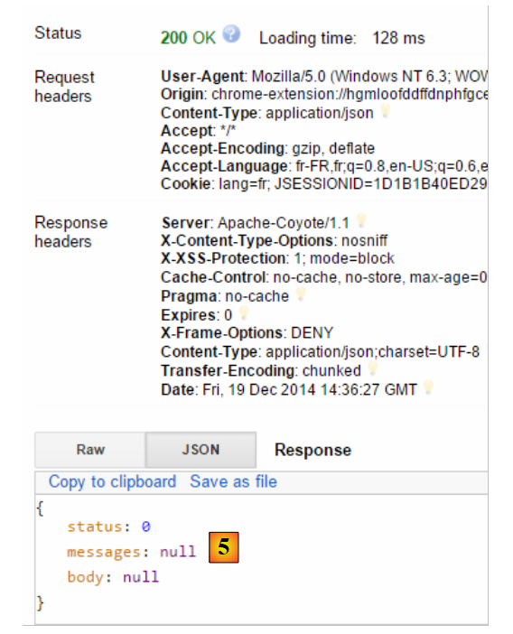 |
- in [5]: Das Feld [status] ist auf 0 gesetzt, was anzeigt, dass der Vorgang erfolgreich war;
Die Löschung des Termins kann überprüft werden:
 |
Oben ist der Termin des Patienten [Mme GERMAIN] nicht mehr vorhanden.
Der Webdienst ermöglicht es außerdem, Entitäten anhand ihrer Kennung abzurufen:
 |
 |
 |
 |
Alle diese URL werden vom Controller [RdvMedecinsController] verarbeitet, den wir in Kürze vorstellen werden.
8.4.11.3. Konfiguration des Webdienstes
 |
Die Konfigurationsklasse [AppConfig] lautet wie folgt:
package rdvmedecins.web.config;
import org.springframework.context.annotation.ComponentScan;
import org.springframework.context.annotation.Configuration;
import org.springframework.context.annotation.Import;
import rdvmedecins.config.DomainAndPersistenceConfig;
@Configuration
@ComponentScan(basePackages = { "rdvmedecins.web" })
@Import({ DomainAndPersistenceConfig.class, SecurityConfig.class, WebConfig.class })
public class AppConfig {
}
- Zeile 12: Die Klasse [AppConfig] konfiguriert die gesamte Anwendung;
- Zeile 9: Die Klasse [AppConfig] ist eine Spring-Konfigurationsklasse;
- Zeile 10: Es wird festgelegt, dass die Spring-Komponenten im Paket [rdvmedecins.web] und dessen Unterpaketen gesucht werden sollen. Auf diese Weise werden die folgenden Komponenten gefunden:
- [@RestController RdvMedecinsController] im Paket [rdvmedecins.web.controllers];
- [@Component ApplicationModel] im Paket [rdvmedecins.web.models];
- Zeile 11: Die Klasse [DomainAndPersistenceConfig] wird importiert, die das Projekt [rdvmedecins-metier-dao] konfiguriert, um Zugriff auf die Beans dieses Projekts zu erhalten;
- Zeile 11: Die Klasse [SecurityConfig] konfiguriert die Sicherheit der Webanwendung. Wir werden sie vorerst ignorieren;
- Zeile 11: Die Klasse [WebConfig] konfiguriert die Schicht [web / jSON];
Die Klasse [WebConfig] sieht wie folgt aus:
package rdvmedecins.web.config;
import org.springframework.boot.context.embedded.EmbeddedServletContainerFactory;
import org.springframework.boot.context.embedded.ServletRegistrationBean;
import org.springframework.boot.context.embedded.tomcat.TomcatEmbeddedServletContainerFactory;
import org.springframework.context.annotation.Bean;
import org.springframework.context.annotation.Configuration;
import org.springframework.web.servlet.DispatcherServlet;
import org.springframework.web.servlet.config.annotation.EnableWebMvc;
import com.fasterxml.jackson.databind.ObjectMapper;
import com.fasterxml.jackson.databind.ser.impl.SimpleBeanPropertyFilter;
import com.fasterxml.jackson.databind.ser.impl.SimpleFilterProvider;
@Configuration
@EnableWebMvc
public class WebConfig {
// Konfiguration des DispatcherServlets für die Header CORS
@Bean
public DispatcherServlet dispatcherServlet() {
DispatcherServlet servlet = new DispatcherServlet();
servlet.setDispatchOptionsRequest(true);
return servlet;
}
@Bean
public ServletRegistrationBean servletRegistrationBean(DispatcherServlet dispatcherServlet) {
return new ServletRegistrationBean(dispatcherServlet, "/*");
}
@Bean
public EmbeddedServletContainerFactory embeddedServletContainerFactory() {
return new TomcatEmbeddedServletContainerFactory("", 8080);
}
// Mapper jSON
@Bean
public ObjectMapper jsonMapper() {
return new ObjectMapper();
}
@Bean
public ObjectMapper jsonMapperShortCreneau() {
ObjectMapper jsonMapperShortCreneau = new ObjectMapper();
SimpleBeanPropertyFilter creneauFilter = SimpleBeanPropertyFilter.serializeAllExcept("medecin");
jsonMapperShortCreneau.setFilters(new SimpleFilterProvider().addFilter("creneauFilter", creneauFilter));
return jsonMapperShortCreneau;
}
@Bean
public ObjectMapper jsonMapperLongRv() {
ObjectMapper jsonMapperLongRv = new ObjectMapper();
SimpleBeanPropertyFilter rvFilter = SimpleBeanPropertyFilter.serializeAllExcept("");
SimpleBeanPropertyFilter creneauFilter = SimpleBeanPropertyFilter.serializeAllExcept("medecin");
jsonMapperLongRv.setFilters(
new SimpleFilterProvider().addFilter("rvFilter", rvFilter).addFilter("creneauFilter", creneauFilter));
return jsonMapperLongRv;
}
@Bean
public ObjectMapper jsonMapperShortRv() {
ObjectMapper jsonMapperShortRv = new ObjectMapper();
SimpleBeanPropertyFilter rvFilter = SimpleBeanPropertyFilter.serializeAllExcept("client", "creneau");
jsonMapperShortRv.setFilters(new SimpleFilterProvider().addFilter("rvFilter", rvFilter));
return jsonMapperShortRv;
}
}
- Zeilen 20–25: definieren die Bean [dispatcherServlet]. Die Klasse [DispatcherServlet] ist das Servlet des Spring-Frameworks MVC. Sie übernimmt die Rolle von [FrontController]: Sie fängt die an die Spring-Website MVC gerichteten Anfragen ab und leitet sie zur Bearbeitung an einen der Controller der Website weiter;
- Zeile 22: Instanziierung der Klasse;
- Zeile 23: Diese Zeile kann vorerst ignoriert werden;
- Zeilen 27–30: Das Servlet [dispatcherServlet] verarbeitet alle URL;
- Zeilen 27–30: Aktivieren den in den Projektabhängigkeiten integrierten Tomcat-Server. Er läuft auf Port 8080;
- Zeilen 38–67: vier Mapper jSON, die mit unterschiedlichen Filtern jSON konfiguriert sind;
- Zeilen 38–41: ein Mapper jSON ohne Filter;
- Zeilen 43–49: Der Mapper jSON [jsonMapperShortCreneau] serialisiert bzw. deserialisiert ein Objekt [Creneau] und ignoriert dabei das Feld [Creneau.medecin];
- Zeilen 51–59: Der Mapper jSON [jsonMapperLongRv] serialisiert bzw. deserialisiert ein Objekt [Rv], wobei das Feld [Rv.creneau.medecin] ignoriert wird;
- Zeilen 61–67: Der Mapper jSON [jsonMapperShortRv] serialisiert / deserialisiert ein Objekt [Rv], wobei die Felder [Rv.creneau] und [Rv.client] ignoriert werden;
8.4.11.4. Die Klasse [ApplicationModel]
 |
Die Klasse [ApplicationModel] dient uns zwei Zwecken:
- als Cache zum Speichern der Ärzte- und Patientenlisten (Kunden);
- als einheitliche Schnittstelle für die Controller;
package rdvmedecins.web.models;
import java.util.Date;
import java.util.List;
import javax.annotation.PostConstruct;
import org.springframework.beans.factory.annotation.Autowired;
import org.springframework.stereotype.Component;
import rdvmedecins.domain.AgendaMedecinJour;
import rdvmedecins.entities.Client;
import rdvmedecins.entities.Creneau;
import rdvmedecins.entities.Medecin;
import rdvmedecins.entities.Rv;
import rdvmedecins.metier.IMetier;
import rdvmedecins.web.helpers.Static;
@Component
public class ApplicationModel implements IMetier {
// die Schicht [métier]
@Autowired
private IMetier métier;
// Daten aus der Schicht [métier]
private List<Medecin> médecins;
private List<Client> clients;
private List<String> messages;
// Konfigurationsdaten
private boolean CORSneeded = false;
private boolean secured = false;
@PostConstruct
public void init() {
// Ärzte und Kunden werden abgerufen
try {
médecins = métier.getAllMedecins();
clients = métier.getAllClients();
} catch (Exception ex) {
messages = Static.getErreursForException(ex);
}
}
// Getter
public List<String> getMessages() {
return messages;
}
// ------------------------- Schnittstelle der Schicht [métier]
@Override
public List<Client> getAllClients() {
return clients;
}
@Override
public List<Medecin> getAllMedecins() {
return médecins;
}
@Override
public List<Creneau> getAllCreneaux(long idMedecin) {
return métier.getAllCreneaux(idMedecin);
}
@Override
public List<Rv> getRvMedecinJour(long idMedecin, Date jour) {
return métier.getRvMedecinJour(idMedecin, jour);
}
@Override
public Client getClientById(long id) {
return métier.getClientById(id);
}
@Override
public Medecin getMedecinById(long id) {
return métier.getMedecinById(id);
}
@Override
public Rv getRvById(long id) {
return métier.getRvById(id);
}
@Override
public Creneau getCreneauById(long id) {
return métier.getCreneauById(id);
}
@Override
public Rv ajouterRv(Date jour, Creneau creneau, Client client) {
return métier.ajouterRv(jour, creneau, client);
}
@Override
public void supprimerRv(long idRv) {
métier.supprimerRv(idRv);
}
@Override
public AgendaMedecinJour getAgendaMedecinJour(long idMedecin, Date jour) {
return métier.getAgendaMedecinJour(idMedecin, jour);
}
// Getter und Setter
public boolean isCORSneeded() {
return CORSneeded;
}
public boolean isSecured() {
return secured;
}
}
- Zeile 19: Die Annotation [@Component] macht die Klasse [ApplicationModel] zu einer Spring-Komponente. Wie alle bisher behandelten Spring-Komponenten (mit Ausnahme von @Controller) wird nur ein einziges Objekt dieses Typs instanziiert (Singleton);
- Zeile 20: Die Klasse [ApplicationModel] implementiert die Schnittstelle [IMetier];
- Zeilen 23–24: Eine Referenz auf die Schicht [métier] wird von Spring injiziert;
- Zeile 34: Die Annotation [@PostConstruct] sorgt dafür, dass die Methode [init] unmittelbar nach der Instanziierung der Klasse [ApplicationModel] ausgeführt wird;
- Zeilen 38–39: Die Listen der Ärzte und Kunden werden aus der Schicht [métier] abgerufen;
- Zeile 41: Tritt eine Ausnahme auf, werden die Meldungen des Ausnahmestapels im Feld in Zeile 17 gespeichert;
Die Architektur der Webschicht entwickelt sich wie folgt:
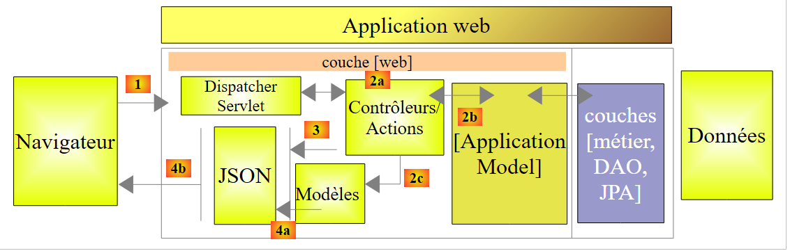 |
- In [2b] kommunizieren die Methoden des oder der Controller mit dem Singleton [ApplicationModel];
Diese Strategie sorgt für Flexibilität bei der Cache-Verwaltung. Derzeit werden die Sprechzeiten der Ärzte nicht zwischengespeichert. Um sie zu zwischenspeichern, muss lediglich die Klasse [ApplicationModel] geändert werden. Dies hat keinerlei Auswirkungen auf den Controller, der weiterhin die Methode [List<Creneau> getAllCreneaux(long idMedecin)] wie bisher verwendet. Geändert wird die Implementierung dieser Methode in [ApplicationModel].
8.4.11.5. Die Klasse „Static“
Die Klasse [Static] umfasst eine Reihe statischer Hilfsmethoden, die weder „geschäftsbezogene“ noch „webbezogene“ Aspekte haben:
 |
Der Code lautet wie folgt:
package rdvmedecins.web.helpers;
import java.util.ArrayList;
import java.util.List;
public class Static {
public Static() {
}
// Liste der Fehlermeldungen einer Ausnahme
public static List<String> getErreursForException(Exception exception) {
// Die Liste der Fehlermeldungen der Ausnahme wird abgerufen
Throwable cause = exception;
List<String> erreurs = new ArrayList<String>();
while (cause != null) {
erreurs.add(cause.getMessage());
cause = cause.getCause();
}
return erreurs;
}
}
- Zeile 12: Die Methode [Static.getErreursForException], die (in Zeile 8 unten) in der Methode [init] der Klasse [ApplicationModel] verwendet wurde:
@PostConstruct
public void init() {
// Ärzte und Kunden abrufen
try {
médecins = métier.getAllMedecins();
clients = métier.getAllClients();
} catch (Exception ex) {
messages = Static.getErreursForException(ex);
}
}
Die Methode erstellt ein Objekt [List<String>] mit den Fehlermeldungen [exception.getMessage()] einer Ausnahme [exception] und der darin enthaltenen Fehlermeldungen [exception.getCause()].
8.4.11.6. Das Controller-Gerüst [RdvMedecinsController]
 |
Wir werden nun die Verarbeitung der URL des Webdienstes im Detail betrachten. Bei dieser Verarbeitung spielen drei Hauptklassen eine Rolle:
- der Controller [RdvMedecinsController];
- die Hilfsmethodenklasse [Static];
- die Cache-Klasse [ApplicationModel];
 |
Der Controller [RdvMedecinsController] sieht wie folgt aus:
package rdvmedecins.web.controllers;
import java.text.ParseException;
import java.text.SimpleDateFormat;
import java.util.ArrayList;
import java.util.Date;
import java.util.List;
import javax.annotation.PostConstruct;
import javax.servlet.http.HttpServletResponse;
import org.springframework.beans.factory.annotation.Autowired;
import org.springframework.stereotype.Controller;
import org.springframework.web.bind.annotation.PathVariable;
import org.springframework.web.bind.annotation.RequestBody;
import org.springframework.web.bind.annotation.RequestHeader;
import org.springframework.web.bind.annotation.RequestMapping;
import org.springframework.web.bind.annotation.RequestMethod;
import org.springframework.web.bind.annotation.ResponseBody;
import com.fasterxml.jackson.core.JsonProcessingException;
import com.fasterxml.jackson.databind.ObjectMapper;
import rdvmedecins.domain.AgendaMedecinJour;
import rdvmedecins.entities.Client;
import rdvmedecins.entities.Creneau;
import rdvmedecins.entities.Medecin;
import rdvmedecins.entities.Rv;
import rdvmedecins.web.helpers.Static;
import rdvmedecins.web.models.ApplicationModel;
import rdvmedecins.web.models.PostAjouterRv;
import rdvmedecins.web.models.PostSupprimerRv;
import rdvmedecins.web.models.Response;
@Controller
public class RdvMedecinsController {
@Autowired
private ApplicationModel application;
@Autowired
private RdvMedecinsCorsController rdvMedecinsCorsController;
// Liste der Meldungen
private List<String> messages;
// Mapper jSON
@Autowired
private ObjectMapper jsonMapper;
@Autowired
private ObjectMapper jsonMapperShortCreneau;
@Autowired
private ObjectMapper jsonMapperLongRv;
@Autowired
private ObjectMapper jsonMapperShortRv;
@PostConstruct
public void init() {
// Fehlermeldungen der Anwendung
messages = application.getMessages();
}
// Liste der Ärzte
@RequestMapping(value = "/getAllMedecins", method = RequestMethod.GET, produces = "application/json; charset=UTF-8")
@ResponseBody
public String getAllMedecins() throws JsonProcessingException {...}
// Kundenliste
@RequestMapping(value = "/getAllClients", method = RequestMethod.GET, produces = "application/json; charset=UTF-8")
@ResponseBody
public String getAllClients() throws JsonProcessingException {...}
// Liste der Termine eines Arztes
@RequestMapping(value = "/getAllCreneaux/{idMedecin}", method = RequestMethod.GET, produces = "application/json; charset=UTF-8")
@ResponseBody
public String getAllCreneaux(@PathVariable("idMedecin") long idMedecin) throws JsonProcessingException {...}
// Liste der Termine eines Arztes
@RequestMapping(value = "/getRvMedecinJour/{idMedecin}/{jour}", method = RequestMethod.GET, produces = "application/json; charset=UTF-8")
@ResponseBody
public String getRvMedecinJour(@PathVariable("idMedecin") long idMedecin, @PathVariable("jour") String jour)
throws JsonProcessingException {...}
@RequestMapping(value = "/getClientById/{id}", method = RequestMethod.GET, produces = "application/json; charset=UTF-8")
@ResponseBody
public String getClientById(@PathVariable("id") long id) throws JsonProcessingException {...}
@RequestMapping(value = "/getMedecinById/{id}", method = RequestMethod.GET, produces = "application/json; charset=UTF-8")
@ResponseBody
public String getMedecinById(@PathVariable("id") long id) String origin) throws JsonProcessingException {...}
@RequestMapping(value = "/getRvById/{id}", method = RequestMethod.GET, produces = "application/json; charset=UTF-8")
@ResponseBody
public String getRvById(@PathVariable("id") long id) throws JsonProcessingException {...}
@RequestMapping(value = "/getCreneauById/{id}", method = RequestMethod.GET, produces = "application/json; charset=UTF-8")
@ResponseBody
public String getCreneauById(@PathVariable("id") long id) throws JsonProcessingException {...}
@RequestMapping(value = "/ajouterRv", method = RequestMethod.POST, produces = "application/json; charset=UTF-8", consumes = "application/json; charset=UTF-8")
@ResponseBody
public String ajouterRv(@RequestBody PostAjouterRv post) throws JsonProcessingException {...}
@RequestMapping(value = "/supprimerRv", method = RequestMethod.POST, produces = "application/json; charset=UTF-8", consumes = "application/json; charset=UTF-8")
@ResponseBody
public String supprimerRv(@RequestBody PostSupprimerRv post) throws JsonProcessingException {...}
@RequestMapping(value = "/getAgendaMedecinJour/{idMedecin}/{jour}", method = RequestMethod.GET, produces = "application/json; charset=UTF-8")
@ResponseBody
public String getAgendaMedecinJour(@PathVariable("idMedecin") long idMedecin, @PathVariable("jour") String jour)
throws JsonProcessingException {...}
@RequestMapping(value = "/authenticate", method = RequestMethod.GET, produces = "application/json; charset=UTF-8")
@ResponseBody
public String authenticate() throws JsonProcessingException {...}
}
- Zeile 35: Die Annotation [@Controller] macht die Klasse [RdvMedecinsController] zu einem Spring-Controller, dem C von MVC;
- Zeilen 38–39: Ein Objekt vom Typ [ApplicationModel] wird hier von Spring injiziert. Wir haben es bereits vorgestellt;
- Zeilen 41–42: Ein Objekt vom Typ [RdvMedecinsCorsController] wird hier von Spring injiziert. Dieses Objekt werden wir erst später vorstellen;
- Zeilen 48–58: die in der Konfigurationsklasse [WebConfig] definierten Mapper jSON;
- Zeile 60: Die Annotation [@PostConstruct] kennzeichnet eine Methode, die unmittelbar nach der Instanziierung der Klasse ausgeführt werden soll. Wenn diese ausgeführt wird, stehen die von Spring injizierten Objekte zur Verfügung;
- Zeile 63: Eventuelle Fehlermeldungen werden aus dem Objekt [ApplicationModel] abgerufen. Dieses Objekt wurde beim Start der Anwendung instanziiert und hat versucht, die Ärzte und Kunden zwischenzuspeichern. Ist dies fehlgeschlagen, liegt [messages!=null] vor. Dadurch können die Methoden des Controllers feststellen, ob die Anwendung korrekt initialisiert wurde;
- Zeilen 67–118: Die vom Dienst [web / jSON] bereitgestellten Methoden URL. Alle Methoden geben die Zeichenkette jSON eines Objekts vom Typ [Response<T>] wie folgt zurück:
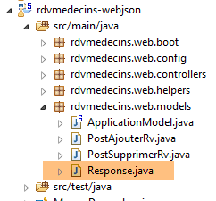 |
package rdvmedecins.web.models;
import java.util.List;
public class Response<T> {
// ----------------- Eigenschaften
// Status des Vorgangs
private int status;
// eventuelle Fehlermeldungen
private List<String> messages;
// der Antworttext
private T body;
// Konstruktoren
public Response() {
}
public Response(int status, List<String> messages, T body) {
this.status = status;
this.messages = messages;
this.body = body;
}
// Getter und Setter
...
}
- Zeile 9: ein Fehlercode: 0 bedeutet „kein Fehler“;
- Zeile 11: Wenn [status!=0], dann ist [messages] eine Liste von Fehlermeldungen;
- Zeile 13: Ein in der Antwort gekapseltes T-Objekt. T ist im Fehlerfall gleich null;
Dieses Objekt wird in jSON serialisiert, bevor es an den Client-Browser gesendet wird;
- Zeile 67: Das exponierte URL ist [/getAllMedecins]. Der Client muss eine Methode [GET] verwenden, um seine Anfrage zu stellen (method = RequestMethod.GET). Würde diese URL von einer POST angefordert, würde sie abgelehnt und Spring MVC würde einen Fehlercode HTTP an den Web-Client senden. Die Methode sendet die Antwort selbst an den Client zurück (Zeile 68). Dabei handelt es sich um eine Zeichenkette (Zeile 67). Der Header HTTP [Content-type : application/json; charset=UTF-8] wird an den Client gesendet, um ihm mitzuteilen, dass er eine Zeichenkette jSON (Zeile 67) erhalten wird;
- Zeile 77: Der Parameter URL wird durch {idMedecin} festgelegt. Dieser Parameter wird mit der Anmerkung [@PathVariable] in Zeile 79 abgerufen;
- Zeile 79: Der Parameter [long idMedecin] erhält seinen Wert vom Parameter {idMedecin} aus dem URL [@PathVariable("idMedecin")]. Der Parameter in URL und der der Methode können unterschiedliche Namen haben. Hierbei ist zu beachten, dass [@PathVariable("idMedecin")] vom Typ String ist (das gesamte URL ist ein String), während der Parameter [long idMedecin] vom Typ [long] ist. Die Typumwandlung erfolgt automatisch. Wenn diese Typumwandlung fehlschlägt, wird der Fehlercode HTTP zurückgegeben;
- Zeile 105: Die Anmerkung [@RequestBody] bezeichnet den Hauptteil der Anfrage. In einer Anfrage vom Typ GET gibt es so gut wie nie einen Hauptteil (es ist jedoch möglich, einen anzugeben). In einer Anfrage vom Typ POST ist meist ein Hauptteil vorhanden (es ist jedoch möglich, keinen anzugeben). Für die Anfragen URL und [ajouterRv] sendet der Webclient in seiner Anfrage POST die folgende Zeichenfolge:
Die Syntax [@RequestBody PostAjouterRv post] (Zeile 105) sowie die Tatsache, dass die Methode in Zeile 103 den Wert jSON erwartet, führen dazu, dass die vom Web-Client gesendete Zeichenfolge jSON in ein Objekt vom Typ [PostAjouterRv] deserialisiert wird. Dieser lautet wie folgt:
package rdvmedecins.web.models;
public class PostAjouterRv {
// Beitragsdaten
private String jour;
private long idClient;
private long idCreneau;
// Getter und Setter
...
}
Auch hier erfolgen die erforderlichen Typänderungen automatisch;
- in den Zeilen 107–109 findet sich ein ähnlicher Mechanismus für die Zeichenfolgen URL und [/supprimerRv]. Die gesendete Zeichenfolge jSON lautet wie folgt:
und der Typ [PostSupprimerRv] lautet wie folgt:
package rdvmedecins.web.models;
public class PostSupprimerRv {
// Beitragsdaten
private long idRv;
// Getter und Setter
...
}
8.4.11.7. URL [/getAllMedecins]
URL und [/getAllMedecins] werden vom Controller [RdvMedecinsController] wie folgt verarbeitet:
// Ärzteliste
@RequestMapping(value = "/getAllMedecins", method = RequestMethod.GET, produces = "application/json; charset=UTF-8")
@ResponseBody
public String getAllMedecins() throws JsonProcessingException {
// die Antwort
Response<List<Medecin>> response;
// Anwendungsstatus
if (messages != null) {
response = new Response<>(-1, messages, null);
} else {
// Liste der Ärzte
try {
response = new Response<>(0, null, application.getAllMedecins());
} catch (RuntimeException e) {
response = new Response<>(1, Static.getErreursForException(e), null);
}
}
// Antwort
return jsonMapper.writeValueAsString(response);
}
- Zeilen 9–10: Es wird geprüft, ob die Anwendung korrekt initialisiert wurde (messages==null). Ist dies nicht der Fall, wird eine Antwort mit status=-1 und body=messages zurückgegeben;
- Zeile 13: Andernfalls wird die Liste der Ärzte von der Klasse [ApplicationModel] angefordert;
- Zeile 19: Die Zeichenfolge jSON aus der Antwort wird mit dem Mapper jSON [jsonMapper] gesendet, da die Klasse [Medecin]über keinen Filter jSON verfügt. Die Antwort kann fehlerfrei (Zeile 14) oder fehlerhaft (Zeile 16) sein. Die Methode [application.getAllMedecins()] löst keine Ausnahme aus, da sie lediglich eine Liste zurückgibt, die im Cache gespeichert ist. Dennoch behalten wir diese Ausnahmebehandlung für den Fall bei, dass die Ärzte nicht mehr im Cache gespeichert sind;
Wir haben den Fall, in dem die Anwendung nicht ordnungsgemäß initialisiert wurde, noch nicht veranschaulicht. Beenden wir die Methoden SGBD und MySQL5, starten wir den Webdienst und rufen wir dann die Methoden URL und [/getAllMedecins] auf:

Es wird tatsächlich ein Fehler ausgegeben. Unter normalen Umständen wird folgende Ansicht angezeigt:
 |
8.4.11.8. URL [/getAllClients]
Die URL [/getAllClients] wird von der folgenden Methode des Controllers [RdvMedecinsController] verarbeitet:
// Kundenliste
@RequestMapping(value = "/getAllClients", method = RequestMethod.GET, produces = "application/json; charset=UTF-8")
@ResponseBody
public String getAllClients() throws JsonProcessingException {
// die Antwort
Response<List<Client>> response;
// Anwendungsstatus
if (messages != null) {
response = new Response<>(-1, messages, null);
}
// Kundenliste
try {
response = new Response<>(0, null, application.getAllClients());
} catch (RuntimeException e) {
response = new Response<>(1, Static.getErreursForException(e), null);
}
// Antwort
return jsonMapper.writeValueAsString(response);
}
Sie entspricht der bereits untersuchten Methode [getAllMedecins]. Die erzielten Ergebnisse lauten wie folgt:
 |
8.4.11.9. URL [/getAllCreneaux/{idMedecin}]
Die Methode URL [/getAllCreneaux/{idMedecin}] wird von der folgenden Methode des Controllers [RdvMedecinsController] verarbeitet:
// Liste der Termine eines Arztes
@RequestMapping(value = "/getAllCreneaux/{idMedecin}", method = RequestMethod.GET, produces = "application/json; charset=UTF-8")
@ResponseBody
public String getAllCreneaux(@PathVariable("idMedecin") long idMedecin) throws JsonProcessingException {
// die Antwort
Response<List<Creneau>> response;
// Anwendungsstatus
if (messages != null) {
response = new Response<>(-1, messages, null);
}
// Der Arzt wird abgerufen
Response<Medecin> responseMedecin = getMedecin(idMedecin);
if (responseMedecin.getStatus() != 0) {
response = new Response<>(responseMedecin.getStatus(), responseMedecin.getMessages(), null);
} else {
Medecin médecin = responseMedecin.getBody();
// Termine des Arztes
try {
response = new Response<>(0, null, application.getAllCreneaux(médecin.getId()));
} catch (RuntimeException e1) {
response = new Response<>(3, Static.getErreursForException(e1), null);
}
}
// Antwort
return jsonMapperShortCreneau.writeValueAsString(response);
}
- Zeile 12: Der durch den Parameter [id] identifizierte Arzt wird an eine lokale Methode übergeben:
private Response<Medecin> getMedecin(long id) {
// Arzt wird abgerufen
Medecin médecin = null;
try {
médecin = application.getMedecinById(id);
} catch (RuntimeException e1) {
return new Response<Medecin>(1, Static.getErreursForException(e1), null);
}
// Arzt bereits vorhanden?
if (médecin == null) {
List<String> messages = new ArrayList<String>();
messages.add(String.format("Le médecin d'id [%s] n'existe pas", id));
return new Response<Medecin>(2, messages, null);
}
// OK
return new Response<Medecin>(0, null, médecin);
}
Von dieser Methode kehrt man mit einem status in [0,1,2] zurück. Kehren wir zum Code der Methode [getAllCreneaux] zurück:
- Zeilen 13–14: Wenn status!=0, wird eine Antwort mit Fehler erstellt;
- Zeile 16: Der Arzt wird abgerufen;
- Zeile 19: Die Termine dieses Arztes werden abgerufen;
- Zeile 25: Als Antwort wird ein Objekt vom Typ [List<Creneau>] gesendet. Zur Erinnerung: Die Definition der Klasse [Creneau] lautet:
@Entity
@Table(name = "creneaux")
public class Creneau extends AbstractEntity {
private static final long serialVersionUID = 1L;
// Merkmale eines Termins von RV
private int hdebut;
private int mdebut;
private int hfin;
private int mfin;
// Ein Termin ist mit einem Arzt verknüpft
@ManyToOne(fetch = FetchType.LAZY)
@JoinColumn(name = "id_medecin")
private Medecin medecin;
// Fremdschlüssel
@Column(name = "id_medecin", insertable = false, updatable = false)
private long idMedecin;
...
}
- Zeile 13: Der Arzt wird im Modus [FetchType.LAZY] gesucht;
Zur Erinnerung: Die Abfrage JPQL implementiert die Methode [getAllCreneaux] in der Schicht [DAO]:
@Query("select c from Creneau c where c.medecin.id=?1")
Die Notation [c.medecin.id] erzwingt die Verknüpfung zwischen den Tabellen [CRENEAUX] und [MEDECINS]. Daher liefert die Abfrage alle Termine des Arztes, wobei in jedem Termin der Arzt enthalten ist. Wenn man diese Termine in jSON serialisiert, erscheint in jedem Termin die Zeichenfolge jSON des Arztes. Das ist unnötig. Um die Serialisierung zu überprüfen, benötigen wir zwei Dinge:
- Zugriff auf das zu serialisierende Objekt;
- das zu serialisierende Objekt konfigurieren;
Punkt 1 wird durch die Einbindung des für das Objekt geeigneten Konverters jSON in den Controller sichergestellt:
@Autowired
private ObjectMapper jsonMapperShortCreneau;
Punkt 2 wird erreicht, indem der im Projekt [rdvmedecins-metier-dao] definierten Klasse [Creneau] eine Annotation hinzugefügt wird:
 |
@Entity
@Table(name = "creneaux")
@JsonFilter("creneauFilter")
public class Creneau extends AbstractEntity {
...
- Zeile 3: Eine Annotation aus der Bibliothek jSON Jackson. Sie erstellt einen Filter namens [creneauFilter]. Mithilfe dieses Filters können wir programmgesteuert festlegen, welche Felder serialisiert werden sollen und welche nicht;
Die Serialisierung des Objekts [Creneau] erfolgt in der folgenden Zeile der Methode [getAllCreneaux]:
// Antwort
return jsonMapperShortCreneau.writeValueAsString(response);
Der Mapper jSON [jsonMapperShortCreneau] wurde in der Klasse [WebConfig] wie folgt definiert:
@Bean
public ObjectMapper jsonMapperShortCreneau() {
ObjectMapper jsonMapperShortCreneau = new ObjectMapper();
SimpleBeanPropertyFilter creneauFilter = SimpleBeanPropertyFilter.serializeAllExcept("medecin");
jsonMapperShortCreneau.setFilters(new SimpleFilterProvider().addFilter("creneauFilter", creneauFilter));
return jsonMapperShortCreneau;
}
- Zeile 5: Der Filter mit dem Namen [creneauFilter] ist dem Filter [creneauFilter] aus Zeile 4 zugeordnet. Dieser Filter serialisiert das Objekt [Creneau] ohne dessen Feld [medecin];
Das von der Methode [getAllCreneaux] zurückgegebene Ergebnis ist die Zeichenkette jSON vom Typ [Response<List<Creneau>].
Die erhaltenen Ergebnisse lauten wie folgt:
 |
oder diese, falls das Zeitfenster nicht existiert:
 |
Aus diesem Beispiel lässt sich folgende Regel ableiten:
- Die Methoden des Webservers / jSON geben ein Objekt vom Typ [Response<T>] zurück, das in jSON serialisiert wird;
- wenn der Typ T einen oder mehrere Filter jSON hat, wird zur Serialisierung ein Mapper mit denselben Filtern verwendet;
8.4.11.10. Das URL [/getRvMedecinJour/{idMedecin}/{jour}]
Der URL [/getRvMedecinJour/{idMedecin}/{jour}] wird durch die folgende Methode des Controllers [RdvMedecinsController] verarbeitet:
// Liste der Termine eines Arztes
@RequestMapping(value = "/getRvMedecinJour/{idMedecin}/{jour}", method = RequestMethod.GET, produces = "application/json; charset=UTF-8")
@ResponseBody
public String getRvMedecinJour(@PathVariable("idMedecin") long idMedecin)
throws JsonProcessingException {
// die Antwort
Response<List<Rv>> response=null;
boolean erreur = false;
// Anwendungsstatus
if (messages != null) {
response = new Response<>(-1, messages, null);
erreur = true;
}
// Das Datum wird überprüft
Date jourAgenda = null;
if (!erreur) {
SimpleDateFormat sdf = new SimpleDateFormat("yyyy-MM-dd");
sdf.setLenient(false);
try {
jourAgenda = sdf.parse(jour);
} catch (ParseException e) {
List<String> messages = new ArrayList<String>();
messages.add(String.format("La date [%s] est invalide", jour));
response = new Response<List<Rv>>(3, messages, null);
erreur = true;
}
}
Response<Medecin> responseMedecin = null;
if (!erreur) {
// Der Arzt wird abgerufen
responseMedecin = getMedecin(idMedecin);
if (responseMedecin.getStatus() != 0) {
response = new Response<>(responseMedecin.getStatus(), responseMedecin.getMessages(), null);
erreur = true;
}
}
if (!erreur) {
Medecin médecin = responseMedecin.getBody();
// Liste seiner Termine
try {
response = new Response<>(0, null, application.getRvMedecinJour(médecin.getId(), jourAgenda));
} catch (RuntimeException e1) {
response = new Response<>(4, Static.getErreursForException(e1), null);
}
}
// Antwort
return jsonMapperLongRv.writeValueAsString(response);
}
- Die Zeichenfolge jSON muss in den Typ [Response<List<Rv>>] umgewandelt werden. Die Klasse [Rv] verfügt über ein Feld [Rv.creneau]. Wird dieses Feld serialisiert, trifft man auf den Filter jSON [creneauFilter];
- Zeile 47: Das Objekt vom Typ [Response<List<Rv>>] aus Zeile 7 wird in jSON serialisiert;
Betrachten wir den Fall, in dem die Terminliste in Zeile 42 abgerufen wurde. Die Klasse [Rv] im Projekt [rdvmedecins-metier-dao] ist wie folgt definiert:
@Entity
@Table(name = "rv")
public class Rv extends AbstractEntity {
private static final long serialVersionUID = 1L;
// Merkmale eines Termins
@Temporal(TemporalType.DATE)
private Date jour;
// Ein Termin ist mit einem Kunden verknüpft
@ManyToOne(fetch = FetchType.LAZY)
@JoinColumn(name = "id_client")
private Client client;
// Ein Termin ist mit einem Zeitfenster verknüpft
@ManyToOne(fetch = FetchType.LAZY)
@JoinColumn(name = "id_creneau")
private Creneau creneau;
// Fremdschlüssel
@Column(name = "id_client", insertable = false, updatable = false)
private long idClient;
@Column(name = "id_creneau", insertable = false, updatable = false)
private long idCreneau;
...
}
- Zeile 11: Der Kunde wird mit dem Modus [FetchType.LAZY] gesucht;
- Zeile 18: Der Terminblock wird mit dem Modus [FetchType.LAZY] gesucht;
Zur Erinnerung: Die Abfrage JPQL dient zur Suche nach Terminen:
@Query("select rv from Rv rv left join fetch rv.client c left join fetch rv.creneau cr where cr.medecin.id=?1 and rv.jour=?2")
Es werden explizit Verknüpfungen durchgeführt, um die Felder [client] und [creneau] abzurufen. Aufgrund der Verknüpfung [cr.medecin.id=?1] erhalten wir zudem den Arzt. Der Arzt erscheint somit in der Zeichenkette jSON jedes Termins. Diese doppelte Information ist jedoch überflüssig. Wir haben gesehen, wie sich dieses Problem mithilfe eines Filters jSON auf das Objekt [Creneau] lösen lässt. Aufgrund der Modi [FetchType.LAZY] der Felder [client] und [creneau] der Klasse [Rv] werden wir bald feststellen, dass ein Filter jSON auf die Klasse [RV] des Projekts [rdvmedecins-metier-dao] angewendet werden muss:
@Entity
@Table(name = "rv")
@JsonFilter("rvFilter")
public class Rv extends AbstractEntity {
...
Wir werden die Serialisierung des Objekts [Rv] mit dem Filter [rvFilter] überprüfen. Anscheinend ist hier keine Filterung erforderlich, da wir alle Felder des Objekts vom Typ [Rv] benötigen. Da wir jedoch angegeben haben, dass die Klasse einen Filter jSON besitzt, müssen wir diesen für jede Serialisierung eines Objekts vom Typ [Rv] definieren, da sonst eine Ausnahme ausgelöst wird. Dazu verwenden wir den folgenden Mapper jSON, der in der Klasse [rdvMedecinsController] definiert ist:
@Autowired
private ObjectMapper jsonMapperLongRv;
Dieser Mapper ist in der Konfigurationsklasse [WebConfig] wie folgt definiert:
@Bean
public ObjectMapper jsonMapperLongRv() {
ObjectMapper jsonMapperLongRv = new ObjectMapper();
SimpleBeanPropertyFilter rvFilter = SimpleBeanPropertyFilter.serializeAllExcept("");
SimpleBeanPropertyFilter creneauFilter = SimpleBeanPropertyFilter.serializeAllExcept("medecin");
jsonMapperLongRv.setFilters(new SimpleFilterProvider().addFilter("rvFilter", rvFilter).addFilter("creneauFilter",creneauFilter));
return jsonMapperLongRv;
}
- Zeile 4: Wir geben an, dass alle Felder des Objekts [Rv] serialisiert werden sollen;
- Zeile 5: Wir legen fest, dass im Objekt [Creneau] das Feld [medecin] nicht serialisiert werden soll;
- Zeile 6: Wir fügen die beiden Filter [rvFilter] und [creneauFilter] zu den Filtern jSON des Objekts [jsonMapperLongRv] hinzu;
Die Ergebnisse lauten wie folgt:
 |
oder auch diese mit einem Tag ohne Termin:
 |
oder auch diese mit einem falschen Datum:
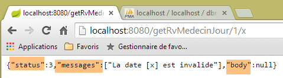 |
oder diese mit einem falschen Arzt:
 |
8.4.11.11. Die URL und [/getAgendaMedecinJour/{idMedecin}/{jour}]
URL und [/getAgendaMedecinJour/{idMedecin}/{jour}] werden vom Controller [RdvMedecinsController] wie folgt verarbeitet:
@RequestMapping(value = "/getAgendaMedecinJour/{idMedecin}/{jour}", method = RequestMethod.GET, produces = "application/json; charset=UTF-8")
@ResponseBody
public String getAgendaMedecinJour(@PathVariable("idMedecin") long idMedecin)
throws JsonProcessingException {
// die Antwort
Response<AgendaMedecinJour> response = null;
boolean erreur = false;
// Anwendungsstatus
if (messages != null) {
response = new Response<>(-1, messages, null);
erreur = true;
}
// Das Datum wird überprüft
Date jourAgenda = null;
if (!erreur) {
// Das Datum wird überprüft
SimpleDateFormat sdf = new SimpleDateFormat("yyyy-MM-dd");
sdf.setLenient(false);
try {
jourAgenda = sdf.parse(jour);
} catch (ParseException e) {
erreur = true;
List<String> messages = new ArrayList<String>();
messages.add(String.format("La date [%s] est invalide", jour));
response = new Response<>(3, messages, null);
}
}
// Der Arzt wird abgerufen
Medecin médecin = null;
if (!erreur) {
// Der Arzt wird abgerufen
Response<Medecin> responseMedecin = getMedecin(idMedecin);
if (responseMedecin.getStatus() != 0) {
response = new Response<>(responseMedecin.getStatus(), responseMedecin.getMessages(), null);
} else {
médecin = responseMedecin.getBody();
}
}
// Terminkalender abrufen
if (!erreur) {
try {
response = new Response<>(0, null, application.getAgendaMedecinJour(médecin.getId(), jourAgenda));
} catch (RuntimeException e1) {
erreur = true;
response = new Response<>(4, Static.getErreursForException(e1), null);
}
}
// Antwort
return jsonMapperLongRv.writeValueAsString(response);
}
- Zeilen 6, 49: Die Zeichenkette jSON wird in ein Objekt vom Typ [AgendaMedecinJour] umschlossen, das wiederum in einem Objekt vom Typ [Response] gekapselt ist;
Der Typ [AgendaMedecinJour] lautet wie folgt:
public class AgendaMedecinJour implements Serializable {
// Felder
private Medecin medecin;
private Date jour;
private CreneauMedecinJour[] creneauxMedecinJour;
Der Typ [CreneauMedecinJour] lautet wie folgt:
public class CreneauMedecinJour implements Serializable {
private static final long serialVersionUID = 1L;
// Felder
private Creneau creneau;
private Rv rv;
Die Felder [creneau] und [rv] verfügen über Filter jSON, die konfiguriert werden müssen. Dies geschieht in Zeile 49 der Methode [getAgendaMedecinJour], die den bereits erwähnten Mapper jSON [jsonMapperLongRv] verwendet:
@Bean
public ObjectMapper jsonMapperLongRv() {
ObjectMapper jsonMapperLongRv = new ObjectMapper();
SimpleBeanPropertyFilter rvFilter = SimpleBeanPropertyFilter.serializeAllExcept("");
SimpleBeanPropertyFilter creneauFilter = SimpleBeanPropertyFilter.serializeAllExcept("medecin");
jsonMapperLongRv.setFilters(
new SimpleFilterProvider().addFilter("rvFilter", rvFilter).addFilter("creneauFilter", creneauFilter));
return jsonMapperLongRv;
}
Die Ergebnisse lauten wie folgt:
 |
Oben ist zu sehen, dass Dr. PELISSIER am 28.01.2015 um 8:20 Uhr einen Termin mit Frau Brigitte BISTROU hat;
oder diese, falls das Datum falsch ist:
 |
oder diese, falls die Arztnummer ungültig ist:
 |
8.4.11.12. URL [/getMedecinById/{id}]
URL und [/getMedecinById/{id}] werden vom Prüfer [RdvMedecinsController] wie folgt verarbeitet:
@RequestMapping(value = "/getMedecinById/{id}", method = RequestMethod.GET, produces = "application/json; charset=UTF-8")
@ResponseBody
public String getMedecinById(@PathVariable("id") long id) throws JsonProcessingException {
// die Antwort
Response<Medecin> response;
// Anwendungsstatus
if (messages != null) {
response = new Response<Medecin>(-1, messages, null);
} else {
response = getMedecin(id);
}
// Antwort
return jsonMapper.writeValueAsString(response);
}
- Zeilen 5, 13: Die Methode wandelt die Zeichenkette „jSON“ in den Typ „[Medecin]“ um. Dieser Typ verfügt nicht über die Filteranmerkung „jSON“. Daher wird in Zeile 14 der Mapper jSON ohne Filter verwendet;
In Zeile 10 lautet die Methode [getMedecin] wie folgt:
private Response<Medecin> getMedecin(long id) {
// Der Arzt wird abgerufen
Medecin médecin = null;
try {
médecin = application.getMedecinById(id);
} catch (RuntimeException e1) {
return new Response<Medecin>(1, Static.getErreursForException(e1), null);
}
// Arzt bereits vorhanden?
if (médecin == null) {
List<String> messages = new ArrayList<String>();
messages.add(String.format("Le médecin d'id [%s] n'existe pas", id));
return new Response<Medecin>(2, messages, null);
}
// ok
return new Response<Medecin>(0, null, médecin);
}
Die erzielten Ergebnisse lauten wie folgt:
 |
oder diese, falls die Arztnummer falsch ist:
 |
8.4.11.13. URL [/getClientById/{id}]
URL [/getClientById/{id}] wird vom Controller [RdvMedecinsController] wie folgt verarbeitet:
@RequestMapping(value = "/getClientById/{id}", method = RequestMethod.GET, produces = "application/json; charset=UTF-8")
@ResponseBody
public String getClientById(@PathVariable("id") long id) throws JsonProcessingException {
// die Antwort
Response<Client> response;
// Anwendungsstatus
if (messages != null) {
response = new Response<>(-1, messages, null);
} else {
response = getClient(id);
}
// Antwort
return jsonMapper.writeValueAsString(response);
}
- Zeilen 5, 13: Die Methode gibt die Zeichenkette jSON vom Typ [Client] zurück. Dieser Typ enthält keine Filteranmerkungen jSON. Daher wird in Zeile 13 der Mapper jSON ohne Filter verwendet;
In Zeile 11 lautet die Methode [getClient] wie folgt:
private Response<Client> getClient(long id) {
// Der Kunde wird abgerufen
Client client = null;
try {
client = application.getClientById(id);
} catch (RuntimeException e1) {
return new Response<Client>(1, Static.getErreursForException(e1), null);
}
// Kunde bereits vorhanden?
if (client == null) {
List<String> messages = new ArrayList<String>();
messages.add(String.format("Le client d'id [%s] n'existe pas", id));
return new Response<Client>(2, messages, null);
}
// ok
return new Response<Client>(0, null, client);
}
Die erzielten Ergebnisse lauten wie folgt:
 |
oder diese, falls die Kundennummer falsch ist:
 |
8.4.11.14. URL [/getCreneauById/{id}]
URL [/getCreneauById/{id}] wird durch die folgende Methode des Controllers [RdvMedecinsController] verarbeitet:
@RequestMapping(value = "/getCreneauById/{id}", method = RequestMethod.GET, produces = "application/json; charset=UTF-8")
@ResponseBody
public String getCreneauById(@PathVariable("id") long id) throws JsonProcessingException {
// die Antwort
Response<Creneau> response;
// Anwendungsstatus
if (messages != null) {
response = new Response<>(-1, messages, null);
} else {
// Termin wird zurückgegeben
response = getCreneau(id);
}
// Antwort
return jsonMapperShortCreneau.writeValueAsString(response);
}
- Zeilen 5, 14: Die Methode gibt die Zeichenkette jSON vom Typ [Response<Creneau>] zurück;
Zeile 8: Die Methode [getCreneau] lautet wie folgt:
private Response<Creneau> getCreneau(long id) {
// Zeitfenster abrufen
Creneau créneau = null;
try {
créneau = application.getCreneauById(id);
} catch (RuntimeException e1) {
return new Response<Creneau>(1, Static.getErreursForException(e1), null);
}
// Zeitfenster vorhanden?
if (créneau == null) {
List<String> messages = new ArrayList<String>();
messages.add(String.format("Le créneau d'id [%s] n'existe pas", id));
return new Response<Creneau>(2, messages, null);
}
// ok
return new Response<Creneau>(0, null, créneau);
}
Zur Erinnerung: Der Code der Entität [Creneau] lautet:
@Entity
@Table(name = "creneaux")
@JsonFilter("creneauFilter")
public class Creneau extends AbstractEntity {
private static final long serialVersionUID = 1L;
// Merkmale eines Termins von RV
private int hdebut;
private int mdebut;
private int hfin;
private int mfin;
// Ein Termin ist mit einem Arzt verknüpft
@ManyToOne(fetch = FetchType.LAZY)
@JoinColumn(name = "id_medecin")
private Medecin medecin;
// Fremdschlüssel
@Column(name = "id_medecin", insertable = false, updatable = false)
private long idMedecin;
- Zeilen 14–16: Da sich das Feld [medecin] im Modus [fetch = FetchType.LAZY] befindet, wird es nicht zurückgegeben, wenn ein Zeitfenster über sein [id] abgerufen wird. Es ist daher notwendig, es aus der Serialisierung auszuschließen. Ohne diesen Ausschluss kommt es zu einer Ausnahme. Diese ist darauf zurückzuführen, dass das Serialisierungsobjekt [mapper] die Methode [getMedecin] aufruft, um das Feld [medecin] abzurufen. Bei einer Implementierung mit JPA / Hibernate hat der Modus [fetch = FetchType.LAZY] des Feldes [medecin] ein Objekt [Creneau] zurückgegeben, dessen Methode [getMedecin] so programmiert ist, dass sie den Arzt im Kontext JPA abzurufen. Man bezeichnet dies als ein Objekt [proxy]. Erinnern wir uns jedoch an die Architektur der Webanwendung:
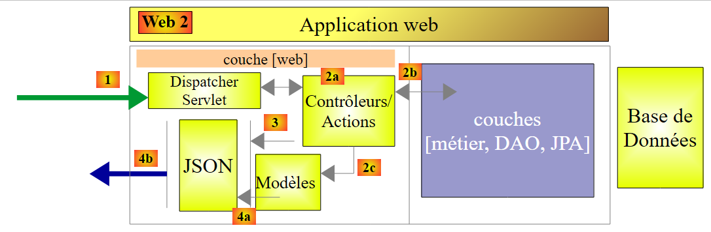 |
Der Controller befindet sich im Block [Contrôleurs / Actions]. Befindet man sich in diesem Block, gibt es den Kontext JPA nicht mehr. Dieser wird während der Operationen der Schicht [DAO] erstellt. Er besteht danach nicht mehr. Wenn der Controller also versucht, auf den Kontext JPA zuzugreifen, tritt eine Ausnahme auf, die darauf hinweist, dass dieser geschlossen ist. Um diese Ausnahme zu vermeiden, muss die Serialisierung des Feldes [medecin] der Klasse [Rv] verhindert werden. Genau das tut der Mapper jSON [jsonMapperShortCreneau]:
@Bean
public ObjectMapper jsonMapperShortCreneau() {
ObjectMapper jsonMapperShortCreneau = new ObjectMapper();
SimpleBeanPropertyFilter creneauFilter = SimpleBeanPropertyFilter.serializeAllExcept("medecin");
jsonMapperShortCreneau.setFilters(new SimpleFilterProvider().addFilter("creneauFilter", creneauFilter));
return jsonMapperShortCreneau;
}
Die Ergebnisse lauten wie folgt:
 |
oder diese, falls die Zeitfensternummer falsch ist:
 |
8.4.11.15. URL [/getRvById/{id}]
URL [/getRvById/{id}] wird vom Controller [RdvMedecinsController] wie folgt verarbeitet:
@RequestMapping(value = "/getRvById/{id}", method = RequestMethod.GET, produces = "application/json; charset=UTF-8")
@ResponseBody
public String getRvById(@PathVariable("id") long id) throws JsonProcessingException {
// die Antwort
Response<Rv> response;
// Anwendungsstatus
if (messages != null) {
response = new Response<>(-1, messages, null);
} else {
// Termin wird abgerufen
response = getRv(id);
}
// Antwort
return jsonMapperShortRv.writeValueAsString(response);
}
- Zeilen 5, 14: Die Methode gibt die Zeichenkette jSON vom Typ [Response<Rv>] zurück;
Zeile 11: Die Methode [getRv] lautet wie folgt:
private Response<Rv> getRv(long id) {
// Rv wird abgerufen
Rv rv = null;
try {
rv = application.getRvById(id);
} catch (RuntimeException e1) {
return new Response<Rv>(1, Static.getErreursForException(e1), null);
}
// Rv vorhanden?
if (rv == null) {
List<String> messages = new ArrayList<String>();
messages.add(String.format("Le rendez-vous d'id [%s] n'existe pas", id));
return new Response<Rv>(2, messages, null);
}
// OK
return new Response<Rv>(0, null, rv);
}
Die Klasse [Rv] verfügt über zwei Felder mit der Annotation [fetch = FetchType.LAZY], nämlich die Felder [creneau] und [client]. Diese Felder werden daher nicht zurückgegeben, wenn man ein [Rv] über seinen Primärschlüssel abruft. Aus denselben Gründen wie zuvor müssen sie daher aus der Serialisierung ausgeschlossen werden. Dies wird durch den folgenden Mapper [jsonMapperShortRv] erreicht, der in der Klasse [WebConfig] definiert ist:
@Bean
public ObjectMapper jsonMapperShortRv() {
ObjectMapper jsonMapperShortRv = new ObjectMapper();
SimpleBeanPropertyFilter rvFilter = SimpleBeanPropertyFilter.serializeAllExcept("client", "creneau");
jsonMapperShortRv.setFilters(new SimpleFilterProvider().addFilter("rvFilter", rvFilter));
return jsonMapperShortRv;
}
Die erzielten Ergebnisse lauten wie folgt:
 |
oder diese, falls die Terminnummer falsch ist:
 |
8.4.11.16. URL [/ajouterRv]
URL [/ajouterRv] wird durch die folgende Methode des Controllers [RdvMedecinsController] verarbeitet:
@RequestMapping(value = "/ajouterRv", method = RequestMethod.POST, produces = "application/json; charset=UTF-8", consumes = "application/json; charset=UTF-8")
@ResponseBody
public String ajouterRv(@RequestBody PostAjouterRv post) throws JsonProcessingException {
// die Antwort
Response<Rv> response = null;
boolean erreur = false;
// Status der Anwendung
if (messages != null) {
response = new Response<>(-1, messages, null);
erreur = true;
}
// Die gebuchten Werte werden abgerufen
String jour;
long idCreneau = -1;
long idClient = -1;
Date jourAgenda = null;
if (!erreur) {
// Die gebuchten Werte werden abgerufen
jour = post.getJour();
idCreneau = post.getIdCreneau();
idClient = post.getIdClient();
// Das Datum wird überprüft
SimpleDateFormat sdf = new SimpleDateFormat("yyyy-MM-dd");
sdf.setLenient(false);
try {
jourAgenda = sdf.parse(jour);
} catch (ParseException e) {
List<String> messages = new ArrayList<String>();
messages.add(String.format("La date [%s] est invalide", jour));
response = new Response<>(6, messages, null);
erreur = true;
}
}
// Das Zeitfenster wird abgerufen
Response<Creneau> responseCréneau = null;
if (!erreur) {
// Das Zeitfenster wird abgerufen
responseCréneau = getCreneau(idCreneau);
if (responseCréneau.getStatus() != 0) {
erreur = true;
response = new Response<>(responseCréneau.getStatus(), responseCréneau.getMessages(), null);
}
}
// Der Kunde wird abgerufen
Response<Client> responseClient = null;
Creneau créneau = null;
if (!erreur) {
créneau = (Creneau) responseCréneau.getBody();
// Der Kunde wird abgerufen
responseClient = getClient(idClient);
if (responseClient.getStatus() != 0) {
erreur = true;
response = new Response<>(responseClient.getStatus() + 2, responseClient.getMessages(), null);
}
}
if (!erreur) {
Client client = responseClient.getBody();
// Termin wird hinzugefügt
try {
response = new Response<>(0, null, application.ajouterRv(jourAgenda, créneau, client));
} catch (RuntimeException e1) {
erreur = true;
response = new Response<>(5, Static.getErreursForException(e1), null);
}
}
// Antwort
return jsonMapperLongRv.writeValueAsString(response);
}
- Zeilen 5, 67: Die Methode muss die Zeichenkette jSON vom Typ [Response<Rv>] zurückgeben;
- Zeile 3: Die Anmerkung [@RequestBody PostAjouterRv post] ruft den Hauptteil von POST ab und übergibt ihn an den Parameter [PostAjouterRv post]. Dieser Hauptteil stammt aus jSON und [consumes = "application/json; charset=UTF-8"] und wird automatisch in den folgenden Typ [PostAjouterRv] deserialisiert:
public class PostAjouterRv {
// Beitragsdaten
private String jour;
private long idClient;
private long idCreneau;
...
- Anschließend folgt Code, der in der einen oder anderen Form bereits aufgetreten ist;
- Zeile 67: die Einrichtung der Filter jSON, [creneauFilter] und [rvFilter]. Die Methode wandelt die Zeichenkette jSON in einen Typ [Response<Rv>] um, wobei Rv in Zeile 61 ermittelt wurde. Das Objekt [Rv] kapselt ein Objekt [Creneau] sowie ein Objekt [Client]. Das Objekt [Creneau] hat eine Abhängigkeit [FetchType.LAZY] von einem Objekt [Medecin] und wurde in den Zeilen 36–44 abgerufen. Es wurde im Kontext JPA über seinen Primärschlüssel gesucht und ohne seine Abhängigkeit [FetchType.LAZY] abgerufen. Schließlich
- verfügt das Objekt [Rv] über alle seine Abhängigkeiten. Diese können serialisiert werden;
- das Objekt [Creneau] verfügt nicht über seine Abhängigkeit [medecin]. Diese darf daher nicht serialisiert werden;
Der in der Klasse [WebConfig] definierte Mapper jSON [jsonMapperLongRv] erfüllt diese Einschränkungen:
@Bean
public ObjectMapper jsonMapperLongRv() {
ObjectMapper jsonMapperLongRv = new ObjectMapper();
SimpleBeanPropertyFilter rvFilter = SimpleBeanPropertyFilter.serializeAllExcept("");
SimpleBeanPropertyFilter creneauFilter = SimpleBeanPropertyFilter.serializeAllExcept("medecin");
jsonMapperLongRv.setFilters(new SimpleFilterProvider().addFilter("rvFilter", rvFilter).addFilter("creneauFilter",creneauFilter));
return jsonMapperLongRv;
}
Die mit dem Client [Advanced Rest Client] erzielten Ergebnisse sehen wie folgt aus:
 |
- in [1], der URL aus dem POST;
- in [2], das POST;
- in [3] der gebuchte Wert;
- in [4a] ist dieser gebuchte Wert der von jSON;
 |
- in [4b] gibt der Client an, dass er jSON sendet;
- bei [5] gibt der Server an, dass er jSON zurücksendet;
 |
- in [6] die Antwort jSON des Servers, die den hinzugefügten Termin darstellt. Darin ist die Kennung [id] des hinzugefügten Termins zu sehen;
Mit einer nicht existierenden Terminnummer erhält man Folgendes:
 |
8.4.11.17. URL [/supprimerRv]
URL und [/supprimerRv] werden von der folgenden Methode des Controllers [RdvMedecinsController] verarbeitet:
@RequestMapping(value = "/supprimerRv", method = RequestMethod.POST, produces = "application/json; charset=UTF-8", consumes = "application/json; charset=UTF-8")
@ResponseBody
public String supprimerRv(@RequestBody PostSupprimerRv post) throws JsonProcessingException {
// die Antwort
Response<Void> response = null;
boolean erreur = false;
// Kopfzeilen CORS
rdvMedecinsCorsController.sendOptions(origin, httpServletResponse);
// Anwendungsstatus
if (messages != null) {
response = new Response<>(-1, messages, null);
erreur = true;
}
// Die gebuchten Werte werden abgerufen
long idRv = post.getIdRv();
// RV wird abgerufen
if (!erreur) {
Response<Rv> responseRv = getRv(idRv);
if (responseRv.getStatus() != 0) {
response = new Response<>(responseRv.getStatus(), responseRv.getMessages(), null);
erreur = true;
}
}
if (!erreur) {
// Löschen des RV
try {
application.supprimerRv(idRv);
response = new Response<Void>(0, null, null);
} catch (RuntimeException e1) {
response = new Response<>(3, Static.getErreursForException(e1), null);
}
}
// Antwort
return jsonMapper.writeValueAsString(response);
}
- Zeile 5: Der Typ [Void] ist die Klasse, die dem primitiven Typ [void] entspricht;
- Zeilen 5, 34: Die Methode gibt die Zeichenkette jSON eines Typs [Response<Void>] zurück, der keine Filter jSON enthält. Daher wird in Zeile 34 der Mapper jSON ohne Filter verwendet;
- Zeile 3: Die Methode hat als Parameter den Hauptteil des POST, d. h. den gesendeten Wert. Dieser wird in der Form jSON [consumes = "application/json; charset=UTF-8"] empfangen und automatisch in den folgenden Typ [PostSupprimerRv] deserialisiert:
public class PostSupprimerRv {
// Daten des Postings
private long idRv;
- Zeile 28: Wenn die Löschung erfolgreich war, wird eine Antwort mit [status=0] gesendet;
Die erzielten Ergebnisse lauten wie folgt:
 |
 |
- In [5] zeigt das Feld [status=0] an, dass die Löschung erfolgreich war;
Bei einer nicht existierenden Terminnummer erhält man Folgendes:
 |
Wir sind mit dem Controller fertig. Nun sehen wir uns an, wie das Projekt ausgeführt wird.
8.4.11.18. Die ausführbare Klasse des Webdienstes
 |
Die Klasse [Boot] [1] sieht wie folgt aus:
package rdvmedecins.web.boot;
import org.springframework.boot.SpringApplication;
import rdvmedecins.web.config.AppConfig;
public class Boot {
public static void main(String[] args) {
SpringApplication.run(AppConfig.class, args);
}
}
In Zeile 10 wird die statische Methode [SpringApplication.run] mit der Projektkonfigurationsklasse [AppConfig] als erstem Parameter aufgerufen. Diese Methode führt die automatische Konfiguration des Projekts durch, startet den in den Abhängigkeiten enthaltenen eingebetteten Tomcat-Server und stellt dort den Controller [RdvMedecinsController] bereit.
Die Protokolle werden durch die folgenden Dateien [2] gesteuert:
[logback.xml]
<configuration>
<appender name="STDOUT" class="ch.qos.logback.core.ConsoleAppender">
<!-- Encodern wird standardmäßig der Typ ch.qos.logback.classic.encoder.PatternLayoutEncoder zugewiesen -->
<encoder>
<pattern>%d{HH:mm:ss.SSS} [%thread] %-5level %logger{36} - %msg%n</pattern>
</encoder>
</appender>
<!-- Protokoll-Level-Steuerung -->
<root level="info"> <!-- Aus, Info, Debug, Warnung -->
<appender-ref ref="STDOUT" />
</root>
</configuration>
- Zeile 9: Die allgemeine Protokollierungsstufe wird auf [info] gesetzt;
[application.properties]
logging.level.org.springframework.web=INFO
logging.level.org.hibernate=OFF
spring.main.show-banner=false
Die Zeilen 1–2 ermöglichen eine spezifische Protokollierungsstufe für bestimmte Elemente der Anwendung:
- Zeile 1: Die Protokolle der Schicht [web] sollen erfasst werden;
- Zeile 2: Wir möchten keine Protokolle der Schicht [JPA];
- Zeile 3: kein Spring-Boot-Banner;
Die Logs bei der Ausführung lauten wie folgt:
11:06:04,279 |-INFO in ch.qos.logback.classic.LoggerContext[default] - Could NOT find resource [logback.groovy]
11:06:04,279 |-INFO in ch.qos.logback.classic.LoggerContext[default] - Could NOT find resource [logback-test.xml]
11:06:04,279 |-INFO in ch.qos.logback.classic.LoggerContext[default] - Found resource [logback.xml] at [file:/D:/data/istia-1516/projets/springmvc-thymeleaf/dvp-final/etude-de-cas/rdvmedecins-webjson-server/target/classes/logback.xml]
11:06:04,279 |-WARN in ch.qos.logback.classic.LoggerContext[default] - Resource [logback.xml] occurs multiple times on the classpath.
11:06:04,279 |-WARN in ch.qos.logback.classic.LoggerContext[default] - Resource [logback.xml] occurs at [file:/D:/data/istia-1516/projets/springmvc-thymeleaf/dvp-final/etude-de-cas/rdvmedecins-metier-dao/target/classes/logback.xml]
11:06:04,279 |-WARN in ch.qos.logback.classic.LoggerContext[default] - Resource [logback.xml] occurs at [file:/D:/data/istia-1516/projets/springmvc-thymeleaf/dvp-final/etude-de-cas/rdvmedecins-webjson-server/target/classes/logback.xml]
11:06:04,342 |-INFO in ch.qos.logback.classic.joran.action.ConfigurationAction - debug attribute not set
11:06:04,342 |-INFO in ch.qos.logback.core.joran.action.AppenderAction - About to instantiate appender of type [ch.qos.logback.core.ConsoleAppender]
11:06:04,342 |-INFO in ch.qos.logback.core.joran.action.AppenderAction - Naming appender as [STDOUT]
11:06:04,357 |-INFO in ch.qos.logback.core.joran.action.NestedComplexPropertyIA - Assuming default type [ch.qos.logback.classic.encoder.PatternLayoutEncoder] for [encoder] property
11:06:04,404 |-INFO in ch.qos.logback.classic.joran.action.RootLoggerAction - Setting level of ROOT logger to INFO
11:06:04,404 |-INFO in ch.qos.logback.core.joran.action.AppenderRefAction - Attaching appender named [STDOUT] to Logger[ROOT]
11:06:04,404 |-INFO in ch.qos.logback.classic.joran.action.ConfigurationAction - End of configuration.
11:06:04,420 |-INFO in ch.qos.logback.classic.joran.JoranConfigurator@56f4468b - Registering current configuration as safe fallback point
11:06:04.732 [main] INFO rdvmedecins.web.boot.Boot - Starting Boot on Gportpers3 with PID 420 (D:\data\istia-1516\projets\springmvc-thymeleaf\dvp-final\etude-de-cas\rdvmedecins-webjson-server\target\classes started by usrlocal in D:\data\istia-1516\projets\springmvc-thymeleaf\dvp-final\etude-de-cas\rdvmedecins-webjson-server)
11:06:04.775 [main] INFO o.s.b.c.e.AnnotationConfigEmbeddedWebApplicationContext - Refreshing org.springframework.boot.context.embedded.AnnotationConfigEmbeddedWebApplicationContext@2ea6137: startup date [Wed Oct 14 11:06:04 CEST 2015]; root of context hierarchy
11:06:05.538 [main] INFO o.s.b.c.e.t.TomcatEmbeddedServletContainer - Tomcat initialized with port(s): 8080 (http)
11:06:05.688 [main] INFO o.a.catalina.core.StandardService - Starting service Tomcat
11:06:05.689 [main] INFO o.a.catalina.core.StandardEngine - Starting Servlet Engine: Apache Tomcat/8.0.26
11:06:05.833 [localhost-startStop-1] INFO o.a.c.c.C.[Tomcat].[localhost].[/] - Initializing Spring embedded WebApplicationContext
11:06:05.833 [localhost-startStop-1] INFO o.s.web.context.ContextLoader - Root WebApplicationContext: initialization completed in 1061 ms
11:06:06.231 [localhost-startStop-1] INFO o.s.o.j.LocalContainerEntityManagerFactoryBean - Building JPA container EntityManagerFactory for persistence unit 'default'
11:06:09.234 [localhost-startStop-1] INFO o.s.s.web.DefaultSecurityFilterChain - Creating filter chain: org.springframework.security.web.util.matcher.AnyRequestMatcher@1, [org.springframework.security.web.context.request.async.WebAsyncManagerIntegrationFilter@12d14fa, org.springframework.security.web.context.SecurityContextPersistenceFilter@29823fb6, org.springframework.security.web.header.HeaderWriterFilter@662d93b2, org.springframework.security.web.authentication.logout.LogoutFilter@2d81ee0, org.springframework.security.web.authentication.www.BasicAuthenticationFilter@52aa47ad, org.springframework.security.web.savedrequest.RequestCacheAwareFilter@60bd7a74, org.springframework.security.web.servletapi.SecurityContextHolderAwareRequestFilter@5a374232, org.springframework.security.web.authentication.AnonymousAuthenticationFilter@7ddb4452, org.springframework.security.web.session.SessionManagementFilter@2cd9855f, org.springframework.security.web.access.ExceptionTranslationFilter@2263f0a2, org.springframework.security.web.access.intercept.FilterSecurityInterceptor@192ce7f6]
11:06:09.255 [localhost-startStop-1] INFO o.s.b.c.e.ServletRegistrationBean - Mapping servlet: 'dispatcherServlet' to [/*]
11:06:09.255 [localhost-startStop-1] INFO o.s.b.c.e.FilterRegistrationBean - Mapping filter: 'springSecurityFilterChain' to: [/*]
11:06:09.536 [main] INFO o.s.w.s.m.m.a.RequestMappingHandlerMapping - Mapped "{[/authenticate],methods=[GET]}" onto public rdvmedecins.web.models.Response<java.lang.Void> rdvmedecins.web.controllers.RdvMedecinsController.authenticate(javax.servlet.http.HttpServletResponse,java.lang.String)
11:06:09.536 [main] INFO o.s.w.s.m.m.a.RequestMappingHandlerMapping - Mapped "{[/getAgendaMedecinJour/{idMedecin}/{jour}],methods=[GET]}" onto public rdvmedecins.web.models.Response<java.lang.String> rdvmedecins.web.controllers.RdvMedecinsController.getAgendaMedecinJour(long,java.lang.String,javax.servlet.http.HttpServletResponse,java.lang.String) throws com.fasterxml.jackson.core.JsonProcessingException
11:06:09.536 [main] INFO o.s.w.s.m.m.a.RequestMappingHandlerMapping - Mapped "{[/getAllCreneaux/{idMedecin}],methods=[GET]}" onto public rdvmedecins.web.models.Response<java.lang.String> rdvmedecins.web.controllers.RdvMedecinsController.getAllCreneaux(long,javax.servlet.http.HttpServletResponse,java.lang.String) throws com.fasterxml.jackson.core.JsonProcessingException
11:06:09.536 [main] INFO o.s.w.s.m.m.a.RequestMappingHandlerMapping - Mapped "{[/getRvMedecinJour/{idMedecin}/{jour}],methods=[GET]}" onto public rdvmedecins.web.models.Response<java.lang.String> rdvmedecins.web.controllers.RdvMedecinsController.getRvMedecinJour(long,java.lang.String,javax.servlet.http.HttpServletResponse,java.lang.String) throws com.fasterxml.jackson.core.JsonProcessingException
11:06:09.536 [main] INFO o.s.w.s.m.m.a.RequestMappingHandlerMapping - Mapped "{[/getMedecinById/{id}],methods=[GET]}" onto public rdvmedecins.web.models.Response<rdvmedecins.entities.Medecin> rdvmedecins.web.controllers.RdvMedecinsController.getMedecinById(long,javax.servlet.http.HttpServletResponse,java.lang.String)
11:06:09.536 [main] INFO o.s.w.s.m.m.a.RequestMappingHandlerMapping - Mapped "{[/getClientById/{id}],methods=[GET]}" onto public rdvmedecins.web.models.Response<rdvmedecins.entities.Client> rdvmedecins.web.controllers.RdvMedecinsController.getClientById(long,javax.servlet.http.HttpServletResponse,java.lang.String)
11:06:09.536 [main] INFO o.s.w.s.m.m.a.RequestMappingHandlerMapping - Mapped "{[/supprimerRv],methods=[POST],consumes=[application/json;charset=UTF-8]}" onto public rdvmedecins.web.models.Response<java.lang.Void> rdvmedecins.web.controllers.RdvMedecinsController.supprimerRv(rdvmedecins.web.models.PostSupprimerRv,javax.servlet.http.HttpServletResponse,java.lang.String)
11:06:09.536 [main] INFO o.s.w.s.m.m.a.RequestMappingHandlerMapping - Mapped "{[/getAllClients],methods=[GET]}" onto public rdvmedecins.web.models.Response<java.util.List<rdvmedecins.entities.Client>> rdvmedecins.web.controllers.RdvMedecinsController.getAllClients(javax.servlet.http.HttpServletResponse,java.lang.String)
11:06:09.536 [main] INFO o.s.w.s.m.m.a.RequestMappingHandlerMapping - Mapped "{[/ajouterRv],methods=[POST],consumes=[application/json;charset=UTF-8]}" onto public rdvmedecins.web.models.Response<java.lang.String> rdvmedecins.web.controllers.RdvMedecinsController.ajouterRv(rdvmedecins.web.models.PostAjouterRv,javax.servlet.http.HttpServletResponse,java.lang.String) throws com.fasterxml.jackson.core.JsonProcessingException
11:06:09.536 [main] INFO o.s.w.s.m.m.a.RequestMappingHandlerMapping - Mapped "{[/getCreneauById/{id}],methods=[GET]}" onto public rdvmedecins.web.models.Response<java.lang.String> rdvmedecins.web.controllers.RdvMedecinsController.getCreneauById(long,javax.servlet.http.HttpServletResponse,java.lang.String) throws com.fasterxml.jackson.core.JsonProcessingException
11:06:09.536 [main] INFO o.s.w.s.m.m.a.RequestMappingHandlerMapping - Mapped "{[/getAllMedecins],methods=[GET]}" onto public rdvmedecins.web.models.Response<java.util.List<rdvmedecins.entities.Medecin>> rdvmedecins.web.controllers.RdvMedecinsController.getAllMedecins(javax.servlet.http.HttpServletResponse,java.lang.String)
11:06:09.536 [main] INFO o.s.w.s.m.m.a.RequestMappingHandlerMapping - Mapped "{[/getRvById/{id}],methods=[GET]}" onto public rdvmedecins.web.models.Response<java.lang.String> rdvmedecins.web.controllers.RdvMedecinsController.getRvById(long,javax.servlet.http.HttpServletResponse,java.lang.String) throws com.fasterxml.jackson.core.JsonProcessingException
...
11:06:09.677 [main] INFO o.s.w.s.m.m.a.RequestMappingHandlerAdapter - Looking for @ControllerAdvice: org.springframework.boot.context.embedded.AnnotationConfigEmbeddedWebApplicationContext@2ea6137: startup date [Wed Oct 14 11:06:04 CEST 2015]; root of context hierarchy
11:06:09.770 [main] INFO o.a.coyote.http11.Http11NioProtocol - Initializing ProtocolHandler ["http-nio-8080"]
11:06:09.786 [main] INFO o.a.coyote.http11.Http11NioProtocol - Starting ProtocolHandler ["http-nio-8080"]
11:06:09.802 [main] INFO o.a.tomcat.util.net.NioSelectorPool - Using a shared selector for servlet write/read
11:06:09.817 [main] INFO o.s.b.c.e.t.TomcatEmbeddedServletContainer - Tomcat started on port(s): 8080 (http)
11:06:09.817 [main] INFO rdvmedecins.web.boot.Boot - Started Boot in 5.319 seconds (JVM running for 6.053)
- Zeile 18: Der Tomcat-Server ist aktiv;
- Zeile 21: Der Spring-Kontext wird initialisiert;
- Zeilen 27–38: Die vom Webdienst bereitgestellten URL werden erkannt;
- Zeile 44: Der Tomcat-Server ist bereit und wartet auf Anfragen am Port 8080;
Wenn man die Datei [application.properties] wie folgt ändert:
logging.level.org.springframework.web: OFF
logging.level.org.hibernate:OFF
spring.main.show-banner=false
erhält man die folgenden Protokolle:
Wenn man darüber hinaus die Datei [logback.xml] wie folgt ändert:
<configuration>
<appender name="STDOUT" class="ch.qos.logback.core.ConsoleAppender">
<!-- Den Encodern wird standardmäßig der Typ ch.qos.logback.classic.encoder.PatternLayoutEncoder zugewiesen -->
<encoder>
<pattern>%d{HH:mm:ss.SSS} [%thread] %-5level %logger{36} - %msg%n</pattern>
</encoder>
</appender>
<!-- Log-Level-Steuerung -->
<root level="off"> <!-- aus, Info, Debug, Warnung -->
<appender-ref ref="STDOUT" />
</root>
</configuration>
erhält man die folgenden Protokolle:
Man sieht also, dass man eine gewisse Kontrolle über die Protokolle hat, die in der Konsole angezeigt werden. Die Stufe [info] ist oft die richtige Protokollstufe.
Wir verfügen nun über einen betriebsbereiten Webdienst, der über einen Webclient abgefragt werden kann. Als Nächstes befassen wir uns mit der Absicherung dieses Dienstes: Wir möchten, dass nur bestimmte Personen die Arzttermine verwalten können. Dazu werden wir das Spring Security-Framework verwenden, einen Teil des Spring-Ökosystems.
8.4.12. Einführung in Spring Security
Wir werden erneut ein Spring-Handbuch importieren, indem wir die folgenden Schritte 1 bis 3 befolgen:
 |
 |
Das Projekt besteht aus folgenden Elementen:
- Im Ordner „[templates]“ befinden sich die Seiten „HTML“ des Projekts;
- [Application]: ist die ausführbare Klasse des Projekts;
- [MvcConfig]: ist die Spring-Konfigurationsklasse MVC;
- [WebSecurityConfig]: ist die Spring-Security-Konfigurationsklasse;
8.4.12.1. Maven-Konfiguration
Das Projekt [3] ist ein Maven-Projekt. Sehen wir uns die Datei [pom.xml] an, um die Abhängigkeiten zu ermitteln:
<?xml version="1.0" encoding="UTF-8"?>
<project xmlns="http://maven.apache.org/POM/4.0.0" xmlns:xsi="http://www.w3.org/2001/XMLSchema-instance"
xsi:schemaLocation="http://maven.apache.org/POM/4.0.0 http://maven.apache.org/xsd/maven-4.0.0.xsd">
<modelVersion>4.0.0</modelVersion>
<groupId>org.springframework</groupId>
<artifactId>gs-securing-web</artifactId>
<version>0.1.0</version>
<parent>
<groupId>org.springframework.boot</groupId>
<artifactId>spring-boot-starter-parent</artifactId>
<version>1.1.10.RELEASE</version>
</parent>
<dependencies>
<dependency>
<groupId>org.springframework.boot</groupId>
<artifactId>spring-boot-starter-thymeleaf</artifactId>
</dependency>
<!-- tag::security[] -->
<dependency>
<groupId>org.springframework.boot</groupId>
<artifactId>spring-boot-starter-security</artifactId>
</dependency>
<!-- end::security[] -->
</dependencies>
<properties>
<start-class>hello.Application</start-class>
</properties>
<build>
<plugins>
<plugin>
<groupId>org.springframework.boot</groupId>
<artifactId>spring-boot-maven-plugin</artifactId>
</plugin>
</plugins>
</build>
</project>
- Zeilen 10–14: Das Projekt ist ein Spring-Boot-Projekt;
- Zeilen 17–20: Abhängigkeit vom Framework [Thymeleaf];
- Zeilen 22–25: Abhängigkeit vom Spring Security-Framework;
8.4.12.2. Die Thymeleaf-Ansichten
 |
Die Ansicht [home.html] sieht wie folgt aus:
 |
<!DOCTYPE html>
<html xmlns="http://www.w3.org/1999/xhtml"
xmlns:th="http://www.thymeleaf.org"
xmlns:sec="http://www.thymeleaf.org/thymeleaf-extras-springsecurity3">
<head>
<title>Spring Security Example</title>
</head>
<body>
<h1>Welcome!</h1>
<p>
Click <a th:href="@{/hello}">here</a> to see a greeting.
</p>
</body>
</html>
- Zeile 12: Das Attribut [th:href="@{/hello}"] generiert das Attribut [href] des Tags <a>. Der Wert [@{/hello}] generiert den Pfad [<context>/hello], wobei [context] der Kontext der Webanwendung ist;
Der generierte Code HTML lautet wie folgt:
<!DOCTYPE html>
<html xmlns="http://www.w3.org/1999/xhtml" xmlns:sec="http://www.thymeleaf.org/thymeleaf-extras-springsecurity3">
<head>
<title>Spring Security Example</title>
</head>
<body>
<h1>Welcome!</h1>
<p>
Click
<a href="/hello">here</a>
to see a greeting.
</p>
</body>
</html>
Die Ansicht [hello.html] sieht wie folgt aus:
 |
<!DOCTYPE html>
<html xmlns="http://www.w3.org/1999/xhtml"
xmlns:th="http://www.thymeleaf.org"
xmlns:sec="http://www.thymeleaf.org/thymeleaf-extras-springsecurity3">
<head>
<title>Hello World!</title>
</head>
<body>
<h1 th:inline="text">Hello [[${#httpServletRequest.remoteUser}]]!</h1>
<form th:action="@{/logout}" method="post">
<input type="submit" value="Sign Out" />
</form>
</body>
</html>
- Zeile 9: Das Attribut [th:inline="text"] generiert den Text des Tags <h1>. Dieser Text enthält einen $-Ausdruck, der ausgewertet werden muss. Das Element [[${#httpServletRequest.remoteUser}]] ist der Wert des Attributs [RemoteUser] der aktuellen Abfrage HTTP. Es handelt sich dabei um den Namen des angemeldeten Benutzers;
- Zeile 10: ein Formular HTML. Das Attribut [th:action="@{/logout}"] generiert das Attribut [action] des Tags [form]. Der Wert [@{/logout}] generiert den Pfad [<context>/logout], wobei [context] der Kontext der Webanwendung ist;
Der generierte Code HTML lautet wie folgt:
<!DOCTYPE html>
<html xmlns="http://www.w3.org/1999/xhtml" xmlns:sec="http://www.thymeleaf.org/thymeleaf-extras-springsecurity3">
<head>
<title>Hello World!</title>
</head>
<body>
<h1>Hello user!</h1>
<form method="post" action="/logout">
<input type="submit" value="Sign Out" />
<input type="hidden" name="_csrf" value="b152e5b9-d1a4-4492-b89d-b733fe521c91" />
</form>
</body>
</html>
- Zeile 8: die Übersetzung von „Hello [[${#httpServletRequest.remoteUser}]]!“;
- Zeile 9: die Übersetzung von @{/logout};
- Zeile 11: ein verstecktes Feld mit dem Namen (Attribut name) _csrf;
Die letzte Ansicht [login.html] sieht wie folgt aus:
 |
<!DOCTYPE html>
<html xmlns="http://www.w3.org/1999/xhtml"
xmlns:th="http://www.thymeleaf.org"
xmlns:sec="http://www.thymeleaf.org/thymeleaf-extras-springsecurity3">
<head>
<title>Spring Security Example</title>
</head>
<body>
<div th:if="${param.error}">Invalid username and password.</div>
<div th:if="${param.logout}">You have been logged out.</div>
<form th:action="@{/login}" method="post">
<div>
<label> User Name : <input type="text" name="username" />
</label>
</div>
<div>
<label> Password: <input type="password" name="password" />
</label>
</div>
<div>
<input type="submit" value="Sign In" />
</div>
</form>
</body>
</html>
- Zeile 9: Das Attribut [th:if="${param.error}"] sorgt dafür, dass das Tag <div> nur dann generiert wird, wenn das URL, das die Anmeldeseite anzeigt, den Parameter [error] (http://context/login?error) enthält;
- Zeile 10: Das Attribut [th:if="${param.logout}"] bewirkt, dass das Tag <div> nur dann generiert wird, wenn das URL, das die Anmeldeseite anzeigt, den Parameter [logout] (http://context/login?logout) enthält;
- Zeilen 11–23: ein Formular HTML;
- Zeile 11: Das Formular wird an das URL [<context>/login] gesendet, wobei <context> der Kontext der Webanwendung ist;
- Zeile 13: ein Eingabefeld mit dem Namen [username];
- Zeile 17: ein Eingabefeld mit dem Namen [password];
Der generierte Code HTML lautet wie folgt:
<!DOCTYPE html>
<html xmlns="http://www.w3.org/1999/xhtml" xmlns:sec="http://www.thymeleaf.org/thymeleaf-extras-springsecurity3">
<head>
<title>Spring Security Example </title>
</head>
<body>
<div>
You have been logged out.
</div>
<form method="post" action="/login">
<div>
<label>
User Name :
<input type="text" name="username" />
</label>
</div>
<div>
<label>
Password:
<input type="password" name="password" />
</label>
</div>
<div>
<input type="submit" value="Sign In" />
</div>
<input type="hidden" name="_csrf" value="ef809b0a-88b4-4db9-bc53-342216b77632" />
</form>
</body>
</html>
In Zeile 28 ist zu beachten, dass Thymeleaf ein verstecktes Feld mit dem Namen [_csrf] hinzugefügt hat.
8.4.12.3. Spring-Konfiguration MVC
 |
Die Klasse [MvcConfig] konfiguriert das Spring-Framework MVC:
package hello;
import org.springframework.context.annotation.Configuration;
import org.springframework.web.servlet.config.annotation.ViewControllerRegistry;
import org.springframework.web.servlet.config.annotation.WebMvcConfigurerAdapter;
@Configuration
public class MvcConfig extends WebMvcConfigurerAdapter {
@Override
public void addViewControllers(ViewControllerRegistry registry) {
registry.addViewController("/home").setViewName("home");
registry.addViewController("/").setViewName("home");
registry.addViewController("/hello").setViewName("hello");
registry.addViewController("/login").setViewName("login");
}
}
- Zeile 7: Die Annotation [@Configuration] macht die Klasse [MvcConfig] zu einer Konfigurationsklasse;
- Zeile 8: Die Klasse [MvcConfig] erweitert die Klasse [WebMvcConfigurerAdapter], um bestimmte Methoden neu zu definieren;
- Zeile 10: Neudefinition einer Methode der übergeordneten Klasse;
- Zeilen 11–16: Die Methode [addViewControllers] ermöglicht es, URL mit Ansichten HTML zu verknüpfen. Dabei werden folgende Verknüpfungen hergestellt:
URL | Ansicht |
/templates/home.html | |
/templates/hello.html | |
/templates/login.html |
Die Endung [html] und der Ordner [templates] sind die von Thymeleaf verwendeten Standardwerte. Sie können über die Konfiguration geändert werden. Der Ordner [templates] muss sich im Stammverzeichnis des Classpaths des Projekts befinden:
 |
Oberhalb von [1] befinden sich die Ordner [java] und [resources], die beide Quellordner (source folders) sind. Das bedeutet, dass sich ihr Inhalt im Stammverzeichnis des Classpaths des Projekts befindet. In [2] befinden sich die Ordner [hello] und [templates] also im Stammverzeichnis des Classpaths.
8.4.12.4. Spring Security-Konfiguration
 |
Die Klasse [WebSecurityConfig] konfiguriert das Spring Security-Framework:
package hello;
import org.springframework.context.annotation.Configuration;
import org.springframework.security.config.annotation.authentication.builders.AuthenticationManagerBuilder;
import org.springframework.security.config.annotation.web.builders.HttpSecurity;
import org.springframework.security.config.annotation.web.configuration.WebSecurityConfigurerAdapter;
import org.springframework.security.config.annotation.web.servlet.configuration.EnableWebMvcSecurity;
@Configuration
@EnableWebMvcSecurity
public class WebSecurityConfig extends WebSecurityConfigurerAdapter {
@Override
protected void configure(HttpSecurity http) throws Exception {
http.authorizeRequests().antMatchers("/", "/home").permitAll().anyRequest().authenticated();
http.formLogin().loginPage("/login").permitAll().and().logout().permitAll();
}
@Override
protected void configure(AuthenticationManagerBuilder auth) throws Exception {
auth.inMemoryAuthentication().withUser("user").password("password").roles("USER");
}
}
- Zeile 9: Die Annotation [@Configuration] macht die Klasse [WebSecurityConfig] zu einer Konfigurationsklasse;
- Zeile 10: Die Annotation [@EnableWebSecurity] macht die Klasse [WebSecurityConfig] zu einer Spring-Security-Konfigurationsklasse;
- Zeile 11: Die Klasse [WebSecurity] erweitert die Klasse [WebSecurityConfigurerAdapter], um bestimmte Methoden neu zu definieren;
- Zeile 12: Neudefinition einer Methode der übergeordneten Klasse;
- Zeilen 13–16: Die Methode [configure(HttpSecurity http)] wird neu definiert, um die Zugriffsrechte auf die verschiedenen URL der Anwendung festzulegen;
- Zeile 14: Die Methode [http.authorizeRequests()] ermöglicht es, URL mit Zugriffsrechten zu verknüpfen. Dabei werden folgende Verknüpfungen hergestellt:
URL | Regel | Code |
Zugriff ohne Authentifizierung | | |
Zugriff nur nach Authentifizierung |
- Zeile 15: Legt die Authentifizierungsmethode fest. Die Authentifizierung erfolgt über ein Formular (URL, [/login]), das für alle zugänglich ist ([http.formLogin().loginPage("/login").permitAll()]). Die Abmeldung (Logout) ist ebenfalls für alle zugänglich;
- Zeilen 19–21: definieren die Methode [configure(AuthenticationManagerBuilder auth)] neu, die die Benutzer verwaltet;
- Zeile 20: Die Authentifizierung erfolgt mit fest definierten Benutzern [auth.inMemoryAuthentication()]. Ein Benutzer wird hier mit dem Login [user], dem Passwort [password] und der Rolle [USER] definiert. Benutzern mit derselben Rolle können die gleichen Rechte gewährt werden;
8.4.12.5. Ausführbare Klasse
 |
Die Klasse [Application] lautet wie folgt:
package hello;
import org.springframework.boot.autoconfigure.EnableAutoConfiguration;
import org.springframework.boot.SpringApplication;
import org.springframework.context.annotation.ComponentScan;
import org.springframework.context.annotation.Configuration;
@EnableAutoConfiguration
@Configuration
@ComponentScan
public class Application {
public static void main(String[] args) throws Throwable {
SpringApplication.run(Application.class, args);
}
}
- Zeile 8: Die Annotation [@EnableAutoConfiguration] weist Spring Boot (Zeile 3) an, die Konfiguration vorzunehmen, die der Entwickler nicht explizit vorgenommen hat;
- Zeile 9: macht die Klasse [Application] zu einer Spring-Konfigurationsklasse;
- Zeile 10: Fordert das Durchsuchen des Verzeichnisses der Klasse [Application] an, um nach Spring-Komponenten zu suchen. Die beiden Klassen [MvcConfig] und [WebSecurityConfig] werden somit erkannt, da sie die Annotation [@Configuration] tragen;
- Zeile 13: Die Methode [main] der ausführbaren Klasse;
- Zeile 14: Die statische Methode [SpringApplication.run] wird mit der Konfigurationsklasse [Application] als Parameter ausgeführt. Wir sind diesem Prozess bereits begegnet und wissen, dass der in den Maven-Abhängigkeiten des Projekts enthaltene eingebettete Tomcat-Server gestartet und das Projekt darauf bereitgestellt wird. Wir haben gesehen, dass vier URL von [/, /home, /login, /hello] verwaltet wurden und dass einige durch Zugriffsrechte geschützt waren.
8.4.12.6. Tests der Anwendung
Beginnen wir damit, die URL [/] abzufragen, die eine der vier akzeptierten URL ist. Sie ist mit der Ansicht [/templates/home.html] verknüpft:
 |
Die angeforderte URL [/] ist für alle zugänglich. Deshalb haben wir sie erhalten. Der Link [here] lautet wie folgt:
Die URL [/hello] wird angefordert, sobald man auf den Link klickt. Diese ist geschützt:
URL | Regel | Code |
Zugriff ohne Authentifizierung | | |
Zugriff nur nach Authentifizierung |
Um darauf zugreifen zu können, muss man authentifiziert sein. Spring Security leitet den Browser des Clients dann auf die Authentifizierungsseite weiter. Gemäß der angezeigten Konfiguration handelt es sich dabei um die Seite URL [/login]. Diese ist für alle zugänglich:
http.formLogin().loginPage("/login").permitAll().and().logout().permitAll();
Wir erhalten also [1]:
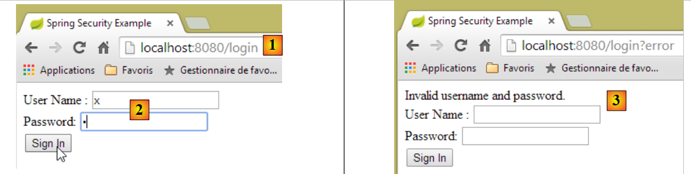 |
Der Quellcode der erhaltenen Seite lautet wie folgt:
- In Zeile 7 erscheint ein verstecktes Feld, das auf der ursprünglichen Seite „[login.html]“ nicht vorhanden ist. Es wurde von Thymeleaf hinzugefügt. Dieser Code mit der Bezeichnung „CSRF“ (Cross-Site-Request-Forgery) dient dazu, eine Sicherheitslücke zu schließen. Dieses Token muss zusammen mit der Authentifizierung an Spring Security zurückgesendet werden, damit diese akzeptiert wird;
Wir erinnern uns, dass von Spring Security nur der Benutzer „user/password“ erkannt wird. Wenn wir in [2] etwas anderes eingeben, erhalten wir dieselbe Seite mit einer Fehlermeldung in [3]. Spring Security hat den Browser auf die Seite URL [http://localhost:8080/login?error] umgeleitet. Das Vorhandensein des Parameters [error] hat die Anzeige des Tags ausgelöst:
<div th:if="${param.error}">Invalid username and password.</div>
Geben wir nun die erwarteten Werte für „user“ und „password“ ein: [4]:
 |
- in [4] melden wir uns an;
- bei [5] leitet uns Spring Security zu URL und [/hello] weiter, da dies die URL ist, die wir angefordert hatten, als wir zur Anmeldeseite weitergeleitet wurden. Die Identität des Benutzers wurde in der folgenden Zeile von [hello.html] angezeigt:
Die Seite [5] zeigt das folgende Formular an:
<form th:action="@{/logout}" method="post">
<input type="submit" value="Sign Out" />
</form>
Wenn man auf die Schaltfläche [Sign Out] klickt, wird ein POST auf der Seite URL [/logout] erstellt. Diese ist ebenso wie die Dateien „URL“ und „[/login]“ für alle zugänglich:
http.formLogin().loginPage("/login").permitAll().and().logout().permitAll();
In unserer Zuordnung URL / Ansichten haben wir für die URL und [/logout] nichts definiert. Was wird passieren? Probieren wir es aus:
 |
- in [6] klicken wir auf die Schaltfläche [Sign Out];
- in [7] sehen wir, dass wir zu URL [http://localhost:8080/login?logout] weitergeleitet wurden. Diese Weiterleitung wurde von Spring Security angefordert. Das Vorhandensein des Parameters [logout] in URL hat dazu geführt, dass die folgende Zeile in der Ansicht angezeigt wurde:
<div th:if="${param.logout}">You have been logged out.</div>
8.4.12.7. Conclusion
Im vorangegangenen Beispiel hätten wir die Webanwendung zunächst schreiben und anschließend sichern können. Spring Security ist nicht aufdringlich. Man kann die Sicherheit einer bereits geschriebenen Webanwendung nachträglich einrichten. Außerdem haben wir Folgendes festgestellt:
- Es ist möglich, eine Authentifizierungsseite zu definieren;
- die Authentifizierung muss mit dem von Spring Security ausgegebenen Token CSRF erfolgen;
- Wenn die Authentifizierung fehlschlägt, wird man zur Authentifizierungsseite weitergeleitet, wobei zusätzlich ein „error“-Parameter im Token „URL“ enthalten ist;
- Wenn die Authentifizierung erfolgreich ist, wird man nach der Authentifizierung auf die angeforderte Seite weitergeleitet. Wenn die Authentifizierungsseite direkt aufgerufen wird, ohne eine Zwischenseite zu durchlaufen, leitet Spring Security uns zu den URL und [/] weiter (dieser Fall wurde nicht vorgestellt);
- die Abmeldung erfolgt durch Aufruf der Seite URL [/logout] mit einem POST. Spring Security leitet uns dann mit dem Parameter „logout“ im URL auf die Authentifizierungsseite weiter;
All diese Schlussfolgerungen basieren auf dem Standardverhalten von Spring Security. Dieses Verhalten lässt sich durch Konfiguration ändern, indem bestimmte Methoden der Klasse [WebSecurityConfigurerAdapter] neu definiert werden.
Das vorherige Tutorial wird uns im weiteren Verlauf kaum helfen. Wir werden nämlich Folgendes verwenden:
- eine Datenbank zum Speichern der Benutzer, ihrer Passwörter und ihrer Rollen;
- eine Authentifizierung über den Header HTTP;
Es gibt relativ wenige Tutorials für das, was wir hier umsetzen wollen. Die vorgeschlagene Lösung ist eine Zusammenstellung von Code, der hier und da gefunden wurde.
8.4.13. Einrichtung der Sicherheit für den Termin-Webdienst
8.4.13.1. Die Datenbank
Die Datenbank [rdvmedecins] wird erweitert, um Benutzer, deren Passwörter und deren Rollen zu erfassen. Es kommen drei neue Tabellen hinzu:

Tabelle [USERS]: die Benutzer
- ID: Primärschlüssel;
- VERSION: Spalte für die Versionsverwaltung der Zeile;
- IDENTITY: eine beschreibende Kennung des Benutzers;
- LOGIN: der Benutzername des Benutzers;
- PASSWORD: sein Passwort;
In der Tabelle USERS werden Passwörter nicht im Klartext gespeichert:
 |
Der Algorithmus, der die Passwörter verschlüsselt, ist der Algorithmus BCRYPT.
Tabelle [ROLES]: die Rollen
- ID: Primärschlüssel;
- VERSION: Versionsspalte der Zeile;
- NAME: Name der Rolle. Standardmäßig erwartet Spring Security Namen in der Form ROLE_XX, zum Beispiel ROLE_ADMIN oder ROLE_GUEST;
 |
Tabelle [USERS_ROLES]: Verknüpfungstabelle USERS / ROLES
Ein Benutzer kann mehrere Rollen haben, eine Rolle kann mehrere Benutzer umfassen. Es besteht eine Mehr-zu-Mehr-Beziehung, die durch die Tabelle [USERS_ROLES] dargestellt wird.
- ID: Primärschlüssel;
- VERSION: Versionsspalte der Zeile;
- USER_ID: ID eines Benutzers;
- ROLE_ID: ID einer Rolle;
 |
Da wir die Datenbank ändern, müssen alle Ebenen des Projekts [métier, DAO, JPA] angepasst werden:
 |
8.4.13.2. Das neue Projekt STS aus dem Projekt [métier, DAO, JPA]
Das Projekt [rdvmedecins-metier-dao] entwickelt sich wie folgt:
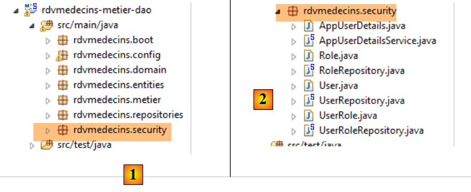 |
- in [1]: das neue Projekt;
- in [2]: Die durch die Berücksichtigung von Sicherheitsaspekten vorgenommenen Änderungen wurden in einem einzigen Paket [rdvmedecins.security] zusammengefasst. Diese neuen Elemente gehören zu den Ebenen [JPA] und [DAO], wurden jedoch der Einfachheit halber in einem einzigen Paket zusammengefasst.
8.4.13.3. Die neuen Elemente [JPA]
 |
Die Ebene JPA definiert drei neue Entitäten:
 |
Die Klasse [User] ist das Abbild der Tabelle [USERS]:
package rdvmedecins.entities;
import javax.persistence.Column;
import javax.persistence.Entity;
import javax.persistence.Table;
@Entity
@Table(name = "USERS")
public class User extends AbstractEntity {
private static final long serialVersionUID = 1L;
// Eigenschaften
private String identity;
private String login;
private String password;
// Hersteller
public User() {
}
public User(String identity, String login, String password) {
this.identity = identity;
this.login = login;
this.password = password;
}
// Identität
@Override
public String toString() {
return String.format("User[%s,%s,%s]", identity, login, password);
}
// Getter und Setter
....
}
- Zeile 9: Die Klasse erweitert die Klasse [AbstractEntity], die bereits für die anderen Entitäten verwendet wird;
- Zeilen 13–15: Es werden keine Spaltennamen angegeben, da diese denselben Namen wie die ihnen zugeordneten Felder tragen;
Die Klasse [Role] entspricht der Tabelle [ROLES]:
package rdvmedecins.entities;
import javax.persistence.Column;
import javax.persistence.Entity;
import javax.persistence.Table;
@Entity
@Table(name = "ROLES")
public class Role extends AbstractEntity {
private static final long serialVersionUID = 1L;
// Eigenschaften
private String name;
// Konstruktoren
public Role() {
}
public Role(String name) {
this.name = name;
}
// Identität
@Override
public String toString() {
return String.format("Role[%s]", name);
}
// Getter und Setter
...
}
Die Klasse [UserRole] ist das Abbild der Tabelle [USERS_ROLES]:
package rdvmedecins.entities;
import javax.persistence.Entity;
import javax.persistence.JoinColumn;
import javax.persistence.ManyToOne;
import javax.persistence.Table;
@Entity
@Table(name = "USERS_ROLES")
public class UserRole extends AbstractEntity {
private static final long serialVersionUID = 1L;
// Ein UserRole verweist auf einen User
@ManyToOne
@JoinColumn(name = "USER_ID")
private User user;
// Ein UserRole verweist auf eine Rolle
@ManyToOne
@JoinColumn(name = "ROLE_ID")
private Role role;
// Getter und Setter
...
}
- Zeilen 15–17: definieren den Fremdschlüssel von der Tabelle [USERS_ROLES] zur Tabelle [USERS];
- Zeilen 19–21: definieren den Fremdschlüssel von der Tabelle [USERS_ROLES] zur Tabelle [ROLES];
8.4.13.4. Änderungen an der Ebene [DAO]
 |
Die Ebene [DAO] wird um drei neue [Repository] erweitert:
 |
Die Schnittstelle [UserRepository] verwaltet den Zugriff auf die Entitäten [User]:
package rdvmedecins.repositories;
import org.springframework.data.jpa.repository.Query;
import org.springframework.data.repository.CrudRepository;
import rdvmedecins.entities.Role;
import rdvmedecins.entities.User;
public interface UserRepository extends CrudRepository<User, Long> {
// Liste der Rollen eines Benutzers, der durch seine ID identifiziert wird
@Query("select ur.role from UserRole ur where ur.user.id=?1")
Iterable<Role> getRoles(long id);
// Liste der Rollen eines Benutzers, der durch seinen Benutzernamen und sein Passwort identifiziert wird
@Query("select ur.role from UserRole ur where ur.user.login=?1 and ur.user.password=?2")
Iterable<Role> getRoles(String login, String password);
// Suche nach einem Benutzer anhand seines Logins
User findUserByLogin(String login);
}
- Zeile 9: Die Schnittstelle [UserRepository] erweitert die Schnittstelle [CrudRepository] von Spring Data (Zeile 4);
- Zeilen 12–13: Die Methode [getRoles(User user)] ermöglicht es, alle Rollen eines Benutzers abzurufen, der durch seine [id] identifiziert wird
- Zeilen 16–17: dasselbe, jedoch für einen Benutzer, der über seinen Benutzernamen und sein Passwort identifiziert wird;
- Zeile 20: zum Auffinden eines Benutzers anhand seines Logins;
Die Schnittstelle [RoleRepository] verwaltet den Zugriff auf die Entitäten [Role]:
package rdvmedecins.security;
import org.springframework.data.repository.CrudRepository;
public interface RoleRepository extends CrudRepository<Role, Long> {
// Suche nach einer Rolle anhand ihres Namens
Role findRoleByName(String name);
}
- Zeile 5: Die Schnittstelle [RoleRepository] erweitert die Schnittstelle [CrudRepository];
- Zeile 8: Eine Rolle kann anhand ihres Namens gesucht werden;
Die Schnittstelle [userRoleRepository] verwaltet den Zugriff auf die Entitäten [UserRole]:
package rdvmedecins.security;
import org.springframework.data.repository.CrudRepository;
public interface UserRoleRepository extends CrudRepository<UserRole, Long> {
}
- Zeile 5: Die Schnittstelle [UserRoleRepository] erweitert lediglich die Schnittstelle [CrudRepository], ohne ihr neue Methoden hinzuzufügen;
8.4.13.5. Die Klassen zur Verwaltung von Benutzern und Rollen
 |
Spring Security schreibt die Erstellung einer Klasse vor, die die folgende Schnittstelle [UsersDetail] implementiert:
 |
Diese Schnittstelle wird hier durch die Klasse [AppUserDetails] implementiert:
package rdvmedecins.security;
import java.util.ArrayList;
import java.util.Collection;
import org.springframework.security.core.GrantedAuthority;
import org.springframework.security.core.authority.SimpleGrantedAuthority;
import org.springframework.security.core.userdetails.UserDetails;
public class AppUserDetails implements UserDetails {
private static final long serialVersionUID = 1L;
// Eigenschaften
private User user;
private UserRepository userRepository;
// Konstruktoren
public AppUserDetails() {
}
public AppUserDetails(User user, UserRepository userRepository) {
this.user = user;
this.userRepository = userRepository;
}
// -------------------------Schnittstelle
@Override
public Collection<? extends GrantedAuthority> getAuthorities() {
Collection<GrantedAuthority> authorities = new ArrayList<>();
for (Role role : userRepository.getRoles(user.getId())) {
authorities.add(new SimpleGrantedAuthority(role.getName()));
}
return authorities;
}
@Override
public String getPassword() {
return user.getPassword();
}
@Override
public String getUsername() {
return user.getLogin();
}
@Override
public boolean isAccountNonExpired() {
return true;
}
@Override
public boolean isAccountNonLocked() {
return true;
}
@Override
public boolean isCredentialsNonExpired() {
return true;
}
@Override
public boolean isEnabled() {
return true;
}
// Getter und Setter
...
}
- Zeile 10: Die Klasse [AppUserDetails] implementiert die Schnittstelle [UserDetails];
- Zeilen 15–16: Die Klasse kapselt einen Benutzer (Zeile 15) und das Repository, über das die Details dieses Benutzers abgerufen werden können (Zeile 16);
- Zeilen 22–25: Der Konstruktor, der die Klasse mit einem Benutzer und dessen Repository instanziiert;
- Zeilen 28–35: Implementierung der Methode [getAuthorities] der Schnittstelle [UserDetails]. Sie muss eine Sammlung von Elementen vom Typ [GrantedAuthority] oder einem abgeleiteten Typ erstellen. Hier verwenden wir den abgeleiteten Typ [SimpleGrantedAuthority] (Zeile 32), der den Namen einer der Rollen des Benutzers aus Zeile 15 kapselt;
- Zeilen 31–33: Die Liste der Benutzerrollen aus Zeile 15 wird durchlaufen, um eine Liste von Elementen vom Typ [SimpleGrantedAuthority] zu erstellen;
- Zeilen 38–40: Implementieren die Methode [getPassword] der Schnittstelle [UserDetails]. Das Passwort des Benutzers aus Zeile 15 wird zurückgegeben;
- Zeilen 38–40: Implementieren die Methode [getUserName] der Schnittstelle [UserDetails]. Der Benutzername aus Zeile 15 wird zurückgegeben;
- Zeilen 47–50: Das Benutzerkonto läuft nie ab;
- Zeilen 52–55: Das Benutzerkonto wird niemals gesperrt;
- Zeilen 57–60: Die Anmeldedaten des Benutzers verfallen nie;
- Zeilen 62–65: Das Benutzerkonto ist immer aktiv;
Spring Security schreibt außerdem vor, dass eine Klasse vorhanden sein muss, die die Schnittstelle [AppUserDetailsService] implementiert:
 |
Diese Schnittstelle wird von der folgenden Klasse [AppUserDetailsService] implementiert:
package rdvmedecins.security;
import org.springframework.beans.factory.annotation.Autowired;
import org.springframework.security.core.userdetails.UserDetails;
import org.springframework.security.core.userdetails.UserDetailsService;
import org.springframework.security.core.userdetails.UsernameNotFoundException;
import org.springframework.stereotype.Service;
@Service
public class AppUserDetailsService implements UserDetailsService {
@Autowired
private UserRepository userRepository;
@Override
public UserDetails loadUserByUsername(String login) throws UsernameNotFoundException {
// Suche nach einem Benutzer anhand seines Logins
User user = userRepository.findUserByLogin(login);
// Gefunden?
if (user == null) {
throw new UsernameNotFoundException(String.format("login [%s] inexistant", login));
}
// Die Benutzerdaten werden zurückgegeben
return new AppUserDetails(user, userRepository);
}
}
- Zeile 9: Die Klasse ist eine Spring-Komponente und steht daher in ihrem Kontext zur Verfügung;
- Zeilen 12–13: Die Komponente [UserRepository] wird hier injiziert;
- Zeilen 16–25: Implementierung der Methode [loadUserByUsername] der Schnittstelle [UserDetailsService] (Zeile 10). Der Parameter ist der Benutzername des Nutzers;
- Zeile 18: Der Benutzer wird anhand seines Logins gesucht;
- Zeilen 20–22: Wird er nicht gefunden, wird eine Ausnahme ausgelöst;
- Zeile 24: Ein Objekt vom Typ [AppUserDetails] wird erstellt und zurückgegeben. Es ist tatsächlich vom Typ [UserDetails] (Zeile 16);
8.4.13.6. Tests der Schicht [DAO]
 |
Zunächst erstellen wir eine ausführbare Klasse [CreateUser], die in der Lage ist, einen Benutzer mit einer Rolle anzulegen:
package rdvmedecins.security;
import org.springframework.context.annotation.AnnotationConfigApplicationContext;
import org.springframework.security.crypto.bcrypt.BCrypt;
import rdvmedecins.config.DomainAndPersistenceConfig;
import rdvmedecins.security.Role;
import rdvmedecins.security.RoleRepository;
import rdvmedecins.security.User;
import rdvmedecins.security.UserRepository;
import rdvmedecins.security.UserRole;
import rdvmedecins.security.UserRoleRepository;
public class CreateUser {
public static void main(String[] args) {
// Syntax: Benutzername Passwort roleName
// Es sind drei Parameter erforderlich
if (args.length != 3) {
System.out.println("Syntaxe : [pg] user password role");
System.exit(0);
}
// Die Parameter werden abgerufen
String login = args[0];
String password = args[1];
String roleName = String.format("ROLE_%s", args[2].toUpperCase());
// Spring-Kontext
AnnotationConfigApplicationContext context = new AnnotationConfigApplicationContext(DomainAndPersistenceConfig.class);
UserRepository userRepository = context.getBean(UserRepository.class);
RoleRepository roleRepository = context.getBean(RoleRepository.class);
UserRoleRepository userRoleRepository = context.getBean(UserRoleRepository.class);
// Existiert die Rolle bereits?
Role role = roleRepository.findRoleByName(roleName);
// Wenn nicht, wird sie angelegt
if (role == null) {
role = roleRepository.save(new Role(roleName));
}
// Existiert der Benutzer bereits?
User user = userRepository.findUserByLogin(login);
// Falls nicht, wird er angelegt
if (user == null) {
// Das Passwort wird mit bcrypt gehasht
String crypt = BCrypt.hashpw(password, BCrypt.gensalt());
// Der Benutzer wird gespeichert
user = userRepository.save(new User(login, login, crypt));
// Die Verknüpfung mit der Rolle wird hergestellt
userRoleRepository.save(new UserRole(user, role));
} else {
// Der Benutzer existiert bereits – hat er die angeforderte Rolle?
boolean trouvé = false;
for (Role r : userRepository.getRoles(user.getId())) {
if (r.getName().equals(roleName)) {
trouvé = true;
break;
}
}
// Wenn nicht gefunden, wird die Verknüpfung mit der Rolle erstellt
if (!trouvé) {
userRoleRepository.save(new UserRole(user, role));
}
}
// Spring-Kontext schließen
context.close();
}
}
- Zeile 17: Die Klasse erwartet drei Argumente, die einen Benutzer definieren: seinen Benutzernamen, sein Passwort und seine Rolle;
- Zeilen 25–27: Die drei Parameter werden abgerufen;
- Zeile 29: Der Spring-Kontext wird anhand der Konfigurationsklasse [DomainAndPersistenceConfig] erstellt. Diese Klasse war bereits im ursprünglichen Projekt vorhanden. Sie muss wie folgt angepasst werden:
@EnableJpaRepositories(basePackages = { "rdvmedecins.repositories", "rdvmedecins.security" })
@EnableAutoConfiguration
@ComponentScan(basePackages = { "rdvmedecins" })
@EntityScan(basePackages = { "rdvmedecins.entities", "rdvmedecins.security" })
@EnableTransactionManagement
public class DomainAndPersistenceConfig {
....
}
- Zeile 1: Es muss angegeben werden, dass sich nun Komponenten vom Typ [Repository] im Paket [rdvmedecins.security] befinden;
- Zeile 4: Es muss angegeben werden, dass das Paket [rdvmedecins.security] nun die Entitäten JPA enthält;
Kehren wir zum Code zur Erstellung eines Benutzers zurück:
- Zeilen 30–32: Wir rufen die Referenzen der drei [Repository] ab, die uns beim Anlegen des Benutzers nützlich sein können;
- Zeile 34: Es wird geprüft, ob die Rolle bereits existiert;
- Zeilen 36–38: Ist dies nicht der Fall, wird sie in der Datenbank angelegt. Sie erhält einen Namen vom Typ [ROLE_XX];
- Zeile 40: Es wird geprüft, ob der Benutzername bereits existiert;
- Zeilen 42–49: Falls der Benutzername noch nicht existiert, wird er in der Datenbank angelegt;
- Zeile 44: Das Passwort wird verschlüsselt. Hier wird die Klasse [BCrypt] von Spring Security (Zeile 4) verwendet. Daher werden die Archive dieses Frameworks benötigt. Die Datei [pom.xml] enthält eine neue Abhängigkeit:
<dependency>
<groupId>org.springframework.boot</groupId>
<artifactId>spring-boot-starter-security</artifactId>
</dependency>
- Zeile 46: Der Benutzer wird in der Datenbank gespeichert;
- Zeile 48: ebenso wie die Beziehung, die ihn mit seiner Rolle verbindet;
- Zeilen 51–57: Fall, in dem der Benutzer bereits existiert – es wird geprüft, ob die Rolle, die ihm zugewiesen werden soll, bereits zu seinen Rollen gehört;
- Zeile 59–61: Wenn die gesuchte Rolle nicht gefunden wurde, wird ein Eintrag in der Tabelle [USERS_ROLES] angelegt, um den Benutzer mit seiner Rolle zu verknüpfen;
- Es wurde keine Absicherung gegen mögliche Ausnahmen vorgenommen. Es handelt sich um eine Hilfsklasse zum schnellen Anlegen eines Benutzers mit einer Rolle.
Wenn man die Klasse mit den Argumenten [x x guest] ausführt, erhält man in der Datenbank die folgenden Ergebnisse:
Tabelle [USERS]
 Tabelle |
Tabelle [ROLES]
 |
Tabelle [USERS_ROLES]
 |
Betrachten wir nun die zweite Klasse [UsersTest], bei der es sich um einen Test von JUnit handelt:
|
package rdvmedecins.security;
import java.util.List;
import org.junit.Assert;
import org.junit.Test;
import org.junit.runner.RunWith;
import org.springframework.beans.factory.annotation.Autowired;
import org.springframework.boot.test.SpringApplicationConfiguration;
import org.springframework.security.core.authority.SimpleGrantedAuthority;
import org.springframework.security.crypto.bcrypt.BCrypt;
import org.springframework.test.context.junit4.SpringJUnit4ClassRunner;
import rdvmedecins.config.DomainAndPersistenceConfig;
import com.google.common.collect.Lists;
@SpringApplicationConfiguration(classes = DomainAndPersistenceConfig.class)
@RunWith(SpringJUnit4ClassRunner.class)
public class UsersTest {
@Autowired
private UserRepository userRepository;
@Autowired
private AppUserDetailsService appUserDetailsService;
@Test
public void findAllUsersWithTheirRoles() {
Iterable<User> users = userRepository.findAll();
for (User user : users) {
System.out.println(user);
display("Roles :", userRepository.getRoles(user.getId()));
}
}
@Test
public void findUserByLogin() {
// Der Benutzer [admin] wird abgerufen
User user = userRepository.findUserByLogin("admin");
// Es wird überprüft, ob sein Passwort [admin] lautet
Assert.assertTrue(BCrypt.checkpw("admin", user.getPassword()));
// Die Rolle „admin / admin“ wird überprüft
List<Role> roles = Lists.newArrayList(userRepository.getRoles("admin", user.getPassword()));
Assert.assertEquals(1L, roles.size());
Assert.assertEquals("ROLE_ADMIN", roles.get(0).getName());
}
@Test
public void loadUserByUsername() {
// Der Benutzer [admin] wird abgerufen
AppUserDetails userDetails = (AppUserDetails) appUserDetailsService.loadUserByUsername("admin");
// Es wird überprüft, ob das Passwort „[admin]“ lautet
Assert.assertTrue(BCrypt.checkpw("admin", userDetails.getPassword()));
// Die Rolle „admin / admin“ wird überprüft
@SuppressWarnings("unchecked")
List<SimpleGrantedAuthority> authorities = (List<SimpleGrantedAuthority>) userDetails.getAuthorities();
Assert.assertEquals(1L, authorities.size());
Assert.assertEquals("ROLE_ADMIN", authorities.get(0).getAuthority());
}
// Hilfsmethode – zeigt die Elemente einer Sammlung an
private void display(String message, Iterable<?> elements) {
System.out.println(message);
for (Object element : elements) {
System.out.println(element);
}
}
}
- Zeilen 27–34: Sichtprüfung. Es werden alle Benutzer mit ihren Rollen angezeigt;
- Zeilen 36–46: Es wird überprüft, ob der Benutzer [admin] das Passwort [admin] und die Rolle [ROLE_ADMIN] hat, wobei das Repository [UserRepository] verwendet wird;
- Zeile 41: [admin] ist das Passwort im Klartext. In der Datenbank ist es nach dem Algorithmus BCrypt verschlüsselt. Mit der Methode [BCrypt.checkpw] lässt sich überprüfen, ob das verschlüsselte Klartext-Passwort tatsächlich mit dem in der Datenbank gespeicherten übereinstimmt;
- Zeilen 48–59: Es wird überprüft, ob der Benutzer [admin] das Passwort [admin] und die Rolle [ROLE_ADMIN] besitzt, wobei der Dienst [appUserDetailsService] verwendet wird;
Die Tests werden erfolgreich mit folgenden Protokollen ausgeführt:
8.4.13.7. Zwischenfazit
Das Hinzufügen der für Spring Security erforderlichen Klassen konnte mit nur wenigen Änderungen am ursprünglichen Projekt erfolgen. Zur Erinnerung:
- Hinzufügen einer Abhängigkeit zu Spring Security in der Datei [pom.xml];
- Erstellung von drei zusätzlichen Tabellen in der Datenbank;
- Erstellung der Entitäten JPA und der Spring-Komponenten im Paket [rdvmedecins.security];
Dieser sehr günstige Fall ergibt sich daraus, dass die drei in der Datenbank hinzugefügten Tabellen unabhängig von den bestehenden Tabellen sind. Man hätte sie sogar in einer separaten Datenbank unterbringen können. Dies war möglich, weil entschieden wurde, dass ein Benutzer unabhängig von Ärzten und Kunden existiert. Wären diese potenzielle Benutzer gewesen, hätte man Verknüpfungen zwischen der Tabelle [USERS] und den Tabellen [MEDECINS] sowie [CLIENTS] herstellen müssen. Dies hätte dann erhebliche Auswirkungen auf das bestehende Projekt gehabt.
8.4.13.8. Das Projekt STS der Ebene [web]
 |
Das Projekt [rdvmedecins-webjson] entwickelt sich wie folgt aus [1]:
 |
Die wichtigsten Änderungen sind im Paket [rdvmedecins.web.config] vorzunehmen, wo Spring Security konfiguriert werden muss. Weitere, geringfügige Änderungen gibt es in den Klassen [AppConfig] und [ApplicationModel]. Wir sind bereits auf eine Spring-Security-Konfigurationsklasse gestoßen:
package hello;
import org.springframework.context.annotation.Configuration;
import org.springframework.security.config.annotation.authentication.builders.AuthenticationManagerBuilder;
import org.springframework.security.config.annotation.web.builders.HttpSecurity;
import org.springframework.security.config.annotation.web.configuration.WebSecurityConfigurerAdapter;
import org.springframework.security.config.annotation.web.servlet.configuration.EnableWebMvcSecurity;
@Configuration
@EnableWebMvcSecurity
public class WebSecurityConfig extends WebSecurityConfigurerAdapter {
@Override
protected void configure(HttpSecurity http) throws Exception {
http.authorizeRequests().antMatchers("/", "/home").permitAll().anyRequest().authenticated();
http.formLogin().loginPage("/login").permitAll().and().logout().permitAll();
}
@Override
protected void configure(AuthenticationManagerBuilder auth) throws Exception {
auth.inMemoryAuthentication().withUser("user").password("password").roles("USER");
}
}
Wir gehen nun genauso vor:
- Zeile 11: Definieren einer Klasse, die die Klasse [WebSecurityConfigurerAdapter] erweitert;
- Zeile 13: Definieren einer Methode [configure(HttpSecurity http)], die die Zugriffsrechte auf die verschiedenen URL des Webdienstes festlegt;
- Zeile 19: Definieren einer Methode [configure(AuthenticationManagerBuilder auth)], die die Benutzer und ihre Rollen festlegt;
Die Konfiguration von Spring Security erfolgt über die Klasse [SecurityConfig]:
package rdvmedecins.web.config;
import org.springframework.beans.factory.annotation.Autowired;
import org.springframework.context.annotation.Configuration;
import org.springframework.http.HttpMethod;
import org.springframework.security.config.annotation.authentication.builders.AuthenticationManagerBuilder;
import org.springframework.security.config.annotation.web.builders.HttpSecurity;
import org.springframework.security.config.annotation.web.configuration.EnableWebSecurity;
import org.springframework.security.config.annotation.web.configuration.WebSecurityConfigurerAdapter;
import org.springframework.security.config.http.SessionCreationPolicy;
import org.springframework.security.crypto.bcrypt.BCryptPasswordEncoder;
import rdvmedecins.security.AppUserDetailsService;
import rdvmedecins.web.models.ApplicationModel;
@Configuration
@EnableWebSecurity
public class SecurityConfig extends WebSecurityConfigurerAdapter {
@Autowired
private AppUserDetailsService appUserDetailsService;
@Autowired
private ApplicationModel application;
@Override
protected void configure(AuthenticationManagerBuilder registry) throws Exception {
// Die Authentifizierung erfolgt über die Bean [appUserDetailsService]
// Das Passwort wird mit dem Hash-Algorithmus BCrypt verschlüsselt
registry.userDetailsService(appUserDetailsService).passwordEncoder(new BCryptPasswordEncoder());
}
@Override
protected void configure(HttpSecurity http) throws Exception {
// CSRF
http.csrf().disable();
// Sichere Anwendung?
if (application.isSecured()) {
// Das Passwort wird über den Header „Authorization: Basic xxxx“ übermittelt
http.httpBasic();
// Die Methode HTTP OPTIONS muss für alle autorisiert sein
http.authorizeRequests() //
.antMatchers(HttpMethod.OPTIONS, "/", "/**").permitAll();
// Nur die Rolle ADMIN darf die Anwendung nutzen
http.authorizeRequests() //
.antMatchers("/", "/**") // alle URL
.hasRole("ADMIN");
// keine Sitzung
http.sessionManagement().sessionCreationPolicy(SessionCreationPolicy.STATELESS);
}
}
}
- Zeile 15: Die Klasse [SecurityConfig] ist eine Spring-Konfigurationsklasse;
- Zeile 16: zur Einrichtung der Projektsicherheit;
- Zeilen 19–20: Die Klasse [AppUserDetails], die den Benutzern Zugriff auf die Anwendung gewährt, wird injiziert;
- Zeilen 21–22: Die Klasse [ApplicationModel], die als Cache für die Webanwendung dient, wird injiziert. Wir entscheiden uns hier, sie ebenfalls zu verwenden, um die Webanwendung an einer einzigen Stelle zu konfigurieren. Sie definiert den Booleschen Wert [isSecured] in Zeile 36. Dieser Boolesche Wert sichert die Webanwendung (true) oder nicht (false);
- Zeilen 25–29: Die Methode [configure(HttpSecurity http)] definiert die Benutzer und ihre Rollen. Sie erhält als Parameter einen Typ [AuthenticationManagerBuilder]. Dieser Parameter wird um zwei Informationen ergänzt (Zeile 28):
- ein Verweis auf den Dienst [appUserDetailsService] in Zeile 20, der registrierten Benutzern Zugriff gewährt. Dabei ist zu beachten, dass nicht ersichtlich ist, ob sie in einer Datenbank gespeichert sind. Sie könnten also in einem Cache gespeichert sein, von einem Webdienst bereitgestellt werden, …
- die für das Passwort verwendete Verschlüsselungsart. Wir erinnern daran, dass wir den Algorithmus BCrypt verwendet haben;
- Zeilen 38–47: Die Methode [configure(HttpSecurity http)] definiert die Zugriffsrechte auf die URL des Webdienstes;
- Zeile 34: Wir haben im Einführungsprojekt gesehen, dass Spring Security standardmäßig ein CSRF-Token (Cross-Site-Request-Forgery) verwaltet, das der Benutzer, der sich authentifizieren möchte, an den Server zurücksenden muss. Hier ist dieser Mechanismus deaktiviert. In Verbindung mit dem booleschen Wert (isSecured=false) ermöglicht dies die Nutzung der Webanwendung ohne Sicherheitsmaßnahmen;
- Zeile 38: Der Authentifizierungsmodus über den Header HTTP wird aktiviert. Der Client muss den folgenden Header HTTP senden:
wobei „code“ die Base64-Kodierung der Zeichenfolge „login:password“ ist. Beispielsweise lautet die Base64-Kodierung der Zeichenfolge „admin:admin“ „YWRtaW46YWRtaW4=“. Ein Benutzer mit dem Login „[admin]“ und dem Passwort „[admin]“ sendet also zur Authentifizierung den folgenden Header „HTTP“:
- Zeilen 40–42: Geben an, dass alle URL des Webdienstes für Benutzer mit der Rolle [ROLE_ADMIN] zugänglich sind. Das bedeutet, dass ein Benutzer ohne diese Rolle keinen Zugriff auf den Webdienst hat;
- Zeile 47: Das Passwort des Benutzers kann in einer Sitzung gespeichert werden oder auch nicht. Wenn es gespeichert wird, muss sich der Benutzer nur beim ersten Mal authentifizieren. Bei den folgenden Zugriffen werden seine Anmeldedaten nicht mehr abgefragt. Hier wurde ein Modus ohne Sitzung gewählt. Jede Anfrage muss mit den Sicherheitsdaten versehen sein;
Die Klasse [AppConfig], die die gesamte Anwendung konfiguriert, entwickelt sich wie folgt:
 |
package rdvmedecins.web.config;
import org.springframework.context.annotation.ComponentScan;
import org.springframework.context.annotation.Configuration;
import org.springframework.context.annotation.Import;
import rdvmedecins.config.DomainAndPersistenceConfig;
@Configuration
@ComponentScan(basePackages = { "rdvmedecins.web" })
@Import({ DomainAndPersistenceConfig.class, SecurityConfig.class, WebConfig.class })
public class AppConfig {
}
- Die Änderung erfolgt in Zeile 11: Die Konfigurationsklasse [SecurityConfig] wird hinzugefügt;
Schließlich wird die Klasse [ApplicationModel] um einen booleschen Wert erweitert:
@Component
public class ApplicationModel implements IMetier {
...
// Konfigurationsdaten
private boolean secured = false;
public boolean isSecured() {
return secured;
}
- Zeile 6: Der boolesche Wert [secured] wird auf [true / false] gesetzt, je nachdem, ob die Sicherheitsfunktion aktiviert werden soll oder nicht.
8.4.13.9. Tests des Webdienstes
Wir werden den Webdienst mit dem Chrome-Client [Advanced Rest Client] testen. Dazu müssen wir den Authentifizierungsheader HTTP angeben:
wobei [code] der Base64-Code der Zeichenfolge [login:password] ist. Zur Generierung dieses Codes kann das folgende Programm verwendet werden:
 |
package rdvmedecins.helpers;
import org.springframework.security.crypto.codec.Base64;
public class Base64Encoder {
public static void main(String[] args) {
// Es werden zwei Argumente erwartet: Login, Passwort
if (args.length != 2) {
System.out.println("Syntaxe : login password");
System.exit(0);
}
// die beiden Argumente werden abgerufen
String chaîne = String.format("%s:%s", args[0], args[1]);
// Die Zeichenkette wird kodiert
byte[] data = Base64.encode(chaîne.getBytes());
// die Base64-Kodierung wird angezeigt
System.out.println(new String(data));
}
}
Wenn wir dieses Programm mit den beiden Argumenten [admin admin] ausführen:
 |
erhalten wir folgendes Ergebnis:
Da wir nun wissen, wie man den Authentifizierungs-Header HTTP generiert, starten wir nun den gesicherten Webdienst:
@Component
public class ApplicationModel implements IMetier {
...
private boolean secured = true;
Anschließend fordern wir mit dem Chrome-Client [Advanced Rest Client] die Liste aller Ärzte an:
 |
- In [1] fordern wir die URL der Ärzte an;
- in [2] mit der Methode GET;
- in [3] geben wir den Header HTTP für die Authentifizierung an. Der Code [YWRtaW46YWRtaW4=] ist die Base64-Kodierung der Zeichenfolge [admin:admin];
- Bei [4] senden wir den Befehl HTTP;
Die Antwort des Servers lautet wie folgt:
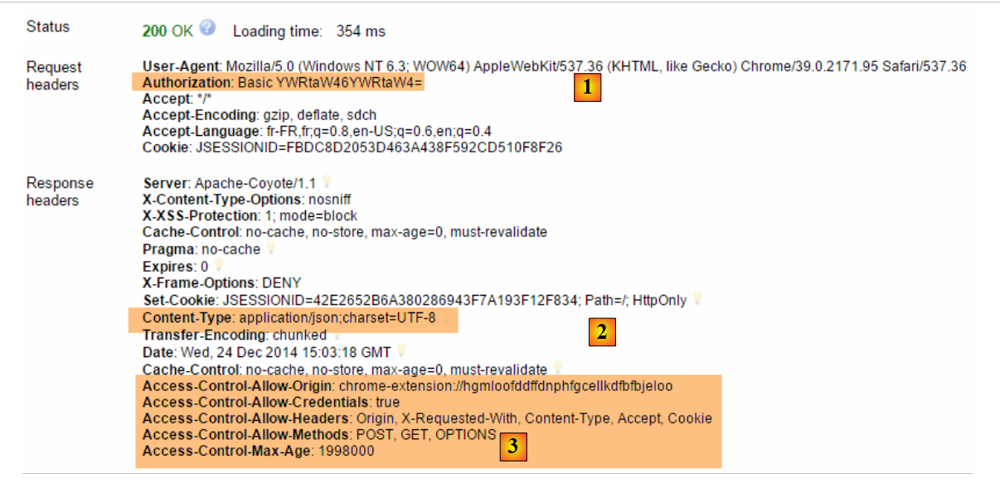 |
- in [1], der Authentifizierungsheader HTTP;
- in [2] sendet der Server eine Antwort mit dem Header jSON zurück;
- in [3] eine Liste von Headern HTTP, die sich auf die Sicherheit der Webanwendung beziehen;
Man erhält tatsächlich die Liste der Ärzte:
 |
Versuchen wir nun eine Anfrage HTTP mit einem falschen Authentifizierungsheader. Die Antwort lautet dann wie folgt:
 |
- in [1] und [3]: der Authentifizierungsheader HTTP;
- in [2]: die Antwort des Webdienstes;
Versuchen wir es nun mit dem Benutzer „user / user“. Dieser existiert zwar, hat aber keinen Zugriff auf den Webdienst. Wenn wir das Base64-Kodierungsprogramm mit den beiden Argumenten [user user] ausführen:
 |
erhalten wir folgendes Ergebnis:
 |
- in [1] und [3]: den Authentifizierungsheader HTTP;
- in [2]: die Antwort des Webdienstes. Sie unterscheidet sich von der vorherigen, die [401 Unauthorized] lautete. Diesmal hat sich der Benutzer zwar erfolgreich authentifiziert, verfügt jedoch nicht über ausreichende Rechte, um auf URL zuzugreifen;
Ein sicherer Webdienst ist nun betriebsbereit. Wir werden ihn so ergänzen, dass er domänenübergreifende Anfragen zulässt. Diese Anforderung tauchte im Dokument [Tutoriel AngularJS / Spring 4] auf, und obwohl sie hier nicht vorliegt, werden wir sie dennoch umsetzen.
8.4.14. Einrichtung domänenübergreifender Anfragen
Betrachten wir das Problem der domänenübergreifenden Anfragen. Im Dokument [Tutoriel AngularJS / Spring 4] wird eine Client-Server-Anwendung entwickelt, bei der der Client eine Anwendung namens AngularJS ist:
 |
- Die Seiten HTML / CSS / JS der Angular-Anwendung stammen vom Server [1];
- In [2] sendet der Dienst [dao] eine Anfrage an einen anderen Server, nämlich den Server [2]. Dies wird jedoch vom Browser, der die Angular-Anwendung ausführt, unterbunden, da es sich um eine Sicherheitslücke handelt. Die Anwendung darf nur den Server abfragen, von dem sie stammt, d. h. den Server [1];
Tatsächlich ist es nicht richtig zu sagen, dass der Browser der Angular-Anwendung verbietet, den Server [2] abzufragen. Sie fragt ihn vielmehr ab, um zu erfahren, ob er einem Client, der nicht von ihm selbst stammt, erlaubt, ihn abzufragen. Diese Technik wird als CORS (Cross-Origin Resource Sharing) bezeichnet. Der Server [2] erteilt seine Zustimmung, indem er bestimmte HTTP-Header sendet.
Um die Probleme aufzuzeigen, die dabei auftreten können, erstellen wir eine Client-Server-Anwendung, bei der:
- der Server unser Webserver / jSON ist;
- der Client eine einfache Seite HTML ist, die mit einem JavaScript-Code ausgestattet ist, der Anfragen an den Webserver / jSON sendet;
8.4.14.1. Das Client-Projekt
 |
Das Projekt ist ein Maven-Projekt mit der folgenden Datei: [pom.xml]:
<?xml version="1.0" encoding="UTF-8"?>
<project xmlns="http://maven.apache.org/POM/4.0.0" xmlns:xsi="http://www.w3.org/2001/XMLSchema-instance"
xsi:schemaLocation="http://maven.apache.org/POM/4.0.0 http://maven.apache.org/xsd/maven-4.0.0.xsd">
<modelVersion>4.0.0</modelVersion>
<groupId>istia.st</groupId>
<artifactId>rdvmedecins-webjson-client-cors</artifactId>
<version>0.0.1-SNAPSHOT</version>
<packaging>jar</packaging>
<name>rdvmedecins-webjson-client-cors</name>
<description>Client for webjson server</description>
<parent>
<groupId>org.springframework.boot</groupId>
<artifactId>spring-boot-starter-parent</artifactId>
<version>1.2.6.RELEASE</version>
<relativePath /> <!-- Übergeordnetes Element aus dem Repository abrufen -->
</parent>
<properties>
<project.build.sourceEncoding>UTF-8</project.build.sourceEncoding>
<start-class>istia.st.rdvmedecins.Client</start-class>
<java.version>1.8</java.version>
</properties>
<dependencies>
<!-- Spring MVC -->
<dependency>
<groupId>org.springframework.boot</groupId>
<artifactId>spring-boot-starter-web</artifactId>
</dependency>
</dependencies>
</project>
- Zeilen 14–19: Es handelt sich um ein Spring-Boot-Projekt;
- Zeilen 29–32: Es wird die Abhängigkeit [spring-boot-starter-web] verwendet, die einen Tomcat-Server und Spring MVC mit sich bringt;
Die Seite HTML sieht wie folgt aus:
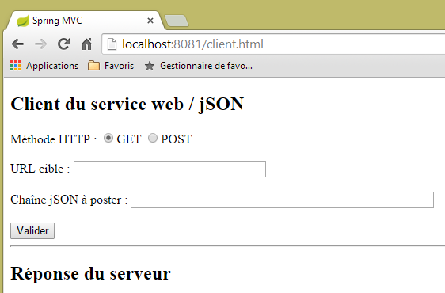 |
Sie wird durch den folgenden Code generiert:
<!DOCTYPE html>
<html>
<head>
<meta charset="UTF-8">
<title>Spring MVC</title>
<script type="text/javascript" src="/js/jquery-2.1.1.min.js"></script>
<script type="text/javascript" src="/js/client.js"></script>
</head>
<body>
<h2>Client du service web / jSON</h2>
<form id="formulaire">
<!-- Methode HTTP -->
Méthode HTTP :
<!-- -->
<input type="radio" id="get" name="method" value="get" checked="checked" />GET
<!-- -->
<input type="radio" id="post" name="method" value="post" />POST
<!-- URL -->
<br /> <br />URL cible : <input type="text" id="url" size="30"><br />
<!-- gebuchter Wert -->
<br /> Chaîne jSON à poster : <input type="text" id="posted" size="50" />
<!-- Bestätigungsschaltfläche -->
<br /> <br /> <input type="submit" value="Valider" onclick="javascript:requestServer(); return false;"></input>
</form>
<hr />
<h2>Réponse du serveur</h2>
<div id="response"></div>
</body>
</html>
- Zeile 6: Die Bibliothek jQuery wird importiert;
- Zeile 7: Es wird ein Code importiert, den wir noch schreiben werden;
Der Code [client.js] lautet wie folgt:
// Gesamtdaten
var url;
var posted;
var response;
var method;
function requestServer() {
// Die Informationen aus dem Formular werden abgerufen
var urlValue = url.val();
var postedValue = posted.val();
method = document.forms[0].elements['method'].value;
// Man führt manuell einen Ajax-Aufruf durch
if (method === "get") {
doGet(urlValue);
} else {
doPost(urlValue, postedValue);
}
}
function doGet(url) {
// Ajax-Aufruf manuell ausführen
$.ajax({
headers : {
'„Authorization“: „Basic YWRtaW46YWRtaW4=“
},
url : 'http://localhost:8080' + URL,
type : 'GET',
dataType : 'tex/plain',
beforeSend : function() {
},
success : function(data) {
// Ergebnis als Text
response.text(data);
},
complete : function() {
},
error : function(jqXHR) {
// Systemfehler
response.text(jqXHR.responseText);
}
})
}
function doPost(url, posted) {
// Ajax-Aufruf manuell
$.ajax({
headers : {
'„Authorization“: „Basic YWRtaW46YWRtaW4=“
},
url : 'http://localhost:8080' + URL,
type : 'POST',
contentType : 'application/json',
data : posted,
dataType : 'tex/plain',
beforeSend : function() {
},
success : function(data) {
// Ergebnis als Text
response.text(data);
},
complete : function() {
},
error : function(jqXHR) {
// Systemfehler
response.text(jqXHR.responseText);
}
})
}
// beim Laden des Dokuments
$(document).ready(function() {
// Die Referenzen der Seitenkomponenten werden abgerufen
url = $("#url");
posted = $("#posted");
response = $("#response");
});
Wir überlassen es dem Leser, diesen Code zu verstehen. Alles ist bereits irgendwann einmal vorgekommen. Einige Zeilen verdienen jedoch eine Erklärung:
- Zeile 11:
- [document] bezeichnet das vom Browser geladene Dokument, das sogenannte DOM (Document Object Model),
- [document.forms[0]] bezeichnet das erste Formular des Dokuments; ein Dokument kann mehrere Formulare enthalten. Hier gibt es nur eines,
- [document.forms[0].elements['method']] bezeichnet das Formularelement, das das Attribut [name='method'] hat. Es gibt zwei davon:
<input type="radio" id="get" name="method" value="get" checked="checked" />GET
<input type="radio" id="post" name="method" value="post" />POST
- Zeile 11:
- [document.forms[0].elements['method'].value] ist der Wert, der für die Komponente mit dem Attribut [name='method'] übermittelt wird. Es ist bekannt, dass der übermittelte Wert dem Wert des Attributs [value] des markierten Optionsfelds entspricht. In diesem Fall handelt es sich also um eine der Zeichenfolgen ['get', 'post'];
- Zeilen 23–25: Wir wenden uns an einen Server, der einen Header mit den Werten HTTP und [Authorization: Basic code] verlangt. Wir erstellen diesen Header für den Benutzer [admin / admin], der als Einziger den Server abfragen darf;
- Zeile 26: Der Benutzer gibt URL vom Typ [/getAllMedecins, /supprimerRv, ...] ein. Diese URL müssen daher vervollständigt werden;
- Zeile 28: Der Server sendet jSON zurück, bei dem es sich um Text handelt. Als Ergebnistyp wird [text/plain] angegeben, um die Antwort so anzuzeigen, wie sie empfangen wurde;
- Zeile 33: Anzeige der Textantwort des Servers;
- Zeile 39: Anzeige einer eventuellen Fehlermeldung im Textformat;
- Zeile 52: Angabe, dass der Client jSON sendet;
In der erstellten Client-/Server-Anwendung:
- ist der Client eine Webanwendung, die unter URL [http://localhost:8081] erreichbar ist. Dies ist die Anwendung, die wir gerade entwickeln;
- Der Server ist eine Webanwendung, die unter URL und [http://localhost:8080] erreichbar ist. Dies ist unser Webserver / jSON;
Da der Client nicht über denselben Port wie der Server erreichbar ist, tritt das Problem der domänenübergreifenden Anfragen auf. [http://localhost:8080] und [http://localhost:8081] sind zwei verschiedene Domänen.
Die Spring-Boot-Anwendung ist eine Konsolenanwendung, die von der folgenden ausführbaren Klasse [Client] gestartet wird:
package istia.st.rdvmedecins;
import org.springframework.boot.SpringApplication;
import org.springframework.boot.context.embedded.EmbeddedServletContainerFactory;
import org.springframework.boot.context.embedded.ServletRegistrationBean;
import org.springframework.boot.context.embedded.tomcat.TomcatEmbeddedServletContainerFactory;
import org.springframework.context.annotation.Bean;
import org.springframework.context.annotation.Configuration;
import org.springframework.web.servlet.DispatcherServlet;
import org.springframework.web.servlet.config.annotation.EnableWebMvc;
import org.springframework.web.servlet.config.annotation.ResourceHandlerRegistry;
import org.springframework.web.servlet.config.annotation.WebMvcConfigurerAdapter;
@Configuration
@EnableWebMvc
public class Client extends WebMvcConfigurerAdapter {
public static void main(String[] args) {
SpringApplication.run(Client.class, args);
}
// statische Seiten
@Override
public void addResourceHandlers(ResourceHandlerRegistry registry) {
registry.addResourceHandler("/**").addResourceLocations(new String[] { "classpath:/static/" });
}
// Konfiguration dispatcherServlet
@Bean
public DispatcherServlet dispatcherServlet() {
return new DispatcherServlet();
}
@Bean
public ServletRegistrationBean servletRegistrationBean(DispatcherServlet dispatcherServlet) {
return new ServletRegistrationBean(dispatcherServlet, "/*");
}
// integrierter Tomcat-Server
@Bean
public EmbeddedServletContainerFactory embeddedServletContainerFactory() {
return new TomcatEmbeddedServletContainerFactory("", 8081);
}
}
- Zeile 14: Die Klasse [Client] ist eine Spring-Konfigurationsklasse;
- Zeile 15: Hier wird eine Spring-Anwendung MVC konfiguriert. Diese Annotation führt zu einer Reihe automatischer Konfigurationen;
- Zeile 16: Um bestimmte Standardwerte des Spring-Frameworks MVC neu zu definieren, muss die Klasse [WebMvcConfigurerAdapter] erweitert werden;
- Zeilen 23–26: Mit der Methode [addResourceHandlers] lassen sich die Verzeichnisse angeben, in denen sich die statischen Ressourcen (HTML, CSS, JS usw.) der Anwendung befinden. Hier wird das Verzeichnis [static] angegeben, das sich im Classpath des Projekts befindet:
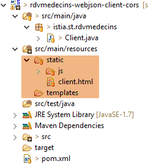 |
- Zeilen 29–37: Konfiguration des Beans [dispatcherServlet], der auf das Spring-Servlet MVC verweist;
- Zeilen 40–43: Der eingebettete Tomcat-Server läuft auf Port 8081;
8.4.14.2. URL [/getAllMedecins]
Wir starten:
- den Web-/JSON-Server auf Port 8080;
- den Client dieses Servers auf Port 8081;
anschließend rufen wir die URL, [http://localhost:8081/client.html] und [1] auf:
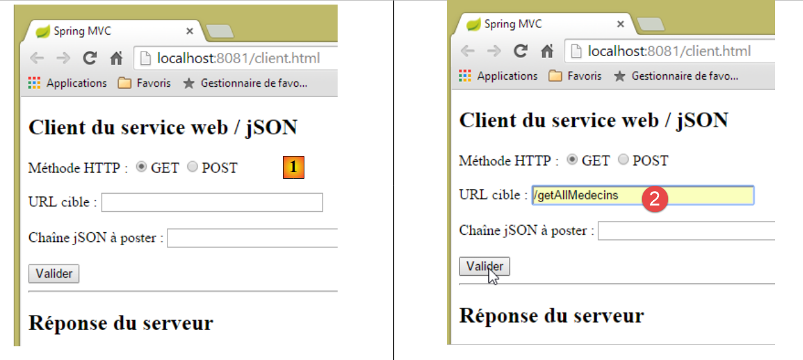 |
- in [2], führen wir ein GET auf dem URL [http://localhost:8080/getAllMedecins] durch;
Wir erhalten keine Antwort vom Server. Wenn wir uns die Entwicklerkonsole (Strg-Umschalt-I) ansehen, entdecken wir einen Fehler:
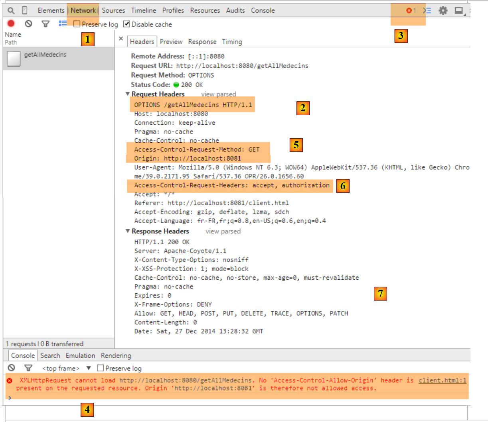 |
- in [1], wir befinden uns auf der Registerkarte [Network];
- in [2] sieht man, dass die gestellte Anfrage HTTP nicht [GET], sondern [OPTIONS] ist. Bei einer domänenübergreifenden Anfrage überprüft der Browser beim Server, ob bestimmte Bedingungen erfüllt sind, indem er ihm eine Anfrage mit den Parametern HTTP und [OPTIONS] sendet. In diesem Fall handelt es sich bei den Anfragen um diejenigen, auf die die Markierungen [5-6] verweisen;
- In [5] fragt der Browser ab, ob das Ziel URL mit einem GET erreicht werden kann. Der Header der Anfrage [Access-Control-Request-Method] fordert eine Antwort mit einem Header HTTP [Access-Control-Allow-Methods] an, der angibt, dass die angeforderte Methode akzeptiert wird;
- In [5] sendet der Browser den Header HTTP [Origin: http://localhost:8081]. Dieser Header fordert eine Antwort in Form eines Headers HTTP [Access-Control-Allow-Origin] an, der angibt, dass die angegebene Herkunft akzeptiert wird;
- Bei [6] fragt der Browser ab, ob die Header HTTP, [accept] und [authorization] akzeptiert werden. Der Header der Anfrage [Access-Control-Request-Headers] erwartet eine Antwort mit einem Header HTTP [Access-Control-Allow-Headers], der angibt, dass die angeforderten Header akzeptiert werden;
- bei [3] tritt ein Fehler auf. Beim Klicken auf das Symbol erscheint der Fehler [4];
- in [4] besagt die Meldung, dass der Server den Header HTTP [Access-Control-Allow-Origin] nicht gesendet hat, der angibt, ob die Herkunft der Anfrage akzeptiert wird;
- In [7] lässt sich feststellen, dass der Server diesen Header tatsächlich nicht gesendet hat. Daher hat der Browser die ursprünglich angeforderte Anfrage HTTP GET abgelehnt;
Wir müssen den Webserver / jSON anpassen. Wir nehmen eine erste Änderung in [ApplicationModel] vor, das eines der Konfigurationselemente des Webdienstes ist:
 |
@Component
public class ApplicationModel implements IMetier {
...
// Konfigurationsdaten
private boolean corsAllowed = true;
private boolean secured = true;
...
public boolean isCorsAllowed() {
return corsAllowed;
}
- Zeile 6: Wir legen einen booleschen Wert fest, der angibt, ob Clients außerhalb der Serverdomäne akzeptiert werden oder nicht;
- Zeilen 10–12: die Methode für den Zugriff auf diese Information;
Anschließend erstellen wir einen neuen Spring-Controller MVC:
 |
Die Klasse [RdvMedecinsCorsController] sieht wie folgt aus:
package rdvmedecins.web.controllers;
import javax.servlet.http.HttpServletResponse;
import org.springframework.beans.factory.annotation.Autowired;
import org.springframework.stereotype.Controller;
import org.springframework.web.bind.annotation.RequestMapping;
import org.springframework.web.bind.annotation.RequestMethod;
import rdvmedecins.web.models.ApplicationModel;
@Controller
public class RdvMedecinsCorsController {
@Autowired
private ApplicationModel application;
// Übermittlung der Optionen an den Client
public void sendOptions(String origin, HttpServletResponse response) {
// CORS erlaubt?
if (!application.isCorsAllowed() || origin==null || !origin.startsWith("http://localhost")) {
return;
}
// Der Header wird festgelegt CORS
response.addHeader("Access-Control-Allow-Origin", origin);
// Bestimmte Header werden zugelassen
response.addHeader("Access-Control-Allow-Headers", "accept, authorization");
// GET wird zugelassen
response.addHeader("Access-Control-Allow-Methods", "GET");
}
// Liste der Ärzte
@RequestMapping(value = "/getAllMedecins", method = RequestMethod.OPTIONS)
public void getAllMedecins(@RequestHeader(value = "Origin", required = false) String origin, HttpServletResponse response) {
sendOptions(origin, response);
}
}
- Zeilen 12–13: Die Klasse [RdvMedecinsCorsController] ist ein Spring-Controller;
- Zeilen 33–36: Definieren eine Aktion, die die URL und [/getAllMedecins] verarbeitet, wenn sie mit dem Befehl HTTP und [OPTIONS] aufgerufen wird;
- Zeile 34: Die Methode [getAllMedecins] akzeptiert als Parameter:
- das Objekt [@RequestHeader(value = "Origin", required = false)], das den Header HTTP [Origin] der Anfrage abruft. Dieser Header wurde vom Absender der Anfrage gesendet:
Es wird angegeben, dass der Header HTTP [Origin] optional ist [required = false]. In diesem Fall erhält der Parameter [String origin] den Wert null, wenn der Header fehlt. Da [required = true] der Standardwert ist, wird eine Ausnahme ausgelöst, wenn der Header fehlt. Dies wollte man vermeiden;
- Zeile 34:
- das Objekt [HttpServletResponse response], das an den anfragenden Client gesendet wird;
Diese beiden Parameter werden von Spring bereitgestellt;
- Zeile 35: Die Bearbeitung der Anfrage wird an die Methode in den Zeilen 19–30 delegiert;
- Zeilen 15–16: Das Objekt [ApplicationModel] wird injiziert;
- Zeilen 21–23: Wenn die Anwendung so konfiguriert ist, dass sie domänenübergreifende Anfragen akzeptiert, und wenn der Absender den Header HTTP [Origin] gesendet hat und diese Herkunft mit [http://localhost] beginnt, dann wird die domänenübergreifende Anfrage akzeptiert, andernfalls wird sie abgelehnt;
- Zeile 25: Befindet sich der Client in der Domäne [http://localhost:port], wird der Header HTTP gesendet:
was bedeutet, dass der Server die Herkunft des Clients akzeptiert;
- Zeile 25: Wir haben zwei spezielle Header HTTP in der Anfrage HTTP [OPTIONS] angegeben:
Auf die Header HTTP und [Access-Control-Request-X] antwortet der Server mit den Headern HTTP und [Access-Control-Allow-X], in denen er angibt, was zulässig ist. Die Zeilen 23–26 geben lediglich die Anfrage des Clients wieder, um anzuzeigen, dass sie akzeptiert wurde;
Wir sind nun bereit für weitere Tests. Wir starten die neue Version des Webdienstes und stellen fest, dass das Problem weiterhin besteht. Es hat sich nichts geändert. Wenn wir in Zeile 35 oben eine Konsolenausgabe einfügen, wird diese nie angezeigt, was zeigt, dass die Methode [getAllMedecins] aus Zeile 34 nie aufgerufen wird.
Nach einigen Recherchen stellen wir fest, dass Spring MVC die Befehle HTTP und [OPTIONS] selbst mit einer Standardverarbeitung bearbeitet. Daher antwortet immer Spring und niemals die Methode [getAllMedecins] in Zeile 34. Dieses Standardverhalten von Spring MVC lässt sich ändern. Wir ändern die vorhandene Klasse [WebConfig]:
 |
package rdvmedecins.web.config;
...
import org.springframework.web.servlet.DispatcherServlet;
@Configuration
public class WebConfig {
// Konfiguration des DispatcherServlets für die Header CORS
@Bean
public DispatcherServlet dispatcherServlet() {
DispatcherServlet servlet = new DispatcherServlet();
servlet.setDispatchOptionsRequest(true);
return servlet;
}
// Zuordnung jSON
...
- Zeilen 10–11: Die Bean [dispatcherServlet] dient dazu, das Servlet zu definieren, das die Client-Anfragen verarbeitet. Es handelt sich hierbei um den Typ [DispatcherServlet], das Servlet des Spring-Frameworks MVC;
- Zeile 12: Es wird eine Instanz vom Typ [DispatcherServlet] erstellt;
- Zeile 13: Es wird festgelegt, dass das Servlet die Befehle HTTP und [OPTIONS] an die Anwendung weiterleitet;
- Zeile 14: Das Servlet wird entsprechend konfiguriert;
Wir führen die Tests mit dieser neuen Konfiguration erneut durch. Dabei erhalten wir folgendes Ergebnis:
 |
- Bei [1] sehen wir, dass zwei Anfragen HTTP an URL und [http://localhost:8080/getAllMedecins] gerichtet sind;
- in [2] die Anfrage [OPTIONS];
- in [3] die drei Header HTTP, die wir soeben in der Serverantwort konfiguriert haben;
Betrachten wir nun die zweite Anfrage:
 |
- in [1], die untersuchte Anfrage;
- in [2], das ist die Anfrage GET. Dank der ersten Anfrage [OPTIONS] hat der Browser die angeforderten Informationen erhalten. Er führt nun die ursprünglich angeforderte Anfrage [GET] aus;
- in [3] die Antwort des Servers;
- in [4] sendet der Server jSON;
- in [5] ist ein Fehler aufgetreten;
- in [6] die Fehlermeldung;
Es ist schwieriger zu erklären, was hier passiert ist. Die Antwort [3] des Servers ist normal: [HTTP/1.1 200 OK]. Wir sollten also das angeforderte Dokument erhalten haben. Es ist möglich, dass der Server das Dokument zwar gesendet hat, der Browser jedoch dessen Verwendung verhindert, weil er verlangt, dass die Antwort auch für die Anfrage GET den Header HTTP [Access-Control-Allow-Origin:http://localhost:8081] enthält.
Wir ändern den Controller [RdvMedecinsController] wie folgt:
@Autowired
private RdvMedecinsCorsController rdvMedecinsCorsController;
...
// Liste der Ärzte
@RequestMapping(value = "/getAllMedecins", method = RequestMethod.GET, produces = "application/json; charset=UTF-8")
@ResponseBody
public String getAllMedecins(HttpServletResponse httpServletResponse,
@RequestHeader(value = "Origin", required = false) String origin) throws JsonProcessingException {
// die Antwort
Response<List<Medecin>> response;
// Header CORS
rdvMedecinsCorsController.sendOptions(origin, httpServletResponse);
// Anwendungsstatus
...
- Zeilen 1–2: Der Controller [RdvMedecinsCorsController] wird eingefügt;
- Zeilen 7–8: In die Parameter der Methode [getAllMedecins] wird das Objekt HttpServletResponse übergeben, das die Antwort an den Client sowie den Header HTTP [Origin] kapselt;
- Zeile 12: Es wird die Methode [sendOptions] des Controllers [RdvMedecinsCorsController] aufgerufen, dieselbe, die bereits zur Bearbeitung der Anfrage HTTP [OPTIONS] aufgerufen wurde. Sie sendet daher dieselben Header HTTP wie bei dieser Anfrage;
Nach dieser Änderung ergeben sich folgende Ergebnisse:
 |
Wir haben die Liste der Ärzte tatsächlich erhalten.
8.4.14.3. Die anderen URL [GET]
Wir zeigen nun die anderen URL an, die über ein GET abgefragt wurden. In den Controllern folgt der Code der Aktionen, die diese verarbeiten, dem Muster der Aktionen, die zuvor die URL und [/getAllMedecins] verarbeitet haben. Der Leser kann den Code in den mit diesem Dokument gelieferten Beispielen überprüfen. Hier ein Beispiel:
in [RdvMedecinsCorsController]
// Liste der Termine eines Arztes
@RequestMapping(value = "/getRvMedecinJour/{idMedecin}/{jour}", method = RequestMethod.OPTIONS)
public void getRvMedecinJour(@RequestHeader(value = "Origin", required = false) String origin, HttpServletResponse response) {
sendOptions(origin, response);
}
in [RdvMedecinsController]
// Liste der Termine eines Arztes
@RequestMapping(value = "/getRvMedecinJour/{idMedecin}/{jour}", method = RequestMethod.GET, produces = "application/json; charset=UTF-8")
@ResponseBody
public String getRvMedecinJour(@PathVariable("idMedecin") long idMedecin, @PathVariable("jour") String jour,
HttpServletResponse httpServletResponse, @RequestHeader(value = "Origin", required = false) String origin)
throws JsonProcessingException {
// die Antwort
Response<List<Rv>> response = null;
boolean erreur = false;
// Kopfzeilen CORS
rdvMedecinsCorsController.sendOptions(origin, httpServletResponse);
// Anwendungsstatus
...
Hier nun einige Screenshots der Ausführung:
 |
 |
 |
 |
 |
 |
 |
8.4.14.4. Die URL [POST]
Betrachten wir den folgenden Fall:
 |
- Es wird ein POST [1] an das URL [2] gesendet;
- in [3], dem gebuchten Wert. Es handelt sich um eine Zeichenfolge jSON;
- insgesamt soll der Termin mit dem Wert [id] 100 gelöscht werden;
Wir ändern vorerst keinen Code. Das Ergebnis sieht dann wie folgt aus:
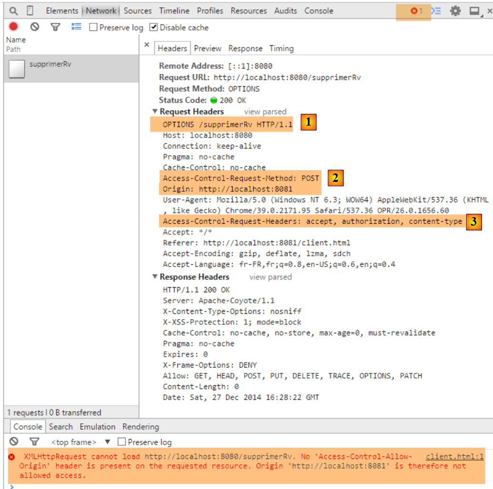 |
- in [1]; wie bei den Anfragen [GET] wird vom Browser eine Anfrage [OPTIONS] gestellt;
- bei [2] fordert er eine Zugriffsberechtigung für eine Anfrage [POST] an. Zuvor war es [GET];
- in [3] fordert er eine Berechtigung zum Senden der Header HTTP und [accept, authorization, content-type] an. Zuvor gab es nur die ersten beiden Header;
Wir ändern die Methode [RdvMedecinsCorsController.sendOptions] wie folgt:
public void sendOptions(String origin, HttpServletResponse response) {
// Cors erlaubt?
if (!application.isCorsAllowed() || origin==null || !origin.startsWith("http://localhost")) {
return;
}
// Der Header wird festgelegt CORS
response.addHeader("Access-Control-Allow-Origin", origin);
// Bestimmte Header werden zugelassen
response.addHeader("Access-Control-Allow-Headers", "accept, authorization, content-type");
// GET wird zugelassen
response.addHeader("Access-Control-Allow-Methods", "GET, POST");
}
- Zeile 9: Wir haben die Header HTTP und [Content-Type] hinzugefügt (die Groß-/Kleinschreibung spielt keine Rolle);
- Zeile 11: Die Methode HTTP [POST] wurde hinzugefügt;
Damit werden die Methoden [POST] genauso behandelt wie die Abfragen [GET]. Hier ist das Beispiel für URL und [/supprimerRv]:
in [RdvMedecinsController]
@RequestMapping(value = "/supprimerRv", method = RequestMethod.POST, produces = "application/json; charset=UTF-8", consumes = "application/json; charset=UTF-8")
@ResponseBody
public String supprimerRv(@RequestBody PostSupprimerRv post, HttpServletResponse httpServletResponse,
@RequestHeader(value = "Origin", required = false) String origin) throws JsonProcessingException {
// Die Antwort
Response<Void> response = null;
boolean erreur = false;
// Header CORS
rdvMedecinsCorsController.sendOptions(origin, httpServletResponse);
// Anwendungsstatus
if (messages != null) {
...
in [RdvMedecinsCorsController]
@RequestMapping(value = "/supprimerRv", method = RequestMethod.OPTIONS)
public void supprimerRv(@RequestHeader(value = "Origin", required = false) String origin, HttpServletResponse response) {
sendOptions(origin, response);
}
Das Ergebnis lautet wie folgt:
 |
Für URL und [/ajouterRv] ergibt sich folgendes Ergebnis:
 |
8.4.14.5. Conclusion
Unsere Anwendung unterstützt nun domänenübergreifende Anfragen. Diese können über die Konfiguration in der Klasse [ApplicationModel] zugelassen oder abgelehnt werden:
// Konfigurationsdaten
private boolean corsAllowed = false;
8.5. Programmierter Client des Webdienstes / jSON
Kehren wir zur allgemeinen Architektur der Anwendung zurück, die wir schreiben möchten:
 |
Der obere Teil des Schemas wurde bereits geschrieben. Dabei handelt es sich um den Webserver / jSON. Wir widmen uns nun dem unteren Teil und zunächst dessen Schicht [DAO]. Wir werden diese schreiben und anschließend mit einem Konsolen-Client testen. Die Testarchitektur sieht wie folgt aus:
 |
8.5.1. Das Projekt des Konsolen-Clients
Das Projekt STS des Konsolen-Clients sieht wie folgt aus:
 |
8.5.2. Maven-Konfiguration
Die Datei [pom.xml] des Konsolen-Clients lautet wie folgt:
<project xmlns="http://maven.apache.org/POM/4.0.0" xmlns:xsi="http://www.w3.org/2001/XMLSchema-instance"
xsi:schemaLocation="http://maven.apache.org/POM/4.0.0 http://maven.apache.org/xsd/maven-4.0.0.xsd">
<modelVersion>4.0.0</modelVersion>
<groupId>istia.st.rdvmedecins</groupId>
<artifactId>rdvmedecins-webjson-client-console</artifactId>
<version>0.0.1-SNAPSHOT</version>
<name>rdvmedecins-webjson-client-console</name>
<description>Client console du serveur web / jSON</description>
<properties>
<project.build.sourceEncoding>UTF-8</project.build.sourceEncoding>
<java.version>1.8</java.version>
</properties>
<parent>
<groupId>org.springframework.boot</groupId>
<artifactId>spring-boot-starter-parent</artifactId>
<version>1.2.6.RELEASE</version>
<relativePath /> <!-- Übergeordnete Lookup-Daten aus dem Repository -->
</parent>
<dependencies>
<!-- Spring -->
<dependency>
<groupId>org.springframework</groupId>
<artifactId>spring-web</artifactId>
</dependency>
<!-- von Spring verwendete Bibliothek jSON -->
<dependency>
<groupId>com.fasterxml.jackson.core</groupId>
<artifactId>jackson-core</artifactId>
</dependency>
<dependency>
<groupId>com.fasterxml.jackson.core</groupId>
<artifactId>jackson-databind</artifactId>
</dependency>
<!-- von Spring verwendete Komponente RestTemplate -->
<dependency>
<groupId>org.apache.httpcomponents</groupId>
<artifactId>httpclient</artifactId>
</dependency>
</dependencies>
</project>
- Zeilen 15–20: das übergeordnete Spring-Boot-Projekt;
- Zeilen 24–27: Der Konsolen-Client des Webservers / jSON basiert auf einer Komponente namens [RestTemplate], die von der Abhängigkeit [spring-web] bereitgestellt wird;
- Zeilen 29–36: Die Serialisierung/Deserialisierung der Objekte jSON erfordert eine Bibliothek namens jSON. Wir verwenden eine Variante der von Spring Web genutzten Jackson-Bibliothek;
- Zeilen 38–41: Auf der untersten Ebene kommuniziert die Komponente [RestTemplate] über die Sockets TCP/IP mit dem Server. Wir möchten den Wert [timeout] festlegen, d. h. die maximale Wartezeit auf eine Antwort des Servers. Die Komponente [RestTemplate] lässt eine solche Einstellung nicht zu. Um dies zu erreichen, übergeben wir dem Konstruktor [RestTemplate] eine Low-Level-Komponente, die von der Abhängigkeit [org.apache.httpcomponents.httpclient] bereitgestellt wird. Diese Abhängigkeit ermöglicht es uns, den Wert [timeout] für die Kommunikation festzulegen;
8.5.3. Das Paket [rdvmedecins.client.entities]
 |
Das Paket [rdvmedecins.client.entities] fasst alle Entitäten zusammen, die der Webdienst / jSON über seine verschiedenen URL sendet. Wir werden nicht noch einmal im Detail darauf eingehen. Wir beschränken uns darauf zu sagen, dass die Entitäten JPA und [Client, Creneau, Medecin, Rv, Personne] von all ihren Annotationen JPA sowie von ihren Annotationen jSON befreit wurden. Hier ist zum Beispiel die Klasse [Rv]:
package rdvmedecins.client.entities;
import java.util.Date;
public class Rv extends AbstractEntity {
private static final long serialVersionUID = 1L;
// Termin
private Date jour;
// Ein Termin ist mit einem Kunden verknüpft
private Client client;
// Ein Termin ist mit einem Zeitfenster verknüpft
private Creneau creneau;
// Fremdschlüssel
private long idClient;
private long idCreneau;
// Standardhersteller
public Rv() {
}
// mit Parametern
public Rv(Date jour, Client client, Creneau creneau) {
this.jour = jour;
this.client = client;
this.creneau = creneau;
}
// toString
public String toString() {
return String.format("Rv[%d, %s, %d, %d]", id, jour, client.id, creneau.id);
}
// Getter und Setter
...
}
8.5.4. Das Paket [rdvmedecins.client.requests]
 |
Das Paket [rdvmedecins.client.requests] fasst die beiden Klassen zusammen, deren Wert jSON an die Pakete URL, [/ajouterRv] und [supprimerRv] gesendet wird. Sie sind identisch mit denen auf der Serverseite.
8.5.5. Das Paket [rdvmedecins.client.responses]
 |
[Response] ist der Typ aller Antworten des Webdienstes / jSON. Es handelt sich um einen generischen Typ:
package rdvmedecins.client.responses;
import java.util.List;
public class Response<T> {
// ----------------- Eigenschaften
// Status der Operation
private int status;
// eventuelle Fehlermeldungen
private List<String> messages;
// der Antworttext
private T body;
// Konstruktoren
public Response() {
}
public Response(int status, List<String> messages, T body) {
this.status = status;
this.messages = messages;
this.body = body;
}
// Getter und Setter
...
}
- Zeile 5: Der Typ [T] variiert je nach dem URL des Webdienstes / jSON;
8.5.6. Das Paket [rdvmedecins.client.dao]
 |
- [IDao] ist die Schnittstelle der Schicht [DAO] und [Dao] deren Implementierung. Wir werden später auf diese Implementierung zurückkommen;
8.5.7. Das Paket [rdvmedecins.client.config]
 |
Die Klasse [DaoConfig] konfiguriert die Anwendung. Ihr Code lautet wie folgt:
package rdvmedecins.client.config;
import org.springframework.context.annotation.Bean;
import org.springframework.context.annotation.ComponentScan;
import org.springframework.context.annotation.Configuration;
import org.springframework.http.client.HttpComponentsClientHttpRequestFactory;
import org.springframework.web.client.RestTemplate;
import com.fasterxml.jackson.databind.ObjectMapper;
import com.fasterxml.jackson.databind.ser.impl.SimpleBeanPropertyFilter;
import com.fasterxml.jackson.databind.ser.impl.SimpleFilterProvider;
@Configuration
@ComponentScan({ "rdvmedecins.client.dao" })
public class DaoConfig {
@Bean
public RestTemplate restTemplate() {
// Erstellung der Komponente RestTemplate
HttpComponentsClientHttpRequestFactory factory = new HttpComponentsClientHttpRequestFactory();
RestTemplate restTemplate = new RestTemplate(factory);
// Ergebnis
return restTemplate;
}
// Mapper jSON
@Bean
public ObjectMapper jsonMapper(){
return new ObjectMapper();
}
@Bean
public ObjectMapper jsonMapperShortCreneau() {
ObjectMapper jsonMapperShortCreneau = new ObjectMapper();
SimpleBeanPropertyFilter creneauFilter = SimpleBeanPropertyFilter.serializeAllExcept("medecin");
jsonMapperShortCreneau.setFilters(new SimpleFilterProvider().addFilter("creneauFilter", creneauFilter));
return jsonMapperShortCreneau;
}
@Bean
public ObjectMapper jsonMapperLongRv() {
ObjectMapper jsonMapperLongRv = new ObjectMapper();
SimpleBeanPropertyFilter rvFilter = SimpleBeanPropertyFilter.serializeAllExcept("");
SimpleBeanPropertyFilter creneauFilter = SimpleBeanPropertyFilter.serializeAllExcept("medecin");
jsonMapperLongRv.setFilters(new SimpleFilterProvider().addFilter("rvFilter", rvFilter).addFilter("creneauFilter",
creneauFilter));
return jsonMapperLongRv;
}
@Bean
public ObjectMapper jsonMapperShortRv() {
ObjectMapper jsonMapperShortRv = new ObjectMapper();
SimpleBeanPropertyFilter rvFilter = SimpleBeanPropertyFilter.serializeAllExcept("client", "creneau");
jsonMapperShortRv.setFilters(new SimpleFilterProvider().addFilter("rvFilter", rvFilter));
return jsonMapperShortRv;
}
}
- Zeile 13: Die Klasse [DaoConfig] ist eine Spring-Konfigurationsklasse;
- Zeile 14: Das Paket [rdvmedecins.client.dao] wird nach Spring-Komponenten durchsucht. Dort befindet sich die Komponente [Dao];
- Zeilen 17–24: definieren ein Spring-Singleton mit dem Namen [restTemplate] (der Name der Methode). Diese Methode gibt eine Instanz von [RestTemplate] zurück, das grundlegende Tool, das Spring für die Kommunikation mit einem Webservice / jSON bereitstellt;
- Zeile 21: Man könnte [RestTemplate restTemplate = new RestTemplate() ;] schreiben. Das reicht in den meisten Fällen aus. Hier wollen wir jedoch die [timeout] des Clients festlegen. Dazu injizieren wir in die Komponente [RestTemplate] eine Low-Level-Komponente vom Typ [HttpComponentsClientHttpRequestFactory] (Zeile 20), die es uns ermöglicht, diese [timeout] festzulegen. Die erforderliche Maven-Abhängigkeit wurde bereits vorgestellt;
- Zeilen 28–57: Definieren Mapper vom Typ jSON. Es handelt sich um die serverseitig verwendeten Mapper jSON (siehe Abschnitt 8.4.11.3) zur Serialisierung des Typs T der Antwort [Response<T>]. Dieselben Konverter werden nun auf der Client-Seite zur Deserialisierung des Typs T verwendet;
8.5.8. Die Schnittstelle [IDao]
Kehren wir zur Architektur der Anwendung zurück:
 |
Die Schicht [DAO] ist ein Adapter zwischen der Schicht [console] und den vom Webdienst /jSON bereitgestellten URL. Ihre Schnittstelle [IDao] sieht wie folgt aus:
package rdvmedecins.client.dao;
import java.util.List;
import rdvmedecins.client.entities.AgendaMedecinJour;
import rdvmedecins.client.entities.Client;
import rdvmedecins.client.entities.Creneau;
import rdvmedecins.client.entities.Medecin;
import rdvmedecins.client.entities.Rv;
import rdvmedecins.client.entities.User;
public interface IDao {
// URL des Webdienstes
public void setUrlServiceWebJson(String url);
// Timeout
public void setTimeout(int timeout);
// Authentifizierung
public void authenticate(User user);
// Liste der Patienten
public List<Client> getAllClients(User user);
// Liste der Ärzte
public List<Medecin> getAllMedecins(User user);
// Liste der Terminfenster eines Arztes
public List<Creneau> getAllCreneaux(User user, long idMedecin);
// einen Kunden anhand seiner ID suchen
public Client getClientById(User user, long id);
// einen Kunden anhand seiner ID suchen
public Medecin getMedecinById(User user, long id);
// Einen Termin anhand seiner ID suchen
public Rv getRvById(User user, long id);
// einen Terminblock anhand seiner ID suchen
public Creneau getCreneauById(User user, long id);
// einen RV hinzufügen
public Rv ajouterRv(User user, String jour, long idCreneau, long idClient);
// einen Termin mit der ID RV löschen
public void supprimerRv(User user, long idRv);
// Liste der Termine eines Arztes an einem bestimmten Tag
public List<Rv> getRvMedecinJour(User user, long idMedecin, String jour);
// Terminkalender
public AgendaMedecinJour getAgendaMedecinJour(User user, long idMedecin, String jour);
}
- Zeile 14: Die Methode zur Festlegung des Stamm-URL des Webdienstes / jSON, zum Beispiel [http://localhost:8080];
- Zeile 17: Die Methode, mit der die [timeout] auf der Client-Seite festgelegt werden kann. Dieser Parameter soll kontrolliert werden, da manche HTTP-Clients manchmal sehr lange auf eine Antwort warten, die nicht eintrifft;
- Zeile 20: Die Methode zur Identifizierung eines Benutzers [login, passwd]. Löst eine Ausnahme aus, wenn der Benutzer nicht erkannt wird;
- Zeilen 22–53: Jeder vom Webdienst bereitgestellten URL / jSON ist eine Methode der Schnittstelle zugeordnet, deren Signatur sich aus der Signatur der serverseitigen Methode ableitet, die die bereitgestellte URL verarbeitet. Nehmen wir zum Beispiel den folgenden Server-URL:
@RequestMapping(value = "/getAgendaMedecinJour/{idMedecin}/{jour}", method = RequestMethod.GET)
public Response<String> getAgendaMedecinJour(@PathVariable("idMedecin") long idMedecin, @PathVariable("jour") String jour, HttpServletResponse response, @RequestHeader(value = "Origin", required = false) String origin) {
- Zeile 1: Hier ist zu sehen, dass [idMedecin] und [jour] die Parameter von URL sind. Dies sind die Eingabeparameter der Methode, die dieser clientseitigen URL zugeordnet ist;
- Zeile 2: Es ist ersichtlich, dass die Servermethode einen Typ [Response<String>] zurückgibt. Dieser Typ [String] ist der Typ des Werts jSON vom Typ [AgendaMedecinJour]. Der Typ des Ergebnisses der Methode, die diesem URL auf der Client-Seite zugeordnet ist, lautet [AgendaMedecinJour];
Auf der Client-Seite wird die folgende Methode deklariert:
public AgendaMedecinJour getAgendaMedecinJour(User user, long idMedecin, String jour);
Diese Signatur ist geeignet, wenn der Server eine Antwort vom Typ [int status, List<String> messages, String body] mit [status==0] sendet. In diesem Fall haben wir [messages==null && body!=null]. Sie ist nicht geeignet, wenn [status!=0] vorliegt. In diesem Fall erhalten wir [messages!=null && body==null]. Wir müssen auf irgendeine Weise melden, dass ein Fehler aufgetreten ist. Dazu lösen wir eine Ausnahme vom Typ [RdvMedecinsException] wie folgt aus:
package rdvmedecins.client.dao;
import java.util.List;
public class RdvMedecinsException extends RuntimeException {
private static final long serialVersionUID = 1L;
// Fehlercode
private int status;
// Liste der Fehlermeldungen
private List<String> messages;
public RdvMedecinsException() {
}
public RdvMedecinsException(int code, List<String> messages) {
super();
this.status = code;
this.messages = messages;
}
// Getter und Setter
...
}
- Zeilen 9 und 11: Die Ausnahme übernimmt die Werte der Felder [status, messages] des vom Server gesendeten Objekts [Response<T>];
- Zeile 5: Die Klasse [RdvMedecinsException] erweitert die Klasse [RuntimeException]. Es handelt sich also um eine unkontrollierte Ausnahme, d. h., es besteht keine Verpflichtung, sie mit einem try/catch-Block abzufangen und in der Signatur der Methoden der Schnittstelle zu deklarieren;
Außerdem haben alle Methoden der Schnittstelle [IDao], die den Webdienst /jSON abfragen, den folgenden Typ [User] als Parameter:
package rdvmedecins.client.entities;
public class User {
// Daten
private String login;
private String passwd;
// Konstruktoren
public User() {
}
public User(String login, String passwd) {
this.login = login;
this.passwd = passwd;
}
// Getter und Setter
...
}
Tatsächlich muss jeder Austausch mit dem Webdienst / jSON mit einem Authentifizierungsheader vom Typ HTTP versehen sein.
8.5.9. Das Paket [rdvmedecins.clients.console]
Nachdem wir nun die Schnittstelle der Schicht [DAO] kennen, können wir die Konsolenanwendung vorstellen.
 |
Die Klasse [Main] sieht wie folgt aus:
package rdvmedecins.clients.console;
import java.io.IOException;
import org.springframework.context.annotation.AnnotationConfigApplicationContext;
import rdvmedecins.client.config.DaoConfig;
import rdvmedecins.client.dao.IDao;
import rdvmedecins.client.dao.RdvMedecinsException;
import rdvmedecins.client.entities.Rv;
import rdvmedecins.client.entities.User;
import com.fasterxml.jackson.core.JsonProcessingException;
import com.fasterxml.jackson.databind.ObjectMapper;
public class Main {
// Serializer jSON
static private ObjectMapper mapper = new ObjectMapper();
// Zeitlimit für Verbindungen in Millisekunden
static private int TIMEOUT = 1000;
public static void main(String[] args) throws IOException {
// Man erhält eine Referenz auf die Schicht [DAO]
AnnotationConfigApplicationContext context = new AnnotationConfigApplicationContext(DaoConfig.class);
IDao dao = context.getBean(IDao.class);
// Der URL des Webdienstes / JSON wird festgelegt
dao.setUrlServiceWebJson("http://localhost:8080");
// Die Timeouts werden in Millisekunden festgelegt
dao.setTimeout(TIMEOUT);
// Authentifizierung
String message = "/authenticate [admin,admin]";
try {
dao.authenticate(new User("admin", "admin"));
System.out.println(String.format("%s : OK", message));
} catch (RdvMedecinsException e) {
showException(message, e);
}
message = "/authenticate [user,user]";
try {
dao.authenticate(new User("user", "user"));
System.out.println(String.format("%s : OK", message));
} catch (RdvMedecinsException e) {
showException(message, e);
}
message = "/authenticate [user,x]";
try {
dao.authenticate(new User("user", "x"));
System.out.println(String.format("%s : OK", message));
} catch (RdvMedecinsException e) {
showException(message, e);
}
message = "/authenticate [x,x]";
try {
dao.authenticate(new User("x", "x"));
System.out.println(String.format("%s : OK", message));
} catch (RdvMedecinsException e) {
showException(message, e);
}
message = "/authenticate [admin,x]";
try {
dao.authenticate(new User("admin", "x"));
System.out.println(String.format("%s : OK", message));
} catch (RdvMedecinsException e) {
showException(message, e);
}
// Liste der Kunden
message = "/getAllClients";
try {
showResponse(message, dao.getAllClients(new User("admin", "admin")));
} catch (RdvMedecinsException e) {
showException(message, e);
}
// Liste der Ärzte
message = "/getAllMedecins";
try {
showResponse(message, dao.getAllMedecins(new User("admin", "admin")));
} catch (RdvMedecinsException e) {
showException(message, e);
}
// Liste der Termine von Arzt 2
message = "/getAllCreneaux/2";
try {
showResponse(message, dao.getAllCreneaux(new User("admin", "admin"), 2L));
} catch (RdvMedecinsException e) {
showException(message, e);
}
// Kunde Nr. 1
message = "/getClientById/1";
try {
showResponse(message, dao.getClientById(new User("admin", "admin"), 1L));
} catch (RdvMedecinsException e) {
showException(message, e);
}
// Arzt Nr. 2
message = "/getMedecinById/2";
try {
showResponse(message, dao.getMedecinById(new User("admin", "admin"), 2L));
} catch (RdvMedecinsException e) {
showException(message, e);
}
// Termin Nr. 3
message = "/getCreneauById/3";
try {
showResponse(message, dao.getCreneauById(new User("admin", "admin"), 3L));
} catch (RdvMedecinsException e) {
showException(message, e);
}
// Termin Nr. 4
message = "/getRvById/4";
try {
showResponse(message, dao.getRvById(new User("admin", "admin"), 4L));
} catch (RdvMedecinsException e) {
showException(message, e);
}
// Hinzufügen eines Termins
message = "/AjouterRv [idClient=4,idCreneau=8,jour=2015-01-08]";
long idRv = 0;
try {
Rv response = dao.ajouterRv(new User("admin", "admin"), "2015-01-08", 8L, 4L);
idRv = response.getId();
showResponse(message, response);
} catch (RdvMedecinsException e) {
showException(message, e);
}
// Terminliste von Arzt 1 vom 08.01.2015
message = "/getRvMedecinJour/1/2015-01-08";
try {
showResponse(message, dao.getRvMedecinJour(new User("admin", "admin"), 1L, "2015-01-08"));
} catch (RdvMedecinsException e) {
showException(message, e);
}
// Terminkalender von Arzt 1 am 08.01.2015
message = "/getAgendaMedecinJour/1/2015-01-08";
try {
showResponse(message, dao.getAgendaMedecinJour(new User("admin", "admin"), 1L, "2015-01-08"));
} catch (RdvMedecinsException e) {
showException(message, e);
}
// Löschen des hinzugefügten Termins
message = String.format("/supprimerRv [idRv=%s]", idRv);
try {
dao.supprimerRv(new User("admin", "admin"), idRv);
} catch (RdvMedecinsException e) {
showException(message, e);
}
// Liste der Termine von Arzt 1 am 08.01.2015
message = "/getRvMedecinJour/1/2015-01-08";
try {
showResponse(message, dao.getRvMedecinJour(new User("admin", "admin"), 1L, "2015-01-08"));
} catch (RdvMedecinsException e) {
showException(message, e);
}
// Kontext schließen
context.close();
}
private static void showException(String message, RdvMedecinsException e) {
System.out.println(String.format("URL [%s]", message));
System.out.println(String.format("L'erreur n° [%s] s'est produite :", e.getStatus()));
for (String msg : e.getMessages()) {
System.out.println(msg);
}
}
private static <T> void showResponse(String message, T response) throws JsonProcessingException {
System.out.println(String.format("URL [%s]", message));
System.out.println(mapper.writeValueAsString(response));
}
}
- Zeile 19: Der Serializer jSON, mit dem wir die Antwort des Servers anzeigen können, Zeile 184;
- Zeile 25: Die Komponente [AnnotationConfigApplicationContext] ist eine Spring-Komponente, die die Konfigurationsannotationen einer Spring-Anwendung auswerten kann. Wir übergeben an ihren Konstruktor die Klasse [AppConfig], die die Anwendung konfiguriert;
- Zeile 26: Wir holen uns eine Referenz auf die Schicht [DAO];
- Zeilen 27–30: Diese wird konfiguriert;
- Zeilen 32–169: Wir testen alle Methoden der Schnittstelle [IDao];
Die erzielten Ergebnisse lauten wie folgt:
09:20:56.935 [main] INFO o.s.c.a.AnnotationConfigApplicationContext - Refreshing org.springframework.context.annotation.AnnotationConfigApplicationContext@52feb982: startup date [Wed Oct 14 09:20:56 CEST 2015]; root of context hierarchy
/authenticate [admin,admin] : OK
URL [/authenticate [user,user]]
L'erreur n° [111] s'est produite :
403 Forbidden
URL [/authenticate [user,x]]
L'erreur n° [111] s'est produite :
401 Unauthorized
URL [/authenticate [x,x]]
L'erreur n° [111] s'est produite :
403 Forbidden
URL [/authenticate [admin,x]]
L'erreur n° [111] s'est produite :
401 Unauthorized
URL [/getAllClients]
[{"id":1,"version":1,"titre":"Mr","nom":"MARTIN","prenom":"Jules"},{"id":2,"version":1,"titre":"Mme","nom":"GERMAN","prenom":"Christine"},{"id":3,"version":1,"titre":"Mr","nom":"JACQUARD","prenom":"Jules"},{"id":4,"version":1,"titre":"Melle","nom":"BISTROU","prenom":"Brigitte"}]
URL [/getAllMedecins]
[{"id":1,"version":1,"titre":"Mme","nom":"PELISSIER","prenom":"Marie"},{"id":2,"version":1,"titre":"Mr","nom":"BROMARD","prenom":"Jacques"},{"id":3,"version":1,"titre":"Mr","nom":"JANDOT","prenom":"Philippe"},{"id":4,"version":1,"titre":"Melle","nom":"JACQUEMOT","prenom":"Justine"}]
URL [/getAllCreneaux/2]
[{"id":25,"version":1,"hdebut":8,"mdebut":0,"hfin":8,"mfin":20,"medecin":null,"idMedecin":2},{"id":26,"version":1,"hdebut":8,"mdebut":20,"hfin":8,"mfin":40,"medecin":null,"idMedecin":2},{"id":27,"version":1,"hdebut":8,"mdebut":40,"hfin":9,"mfin":0,"medecin":null,"idMedecin":2},{"id":28,"version":1,"hdebut":9,"mdebut":0,"hfin":9,"mfin":20,"medecin":null,"idMedecin":2},{"id":29,"version":1,"hdebut":9,"mdebut":20,"hfin":9,"mfin":40,"medecin":null,"idMedecin":2},{"id":30,"version":1,"hdebut":9,"mdebut":40,"hfin":10,"mfin":0,"medecin":null,"idMedecin":2},{"id":31,"version":1,"hdebut":10,"mdebut":0,"hfin":10,"mfin":20,"medecin":null,"idMedecin":2},{"id":32,"version":1,"hdebut":10,"mdebut":20,"hfin":10,"mfin":40,"medecin":null,"idMedecin":2},{"id":33,"version":1,"hdebut":10,"mdebut":40,"hfin":11,"mfin":0,"medecin":null,"idMedecin":2},{"id":34,"version":1,"hdebut":11,"mdebut":0,"hfin":11,"mfin":20,"medecin":null,"idMedecin":2},{"id":35,"version":1,"hdebut":11,"mdebut":20,"hfin":11,"mfin":40,"medecin":null,"idMedecin":2},{"id":36,"version":1,"hdebut":11,"mdebut":40,"hfin":12,"mfin":0,"medecin":null,"idMedecin":2}]
URL [/getClientById/1]
{"id":1,"version":1,"titre":"Mr","nom":"MARTIN","prenom":"Jules"}
URL [/getMedecinById/2]
{"id":2,"version":1,"titre":"Mr","nom":"BROMARD","prenom":"Jacques"}
URL [/getCreneauById/3]
{"id":3,"version":1,"hdebut":8,"mdebut":40,"hfin":9,"mfin":0,"medecin":null,"idMedecin":1}
URL [/getRvById/4]
L'erreur n° [2] s'est produite :
Le rendez-vous d'id [4] n'existe pas
URL [/ajouterRv [idClient=4,idCreneau=8,jour=2015-01-08]]
{"id":144,"version":0,"jour":1420671600000,"client":{"id":4,"version":1,"titre":"Melle","nom":"BISTROU","prenom":"Brigitte"},"creneau":{"id":8,"version":1,"hdebut":10,"mdebut":20,"hfin":10,"mfin":40,"medecin":null,"idMedecin":1},"idClient":0,"idCreneau":0}
URL [/getRvMedecinJour/1/2015-01-08]
[{"id":144,"version":0,"jour":1420675200000,"client":{"id":4,"version":1,"titre":"Melle","nom":"BISTROU","prenom":"Brigitte"},"creneau":{"id":8,"version":1,"hdebut":10,"mdebut":20,"hfin":10,"mfin":40,"medecin":null,"idMedecin":1},"idClient":4,"idCreneau":8}]
URL [/getAgendaMedecinJour/1/2015-01-08]
{"medecin":{"id":1,"version":1,"titre":"Mme","nom":"PELISSIER","prenom":"Marie"},"jour":1420671600000,"creneauxMedecinJour":[{"creneau":{"id":1,"version":1,"hdebut":8,"mdebut":0,"hfin":8,"mfin":20,"medecin":null,"idMedecin":1},"rv":null},{"creneau":{"id":2,"version":1,"hdebut":8,"mdebut":20,"hfin":8,"mfin":40,"medecin":null,"idMedecin":1},"rv":null},{"creneau":{"id":3,"version":1,"hdebut":8,"mdebut":40,"hfin":9,"mfin":0,"medecin":null,"idMedecin":1},"rv":null},{"creneau":{"id":4,"version":1,"hdebut":9,"mdebut":0,"hfin":9,"mfin":20,"medecin":null,"idMedecin":1},"rv":null},{"creneau":{"id":5,"version":1,"hdebut":9,"mdebut":20,"hfin":9,"mfin":40,"medecin":null,"idMedecin":1},"rv":null},{"creneau":{"id":6,"version":1,"hdebut":9,"mdebut":40,"hfin":10,"mfin":0,"medecin":null,"idMedecin":1},"rv":null},{"creneau":{"id":7,"version":1,"hdebut":10,"mdebut":0,"hfin":10,"mfin":20,"medecin":null,"idMedecin":1},"rv":null},{"creneau":{"id":8,"version":1,"hdebut":10,"mdebut":20,"hfin":10,"mfin":40,"medecin":null,"idMedecin":1},"rv":{"id":144,"version":0,"jour":1420675200000,"client":{"id":4,"version":1,"titre":"Melle","nom":"BISTROU","prenom":"Brigitte"},"creneau":{"id":8,"version":1,"hdebut":10,"mdebut":20,"hfin":10,"mfin":40,"medecin":null,"idMedecin":1},"idClient":4,"idCreneau":8}},{"creneau":{"id":9,"version":1,"hdebut":10,"mdebut":40,"hfin":11,"mfin":0,"medecin":null,"idMedecin":1},"rv":null},{"creneau":{"id":10,"version":1,"hdebut":11,"mdebut":0,"hfin":11,"mfin":20,"medecin":null,"idMedecin":1},"rv":null},{"creneau":{"id":11,"version":1,"hdebut":11,"mdebut":20,"hfin":11,"mfin":40,"medecin":null,"idMedecin":1},"rv":null},{"creneau":{"id":12,"version":1,"hdebut":11,"mdebut":40,"hfin":12,"mfin":0,"medecin":null,"idMedecin":1},"rv":null},{"creneau":{"id":13,"version":1,"hdebut":14,"mdebut":0,"hfin":14,"mfin":20,"medecin":null,"idMedecin":1},"rv":null},{"creneau":{"id":14,"version":1,"hdebut":14,"mdebut":20,"hfin":14,"mfin":40,"medecin":null,"idMedecin":1},"rv":null},{"creneau":{"id":15,"version":1,"hdebut":14,"mdebut":40,"hfin":15,"mfin":0,"medecin":null,"idMedecin":1},"rv":null},{"creneau":{"id":16,"version":1,"hdebut":15,"mdebut":0,"hfin":15,"mfin":20,"medecin":null,"idMedecin":1},"rv":null},{"creneau":{"id":17,"version":1,"hdebut":15,"mdebut":20,"hfin":15,"mfin":40,"medecin":null,"idMedecin":1},"rv":null},{"creneau":{"id":18,"version":1,"hdebut":15,"mdebut":40,"hfin":16,"mfin":0,"medecin":null,"idMedecin":1},"rv":null},{"creneau":{"id":19,"version":1,"hdebut":16,"mdebut":0,"hfin":16,"mfin":20,"medecin":null,"idMedecin":1},"rv":null},{"creneau":{"id":20,"version":1,"hdebut":16,"mdebut":20,"hfin":16,"mfin":40,"medecin":null,"idMedecin":1},"rv":null},{"creneau":{"id":21,"version":1,"hdebut":16,"mdebut":40,"hfin":17,"mfin":0,"medecin":null,"idMedecin":1},"rv":null},{"creneau":{"id":22,"version":1,"hdebut":17,"mdebut":0,"hfin":17,"mfin":20,"medecin":null,"idMedecin":1},"rv":null},{"creneau":{"id":23,"version":1,"hdebut":17,"mdebut":20,"hfin":17,"mfin":40,"medecin":null,"idMedecin":1},"rv":null},{"creneau":{"id":24,"version":1,"hdebut":17,"mdebut":40,"hfin":18,"mfin":0,"medecin":null,"idMedecin":1},"rv":null}]}
URL [/getRvMedecinJour/1/2015-01-08]
[]
09:21:00.258 [main] INFO o.s.c.a.AnnotationConfigApplicationContext - Closing org.springframework.context.annotation.AnnotationConfigApplicationContext@52feb982: startup date [Wed Oct 14 09:20:56 CEST 2015]; root of context hierarchy
Wir überlassen es dem Leser, die Ergebnisse dem Code zuzuordnen. Dieser zeigt, wie jede Methode der Schicht [DAO] aufgerufen wird. Wir möchten lediglich auf einige Punkte hinweisen:
- Zeilen 2–14: zeigen, dass der Server bei einem Authentifizierungsfehler je nach Fall den Status HTTP, [403 Forbidden] oder [401 Unauthorized] zurückgibt;
- Zeilen 30–31: Dem Arzt Nr. 1 wird ein Termin hinzugefügt;
- Zeilen 32–33: Dieser Termin wird angezeigt. Es ist der einzige an diesem Tag;
- Zeilen 34–35: Er ist auch im Terminkalender des Arztes zu sehen;
- Zeilen 36–37: Der Termin ist verschwunden. Der Code hat ihn inzwischen gelöscht;
Die Konsolenprotokolle werden durch die folgenden Dateien gesteuert:
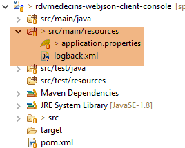 |
[application.properties]
logging.level.org.springframework.web=OFF
logging.level.org.hibernate=OFF
spring.main.show-banner=false
logging.level.httpclient.wire=OFF
[logback.xml]
<configuration>
<appender name="STDOUT" class="ch.qos.logback.core.ConsoleAppender">
<!-- Encodern wird standardmäßig der Typ ch.qos.logback.classic.encoder.PatternLayoutEncoder zugewiesen -->
<encoder>
<pattern>%d{HH:mm:ss.SSS} [%thread] %-5level %logger{36} - %msg%n</pattern>
</encoder>
</appender>
<!-- Protokollstufe steuern -->
<root level="info"> <!-- aus, Info, Debug, Warnung -->
<appender-ref ref="STDOUT" />
</root>
</configuration>
8.5.10. Implementierung der Schicht [DAO]
Nun bleibt uns noch, den Kern der Schicht [DAO] vorzustellen, nämlich die Implementierung ihrer Schnittstelle [IDao]. Wir werden dies schrittweise tun.
 |
Die Schnittstelle [IDao] wird durch die abstrakte Klasse [AbstractDao] und deren Unterklasse [Dao] implementiert.
Die übergeordnete Klasse [AbstractDao] lautet wie folgt:
package rdvmedecins.client.dao;
import java.net.URI;
import java.net.URISyntaxException;
import java.util.ArrayList;
import java.util.Base64;
import java.util.List;
import org.springframework.beans.factory.annotation.Autowired;
import org.springframework.core.ParameterizedTypeReference;
import org.springframework.http.MediaType;
import org.springframework.http.RequestEntity;
import org.springframework.http.RequestEntity.BodyBuilder;
import org.springframework.http.RequestEntity.HeadersBuilder;
import org.springframework.http.client.HttpComponentsClientHttpRequestFactory;
import org.springframework.web.client.RestTemplate;
import rdvmedecins.client.entities.User;
public abstract class AbstractDao implements IDao {
// Daten
@Autowired
protected RestTemplate restTemplate;
protected String urlServiceWebJson;
// URL Webdienst / jSON
public void setUrlServiceWebJson(String url) {
this.urlServiceWebJson = url;
}
public void setTimeout(int timeout) {
// Das Timeout für Anfragen des Web-Clients wird festgelegt
HttpComponentsClientHttpRequestFactory factory = (HttpComponentsClientHttpRequestFactory) restTemplate
.getRequestFactory();
factory.setConnectTimeout(timeout);
factory.setReadTimeout(timeout);
}
private String getBase64(User user) {
// Benutzername und Passwort werden in Base64 kodiert – erfordert
// Java 8
String chaîne = String.format("%s:%s", user.getLogin(), user.getPasswd());
return String.format("Basic %s", new String(Base64.getEncoder().encode(chaîne.getBytes())));
}
// Generische Anfrage
protected String getResponse(User user, String url, String jsonPost) {
...
}
}
- Zeile 20: Die Klasse ist abstrakt, was uns daran hindert, sie als Spring-Komponente zu kennzeichnen. Stattdessen wird ihre untergeordnete Klasse als solche gekennzeichnet;
- Zeilen 23–24: Wir injizieren die Bean [restTemplate], die wir in der Konfigurationsklasse [AppConfig] definiert haben;
- Zeile 25: Die Klasse „URL“ ist die Stammklasse des Webdienstes „jSON“;
- Zeilen 32–38: Legen das Timeout des Clients fest, während er auf eine Antwort vom Server wartet;
- Zeile 34: Wir rufen die Komponente [HttpComponentsClientHttpRequestFactory] ab, die wir bei der Erstellung der Bean [restTemplate] in diese injiziert hatten (siehe [AppConfig]);
- Zeile 36: Wir legen die maximale Wartezeit des Clients fest, wenn er eine Verbindung zum Server herstellt;
- Zeile 37: Wir legen die maximale Wartezeit des Clients fest, während er auf eine Antwort auf eine seiner Anfragen wartet;
Die Implementierung der Methoden zur Kommunikation mit dem Server wird in die folgende generische Methode ausgelagert:
// Generische Anfrage
protected String getResponse(User user, String url, String jsonPost) {
...
}
- Zeile 2: Die Parameter von [getResponse] lauten wie folgt:
- [User user]: der Benutzer, der die Verbindung herstellt;
- [String url]: das abzufragende URL. Dabei handelt es sich um das Ende des URL, wobei der erste Teil durch das Feld [urlServiceWebJson] der Klasse bereitgestellt wird,
- [String jsonPost]: Die zu sendende Zeichenfolge jSON. Ist dieser Wert vorhanden, wird der URL mit einem POST angefordert, andernfalls mit einem GET;
Weiter geht’s:
// generische Anfrage
protected String getResponse(User user, String url, String jsonPost) {
// URL: URL – Kontakt
// jsonPost: Der Wert jSON ist zu übermitteln
try {
// Abfrage ausführen
RequestEntity<?> request;
if (jsonPost == null) {
HeadersBuilder<?> headersBuilder = RequestEntity.get(new URI(String.format("%s%s", urlServiceWebJson, url))).accept(MediaType.APPLICATION_JSON);
if (user != null) {
headersBuilder = headersBuilder.header("Authorization", getBase64(user));
}
request = headersBuilder.build();
} else {
BodyBuilder bodyBuilder = RequestEntity.post(new URI(String.format("%s%s", urlServiceWebJson, url)))
.header("Content-Type", "application/json").accept(MediaType.APPLICATION_JSON);
if (user != null) {
bodyBuilder = bodyBuilder.header("Authorization", getBase64(user));
}
request = bodyBuilder.body(jsonPost);
}
// Die Abfrage wird ausgeführt
return restTemplate.exchange(request, new ParameterizedTypeReference<String>() {
}).getBody();
} catch (URISyntaxException e) {
throw new RdvMedecinsException(20, getMessagesForException(e));
} catch (RuntimeException e) {
throw new RdvMedecinsException(21, getMessagesForException(e));
}
}
- Zeilen 23–24: Die Anweisung, die die Anfrage an den Server sendet und dessen Antwort empfängt. Die Komponente [RestTemplate] bietet eine Vielzahl von Methoden für den Austausch mit dem Server. Man hätte auch eine andere Methode als [exchange] wählen können. Der zweite Parameter des Aufrufs legt den Typ der erwarteten Antwort fest, in diesem Fall eine Zeichenkette vom Typ jSON. Der erste Parameter ist die Anfrage vom Typ [RequestEntity] (Zeile 7). Das Ergebnis der Methode [exchange] ist vom Typ [ResponseEntity<String>]. Der Typ [ResponseEntity] kapselt die vollständige Antwort des Servers, einschließlich der Header HTTP und des vom Server gesendeten Dokuments. Ebenso kapselt der Typ [RequestEntity] die gesamte Client-Anfrage einschließlich der Header HTTP und des eventuell übermittelten POST-Werts;
- Zeile 23: Dies ist der Hauptteil des Objekts [ResponseEntity<String>], der an die aufrufende Methode zurückgegeben wird, d. h. die vom Server gesendete Zeichenkette jSON;
- Zeilen 9–21: Wir müssen die Anfrage vom Typ [RequestEntity] erstellen. Diese unterscheidet sich je nachdem, ob ein GET oder ein POST für die Anfrage verwendet wird;
- Zeile 9: Die Anfrage für einen GET. Die Klasse [RequestEntity] bietet statische Methoden zum Erstellen der Abfragen GET, POST, HEAD, ... Die Methode [RequestEntity.get] ermöglicht es, eine Abfrage vom Typ GET zu erstellen, indem die verschiedenen Methoden, aus denen diese besteht, miteinander verkettet werden:
- Die Methode [RequestEntity.get] akzeptiert als Parameter die Ziel-URL in Form einer Instanz von URI,
- die Methode [accept] ermöglicht die Definition der Elemente des Headers HTTP [Accept]. Hier geben wir an, dass wir den Typ [application/json] akzeptieren, den der Server senden wird;
- das Ergebnis dieser Methodenverkettung ist ein Typ [HeadersBuilder];
- Zeilen 10–12: Falls der Parameter [User user] nicht null ist, wird der Header HTTP [Authorization] in die Anfrage aufgenommen;
- Zeile 13: Die Methode [HeadersBuilder.build] verwendet diese verschiedenen Informationen, um den Abfragetyp [RequestEntity] zu erstellen;
- Zeile 15: Die Abfrage für einen POST. Mit der Methode [RequestEntity.post] lässt sich eine Abfrage vom Typ POST erstellen, indem die verschiedenen Methoden, aus denen diese besteht, miteinander verkettet werden:
- Die Methode [RequestEntity.post] akzeptiert als Parameter das Ziel-URL in Form einer Instanz von URI,
- die Methode [header] ermöglicht es, die gewünschten HTTP-Header zu definieren, in diesem Fall den für die Autorisierung,
- die nachfolgende Methode [header] fügt den Header [Content-Type: application/json] in die Anfrage ein, um anzugeben, dass der übermittelte Wert in Form einer Zeichenkette jSON eintreffen wird;
- die Methode [accept] ermöglicht es, anzugeben, dass wir den Typ [application/json] akzeptieren, den der Server senden wird;
- Zeilen 17–19: Falls der Parameter [User user] nicht null ist, wird der Header HTTP [Authorization] in die Anfrage aufgenommen;
- Zeile 20: Die Methode [BodyBuilder.body] legt den gebuchten Wert fest. Dieser ist der zweite Parameter der generischen Methode [getResponse] (Zeile 2);
- Zeilen 25–28: Tritt ein Fehler auf, wird eine Ausnahme vom Typ [RdvMedecinsException] ausgelöst;
Die Methode [getMessagesForException] in den Zeilen 26 und 28 lautet wie folgt:
// Liste der Fehlermeldungen einer Ausnahme
protected static List<String> getMessagesForException(Exception exception) {
// Die Liste der Fehlermeldungen der Ausnahme wird abgerufen
Throwable cause = exception;
List<String> erreurs = new ArrayList<String>();
while (cause != null) {
// Die Meldung wird nur abgerufen, wenn sie !=null und nicht leer ist
String message = cause.getMessage();
if (message != null) {
message = message.trim();
if (message.length() != 0) {
erreurs.add(message);
}
}
// nächste Ursache
cause = cause.getCause();
}
return erreurs;
}
Die private Methode [getBase64] liefert den Base64-Code der Zeichenkette „login:passwd“ für den Authentifizierungsheader HTTP:
private String getBase64(User user) {
// Der Benutzer und sein Passwort werden in Base64 kodiert – erfordert Java 8
String chaîne = String.format("%s:%s", user.getLogin(), user.getPasswd());
return String.format("Basic %s", new String(Base64.getEncoder().encode(chaîne.getBytes())));
}
Die Klasse [Dao] erweitert die Klasse [AbstractDao] wie folgt:
package rdvmedecins.client.dao;
import java.io.IOException;
import java.util.List;
import org.springframework.beans.factory.annotation.Autowired;
import org.springframework.stereotype.Service;
import com.fasterxml.jackson.core.type.TypeReference;
import com.fasterxml.jackson.databind.ObjectMapper;
import rdvmedecins.client.entities.AgendaMedecinJour;
import rdvmedecins.client.entities.Client;
import rdvmedecins.client.entities.Creneau;
import rdvmedecins.client.entities.Medecin;
import rdvmedecins.client.entities.Rv;
import rdvmedecins.client.entities.User;
import rdvmedecins.client.requests.PostAjouterRv;
import rdvmedecins.client.requests.PostSupprimerRv;
import rdvmedecins.client.responses.Response;
@Service
public class Dao extends AbstractDao implements IDao {
// Mapper jSON
@Autowired
ObjectMapper jsonMapper;
@Autowired
private ObjectMapper jsonMapperShortCreneau;
@Autowired
private ObjectMapper jsonMapperLongRv;
@Autowired
private ObjectMapper jsonMapperShortRv;
public List<Client> getAllClients(User user) {
...
}
public List<Medecin> getAllMedecins(User user) {
...
}
...
}
- Zeile 22: Die Klasse [Dao] ist eine Spring-Komponente. Hier wurde die Annotation [@Service] verwendet. Man hätte auch weiterhin die bisher verwendete Annotation [@Component] verwenden können;
- Zeilen 26–36: Injektion der vier Mapper jSON, die in der Konfigurationsklasse [DaoConfig] definiert sind;
Die Methoden der Klasse [Dao] folgen alle demselben Schema. Wir werden eine Operation GET und eine Operation POST näher erläutern.
Zunächst eine Abfrage [GET]:
public AgendaMedecinJour getAgendaMedecinJour(User user, long idMedecin, String jour) {
// die Antwort
Response<AgendaMedecinJour> response;
// der Kalender
String jsonResponse = getResponse(user, String.format("%s/%s/%s", "/getAgendaMedecinJour", idMedecin, jour), null);
try {
// der Kalender AgendaMedecinJour
response = jsonMapperLongRv.readValue(jsonResponse, new TypeReference<Response<AgendaMedecinJour>>() {
});
} catch (IOException e) {
throw new RdvMedecinsException(401, getMessagesForException(e));
} catch (RuntimeException e) {
throw new RdvMedecinsException(402, getMessagesForException(e));
}
// Analyse der Antwort
int status = response.getStatus();
if (status != 0) {
throw new RdvMedecinsException(status, response.getMessages());
} else {
return response.getBody();
}
}
- Zeile 5: Die generische Methode [getResponse] wird aufgerufen. Die tatsächlich verwendeten Parameter sind folgende:
- 1: der Benutzer;
- 2: das Ziel URL;
- 3: der zu übermittelnde Wert. Hier gibt es keinen;
- Zeile 5: Der Aufruf wurde nicht von einem try/catch-Block umschlossen. Die Methode [getResponse] kann möglicherweise eine Ausnahme vom Typ [RdvMedecinsException] auslösen. Wird diese Ausnahme ausgelöst, wird sie an die Methode weitergeleitet, die die oben genannte Methode [getAgendaMedecinJour] aufgerufen hat;
- Zeile 8: DieURL [/getAgendaMedecinJour] sendet einen Typ [Response<AgendaMedecinJour>], der serverseitig durch den Mapper jSON jSONW2HTMLP005748ZQX. Derselbe Mapper wird verwendet, um die empfangene Zeichenfolge jSON zu deserialisieren;
- Zeilen 10–13: Tritt in Zeile 9 ein Fehler auf, wird ein Ausnahmetyp [RdvMedecinsException] ausgelöst;
- Zeilen 16–21: Die vom Server gesendete Antwort wird analysiert;
- Zeilen 17–18: Wenn der Server einen Fehler gemeldet hat, wird eine Ausnahme mit den vom Server übermittelten Informationen ausgelöst;
- Zeilen 19–21: Andernfalls wird der Terminkalender des Arztes zurückgegeben;
Die untersuchte Anfrage POST lautet wie folgt:
public Rv ajouterRv(User user, String jour, long idCreneau, long idClient) {
// die Antwort
Response<Rv> response;
try {
// der Termin
String jsonResponse = getResponse(user, "/ajouterRv",
jsonMapper.writeValueAsString(new PostAjouterRv(idClient, idCreneau, jour)));
// der Termin Termin
response = jsonMapperLongRv.readValue(jsonResponse, new TypeReference<Response<Rv>>() {
});
} catch (RdvMedecinsException e) {
throw e;
} catch (IOException e) {
throw new RdvMedecinsException(381, getMessagesForException(e));
} catch (RuntimeException e) {
throw new RdvMedecinsException(382, getMessagesForException(e));
}
// Antwortanalyse
int status = response.getStatus();
if (status != 0) {
throw new RdvMedecinsException(status, response.getMessages());
} else {
return response.getBody();
}
}
- Zeile 6: Die Methode [getResponse] wird mit folgenden Parametern aufgerufen:
- 1: der Benutzer;
- 2: das Ziel URL,
- 3: der übermittelte Wert: Es wird der Wert jSON eines Typs [PostAjouter] übergeben, der aus den Informationen erstellt wurde, die die Methode als Parameter erhalten hat. Es wird ein Mapper jSON ohne Filter verwendet;
- Zeile 9: Auf der Serverseite hat der Mapper jSON [jsonMapperLongRv] die Antwort des Servers serialisiert. Auf der Clientseite wird derselbe Mapper verwendet, um sie zu deserialisieren;
- Zeile 6: Der Mapper URL [/ajouterRv] gibt den Wert jSON vom Typ [Response<Rv>] zurück;
- Zeilen 4–11: Hier wurde die Methode [getResponse] in einen try/catch-Block gesetzt, da die Serialisierung des gesendeten Werts eine Ausnahme auslösen kann. Die Methode [getResponse] kann eine Ausnahme vom Typ [RdvMedecinsException] auslösen. In diesem Fall wird sie einfach erneut aufgerufen (Zeilen 11–12);
Der folgende Code (Zeilen 13–24) entspricht dem soeben behandelten. Der einzige Unterschied zu einer Operation GET besteht also im zweiten Parameter der Methode [getResponse], der den Wert jSON des zu übermittelnden Werts enthalten muss.
Die übrigen Methoden sind nach dem gleichen Muster aufgebaut.
8.5.11. Anomalie
Bei verschiedenen Tests tritt eine Anomalie auf, die in der folgenden Klasse „[Anomalie]“ zusammengefasst ist:
package rdvmedecins.clients.console;
import java.io.IOException;
import org.springframework.context.annotation.AnnotationConfigApplicationContext;
import rdvmedecins.client.config.DaoConfig;
import rdvmedecins.client.dao.IDao;
import rdvmedecins.client.dao.RdvMedecinsException;
import rdvmedecins.client.entities.User;
import com.fasterxml.jackson.core.JsonProcessingException;
import com.fasterxml.jackson.databind.ObjectMapper;
public class Anomalie {
// Serialisierer jSON
static private ObjectMapper mapper = new ObjectMapper();
// Zeitlimit für Verbindungen in Millisekunden
static private int TIMEOUT = 1000;
public static void main(String[] args) throws IOException {
// Eine Referenz wird auf der Ebene abgerufen [DAO]
AnnotationConfigApplicationContext context = new AnnotationConfigApplicationContext(DaoConfig.class);
IDao dao = context.getBean(IDao.class);
// Der URL des Webdienstes / JSON wird festgelegt
dao.setUrlServiceWebJson("http://localhost:8080");
// Die Timeouts werden in Millisekunden festgelegt
dao.setTimeout(TIMEOUT);
// Authentifizierung
String message = "/authenticate [admin,admin]";
try {
dao.authenticate(new User("admin", "admin"));
System.out.println(String.format("%s : OK", message));
} catch (RdvMedecinsException e) {
showException(message, e);
}
// Authentifizierung
message = "/authenticate [admin,x]";
try {
dao.authenticate(new User("admin", "x"));
System.out.println(String.format("%s : OK", message));
} catch (RdvMedecinsException e) {
showException(message, e);
}
// Authentifizierung
message = "/authenticate [user,user]";
try {
dao.authenticate(new User("user", "user"));
System.out.println(String.format("%s : OK", message));
} catch (RdvMedecinsException e) {
showException(message, e);
}
// Kontext schließen
context.close();
}
private static void showException(String message, RdvMedecinsException e) {
System.out.println(String.format("URL [%s]", message));
System.out.println(String.format("L'erreur n° [%s] s'est produite :", e.getStatus()));
for (String msg : e.getMessages()) {
System.out.println(msg);
}
}
}
- Zeilen 31–38: Der Benutzer [admin, admin] wird authentifiziert;
- Zeilen 40–47: Der Benutzer [admin, x] wird authentifiziert, dessen Passwort jedoch falsch ist;
- Zeilen 49–56: Der Benutzer [user, user] wird authentifiziert; er ist ein vorhandener, aber nicht autorisierter Benutzer;
Hier sind die Ergebnisse:
- Zeile 2: Entgegen allen Erwartungen wurde der Benutzer [admin, x] akzeptiert;
Wenn man die Zeilen 33–38 des Codes auskommentiert, erhält man folgendes Ergebnis:
was das erwartete Ergebnis ist. Es scheint so, als wäre das Passwort des Benutzers [admin, admin] nach der ersten erfolgreichen Anmeldung für alle folgenden Anmeldungen nicht mehr erforderlich. Das ist tatsächlich der Fall. Spring Security verwendet standardmäßig eine Sitzung, die dafür sorgt, dass sich ein Benutzer nach der ersten Authentifizierung bei nachfolgenden Anfragen nicht erneut authentifizieren muss. Man kann die Konfiguration von [Spring Security] im Webserver / jSON so ändern, dass dies nicht mehr der Fall ist:
 |
Die Datei [SecurityConfig] muss wie folgt geändert werden:
@Override
protected void configure(HttpSecurity http) throws Exception {
...
// Keine Sitzung
http.sessionManagement().sessionCreationPolicy(SessionCreationPolicy.STATELESS);
}
- In Zeile 5 wird festgelegt, dass keine Sicherheitssitzung stattfinden soll;
Dadurch wurde das Problem der Anomalie behoben.
8.6. Spring-/Thymeleaf-Server-Code
8.6.1. Einleitung
Kommen wir zurück zur Architektur der zu erstellenden Client-Server-Anwendung:
 |
- Der Webserver [Web2] / jSON wurde erstellt;
- die Client-Schicht [DAO] des Clients [Web1] wurde erstellt;
Die Beziehung zwischen dem Server [Web1] und den Client-Browsern ist eine Client-Server-Beziehung, wobei der Server ein Webserver / jSON ist. Tatsächlich liefert [Web1] HTML-Datenströme aus, die in eine jSON-Kette gekapselt sind. Die Client-Server-Architektur sieht wie folgt aus:
 |
- Es handelt sich um eine Client-[2]-/Server-[1]-Architektur, bei der Client und Server über jSON kommunizieren;
- In [1] liefert die Spring-Webschicht MVC / Thymeleaf Ansichten, Ansichtsfragmente und Daten in jSON aus. Der Server ist also ein Webserver / jSON, genau wie der Server [Web1]. Auch er ist zustandslos;
- in [2]: Der beim Start der Anwendung geladenen Ansicht eingebettete JavaScript-Code ist in Schichten gegliedert:
- Die Schicht [présentation] kümmert sich um die Interaktionen mit dem Benutzer,
- die Schicht [DAO] kümmert sich um den Datenzugriff über den Server [Web2];
- der Client [2] wird bestimmte Ansichten zwischenspeichern, um den Server zu entlasten;
Wir werden den Webserver / jSON [Web1], der mit Spring MVC / Thymeleaf implementiert ist, in mehreren Schritten aufbauen:
- Einführung in das Framework CSS Bootstrap;
- Erstellung der Ansichten;
- Erstellung des Controllers;
Anschließend erstellen wir separat den Client JS für den Server [Web1]. Um deutlich zu machen, dass dieser Client eine gewisse Unabhängigkeit vom Server [Web1] besitzt, werden wir ihn mit dem Tool [Webstorm] statt mit STS erstellen.
Im Folgenden werden einige Details außer Acht gelassen, da sie uns vom Wesentlichen – nämlich der Organisation des Codes – ablenken könnten. Der interessierte Leser findet den vollständigen Code auf der Website dieses Dokuments.
8.6.2. Das Projekt STS
 |
- in [1] den Java-Code;
- in [2] die Views;
Die Maven-Konfiguration in [pom.xml] lautet wie folgt:
<?xml version="1.0" encoding="UTF-8"?>
<project xmlns="http://maven.apache.org/POM/4.0.0" xmlns:xsi="http://www.w3.org/2001/XMLSchema-instance"
xsi:schemaLocation="http://maven.apache.org/POM/4.0.0 http://maven.apache.org/xsd/maven-4.0.0.xsd">
<modelVersion>4.0.0</modelVersion>
<groupId>istia.st.rdvmedecins</groupId>
<artifactId>rdvmedecins-springthymeleaf-server</artifactId>
<version>0.0.1-SNAPSHOT</version>
<name>rdvmedecins-springthymeleaf-server</name>
<description>Gestion de RV Médecins</description>
<parent>
<groupId>org.springframework.boot</groupId>
<artifactId>spring-boot-starter-parent</artifactId>
<version>1.2.0.RELEASE</version>
</parent>
<dependencies>
<dependency>
<groupId>org.springframework.boot</groupId>
<artifactId>spring-boot-starter-thymeleaf</artifactId>
</dependency>
<dependency>
<groupId>istia.st.rdvmedecins</groupId>
<artifactId>rdvmedecins-webjson-client-console</artifactId>
<version>0.0.1-SNAPSHOT</version>
</dependency>
</dependencies>
<properties>
<start-class>rdvmedecins.springthymeleaf.server.boot.Boot</start-class>
<project.build.sourceEncoding>UTF-8</project.build.sourceEncoding>
<project.reporting.outputEncoding>UTF-8</project.reporting.outputEncoding>
<java.version>1.7</java.version>
</properties>
<build>
<plugins>
<plugin>
<artifactId>maven-compiler-plugin</artifactId>
<configuration>
<source>1.7</source>
<target>1.7</target>
</configuration>
</plugin>
<plugin>
<groupId>org.springframework.boot</groupId>
<artifactId>spring-boot-maven-plugin</artifactId>
</plugin>
</plugins>
</build>
...
</project>
- Zeilen 16–19: Das Projekt ist ein Thymeleaf-Projekt;
- Zeilen 20–24: Es basiert auf der Ebene [DAO], die wir gerade erstellt haben;
Die Java-Konfiguration wird durch zwei Dateien gewährleistet:
 |
Die Schicht [web] wird durch die folgende Datei [WebConfig] konfiguriert:
package rdvmedecins.springthymeleaf.server.config;
import org.springframework.boot.autoconfigure.EnableAutoConfiguration;
import org.springframework.context.MessageSource;
import org.springframework.context.annotation.Bean;
import org.springframework.context.support.ResourceBundleMessageSource;
import org.springframework.web.servlet.DispatcherServlet;
import org.springframework.web.servlet.config.annotation.WebMvcConfigurerAdapter;
import org.thymeleaf.spring4.SpringTemplateEngine;
import org.thymeleaf.spring4.templateresolver.SpringResourceTemplateResolver;
@EnableAutoConfiguration
public class WebConfig extends WebMvcConfigurerAdapter {
// ----------------- Konfiguration der QZXW2HTML-Schicht BW3dlYl0ZQX
@Bean
public MessageSource messageSource() {
ResourceBundleMessageSource messageSource = new ResourceBundleMessageSource();
messageSource.setBasename("i18n/messages");
return messageSource;
}
@Bean
public SpringResourceTemplateResolver templateResolver() {
SpringResourceTemplateResolver templateResolver = new SpringResourceTemplateResolver();
templateResolver.setPrefix("classpath:/templates/");
templateResolver.setSuffix(".xml");
templateResolver.setTemplateMode("HTML5");
templateResolver.setCacheable(true);
templateResolver.setCharacterEncoding("UTF-8");
return templateResolver;
}
@Bean
SpringTemplateEngine templateEngine(SpringResourceTemplateResolver templateResolver) {
SpringTemplateEngine templateEngine = new SpringTemplateEngine();
templateEngine.setTemplateResolver(templateResolver);
return templateEngine;
}
// Konfiguration des DispatcherServlets für die Header CORS
@Bean
public DispatcherServlet dispatcherServlet() {
DispatcherServlet servlet = new DispatcherServlet();
servlet.setDispatchOptionsRequest(true);
return servlet;
}
}
Wir sind bereits zu einem oder anderen Zeitpunkt auf alle Elemente dieser Konfiguration gestoßen. Es sei nur daran erinnert, dass die Zeilen 42–47 erforderlich sind, wenn man den Server mit domänenübergreifenden Anfragen (CORS) abfragen möchte. Dies wird hier der Fall sein.
Die Klasse [AppConfig] konfiguriert die gesamte Anwendung:
package rdvmedecins.springthymeleaf.server.config;
import org.springframework.boot.autoconfigure.EnableAutoConfiguration;
import org.springframework.context.annotation.ComponentScan;
import org.springframework.context.annotation.Import;
import rdvmedecins.client.config.DaoConfig;
@EnableAutoConfiguration
@ComponentScan(basePackages = { "rdvmedecins.springthymeleaf.server" })
@Import({ WebConfig.class, DaoConfig.class })
public class AppConfig {
// admin / admin
private final String USER_INIT = "admin";
private final String MDP_USER_INIT = "admin";
// Stammverzeichnis Webservice / JSON
private final String WEBJSON_ROOT = "http://localhost:8080";
// Timeout in Millisekunden
private final int TIMEOUT = 5000;
// CORS
private final boolean CORS_ALLOWED=true;
...
}
- Zeile 11: [AppConfig] importiert die Konfiguration der Schicht [DAO] und der Schicht [web];
- Zeilen 15–16: Die Anmeldedaten, mit denen die Anwendung beim Start auf die Daten zugreifen kann, um Ärzte und Kunden zwischenzuspeichern;
- Zeile 18: die URL des Webdienstes / jSON [Web1];
- Zeile 20: der timeout für die Aufrufe HTTP der Anwendung;
- Zeile 22: Ein boolescher Wert, um domänenübergreifende Aufrufe zuzulassen oder zu verbieten;
Schließlich ist in [application.properties] der Tomcat-Server so konfiguriert, dass er auf Port 8081 läuft:
 |
server.port=8081
8.6.3. Die Funktionen der Anwendung
Diese wurden in Abschnitt 8.2 beschrieben. Wir fassen sie nun noch einmal zusammen. Mit einem Browser ruft man die Seiten URL und [http://localhost:8081/boot.html] auf:
 |
- in [1], die Startseite der Anwendung;
- in [2] und [3] die Benutzer-ID und das Passwort desjenigen, der die Anwendung nutzen möchte. Es gibt zwei Benutzer: admin/admin (Login/Passwort) mit einer Rolle (ADMIN) und user/user mit einer Rolle (USER). Nur die Rolle ADMIN ist berechtigt, die Anwendung zu nutzen. Die Rolle USER dient lediglich dazu, zu veranschaulichen, wie der Server in diesem Anwendungsfall antwortet;
- in [4] die Schaltfläche, über die man sich beim Server anmelden kann;
- in [5] die Sprache der Anwendung. Es gibt zwei: standardmäßig Französisch und Englisch;
- in [6] die URL des Servers [rdvmedecins-springthymeleaf-server];
 |
- in [1] wird die Verbindung hergestellt;
 |
- Sobald man angemeldet ist, kann man den Arzt auswählen, bei dem man einen Termin vereinbaren möchte ([2]), sowie den Tag des Termins ([3]). Sobald ein Arzt und ein Tag ausgewählt wurden, wird der Terminkalender automatisch angezeigt:
 |
- Sobald der Terminkalender des Arztes angezeigt wird, kann man einen Termin reservieren [5];
 |
- In [6] wählt man den Patienten für den Termin aus und bestätigt diese Auswahl in [7];
 |
Sobald der Termin bestätigt ist, kehrt man automatisch zum Kalender zurück, in dem der neue Termin nun eingetragen ist. Dieser Termin kann später über [8] gelöscht werden.
Die wichtigsten Funktionen wurden beschrieben. Sie sind einfach. Schließen wir mit der Sprachverwaltung ab:
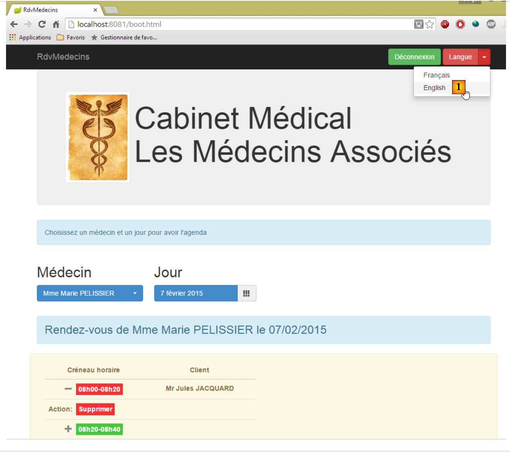 |
- In [1] wechselt man von Französisch zu Englisch;
 |
- in [2] wird die Ansicht auf Englisch umgestellt, einschließlich des Kalenders;
8.6.4. Schritt 1: Einführung in das Bootstrap-Framework CSS
 |
Im oben genannten Web-Client verwenden die Seiten HTML das Bootstrap-Framework CSS, das wir nun vorstellen.
8.6.4.1. Das Beispielprojekt
Das Beispielprojekt sieht wie folgt aus:
 |
- in [1]: das gesamte Projekt;
- in [2]: der Java-Code;
- in [3]: die JavaScript-Skripte;
 |
- in [4]: die JavaScript-Bibliotheken;
- in [5]: die Thymeleaf-Ansichten;
- in [6]: die Stylesheets;
8.6.4.1.1. Maven-Konfiguration
Die Datei [pom.xml] ist die eines Thymeleaf-Maven-Projekts:
<?xml version="1.0" encoding="UTF-8"?>
<project xmlns="http://maven.apache.org/POM/4.0.0" xmlns:xsi="http://www.w3.org/2001/XMLSchema-instance"
xsi:schemaLocation="http://maven.apache.org/POM/4.0.0 http://maven.apache.org/xsd/maven-4.0.0.xsd">
<modelVersion>4.0.0</modelVersion>
<groupId>istia.st</groupId>
<artifactId>rdvmedecins-webjson-client-bootstrap</artifactId>
<version>0.0.1-SNAPSHOT</version>
<packaging>jar</packaging>
<name>rdvmedecins-webjson-client-bootstrap</name>
<description>Démos Bootstrap</description>
<parent>
<groupId>org.springframework.boot</groupId>
<artifactId>spring-boot-starter-parent</artifactId>
<version>1.2.0.RELEASE</version>
<relativePath /> <!-- Übergeordnetes Element aus Repository abrufen -->
</parent>
<properties>
<project.build.sourceEncoding>UTF-8</project.build.sourceEncoding>
<start-class>istia.st.rdvmedecins.BootstrapDemo</start-class>
<java.version>1.7</java.version>
</properties>
<dependencies>
<dependency>
<groupId>org.springframework.boot</groupId>
<artifactId>spring-boot-starter-thymeleaf</artifactId>
</dependency>
</dependencies>
<build>
<plugins>
<plugin>
<groupId>org.springframework.boot</groupId>
<artifactId>spring-boot-maven-plugin</artifactId>
</plugin>
</plugins>
</build>
</project>
8.6.4.1.2. Java-Konfiguration
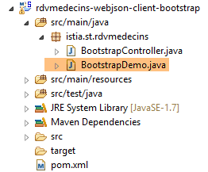 |
Die Klasse [BootstrapDemo] konfiguriert die Spring-/Thymeleaf-Anwendung:
package istia.st.rdvmedecins;
import org.springframework.boot.SpringApplication;
import org.springframework.boot.autoconfigure.EnableAutoConfiguration;
import org.springframework.context.annotation.Bean;
import org.springframework.context.annotation.ComponentScan;
import org.springframework.web.servlet.config.annotation.WebMvcConfigurerAdapter;
import org.thymeleaf.spring4.templateresolver.SpringResourceTemplateResolver;
@EnableAutoConfiguration
@ComponentScan({ "istia.st.rdvmedecins" })
public class BootstrapDemo extends WebMvcConfigurerAdapter {
public static void main(String[] args) {
SpringApplication.run(BootstrapDemo.class, args);
}
@Bean
public SpringResourceTemplateResolver templateResolver() {
SpringResourceTemplateResolver templateResolver = new SpringResourceTemplateResolver();
templateResolver.setPrefix("classpath:/templates/");
templateResolver.setSuffix(".xml");
templateResolver.setTemplateMode("HTML5");
templateResolver.setCacheable(true);
templateResolver.setCharacterEncoding("UTF-8");
return templateResolver;
}
}
Wir sind dieser Art von Code bereits begegnet.
8.6.4.1.3. Der Spring-Controller
 |
Der Controller [BootstrapController] sieht wie folgt aus:
package istia.st.rdvmedecins;
import org.springframework.stereotype.Controller;
import org.springframework.web.bind.annotation.RequestMapping;
import org.springframework.web.bind.annotation.RequestMethod;
@Controller
public class BootstrapController {
@RequestMapping(value = "/bs-01", method = RequestMethod.GET, produces = "text/html; charset=UTF-8")
public String bso1() {
return "bs-01";
}
@RequestMapping(value = "/bs-02", method = RequestMethod.GET, produces = "text/html; charset=UTF-8")
public String bs02() {
return "bs-02";
}
@RequestMapping(value = "/bs-03", method = RequestMethod.GET, produces = "text/html; charset=UTF-8")
public String bs03() {
return "bs-03";
}
@RequestMapping(value = "/bs-04", method = RequestMethod.GET, produces = "text/html; charset=UTF-8")
public String bs04() {
return "bs-04";
}
@RequestMapping(value = "/bs-05", method = RequestMethod.GET, produces = "text/html; charset=UTF-8")
public String bs05() {
return "bs-05";
}
@RequestMapping(value = "/bs-06", method = RequestMethod.GET, produces = "text/html; charset=UTF-8")
public String bs06() {
return "bs-06";
}
@RequestMapping(value = "/bs-07", method = RequestMethod.GET, produces = "text/html; charset=UTF-8")
public String bs07() {
return "bs-07";
}
@RequestMapping(value = "/bs-08", method = RequestMethod.GET, produces = "text/html; charset=UTF-8")
public String bs08() {
return "bs-08";
}
}
Die Aktionen dienen lediglich dazu, von Thymeleaf verarbeitete Ansichten anzuzeigen.
8.6.4.1.4. Die Datei [application.properties]
Die Datei [application.properties] konfiguriert den eingebetteten Tomcat-Server:
server.port=8082
8.6.4.2. Beispiel Nr. 1: Das Jumbotron
Die Aktion [/bs-01] zeigt die folgende Ansicht [bs-01.xml] an:
 |
Die Ansicht [bs-01.xml] sieht wie folgt aus:
<!DOCTYPE HTML>
<html xmlns="http://www.w3.org/1999/xhtml" xmlns:th="http://www.thymeleaf.org" xmlns:layout="http://www.ultraq.net.nz/thymeleaf/layout">
<head>
<meta name="viewport" content="width=device-width" />
<title>RdvMedecins</title>
<!-- Bootstrap-Kern CSS -->
<link rel="stylesheet" type="text/css" href="resources/css/bootstrap-3.1.1-min.css" />
<link rel="stylesheet" type="text/css" href="resources/css/bootstrapDemo.css" />
</head>
<body id="body">
<div class="container">
<!-- Jumbotron-Bootstrap -->
<div th:include="jumbotron"></div>
<!-- Inhalt -->
<div id="content">
<h1>Ici un contenu</h1>
</div>
<!-- Fehler -->
<div id="erreur" class="alert alert-danger">
<span>Ici, un texte d'erreur</span>
</div>
</div>
</body>
</html>
- Zeile 7: die Datei CSS des Bootstrap-Frameworks;
- Zeile 8: eine lokale Datei CSS;
- Zeile 13: zeigt [1] an;
- Zeilen 19–21: zeigen [2] an;
- Zeile 11: Die Klasse CSS [container] definiert einen Anzeigebereich innerhalb des Browsers;
- Zeile 19: Die Klasse CSS [alert] zeigt einen farbigen Bereich an. Die Klasse [alert-danger] verwendet eine vordefinierte Farbe. Davon gibt es mehrere: [alert-info, alert-warning,...];
Das Jumbotron [1] wird durch die folgende Ansicht [jumbotron.xml] generiert:
<!DOCTYPE html>
<section xmlns="http://www.w3.org/1999/xhtml" xmlns:th="http://www.thymeleaf.org">
<!-- Bootstrap-Jumbotron -->
<div class="jumbotron">
<div class="row">
<div class="col-md-2">
<img src="resources/images/caduceus.jpg" alt="RvMedecins" />
</div>
<div class="col-md-10">
<h1>
Les Médecins
<br />
associés
</h1>
</div>
</div>
</div>
</section>
- Zeile 4: Das Feld hat die Klasse CSS [jumbotron];
- Zeile 5: Die Klasse [row] definiert eine Zeile mit 12 Spalten;
- Zeile 6: Die Klasse [col-md-2] definiert einen zweispaltigen Bereich in der Zeile;
- Zeile 7: In diese beiden Spalten wird ein Bild eingefügt;
- Zeilen 9–15: In die übrigen 10 Spalten wird der Text eingefügt;
8.6.4.3. Beispiel Nr. 2: Die Navigationsleiste
Die Aktion [/bs-02] zeigt die folgende Ansicht [bs-02.xml] an:
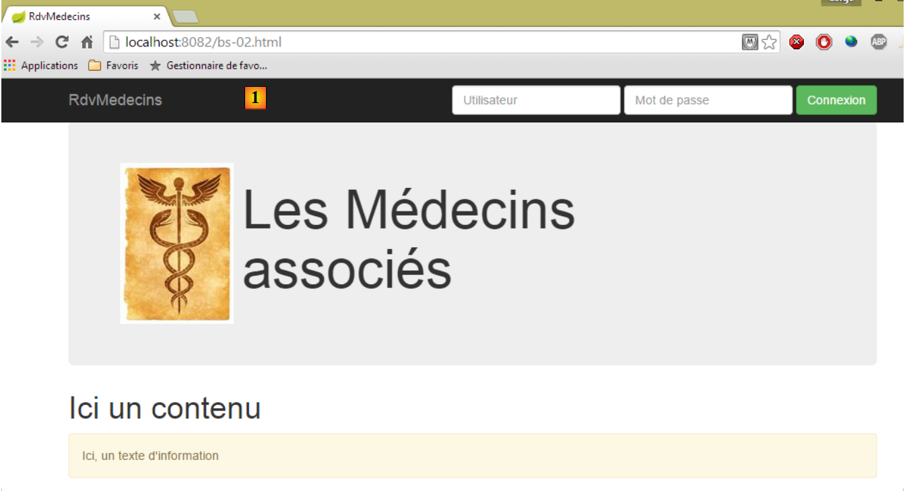 |
Neu ist die Navigationsleiste [1] mit ihrem Eingabeformular und ihren Schaltflächen:
Die Ansicht [bs-02.xml] sieht wie folgt aus:
<!DOCTYPE HTML>
<html xmlns="http://www.w3.org/1999/xhtml" xmlns:th="http://www.thymeleaf.org" xmlns:layout="http://www.ultraq.net.nz/thymeleaf/layout">
<head>
<meta name="viewport" content="width=device-width" />
<title>RdvMedecins</title>
<!-- Bootstrap-Kern CSS -->
<link rel="stylesheet" type="text/css" href="resources/css/bootstrap-3.1.1-min.css" />
<link rel="stylesheet" type="text/css" href="resources/css/bootstrapDemo.css" />
<!-- Skripte JS -->
<script src="resources/vendor/jquery-2.1.1.min.js"></script>
<script type="text/javascript" src="resources/js/bs-02.js"></script>
</head>
<body id="body">
<div class="container">
<!-- Navigationsleiste -->
<div th:include="navbar1"></div>
<!-- Bootstrap Jumbotron -->
<div th:include="jumbotron"></div>
<!-- Inhalt -->
<div id="content">
<h1>Ici un contenu</h1>
</div>
<!-- Info -->
<div class="alert alert-warning">
<span id="info">Ici, un texte d'information</span>
</div>
</div>
</body>
</html>
- Zeile 10: jQuery wird importiert;
- Zeile 11: ein lokales Skript JS;
- Zeile 16: die Navigationsleiste;
Die Navigationsleiste wird durch die folgende Ansicht [navbar1.xml] generiert:
<!DOCTYPE HTML>
<section xmlns="http://www.w3.org/1999/xhtml" xmlns:th="http://www.thymeleaf.org">
<div class="navbar navbar-inverse navbar-fixed-top" role="navigation">
<div class="container">
<div class="navbar-header">
<button type="button" class="navbar-toggle" data-toggle="collapse" data-target=".navbar-collapse">
<span class="sr-only">Toggle navigation</span>
<span class="icon-bar"></span>
<span class="icon-bar"></span>
<span class="icon-bar"></span>
</button>
<a class="navbar-brand" href="#">RdvMedecins</a>
</div>
<div class="navbar-collapse collapse">
<img id="loading" src="resources/images/loading.gif" alt="waiting..." style="display: none" />
<!-- Anmeldeformular -->
<div class="navbar-form navbar-right" role="form" id="formulaire" method="post">
<div class="form-group">
<input type="text" placeholder="Utilisateur" class="form-control" />
</div>
<div class="form-group">
<input type="password" placeholder="Mot de passe" class="form-control" />
</div>
<button type="button" class="btn btn-success" onclick="javascript:connecter()">Connexion</button>
</div>
</div>
</div>
</div>
</section>
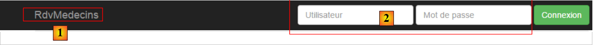 |
- Zeile 3: Die Klasse [navbar] legt das Styling der Navigationsleiste fest. Die Klasse [navbar-inverse] weist ihr einen schwarzen Hintergrund zu. Die Klasse [navbar-fixed-top] sorgt dafür, dass die Navigationsleiste beim Scrollen der vom Browser angezeigten Seite oben auf dem Bildschirm bleibt;
- Zeilen 5–13: definieren den Bereich [1]. Das ist typischerweise eine Reihe von Klassen, die ich nicht verstehe. Ich verwende die Komponente so, wie sie ist;
- Zeilen 14–26: Definieren einen „responsiven“ Bereich der Steuerleiste. Auf einem Smartphone verschwindet dieser Bereich in einem Menübereich;
- Zeile 15: ein derzeit ausgeblendetes Bild;
- Zeilen 17–25: Die Klasse [navbar-form] gestaltet ein Formular in der Steuerleiste. Die Klasse [navbar-right] verschiebt es rechts davon;
- Zeilen 21–23: die beiden Eingabefelder des Formulars aus Zeile 17, [2]. Sie befinden sich innerhalb einer Klasse [form-group], die die Elemente eines Formulars gestaltet, und jedes von ihnen hat die Klasse [form-control];
- Zeile 24: Die Klasse [btn], die eine Schaltfläche definiert, ergänzt durch die Klasse [btn-success], die ihr die grüne Farbe verleiht;
- Zeile 24: Wenn man auf die Schaltfläche [Connexion] klickt, wird die folgende Funktion JS ausgeführt:
function connecter() {
showInfo("Connexion demandée...");
}
function showInfo(message) {
$("#info").text(message);
}
Hier ein Beispiel:

8.6.4.4. Beispiel Nr. 3: Die Schaltfläche mit der Liste
Die Aktion [/bs-03] zeigt die folgende Ansicht [bs-03.xml] an:
 |
- Neu ist die Listen-Schaltfläche [1], auch „Dropdown“ genannt;
Der Code der Ansicht [bs-03.xml] lautet wie folgt:
<!DOCTYPE HTML>
<html xmlns="http://www.w3.org/1999/xhtml" xmlns:th="http://www.thymeleaf.org" xmlns:layout="http://www.ultraq.net.nz/thymeleaf/layout">
<head>
<meta name="viewport" content="width=device-width" />
<title>RdvMedecins</title>
<!-- Bootstrap-Kern CSS -->
<link rel="stylesheet" href="resources/css/bootstrap-3.1.1-min.css" />
<link rel="stylesheet" type="text/css" href="resources/css/bootstrapDemo.css" />
<!-- Bootstrap-Kern JavaScript ================================================== -->
<script src="resources/vendor/jquery-2.1.1.min.js"></script>
<script src="resources/vendor/bootstrap.js"></script>
<!-- Lokales Skript -->
<script type="text/javascript" src="resources/js/bs-03.js"></script>
</head>
<body id="body">
<div class="container">
<!-- Navigationsleiste -->
<div th:include="navbar2"></div>
<!-- Bootstrap Jumbotron -->
<div th:include="jumbotron"></div>
<!-- Inhalt -->
<div id="content">
<h1>Ici un contenu</h1>
</div>
<!-- Info -->
<div class="alert alert-warning">
<span id="info">Ici, un texte d'information</span>
</div>
</div>
</body>
</html>
- Zeile 11: Die Dropdown-Schaltfläche benötigt die Bootstrap-Datei JS;
- Zeile 18: die neue Navigationsleiste;
Die Ansicht [navbar2.xml] lautet wie folgt:
<!DOCTYPE HTML>
<section xmlns="http://www.w3.org/1999/xhtml" xmlns:th="http://www.thymeleaf.org">
<div class="navbar navbar-inverse navbar-fixed-top" role="navigation">
<div class="container">
<div class="navbar-header">
<button type="button" class="navbar-toggle" data-toggle="collapse" data-target=".navbar-collapse">
<span class="sr-only">Toggle navigation</span>
<span class="icon-bar"></span>
<span class="icon-bar"></span>
<span class="icon-bar"></span>
</button>
<a class="navbar-brand" href="#">RdvMedecins</a>
</div>
<div class="navbar-collapse collapse">
<img id="loading" src="resources/images/loading.gif" alt="waiting..." style="display: none" />
<!-- Anmeldeformular -->
<div class="navbar-form navbar-right" role="form" id="formulaire" method="post">
<div class="form-group">
<input type="text" placeholder="Utilisateur" class="form-control" />
</div>
<div class="form-group">
<input type="password" placeholder="Mot de passe" class="form-control" />
</div>
<button type="button" class="btn btn-success" onclick="javascript:connecter()">Connexion</button>
<!-- Sprachen -->
<div class="btn-group">
<button type="button" class="btn btn-danger">Langues</button>
<button type="button" class="btn btn-danger dropdown-toggle" data-toggle="dropdown">
<span class="caret"></span>
<span class="sr-only">Toggle Dropdown</span>
</button>
<ul class="dropdown-menu" role="menu">
<li>
<a href="javascript:setLang('fr')">Français</a>
</li>
<li>
<a href="javascript:setLang('en')">English</a>
</li>
</ul>
</div>
</div>
</div>
</div>
</div>
<!-- Startseite -->
<script th:inline="javascript">
/*<![CDATA[*/
// Seite wird initialisiert
initNavBar2();
/*]]>*/
</script>
</section>
- Zeilen 25–40: definieren die Listen-Schaltfläche;
- Zeile 27: Die Klasse „[btn-danger]“ weist ihr die Farbe Rot zu;
- Zeilen 32–39: die Elemente der Liste. Es handelt sich um Links, die jeweils mit einer Funktion JS verknüpft sind;
- Zeilen 46–51: Ein Skript JS, das nach dem Laden des Dokuments ausgeführt wird;
Das Skript JS [bs-03.js] lautet wie folgt:
function initNavBar2() {
// Sprachauswahl
$('.dropdown-toggle').dropdown();
}
function connecter() {
showInfo("Connexion demandée...");
}
function setLang(lang) {
var msg;
switch (lang) {
case 'fr':
msg = "Vous avez choisi la langue française...";
break;
case 'en':
msg = "You have selected english language...";
break;
}
showInfo(msg);
}
function showInfo(message) {
$("#info").text(message);
}
- Zeilen 1–4: Die Funktion, die [dropdown] initialisiert. [$('.dropdown-toggle')] lokalisiert das Element mit der Klasse [dropdown-toggle]. Dabei handelt es sich um die Listen-Schaltfläche (Zeile 28 der Ansicht). Auf diese wird die Funktion JS [dropdown()] angewendet, die in der Datei JS [bootstrap.js] definiert ist. Erst nach diesem Vorgang verhält sich die Schaltfläche wie eine Listenschaltfläche;
- Zeilen 10–21: Die Funktion, die bei der Auswahl einer Sprache ausgeführt wird;
Hier ein Beispiel:

8.6.4.5. Beispiel Nr. 4: Ein Menü
Die Aktion [/bs-04] zeigt die folgende Ansicht [bs-04.xml] an:
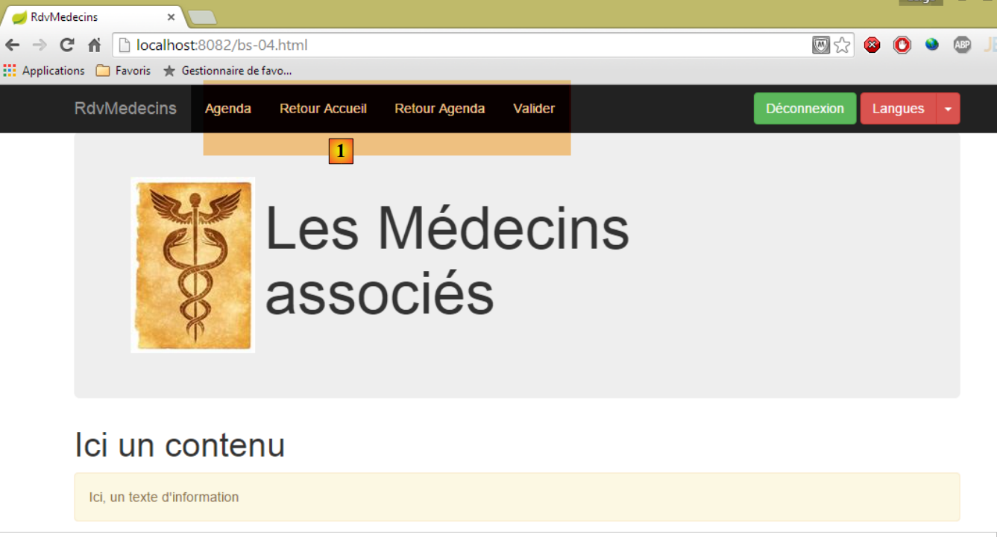 |
Es wurde ein Menü [1] hinzugefügt.
Die Ansicht [bs-04.xml] sieht wie folgt aus:
<!DOCTYPE HTML>
<html xmlns="http://www.w3.org/1999/xhtml" xmlns:th="http://www.thymeleaf.org" xmlns:layout="http://www.ultraq.net.nz/thymeleaf/layout">
<head>
<meta name="viewport" content="width=device-width" />
<title>RdvMedecins</title>
<!-- Bootstrap-Kern CSS -->
<link rel="stylesheet" href="resources/css/bootstrap-3.1.1-min.css" />
<link rel="stylesheet" type="text/css" href="resources/css/bootstrapDemo.css" />
<!-- Bootstrap-Kern JavaScript ================================================== -->
<script src="resources/vendor/jquery-2.1.1.min.js"></script>
<script src="resources/vendor/bootstrap.js"></script>
<!-- Lokales Skript -->
<script type="text/javascript" src="resources/js/bs-04.js"></script>
</head>
<body id="body">
<div class="container">
<!-- Navigationsleiste -->
<div th:include="navbar3"></div>
<!-- Bootstrap-Jumbotron -->
<div th:include="jumbotron"></div>
<!-- Inhalt -->
<div id="content">
<h1>Ici un contenu</h1>
</div>
<!-- Info -->
<div class="alert alert-warning">
<span id="info">Ici, un texte d'information</span>
</div>
</div>
</body>
</html>
- Zeile 18: Es wird eine neue Navigationsleiste eingefügt;
Die Ansicht [navbar3.xml] sieht wie folgt aus:
<!DOCTYPE HTML>
<section xmlns="http://www.w3.org/1999/xhtml" xmlns:th="http://www.thymeleaf.org">
<div class="navbar navbar-inverse navbar-fixed-top" role="navigation">
<div class="container">
<div class="navbar-header">
<button type="button" class="navbar-toggle" data-toggle="collapse" data-target=".navbar-collapse">
<span class="sr-only">Toggle navigation</span>
<span class="icon-bar"></span>
<span class="icon-bar"></span>
<span class="icon-bar"></span>
</button>
<a class="navbar-brand" href="#">RdvMedecins</a>
</div>
<div class="collapse navbar-collapse">
<img id="loading" src="resources/images/loading.gif" alt="waiting..." style="display: none" />
<ul class="nav navbar-nav">
<li class="active" id="lnkAfficherAgenda">
<a href="javascript:afficherAgenda()">Agenda </a>
</li>
<li class="active" id="lnkAccueil">
<a href="javascript:retourAccueil()">Retour Accueil </a>
</li>
<li class="active" id="lnkRetourAgenda">
<a href="javascript:retourAgenda()">Retour Agenda </a>
</li>
<li class="active" id="lnkValiderRv">
<a href="javascript:validerRv()">Valider </a>
</li>
</ul>
<!-- Schaltflächen rechts -->
<div class="navbar-form navbar-right" role="form">
<!-- Abmelden -->
<button type="button" class="btn btn-success" onclick="javascript:deconnecter()">Déconnexion</button>
<!-- Sprachen -->
<div class="btn-group">
<button type="button" class="btn btn-danger">Langues</button>
<button type="button" class="btn btn-danger dropdown-toggle" data-toggle="dropdown">
<span class="caret"></span>
<span class="sr-only">Toggle Dropdown</span>
</button>
<ul class="dropdown-menu" role="menu">
<li>
<a href="javascript:setLang('fr')">Français</a>
</li>
<li>
<a href="javascript:setLang('en')">English</a>
</li>
</ul>
</div>
</div>
</div>
</div>
</div>
<!-- Startseite -->
<script th:inline="javascript">
/*<![CDATA[*/
// Seite wird initialisiert
initNavBar3();
/*]]>*/
</script>
</section>
- Zeilen 16–29: Erstellen das Menü mit vier Optionen, von denen jede mit einem Skript JS verknüpft ist;
- Zeilen 55–60: Ein Skript, das beim Laden der Seite ausgeführt wird;
Das Skript JS [bs-04.js] lautet wie folgt:
...
function initNavBar3() {
// Sprachauswahl
$('.dropdown-toggle').dropdown();
// das animierte Bild
loading = $("#loading");
loading.hide();
}
function afficherAgenda() {
showInfo("option [Agenda] cliquée...");
}
function retourAccueil() {
showInfo("option [Retour accueil] cliquée...");
}
function retourAgenda() {
showInfo("option [Retour agenda] cliquée...");
}
function validerRv() {
showInfo("option [Valider] cliquée...");
}
function setMenu(show) {
// die Menü-Links
var lnkAfficherAgenda = $("#lnkAfficherAgenda");
var lnkAccueil = $("#lnkAccueil");
var lnkValiderRv = $("#lnkValiderRv");
var lnkRetourAgenda = $("#lnkRetourAgenda");
// sie werden in ein Wörterbuch aufgenommen
var options = {
"lnkAccueil" : lnkAccueil,
"lnkAfficherAgenda" : lnkAfficherAgenda,
"lnkValiderRv" : lnkValiderRv,
"lnkRetourAgenda" : lnkRetourAgenda
}
// alle Links werden ausgeblendet
for ( var key in options) {
options[key].hide();
}
// die angeforderten werden angezeigt
for (var i = 0; i < show.length; i++) {
var option = show[i];
options[option].show();
}
}
- Zeilen 2–18: die Initialisierungsfunktion der Seite;
- Zeile 4: um die Schaltfläche mit der Sprachenliste anzuzeigen;
- Zeilen 6–7: Das animierte Bild wird ausgeblendet;
- Zeilen 26–48: eine Funktion [setMenu], mit der festgelegt werden kann, welche Optionen sichtbar sein sollen;
Öffnen wir die Entwicklerkonsole (Strg-Umschalt-I) und geben wir den folgenden Code ein: [1]:
 |
Kehren wir dann zum Browser zurück. Das Menü hat sich geändert: [2]:
8.6.4.6. Beispiel Nr. 5: Ein Dropdown-Menü
Die Aktion [/bs-05] zeigt die folgende Ansicht [bs-05.xml] an:
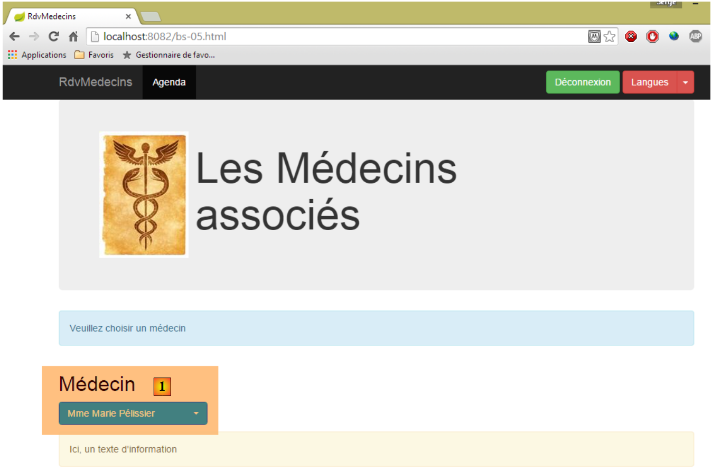 |
Die Neuerung befindet sich in [1]. Wir verwenden hier eine Komponente, die nicht zu Bootstrap gehört: [bootstrap-select] [http://silviomoreto.github.io/bootstrap-select/].
Der Code der Ansicht [bs-05.xml] lautet wie folgt:
<!DOCTYPE HTML>
<html xmlns="http://www.w3.org/1999/xhtml" xmlns:th="http://www.thymeleaf.org" xmlns:layout="http://www.ultraq.net.nz/thymeleaf/layout">
<head>
<meta name="viewport" content="width=device-width" />
<title>RdvMedecins</title>
<!-- Bootstrap-Kern CSS -->
<link rel="stylesheet" href="resources/css/bootstrap-3.1.1-min.css" />
<link rel="stylesheet" type="text/css" href="resources/css/bootstrap-select.min.css" />
<link rel="stylesheet" type="text/css" href="resources/css/bootstrapDemo.css" />
<!-- Bootstrap-Kern JavaScript ================================================== -->
<script type="text/javascript" src="resources/vendor/jquery-2.1.1.min.js"></script>
<script type="text/javascript" src="resources/vendor/bootstrap.js"></script>
<script type="text/javascript" src="resources/vendor/bootstrap-select.js"></script>
<!-- Lokales Skript -->
<script type="text/javascript" src="resources/js/bs-05.js"></script>
</head>
<body id="body">
<div class="container">
<!-- Navigationsleiste -->
<div th:include="navbar3"></div>
<!-- Bootstrap-Jumbotron -->
<div th:include="jumbotron"></div>
<!-- Inhalt -->
<div id="content" th:include="choixmedecin">
</div>
<!-- Info -->
<div class="alert alert-warning">
<span id="info">Ici, un texte d'information</span>
</div>
</div>
</body>
</html>
- Zeile 8: das für die Dropdown-Liste erforderliche CSS;
- Zeile 13: die für die Dropdown-Liste erforderliche Datei JS;
- Zeile 24: die Dropdown-Liste;
Die Ansicht [choixmedecin.xml] sieht wie folgt aus:
<!DOCTYPE html>
<section xmlns="http://www.w3.org/1999/xhtml" xmlns:th="http://www.thymeleaf.org">
<div class="alert alert-info">Veuillez choisir un médecin</div>
<div class="row">
<div class="col-md-3">
<h2>Médecin</h2>
<select id="idMedecin" class="combobox" data-style="btn-primary">
<option value="1">Mme Marie Pélissier</option>
<option value="2">Mr Jean Pardon</option>
<option value="3">Mlle Jeanne Jirou</option>
<option value="4">Mr Paul Macou</option>
</select>
</div>
</div>
<!-- lokales Skript -->
<script th:inline="javascript">
/*<![CDATA[*/
// Die Seite wird initialisiert
initChoixMedecin();
/*]]>*/
</script>
</section>
- Zeilen 7–12: Hier handelt es sich um ein klassisches [select]-Tag, das jedoch eine spezielle Klasse [combobox] aufweist. Das Attribut [data-style="btn-primary"] verleiht der Komponente ihre blaue Farbe;
- Zeilen 16–21: Ein Skript, das beim Laden der Seite ausgeführt wird;
Die Datei JS [bs-05.js] sieht wie folgt aus:
...
function afficherAgenda() {
var idMedecin = $('#idMedecin option:selected').val();
showInfo("Vous avez sélectionné le médecin d'id=" + idMedecin);
}
function initChoixMedecin() {
// das Auswahlfeld für Ärzte
$('#idMedecin').selectpicker();
// das Menü
setMenu([ "lnkAfficherAgenda" ]);
}
- Zeilen 7–12: Die Funktion, die beim Laden der Seite ausgeführt wird;
- Zeile 9: Die Anweisung, die das „[select]“ der Seite in eine Bootstrap-Dropdown-Liste umwandelt. „[$('#idMedecin')]“ verweist auf „[select]“ (Zeile 7 der Ansicht [choixmedecin]) und die Funktion JS [selectpicker] stammt aus der Datei JS [bootstrap-select.js];
- Zeile 11: Es wird nur eine der Menüoptionen angezeigt;
- Zeilen 2–5: Die Funktion JS wird ausgeführt, wenn man auf die Menüoption [Agenda] klickt;
- Zeile 3: Der Wert der in der Dropdown-Liste ausgewählten Option wird abgerufen: [$('#idMedecin option:selected')] sucht zunächst die Komponente [id=idMedecin] und dann innerhalb dieser Komponente die ausgewählte Option. Die Operation [..].val() ruft anschließend den Wert des gefundenen Elements ab, d. h. das Attribut [value] der ausgewählten Option;
Hier ein Beispiel für die Auswahl eines Arztes:
 |
8.6.4.7. Beispiel Nr. 6: Ein Kalender
Die Aktion [/bs-06] zeigt die folgende Ansicht [bs-06.xml] an:

Die Auswahl eines Arztes oder eines Datums löst die Funktion JS aus, die sowohl den ausgewählten Arzt als auch das ausgewählte Datum anzeigt. Hier ein Beispiel:
 |
Über die Schaltfläche „Sprachliste“ kann man den Kalender (und nur den Kalender) auf Englisch umstellen:

Dies ist das komplexeste Beispiel der Reihe. Der Kalender ist eine Komponente mit den Bezeichnungen [bootstrap-datepicker] und [http://eternicode.github.io/bootstrap-datepicker].
Die Ansicht [bs-06.xml] sieht wie folgt aus:
<!DOCTYPE HTML>
<html xmlns="http://www.w3.org/1999/xhtml" xmlns:th="http://www.thymeleaf.org" xmlns:layout="http://www.ultraq.net.nz/thymeleaf/layout">
<head>
<meta name="viewport" content="width=device-width" />
<title>RdvMedecins</title>
<!-- Bootstrap-Kern CSS -->
<link rel="stylesheet" href="resources/css/bootstrap-3.1.1-min.css" />
<link rel="stylesheet" type="text/css" href="resources/css/bootstrap-select.min.css" />
<link rel="stylesheet" type="text/css" href="resources/css/datepicker3.css" />
<link rel="stylesheet" type="text/css" href="resources/css/bootstrapDemo.css" />
<!-- Bootstrap-Kern JavaScript ================================================== -->
<script type="text/javascript" src="resources/vendor/jquery-2.1.1.min.js"></script>
<script type="text/javascript" src="resources/vendor/bootstrap.js"></script>
<script type="text/javascript" src="resources/vendor/bootstrap-select.js"></script>
<script type="text/javascript" src="resources/vendor/moment-with-locales.js"></script>
<script type="text/javascript" src="resources/vendor/bootstrap-datepicker.js"></script>
<script type="text/javascript" src="resources/vendor/bootstrap-datepicker.fr.js"></script>
<!-- Lokales Skript -->
<script type="text/javascript" src="resources/js/bs-06.js"></script>
</head>
<body id="body">
<div class="container">
<!-- Navigationsleiste -->
<div th:include="navbar3"></div>
<!-- Bootstrap-Jumbotron -->
<div th:include="jumbotron"></div>
<!-- Inhalt -->
<div id="content" th:include="choixmedecinjour">
</div>
<!-- Info -->
<div class="alert alert-warning">
<span id="info">Ici, un texte d'information</span>
</div>
</div>
</body>
</html>
- Zeile 8: die Datei CSS der Komponente [bootstrap-datepicker];
- Zeile 16: die Datei JS der Komponente [bootstrap-datepicker];
- Zeile 17: die Datei JS zur Verwaltung eines französischen Kalenders. Standardmäßig ist sie auf Englisch;
- Zeile 15: die Datei JS aus einer Bibliothek namens [moment], die Zugriff auf zahlreiche Zeitberechnungsfunktionen bietet ([http://momentjs.com/]);
- Zeile 28: die Kalenderansicht;
Die Ansicht [choixmedecinjour.xml] sieht wie folgt aus:
<!DOCTYPE html>
<section xmlns="http://www.w3.org/1999/xhtml" xmlns:th="http://www.thymeleaf.org">
<div class="alert alert-info">Veuillez choisir un médecin et une date</div>
<div class="row">
<div class="col-md-3">
<h2>Médecin</h2>
<select id="idMedecin" class="combobox" data-style="btn-primary">
<option value="1">Mme Marie Pélissier</option>
<option value="2">Mr Jean Pardon</option>
<option value="3">Mlle Jeanne Jirou</option>
<option value="4">Mr Paul Macou</option>
</select>
</div>
<div class="col-md-3">
<h2>Date</h2>
<section id="calendar_container">
<div id="calendar" class="input-group date">
<input id="displayjour" type="text" class="form-control btn-primary" disabled="true">
<span class="input-group-addon">
<i class="glyphicon glyphicon-th"></i>
</span>
</input>
</div>
</section>
</div>
</div>
<!-- lokales Skript -->
<script th:inline="javascript">
/*<![CDATA[*/
// Die Seite wird initialisiert
initChoixMedecinJour();
/*]]>*/
</script>
</section>
- Zeilen 17–23: der Kalender;
- Zeile 18: Die Klasse [btn-primary] weist ihr die Farbe Blau zu;
- Zeile 18: Das Attribut [disabled="true"] verhindert, dass das Datum manuell eingegeben werden kann. Man muss zwingend den Kalender verwenden;
- Zeile 16: Der Kalender wurde in einem Abschnitt mit der Bezeichnung [id="calendar_container"] platziert. Um die Sprache des Kalenders zu ändern, muss dieser gelöscht und anschließend neu generiert werden. Daher wird der Inhalt der Komponente [id="calendar_container"] gelöscht und anschließend der neue Kalender mit der neuen Sprache eingefügt;
- Zeilen 28–33: Der Initialisierungscode der Seite;
Die Datei JS [bs-06.js] sieht wie folgt aus:
...
var calendar_infos = {};
function initChoixMedecinJour() {
// Kalender
var calendar_container = $("#calendar_container");
calendar_infos = {
"container" : calendar_container,
"html" : calendar_container.html(),
"today" : moment().format('YYYY-MM-DD'),
"langue" : "fr"
}
// Kalender erstellen
updateCalendar();
// Auswahl der Ärzte
$('#idMedecin').selectpicker();
$('#idMedecin').change(function(e) {
afficherAgenda();
})
// das Menü
setMenu([]);
}
- Zeile 2: Der Kalender wird von mehreren Funktionen (JS) verwaltet. Die Variable [calendar_infos] sammelt Informationen zum Kalender. Sie ist global, damit sie von den verschiedenen Funktionen eingesehen werden kann;
- Zeile 6: Der Kalender-Container wird identifiziert;
- Zeilen 7–12: Die für den Kalender gespeicherten Informationen;
- Zeile 8: ein Verweis auf seinen Container,
- Zeile 9: der Code HTML des Kalenders. Mit diesen beiden Informationen ist es möglich, den Kalender zu löschen und neu zu generieren,
- Zeile 10: das heutige Datum im Format [aaaa-mm-jj],
- Zeile 11: die Sprache des Kalenders;
- Zeile 14: Erstellung des Kalenders;
- Zeile 16: das Kombinationsfeld für die Ärzte;
- Zeilen 17–19: Jedes Mal, wenn sich der in diesem Dropdown-Menü ausgewählte Wert ändert, wird die Methode [afficherAgenda] ausgeführt;
- Zeile 21: kein Menü in der Navigationsleiste;
Die Funktion [updateCalendar] lautet wie folgt:
function updateCalendar(renew) {
if (renew) {
// Neuberechnung des aktuellen Kalenders
calendar_infos.container.html(calendar_infos.html);
}
// Initialisierung des Kalenders
var calendar = $("#calendar");
var settings = {
format : "yyyy-mm-dd",
startDate : calendar_infos.today,
language : calendar_infos.langue,
};
calendar.datepicker(settings);
// Auswahl des aktuellen Datums
if (calendar_infos.date) {
calendar.datepicker('setDate', calendar_infos.date)
}
// Ereignisse
calendar.datepicker().on('hide', function(e) {
// Anzeige des ausgewählten Tages
displayJour();
});
calendar.datepicker().on('changeDate', function(e) {
// Das neue Datum wird notiert
calendar_infos.date = moment(calendar.datepicker('getDate')).format("YYYY-MM-DD");
// Anzeige der Kalenderinformationen
afficherAgenda();
// Anzeige des ausgewählten Tages
displayJour();
});
// Anzeige des ausgewählten Tages
displayJour();
}
- Zeile 1: Die Funktion [updateCalendar] akzeptiert einen Parameter, der vorhanden sein kann oder auch nicht. Ist er vorhanden, wird der Kalender (Zeile 4) anhand der in [calendar_infos] enthaltenen Informationen neu generiert;
- Zeile 7: Es wird auf den Kalender verwiesen;
- Zeilen 8–12: Die Initialisierungsparameter;
- Zeile 9: das Format der verwalteten Datumsangaben [aaaa-mm-jj],
- Zeile 10: das erste Datum, das im Kalender ausgewählt werden kann. Hier ist es das heutige Datum. Frühere Daten können nicht ausgewählt werden,
- Zeile 11: die Sprache des Kalenders. Es gibt zwei Sprachen: ['en'] und ['fr'];
- Zeile 13: Der Kalender ist konfiguriert;
- Zeilen 15–17: Wenn das Datum von [calendar_infos] initialisiert wurde, wird dieses Datum als aktuelles Kalenderdatum festgelegt;
- Zeilen 19–22: Jedes Mal, wenn der Kalender geschlossen wird, wird das ausgewählte Datum angezeigt;
- Zeilen 23–30: Bei jeder Datumsänderung im Kalender:
- Zeile 25: Das ausgewählte Datum wird in [calendar_infos] gespeichert,
- Zeile 27: Es werden Informationen zum Kalender angezeigt,
- Zeile 29: Der ausgewählte Tag wird angezeigt;
- Zeile 32: Anzeige des ausgewählten Tages, falls vorhanden;
Die Methode [displayJour], die den ausgewählten Tag anzeigt, lautet wie folgt:
// Zeigt den ausgewählten Tag an
function displayJour() {
if (calendar_infos.date) {
var displayjour = $("#displayjour");
moment.locale(calendar_infos.langue);
jour = moment(calendar_infos.date).format('LL');
displayjour.val(jour);
}
}
- Zeile 3: Wenn bereits ein Datum ausgewählt wurde (zu Beginn ist im Kalender kein Datum ausgewählt);
- Zeile 4: Die Komponente wird lokalisiert, in die das Datum geschrieben werden soll;
- Zeile 5: Dieses Datum kann auf Englisch oder Französisch geschrieben werden. Die Sprache der Bibliothek [moment] wird festgelegt;
- Zeile 6: Das ausgewählte Datum wird in der gewählten Sprache und im Langformat angezeigt;
- Zeile 7: Dieses Datum wird angezeigt;
Hier sind zwei Beispiele:
 |  |
Bei einem Arzt- oder Datumswechsel wird die Methode [afficherAgenda] ausgeführt:
function afficherAgenda() {
// Arzt und Datum werden angezeigt
var idMedecin = $('#idMedecin option:selected').val();
if (calendar_infos.date) {
showInfo("Vous avez sélectionné le médecin d'id=" + idMedecin + " et le jour " + calendar_infos.date);
}
}
8.6.4.8. Beispiel Nr. 7: Eine „responsive“ Tabelle HTML
Hinweis: „Responsive“ ist ein englischer Begriff, der angibt, dass sich eine Komponente an die Größe des Bildschirms anpassen kann, auf dem sie angezeigt wird. Wir werden ein Beispiel dafür zeigen.
Die Aktion [/bs-07] zeigt die folgende Ansicht [bs-07.xml] (Vollbild) an:
 |
Neu ist die Tabelle HTML [1]. Diese Tabelle wird von der Bibliothek JS [footable] verwaltet: [https://github.com/fooplugins/FooTable].
Wenn man die Größe des Browserfensters verkleinert, erhält man Folgendes:
 |
- Die Tabelle HTML hat sich an die Bildschirmgröße angepasst;
- in [1] muss man auf das Zeichen [+] klicken, um den Link [Réserver] zu sehen;
- in [2] sieht man das, was angezeigt wird, wenn man auf das Zeichen [+] klickt;
Die Ansicht [bs-07.xml] sieht wie folgt aus:
<!DOCTYPE HTML>
<html xmlns="http://www.w3.org/1999/xhtml" xmlns:th="http://www.thymeleaf.org" xmlns:layout="http://www.ultraq.net.nz/thymeleaf/layout">
<head>
<meta name="viewport" content="width=device-width" />
<title>RdvMedecins</title>
<!-- Bootstrap-Kern CSS -->
<link rel="stylesheet" href="resources/css/bootstrap-3.1.1-min.css" />
<link rel="stylesheet" type="text/css" href="resources/css/bootstrap-select.min.css" />
<link rel="stylesheet" type="text/css" href="resources/css/datepicker3.css" />
<link rel="stylesheet" type="text/css" href="resources/css/footable.core.min.css" />
<link rel="stylesheet" type="text/css" href="resources/css/bootstrapDemo.css" />
<!-- Bootstrap-Kern JavaScript ================================================== -->
<script type="text/javascript" src="resources/vendor/jquery-2.1.1.min.js"></script>
<script type="text/javascript" src="resources/vendor/bootstrap.js"></script>
<script type="text/javascript" src="resources/vendor/bootstrap-select.js"></script>
<script type="text/javascript" src="resources/vendor/moment-with-locales.js"></script>
<script type="text/javascript" src="resources/vendor/bootstrap-datepicker.js"></script>
<script type="text/javascript" src="resources/vendor/bootstrap-datepicker.fr.js"></script>
<script type="text/javascript" src="resources/vendor/footable.js"></script>
<!-- lokales Skript -->
<script type="text/javascript" src="resources/js/bs-07.js"></script>
</head>
<body id="body">
<div class="container">
<!-- Navigationsleiste -->
<div th:include="navbar3" />
<!-- Bootstrap-Jumbotron -->
<div th:include="jumbotron" />
<!-- Inhalt -->
<div id="content" th:include="choixmedecinjour" />
<div id="agenda" th:include="agenda" />
<!-- Info -->
<div class="alert alert-success">
<span id="info">Ici, un texte d'information</span>
</div>
</div>
</body>
</html>
- Zeile 10: das CSS aus der Bibliothek [footable];
- Zeile 19: JS aus der Bibliothek [footable];
- Zeile 31: die Tabelle HTML eines Terminkalenders;
Die Ansicht [agenda.xml] sieht wie folgt aus:
<!DOCTYPE HTML>
<html xmlns:th="http://www.thymeleaf.org">
<body>
<div class="row alert alert-danger">
<div class="col-md-6">
<table id="creneaux" class="table">
<thead>
<tr>
<th data-toggle="true">
<span>Créneau horaire</span>
</th>
<th>
<span>Client</span>
</th>
<th data-hide="phone">
<span>Action</span>
</th>
</tr>
</thead>
<tbody>
<tr>
<td>
<span class='status-metro status-active'>
9h00-9h20
</span>
</td>
<td>
<span></span>
</td>
<td>
<a href="javascript:reserver(14)" class="status-metro status-active">
Réserver
</a>
</td>
</tr>
<tr>
<td>
<span class='status-metro status-suspended'>
9h20-9h40
</span>
</td>
<td>
<span>Mme Paule MARTIN</span>
</td>
<td>
<a href="javascript:supprimer(17)" class="status-metro status-suspended">
Supprimer
</a>
</td>
</tr>
</tbody>
</table>
</div>
</div>
<!-- Startseite -->
<script th:inline="javascript">
/*<![CDATA[*/
// Seite wird initialisiert
initAgenda();
/*]]>*/
</script>
</body>
</html>
- Zeile 4: Fügt die Tabelle in eine Zeile [row] und einen farbigen Rahmen [alert alert-danger] ein;
- Zeile 5: Die Tabelle nimmt 6 Spalten ein [col-md-6];
- Zeile 6: Die Tabelle HTML wird mit Bootstrap formatiert [class='table'];
- Zeile 9: Das Attribut [data-toggle] gibt die Spalte an, in der sich das Symbol [+/-] befindet, mit dem die Zeile ein- und ausgeklappt wird;
- Zeile 15: Das Attribut [data-hide='phone'] gibt an, dass die Spalte ausgeblendet werden soll, wenn der Bildschirm die Größe eines Smartphone-Bildschirms hat. Es kann auch der Wert „tablet“ verwendet werden;
- Zeile 31: Dem Link [Réserver] wird eine Funktion JS zugewiesen;
- Zeile 46: Dem Link „[Supprimer]“ wird die Funktion „JS“ zugeordnet;
- Zeilen 56–61: Initialisierung der Seite;
Einige der oben verwendeten Klassen CSS stammen aus der Datei CSS [bootstrapDemo.css]:
@CHARSET "UTF-8";
#Zeitfenster th {
text-align: center;
}
#td-Spalten {
text-align: center;
font-weight: bold;
}
.status-metro {
display: inline-block;
padding: 2px 5px;
color:#fff;
}
.status-metro.status-active {
background: #43c83c;
}
.status-metro.status-suspended {
background: #fa3031;
}
Die Stile [status-*] stammen aus einem Anwendungsbeispiel für die Tabelle [footable], das auf der Website der Bibliothek zu finden ist.
In der Datei JS [bs-07.js] wird die Seite wie folgt initialisiert:
function initAgenda() {
// die Zeitfenster-Tabelle
$("#creneaux").footable();
}
Das ist alles. [$("#creneaux")] verweist auf die Tabelle HTML, die wir „responsive“ gestalten möchten. Außerdem gibt es die Funktionen JS, die mit den beiden Links [Réserver] und [Supprimer] verknüpft sind:
function reserver(idCreneau) {
showInfo("Réservation du créneau n° " + idCreneau);
}
function supprimer(idRv) {
showInfo("Suppression du rv n° " + idRv);
}
8.6.4.9. Beispiel Nr. 8: Ein modales Fenster
Die Aktion [/bs-08] zeigt die folgende Ansicht [bs-08.xml] an:

Während zuvor durch Klicken auf den Link [Réserver] eine Information im Informationsfeld angezeigt wurde, wird hier ein modales Fenster eingeblendet, um einen Kunden für RV auszuwählen:

Die verwendete Komponente ist die Komponente [bootstrap-modal] [https://github.com/jschr/bootstrap-modal/].
Die Ansicht [bs-08.xml] sieht wie folgt aus:
<!DOCTYPE HTML>
<html xmlns="http://www.w3.org/1999/xhtml" xmlns:th="http://www.thymeleaf.org" xmlns:layout="http://www.ultraq.net.nz/thymeleaf/layout">
<head>
<meta name="viewport" content="width=device-width" />
<title>RdvMedecins</title>
<!-- Bootstrap-Kern CSS -->
<link rel="stylesheet" href="resources/css/bootstrap-3.1.1-min.css" />
<link rel="stylesheet" type="text/css" href="resources/css/bootstrap-select.min.css" />
<link rel="stylesheet" type="text/css" href="resources/css/datepicker3.css" />
<link rel="stylesheet" type="text/css" href="resources/css/footable.core.min.css" />
<link rel="stylesheet" type="text/css" href="resources/css/bootstrapDemo.css" />
<!-- Bootstrap-Kern JavaScript ================================================== -->
<script type="text/javascript" src="resources/vendor/jquery-2.1.1.min.js"></script>
<script type="text/javascript" src="resources/vendor/bootstrap.js"></script>
<script type="text/javascript" src="resources/vendor/bootstrap-select.js"></script>
<script type="text/javascript" src="resources/vendor/moment-with-locales.js"></script>
<script type="text/javascript" src="resources/vendor/bootstrap-datepicker.js"></script>
<script type="text/javascript" src="resources/vendor/bootstrap-datepicker.fr.js"></script>
<script type="text/javascript" src="resources/vendor/bootstrap-modal.js"></script>
<script type="text/javascript" src="resources/vendor/footable.js"></script>
<!-- Lokales Skript -->
<script type="text/javascript" src="resources/js/bs-08.js"></script>
</head>
<body id="body">
<div class="container">
<!-- Navigationsleiste -->
<div th:include="navbar3" />
<!-- Bootstrap-Jumbotron -->
<div th:include="jumbotron" />
<!-- Inhalt -->
<div id="content" th:include="choixmedecinjour" />
<div id="agenda" th:include="agenda-modal" />
<div th:include="resa" />
<!-- Info -->
<div class="alert alert-success">
<span id="info">Ici, un texte d'information</span>
</div>
</div>
</body>
</html>
- Zeile 19: die für die Modal-Fenster erforderliche Datei JS;
- Zeile 32: Die Ansicht [agenda-modal] ist bis auf ein Detail identisch mit der Ansicht [agenda]: die Funktion JS, die den Link [Réserver] verwaltet:
<a href="javascript:showDialogResa(14)" class="status-metro status-active">Réserver</a>
Die Funktion [showDialogResa] ist dafür zuständig, das modale Auswahlfenster für einen Kunden anzuzeigen;
- Zeile 33: Die Ansicht [resa.xml] ist das modale Auswahlfenster für einen Kunden:
<!DOCTYPE HTML>
<section xmlns="http://www.w3.org/1999/xhtml" xmlns:th="http://www.thymeleaf.org">
<div id="resa" class="modal fade">
<div class="modal-dialog">
<div class="modal-content">
<div class="modal-header">
<button type="button" class="close" data-dismiss="modal" aria-label="Close">
<span aria-hidden="true">
</span>
</button>
<!-- <h4 class="modal-title">Modal-Titel</h4> -->
</div>
<div class="modal-body">
<div class="alert alert-info">
<h3>
<span>Prise de rendez-vous</span>
</h3>
</div>
<div class="row">
<div class="col-md-3">
<h2>Clients</h2>
<select id="idClient" class="combobox" data-style="btn-primary">
<option value="1">Mme Marguerite Planton</option>
<option value="2">Mr Maxime Franck</option>
<option value="3">Mlle Elisabeth Oron</option>
<option value="4">Mr Gaëtan Calot</option>
</select>
</div>
</div>
</div>
<div class="modal-footer">
<button type="button" class="btn btn-warning" onclick="javascript:cancelDialogResa()">Annuler</button>
<button type="button" class="btn btn-primary" onclick="javascript:validateResa()">Valider</button>
</div>
</div><!-- /.modal-content -->
</div><!-- /.modal-dialog -->
</div><!-- /.modal -->
<!-- Startseite -->
<script th:inline="javascript">
/*<![CDATA[*/
// die Seite wird initialisiert
initResa();
/*]]>*/
</script>
</section>
- Zeilen 3–37: das modale Auswahlfenster;
- Zeilen 13–30: der Inhalt dieses Fensters (das, was angezeigt wird);
- Zeilen 31–34: die Schaltflächen des Dialogfelds;
- Zeile 32: eine Schaltfläche [Annuler], die von der Funktion JS [cancelDialogResa] verwaltet wird;
- Zeile 33: eine Schaltfläche [Valider], die von den Funktionen JS und [validateResa] verwaltet wird;
- Zeilen 39–44: das Initialisierungsskript für das Modalfenster;
Dies ergibt folgende Ansicht:
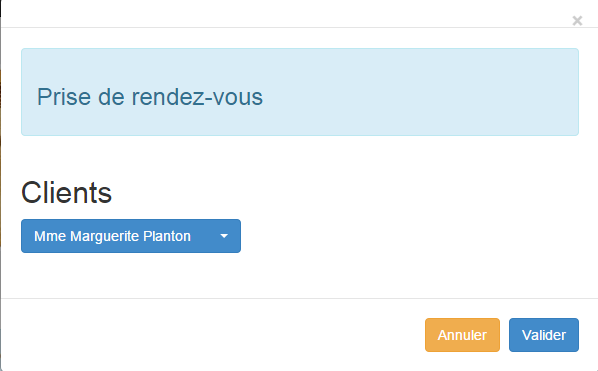 |
Beachten Sie, dass das modale Fenster standardmäßig nicht angezeigt wird. Deshalb ist es beim Start der Anwendung nicht zu sehen, obwohl der Code HTML im Dokument vorhanden ist.
Die Datei JS [bs-08.js] lautet wie folgt:
var idCreneau;
var idClient;
var resa;
function showDialogResa(idCreneau) {
// Die ID des Zeitfensters wird gespeichert
this.idCreneau = idCreneau;
// Anzeige des Buchungsdialogs
var resa = $("#resa");
resa.modal('show');
// Protokoll
showInfo("Réservation du créneau n° " + idCreneau);
}
function cancelDialogResa() {
// Das Dialogfeld wird ausgeblendet
resa.modal('hide');
}
// Buchung bestätigen
function validateResa() {
// Die Informationen werden abgerufen
var idClient = $('#idClient option:selected').val();
// Dialogfeld ausblenden
resa.modal('hide');
// Informationen
showInfo("Réservation du créneau n° " + idCreneau + " pour le client n° " + idClient)
}
function initResa() {
// Das Auswahlfeld für Kunden
$('#idClient').selectpicker();
// Modales Fenster
resa = $("#resa");
resa.modal({});
}
- Zeilen 30–36: die Initialisierungsfunktion für das Modalfenster;
- Zeile 32: Das Modalfenster enthält eine Dropdown-Liste, die initialisiert werden muss;
- Zeilen 34–35: Initialisierung des Modalfensters selbst;
- Zeilen 5–13: die Funktion JS, die dem Link [Réserver] zugeordnet ist;
- Zeile 7: Der Funktionsparameter wird in der globalen Variablen aus Zeile 1 gespeichert;
- Zeilen 9–10: Das Modalfenster wird sichtbar gemacht;
- Zeile 12: Eine Information wird im Informationsfeld protokolliert;
- Zeilen 15–18: Verarbeitung der Schaltfläche [Annuler]. Das modale Fenster wird lediglich ausgeblendet (Zeile 17);
- Zeilen 21–31: Die Funktion JS, die der Schaltfläche [Valider] zugeordnet ist;
- Zeile 23: Das Attribut [value] des ausgewählten Kunden wird abgerufen;
- Zeile 25: Das Dialogfeld wird ausgeblendet;
- Zeile 27: Die beiden Informationen werden protokolliert: Nummer des reservierten Zeitfensters und für welchen Kunden;
8.6.5. Schritt 2: Schreiben der Ansichten
Wir werden nun die vom Server [Web1] bereitgestellten Ansichten sowie deren Vorlagen beschreiben.
 |
8.6.5.1. Die Ansicht [navbar-start]
Sie zeigt die Navigationsleiste der Startseite an:

Der Code für [navbar-start.xml] lautet wie folgt:
<!DOCTYPE HTML>
<section xmlns:th="http://www.thymeleaf.org">
<div class="navbar navbar-inverse navbar-fixed-top" role="navigation">
<div class="container">
<div class="navbar-header">
<button type="button" class="navbar-toggle" data-toggle="collapse" data-target=".navbar-collapse">
<span class="sr-only">Toggle navigation</span>
<span class="icon-bar"></span>
<span class="icon-bar"></span>
<span class="icon-bar"></span>
</button>
<a class="navbar-brand" href="#">RdvMedecins</a>
</div>
<div class="navbar-collapse collapse">
<img id="loading" src="resources/images/loading.gif" alt="waiting..." style="display: none" />
<!-- Anmeldeformular -->
<div class="navbar-form navbar-right" role="form" id="formulaire">
<div class="form-group">
<input type="text" th:placeholder="#{service.url}" class="form-control" id="urlService" />
</div>
<div class="form-group">
<input type="text" th:placeholder="#{username}" class="form-control" id="login" />
</div>
<div class="form-group">
<input type="password" th:placeholder="#{password}" class="form-control" id="passwd" />
</div>
<button type="button" class="btn btn-success" th:text="#{login}" onclick="javascript:connecter()">Sign in</button>
<!-- Sprachen -->
<div class="btn-group">
<button type="button" class="btn btn-danger" th:text="#{langues}">Action</button>
<button type="button" class="btn btn-danger dropdown-toggle" data-toggle="dropdown">
<span class="caret"></span>
<span class="sr-only">Toggle Dropdown</span>
</button>
<ul class="dropdown-menu" role="menu">
<li>
<a href="javascript:setLang('fr')" th:text="#{langues.fr}" />
</li>
<li>
<a href="javascript:setLang('en')" th:text="#{langues.en}" />
</li>
</ul>
</div>
</div>
</div>
</div>
</div>
<!-- Startseite -->
<script th:inline="javascript">
/*<![CDATA[*/
// Seite wird initialisiert
initNavBarStart();
/*]]>*/
</script>
</section>
Diese Ansicht hat keine Vorlage. Sie verfügt über die folgenden Ereignisbehandler:
event | Handler |
Klick auf die Schaltfläche „Anmelden“ | |
Klick auf den Link [Français] | |
Klicken Sie auf den Link [English] |
8.6.5.2. Die Ansicht [jumbotron]
Dies ist die Ansicht, die unter der Navigationsleiste [navbar-start] auf der Startseite angezeigt wird:

Ihr Code [jumbotron.xml] lautet wie folgt:
<!DOCTYPE html>
<section xmlns="http://www.w3.org/1999/xhtml" xmlns:th="http://www.thymeleaf.org">
<!-- Bootstrap-Jumbotron -->
<div class="jumbotron">
<div class="row">
<div class="col-md-2">
<img src="resources/images/caduceus.jpg" alt="RvMedecins" />
</div>
<div class="col-md-10">
<h1 th:utext="#{application.header}" />
</div>
</div>
</div>
</section>
Die Ansicht [jumbotron] hat weder eine Vorlage noch Ereignisse.
8.6.5.3. Die Ansicht [login]
Dies ist die Ansicht, die auf der Startseite unter dem Jumbotron angezeigt wird:

Ihr Code [login.xml] lautet wie folgt:
<!DOCTYPE html>
<section xmlns="http://www.w3.org/1999/xhtml" xmlns:th="http://www.thymeleaf.org">
<div class="alert alert-info" th:text="#{identification}">Identification
</div>
</section>
Die Ansicht hat weder eine Vorlage noch Ereignisse.
8.6.5.4. Die Ansicht [navbar-run]
Dies ist die Navigationsleiste, die nach erfolgreicher Anmeldung angezeigt wird:

Ihr Code [navbar-run.xml] lautet wie folgt:
<!DOCTYPE HTML>
<section xmlns:th="http://www.thymeleaf.org">
<div class="navbar navbar-inverse navbar-fixed-top" role="navigation">
<div class="container">
<div class="navbar-header">
<button type="button" class="navbar-toggle" data-toggle="collapse" data-target=".navbar-collapse">
<span class="sr-only">Toggle navigation</span>
<span class="icon-bar"></span>
<span class="icon-bar"></span>
<span class="icon-bar"></span>
</button>
<a class="navbar-brand" href="#">RdvMedecins</a>
</div>
<div class="collapse navbar-collapse">
<img id="loading" src="resources/images/loading.gif" alt="waiting..." style="display: none" />
<!-- Schaltflächen auf der rechten Seite -->
<form class="navbar-form navbar-right" role="form">
<!-- Abmelden -->
<button type="button" class="btn btn-success" th:text="#{options.deconnecter}" onclick="javascript:deconnecter()">Déconnexion</button>
<!-- Sprachen -->
<div class="btn-group">
<button type="button" class="btn btn-danger" th:text="#{langues}">Langue</button>
<button type="button" class="btn btn-danger dropdown-toggle" data-toggle="dropdown">
<span class="caret"></span>
<span class="sr-only">Toggle Dropdown</span>
</button>
<ul class="dropdown-menu" role="menu">
<li>
<a href="javascript:setLang('fr')" th:text="#{langues.fr}" />
</li>
<li>
<a href="javascript:setLang('en')" th:text="#{langues.en}" />
</li>
</ul>
</div>
</form>
</div>
</div>
</div>
<!-- Seite initialisieren -->
<script th:inline="javascript">
/*<![CDATA[*/
// Seite wird initialisiert
initNavBarRun();
/*]]>*/
</script>
</section>
Diese Ansicht hat keine Vorlage. Sie verfügt über die folgenden Ereignisbehandler:
event | Handler |
Klick auf die Schaltfläche „Abmelden“ | |
Klick auf den Link [Français] | |
Klick auf den Link [English] |
8.6.5.5. Die Ansicht [accueil]
Dies ist die Ansicht, die unmittelbar unter der Navigationsleiste angezeigt wird: [navbar-run]:

Ihr Code [accueil.html] lautet wie folgt:
<!DOCTYPE html>
<html xmlns="http://www.w3.org/1999/xhtml" xmlns:th="http://www.thymeleaf.org">
<div class="alert alert-info" th:text="#{choixmedecinjour.title}">Veuillez choisir un médecin et une date</div>
<div class="row">
<div class="col-md-3">
<h2 th:text="#{rv.medecin}">Médecin</h2>
<select name="idMedecin" id="idMedecin" class="combobox" data-style="btn-primary">
<option th:each="medecinItem : ${rdvmedecins.medecinItems}" th:text="${medecinItem.texte}" th:value="${medecinItem.id}"/>
</select>
</div>
<div class="col-md-3">
<h2 th:text="#{rv.jour}">Date</h2>
<section id="calendar_container">
<div id="calendar" class="input-group date">
<input id="displayjour" type="text" class="form-control btn-primary" disabled="true">
<span class="input-group-addon">
<i class="glyphicon glyphicon-th"></i>
</span>
</input>
</div>
</section>
</div>
</div>
<!-- Kalender -->
<div id="agenda"></div>
<!-- Lokales Skript -->
<script th:inline="javascript">
/*<![CDATA[*/
// Die Seite wird initialisiert
initChoixMedecinJour();
/*]]>*/
</script>
</html>
Die Vorlage lautet wie folgt:
- [rdvmedecins.medecinItems] (Zeile 8): die Liste der Ärzte;
In ihrer aktuellen Form scheint die Ansicht keinen Ereignis-Handler zu haben. Tatsächlich sind diese jedoch in der Funktion [initChoixMedecinJour] definiert. Diese Funktion wurde in Abschnitt 8.6.4.7, Seite 467 und insbesondere auf Seite 470 vorgestellt. Dort finden sich die folgenden Ereignis-Handler:
Ereignis | Handler |
Auswahl eines Arztes | |
Auswahl eines Datums |
8.6.5.6. Die Ansicht [agenda]
Die Ansicht [agenda] zeigt einen Tag aus dem Terminkalender eines Arztes:
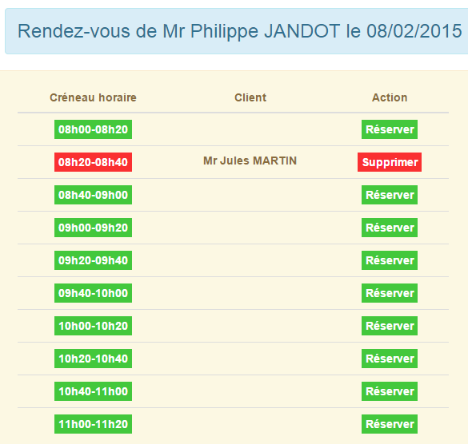
Ihr Code [agenda.xml] lautet wie folgt:
<!DOCTYPE HTML>
<html xmlns:th="http://www.thymeleaf.org">
<body>
<h3 class="alert alert-info" th:text="${agenda.titre}">Agenda de Mme Pélissier le 13/10/2014</h3>
<h4 class="alert alert-danger" th:if="${agenda.creneaux.length}==0" th:text="#{agenda.medecinsanscreneaux}">Ce médecin n'a pas encore de créneaux
de consultation</h4>
<th:block th:if="${agenda.creneaux.length}!=0">
<div class="row tab-content alert alert-warning">
<div class="tab-pane active col-md-6">
<table id="creneaux" class="table">
<thead>
<tr>
<th data-toggle="true">
<span th:text="#{agenda.creneauhoraire}">Créneau horaire</span>
</th>
<th>
<span th:text="#{agenda.client}">Client</span>
</th>
<th data-hide="phone">
<span th:text="#{agenda.action}">Action</span>
</th>
</tr>
</thead>
<tbody>
<tr th:each="creneau,iter : ${agenda.creneaux}">
<td>
<span th:if="${creneau.action}==1" class="status-metro status-active" th:text="${creneau.creneauHoraire}">Créneau horaire</span>
<span th:if="${creneau.action}==2" class="status-metro status-suspended" th:text="${creneau.creneauHoraire}">Créneau horaire</span>
</td>
<td>
<span th:text="${creneau.client}">Client</span>
</td>
<td>
<a th:if="${creneau.action}==1" th:href="@{'javascript:reserverCreneau('+${creneau.id}+')'}" th:text="${creneau.commande}"
class="status-metro status-active">Réserver
</a>
<a th:if="${creneau.action}==2" th:href="@{'javascript:supprimerRv('+${creneau.idRv}+')'}" th:text="${creneau.commande}"
class="status-metro status-suspended">Supprimer
</a>
</td>
</tr>
</tbody>
</table>
</div>
</div>
<!-- Reservierung -->
<section th:include="resa" />
</th:block>
<!-- Seite initialisieren -->
<script th:inline="javascript">
/*<![CDATA[*/
// Seite wird initialisiert
initAgenda();
/*]]>*/
</script>
</body>
</html>
Die Vorlage dieser Ansicht enthält nur ein Element:
- [agenda] (Zeile 4): ein etwas komplexes Template, das speziell für die Anzeige des Terminkalenders erstellt wurde;
Sie verfügt über folgende Ereignisbehandler:
Ereignis | Handler |
Klick auf die Schaltfläche [Supprimer] | |
Klick auf den Link [Réserver] |
Die Ansicht [resa] in Zeile 47 ist die Ansicht, die angezeigt wird, wenn der Benutzer auf einen Link [Réserver] klickt:

Ihr Code [resa.xml] lautet wie folgt:
<!DOCTYPE HTML>
<html xmlns:th="http://www.thymeleaf.org">
<body>
<div id="resa" class="modal fade">
<div class="modal-dialog">
<div class="modal-content">
<div class="modal-header">
<button type="button" class="close" data-dismiss="modal" aria-label="Close">
<span aria-hidden="true">
</span>
</button>
<!-- <h4 class="modal-title">Modal-Titel</h4> -->
</div>
<div class="modal-body">
<div class="alert alert-info">
<h3>
<span th:text="#{resa.titre}">Prise de rendez-vous</span>
</h3>
</div>
<div class="row">
<div class="col-md-3">
<h2 th:text="#{resa.client}">Client</h2>
<select name="idClient" id="idClient" class="combobox" data-style="btn-primary">
<option th:each="clientItem : ${clientItems}" th:text="${clientItem.texte}" th:value="${clientItem.id}" />
</select>
</div>
</div>
</div>
<div class="modal-footer">
<button type="button" class="btn btn-warning" onclick="javascript:cancelDialogResa()" th:text="#{resa.annuler}">Annuler</button>
<button type="button" class="btn btn-primary" onclick="javascript:validerRv()" th:text="#{resa.valider}">Valider</button>
</div>
</div><!-- /.modal-content -->
</div><!-- /.modal-dialog -->
</div><!-- /.modal -->
<!-- Seite initialisieren -->
<script th:inline="javascript">
/*<![CDATA[*/
// Seite wird initialisiert
initResa();
/*]]>*/
</script>
</body>
</html>
Sein Template enthält nur ein Element:
- [clientItems] (Zeile 24): die Kundenliste;
Sie verfügt über folgende Ereignisbehandler:
Ereignis | Handler |
Klick auf die Schaltfläche [Annuler] | |
Klick auf die Schaltfläche [Valider] |
8.6.5.7. Die Ansicht [erreurs]
Dies ist die Ansicht, die angezeigt wird, wenn die vom Benutzer angeforderte Aktion nicht ausgeführt werden konnte:

Der Code [erreurs.xml] lautet wie folgt:
<!DOCTYPE HTML>
<section xmlns:th="http://www.thymeleaf.org">
<div class="alert alert-danger">
<h4>
<span th:text="#{erreurs.titre}">Les erreurs suivantes se sont produites :</span>
</h4>
<ul>
<li th:each="message : ${erreurs}" th:text="${message}" />
</ul>
</div>
</section>
Die Vorlage enthält nur ein Element:
- [erreurs] (Zeile 8): die Liste der anzuzeigenden Fehler;
Die Ansicht verfügt über keinen Ereignishandler.
8.6.5.8. Résumé
Die folgende Tabelle fasst die Ansichten und ihre Vorlagen zusammen:
Ansicht | Modell | Ereignisbehandler |
navbar-start | ||
Jumbotron | ||
Anmelden | ||
navbar-run | ||
Startseite | ||
Kalender | ||
Reservierung | ||
Fehler |
8.6.6. Schritt 3: Schreiben der Aktionen
Kehren wir zur Architektur des Web-Service [Web1] zurück:
 |
Wir werden nun sehen, welche URL von [Web1] bereitgestellt werden und wie diese implementiert sind:
8.6.6.1. Die von dem Service [Web1] bereitgestellten URL
Es handelt sich um folgende:
- eine URL für jede der vorangegangenen Ansichten oder eine Zusammensetzung daraus;
- eine URL zum Hinzufügen einer RV;
- eine URL zum Löschen einer RV;
Sie alle geben eine Antwort vom Typ [Reponse] wie folgt zurück:
public class Reponse {
// ----------------- Eigenschaften
// Status des Vorgangs
private int status;
// die Navigationsleiste
private String navbar;
// das Jumbotron
private String jumbotron;
// der Hauptteil der Seite
private String content;
// der Kalender
private String agenda;
...
}
- Zeile 5: Status der Antwort: 1 (OK), 2 (Fehler);
- Zeile 7: der Datenstrom HTML der Ansichten [navbar-start] oder [navbar-run], je nach Fall;
- Zeile 9: der Datenstrom HTML der Ansicht [jumbotron];
- Zeile 13: der Datenstrom HTML aus der Ansicht [agenda];
- Zeile 9: der Datenstrom HTML aus den Ansichten [accueil], [erreurs], [login], je nach Fall;
Die dargestellten URL lauten wie folgt
fügt die Ansicht [navbar-start] in [Reponse.navbar] ein | |
fügt die Ansicht [navbar-run] in [Reponse.navbar] ein | |
legt die Ansicht [accueil] in [Reponse.content] ab | |
legt die Ansicht [jumbotron] in [Reponse.jumbotron] ab | |
legt die Ansicht [agenda] in [Reponse.agenda] ab | |
legt die Ansicht [login] in [Reponse.content] ab | |
| |
verschiebt die Ansicht [navbar-run] in [Reponse.navbar], die Ansicht [jumbotron] in [Reponse.jumbotron], die Ansicht [accueil] in [Reponse.content], die Ansicht [agenda] in [Reponse.agenda] | |
fügt den ausgewählten Termin hinzu und speichert den neuen Kalender in [Reponse.agenda] | |
löscht den ausgewählten Termin und speichert den neuen Kalender in [Reponse.agenda] |
8.6.6.2. Das Singleton [ApplicationModel]
 |
Die Klasse [ApplicationModel] wird als einzelne Instanz instanziiert und in den Controller der Anwendung injiziert. Ihr Code lautet wie folgt:
package rdvmedecins.springthymeleaf.server.models;
import java.util.ArrayList;
...
@Component
public class ApplicationModel implements IDao {
....
}
- Zeile 6: [ApplicationModel] ist eine Spring-Komponente;
- Zeile 7: die die Schnittstelle der Schicht [DAO] implementiert. Wir tun dies, damit die Aktionen die Schicht [DAO] nicht kennen müssen, sondern nur das Singleton [ApplicationModel]. Die Architektur von [Web1] sieht dann wie folgt aus:
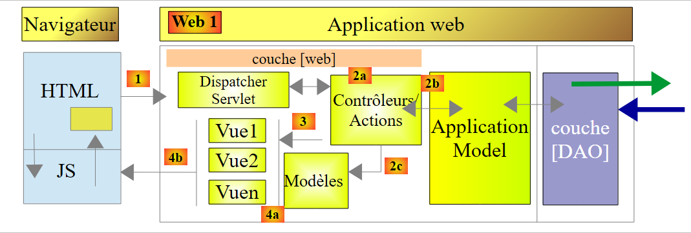 |
Kehren wir zum Code der Klasse [ApplicationModel] zurück:
package rdvmedecins.springthymeleaf.server.models;
import java.util.ArrayList;
...
@Component
public class ApplicationModel implements IDao {
// die Ebene [DAO]
@Autowired
private IDao dao;
// die Konfiguration
@Autowired
private AppConfig appConfig;
// Daten aus der Schicht [DAO]
private List<ClientItem> clientItems;
private List<MedecinItem> medecinItems;
// Konfigurationsdaten
private String userInit;
private String mdpUserInit;
private boolean corsAllowed;
// Ausnahme
private RdvMedecinsException rdvMedecinsException;
// Hersteller
public ApplicationModel() {
}
@PostConstruct
public void init() {
// Konfiguration
userInit = appConfig.getUSER_INIT();
mdpUserInit = appConfig.getMDP_USER_INIT();
dao.setTimeout(appConfig.getTIMEOUT());
dao.setUrlServiceWebJson(appConfig.getWEBJSON_ROOT());
corsAllowed = appConfig.isCORS_ALLOWED();
// Die Dropdown-Listen für Ärzte und Kunden werden zwischengespeichert
List<Medecin> medecins = null;
List<Client> clients = null;
try {
medecins = dao.getAllMedecins(new User(userInit, mdpUserInit));
clients = dao.getAllClients(new User(userInit, mdpUserInit));
} catch (RdvMedecinsException ex) {
rdvMedecinsException = ex;
}
if (rdvMedecinsException == null) {
// Die Elemente der Dropdown-Listen werden erstellt
medecinItems = new ArrayList<MedecinItem>();
for (Medecin médecin : medecins) {
medecinItems.add(new MedecinItem(médecin));
}
clientItems = new ArrayList<ClientItem>();
for (Client client : clients) {
clientItems.add(new ClientItem(client));
}
}
}
// Getter und Setter
...
// Implementierung der Schnittstelle [IDao]
@Override
public void setUrlServiceWebJson(String url) {
dao.setUrlServiceWebJson(url);
}
@Override
public void setTimeout(int timeout) {
dao.setTimeout(timeout);
}
@Override
public Rv ajouterRv(User user, String jour, long idCreneau, long idClient) {
return dao.ajouterRv(user, jour, idCreneau, idClient);
}
...
}
- Zeile 11: Einfügen der Referenz der Implementierung der Schicht [DAO]. Diese Referenz wird anschließend zur Implementierung der Schnittstelle [IDao] verwendet (Zeilen 64–80);
- Zeile 14: Einbindung der Anwendungskonfiguration;
- Zeilen 33–37: Verwendung dieser Konfiguration zur Konfiguration verschiedener Elemente der Anwendungsarchitektur;
- Zeilen 38–46: Die Informationen, die in die Dropdown-Listen für Ärzte und Kunden einfließen, werden zwischengespeichert. Wir gehen also davon aus, dass die Anwendung neu gestartet werden muss, wenn sich ein Arzt oder ein Kunde ändert. Damit soll gezeigt werden, dass ein Spring-Singleton als Cache für die Webanwendung dienen kann;
Die Klassen [MedecinItem] und [ClientItem] leiten sich beide von der folgenden Klasse [PersonneItem] ab:
package rdvmedecins.springthymeleaf.server.models;
import rdvmedecins.client.entities.Personne;
public class PersonneItem {
// Element einer Liste
private Long id;
private String texte;
// Konstruktor
public PersonneItem() {
}
public PersonneItem(Personne personne) {
id = personne.getId();
texte = String.format("%s %s %s", personne.getTitre(), personne.getPrenom(), personne.getNom());
}
// Getter und Setter
...
}
- Zeile 8: Das Feld [id] ist der Wert des Attributs [value] einer Option der Dropdown-Liste;
- Zeile 9: Das Feld [texte] enthält den Text, der für eine Option der Dropdown-Liste angezeigt wird;
8.6.6.3. Die Klasse [BaseController]
 |
Die Klasse [BaseController] ist die übergeordnete Klasse der Controller [RdvMedecinsController] und [RdvMedecinsCorsController]. Es war nicht zwingend erforderlich, diese übergeordnete Klasse anzulegen. Darin wurden Hilfsmethoden der Klasse [RdvMedecinsController] zusammengefasst, die bis auf eine Ausnahme nicht grundlegend sind. Man kann sie in drei Gruppen einteilen:
- Hilfsmethoden;
- Methoden, die die Ansichten mit ihren Modellen zusammenführen;
- die Methode zur Initialisierung einer Aktion
| zwei Hilfsmethoden, die eine Liste von Fehlermeldungen bereitstellen. Wir sind ihnen bereits begegnet und haben sie bereits verwendet; |
| ruft die Ansicht [accueil] ohne Vorlage auf |
| gibt die Ansicht [agenda] und ihre Vorlage zurück |
| gibt die Ansicht [login] ohne Vorlage zurück |
| liefert die Antwort an den Kunden, wenn die angeforderte Aktion mit einem Fehler beendet wurde |
| Die Initialisierungsmethode für alle Aktionen des Controllers [RdvMedecinsController] |
Betrachten wir zwei dieser Methoden.
Die Methode [getPartialViewAgenda] ist für die Erstellung der komplexesten Ansicht zuständig, nämlich die des Kalenders. Ihr Code lautet wie folgt:
// Datenstrom [agenda]
protected String getPartialViewAgenda(ActionContext actionContext, AgendaMedecinJour agenda, Locale locale) {
// Kontexte
WebContext thymeleafContext = actionContext.getThymeleafContext();
WebApplicationContext springContext = actionContext.getSpringContext();
// Das Seitenmodell wird erstellt [agenda]
ViewModelAgenda modelAgenda = setModelforAgenda(agenda, springContext, locale);
// der Kalender mit seiner Vorlage
thymeleafContext.setVariable("agenda", modelAgenda);
thymeleafContext.setVariable("clientItems", application.getClientItems());
return engine.process("agenda", thymeleafContext);
}
- Zeilen 9–10: die beiden Elemente des Kalendermodells:
- Zeile 9: der angezeigte Kalender.
- Zeile 10: die Kundenliste, die angezeigt wird, wenn der Benutzer einen Termin vereinbart;
Die Methode [setModelforAgenda] in Zeile 7 lautet wie folgt:
// Seitenvorlage [Agenda]
private ViewModelAgenda setModelforAgenda(AgendaMedecinJour agenda, WebApplicationContext springContext, Locale locale) {
// Der Titel der Seite
String dateFormat = springContext.getMessage("date.format", null, locale);
Medecin médecin = agenda.getMedecin();
String titre = springContext.getMessage("agenda.titre", new String[] { médecin.getTitre(), médecin.getPrenom(),
médecin.getNom(), new SimpleDateFormat(dateFormat).format(agenda.getJour()) }, locale);
// die Terminfenster
ViewModelCreneau[] modelCréneaux = new ViewModelCreneau[agenda.getCreneauxMedecinJour().length];
int i = 0;
for (CreneauMedecinJour creneauMedecinJour : agenda.getCreneauxMedecinJour()) {
// Termin des Arztes
Creneau créneau = creneauMedecinJour.getCreneau();
ViewModelCreneau modelCréneau = new ViewModelCreneau();
modelCréneaux[i] = modelCréneau;
// ID
modelCréneau.setId(créneau.getId());
// Terminfenster
modelCréneau.setCreneauHoraire(String.format("%02dh%02d-%02dh%02d", créneau.getHdebut(), créneau.getMdebut(),
créneau.getHfin(), créneau.getMfin()));
Rv rv = creneauMedecinJour.getRv();
// Kunde und Auftrag
String commande;
if (rv == null) {
modelCréneau.setClient("");
commande = springContext.getMessage("agenda.reserver", null, locale);
modelCréneau.setCommande(commande);
modelCréneau.setAction(ViewModelCreneau.ACTION_RESERVER);
} else {
Client client = rv.getClient();
modelCréneau.setClient(String.format("%s %s %s", client.getTitre(), client.getPrenom(), client.getNom()));
commande = springContext.getMessage("agenda.supprimer", null, locale);
modelCréneau.setCommande(commande);
modelCréneau.setIdRv(rv.getId());
modelCréneau.setAction(ViewModelCreneau.ACTION_SUPPRIMER);
}
// nächster Termin
i++;
}
// Terminplanvorlage zurückgeben
ViewModelAgenda modelAgenda = new ViewModelAgenda();
modelAgenda.setTitre(titre);
modelAgenda.setCreneaux(modelCréneaux);
return modelAgenda;
}
- Zeile 6: Der Terminkalender hat einen Titel:

oder:

Man sieht, dass das Datumsformat von der Sprache abhängt. Dieses Format wird aus den Meldungsdateien abgerufen (Zeile 4).
- Zeilen 11–40: Für jeden Zeitblock muss die Ansicht angezeigt werden:

oder die Ansicht:

- Zeilen 19–20: Zeigen den Zeitblock an;
- Zeilen 25–28: Der Fall, dass das Zeitfenster frei ist. In diesem Fall muss die Schaltfläche [Réserver] angezeigt werden;
- Zeilen 31–36: der Fall, dass das Zeitfenster belegt ist. In diesem Fall müssen sowohl der Kunde als auch die Schaltfläche [Supprimer] angezeigt werden;
Die andere Methode, auf die wir näher eingehen, ist die Methode [getActionContext]. Sie wird zu Beginn jeder Aktion von [RdvMedecinsController] aufgerufen. Ihre Signatur lautet wie folgt:
protected ActionContext getActionContext(String lang, String origin, HttpServletRequest request,HttpServletResponse response, BindingResult result, RdvMedecinsCorsController rdvMedecinsCorsController)
Sie gibt den folgenden Typ „[ActionContext]“ zurück:
public class ActionContext {
// Datum
private WebContext thymeleafContext;
private WebApplicationContext springContext;
private Locale locale;
private List<String> erreurs;
...
}
- Zeile 4: der Thymeleaf-Kontext der Aktion;
- Zeile 5: der Spring-Kontext der Aktion;
- Zeile 6: die Locale der Aktion;
- Zeile 7: eine eventuelle Liste von Fehlermeldungen;
Die Parameter lauten wie folgt:
- [lang]: die für die Aktion angeforderte Sprache „en“ oder „fr“;
- [origin]: der Header HTTP [origin] im Falle eines domänenübergreifenden Aufrufs;
- [request]: die gerade bearbeitete Anfrage HTTP, die seit einiger Zeit als Aktion bezeichnet wird;
- [response]: die Antwort, die auf diese Anfrage gegeben wird;
- [result]: Jede Aktion von [RdvMedecinsController] erhält einen übermittelten Wert, dessen Gültigkeit geprüft wird. [result] ist das Ergebnis dieser Prüfung;
- [rdvMedecinsController]: der Container-Controller für die Aktionen;
Die Methode [getActionContext] ist wie folgt implementiert:
// Kontext einer Aktion
protected ActionContext getActionContext(String lang, String origin, HttpServletRequest request,HttpServletResponse response, BindingResult result, RdvMedecinsCorsController rdvMedecinsCorsController) {
// Sprache?
if (lang == null) {
lang = "fr";
}
// Ländereinstellung
Locale locale = null;
if (lang.trim().toLowerCase().equals("fr")) {
// Französisch
locale = new Locale("fr", "FR");
} else {
// alles andere auf Englisch
locale = new Locale("en", "US");
}
// Kopfzeilen CORS
rdvMedecinsCorsController.sendOptions(origin, response);
// ActionContext
ActionContext actionContext = new ActionContext(new WebContext(request, response, request.getServletContext(),locale), WebApplicationContextUtils.getWebApplicationContext(request.getServletContext()), locale, null);
// Initialisierungsfehler
RdvMedecinsException e = application.getRdvMedecinsException();
if (e != null) {
actionContext.setErreurs(e.getMessages());
return actionContext;
}
// Fehler bei POST?
if (result != null && result.hasErrors()) {
actionContext.setErreurs(getErreursForModel(result, locale, actionContext.getSpringContext()));
return actionContext;
}
// keine Fehler
return actionContext;
}
- Zeilen 3–15: Anhand des Parameters [lang] wird die Ländereinstellung der Aktion festgelegt;
- Zeile 17: Es werden die für domänenübergreifende Anfragen erforderlichen HTTP-Header gesendet. Wir gehen hier nicht näher darauf ein. Es wird die in Abschnitt 8.4.14 beschriebene Technik verwendet;
- Zeile 19: Fehlerfreie Erstellung eines Objekts [ActionContext];
- Zeile 21: In Abschnitt 8.6.6.2 haben wir gesehen, dass das Singleton [ApplicationModel] auf die Datenbank zugreift, um sowohl die Patienten als auch die Ärzte abzurufen. Dieser Zugriff kann fehlschlagen. In diesem Fall wird die auftretende Ausnahme gespeichert. In Zeile 21 fangen wir diese Ausnahme ab;
- Zeilen 22–25: Wenn beim Start der Anwendung eine Ausnahme aufgetreten ist, sind keine Aktionen möglich. Wir geben daher für jede Aktion ein Objekt [ActionContext] mit den Fehlermeldungen der Ausnahme zurück;
- Zeile 27–20: Der Parameter [result] wird analysiert, um festzustellen, ob der übermittelte Wert gültig war oder nicht. War er ungültig, wird ein Objekt [ActionContext] mit den entsprechenden Fehlermeldungen zurückgegeben;
- Zeile 32: Fall ohne Fehler;
Wir betrachten nun die Aktionen des Controllers [RdvMedecinsController]
8.6.6.4. Die Aktion [/getNavBarStart]
Die Aktion [/getNavBarStart] gibt die Ansicht [navbar-start] zurück. Ihre Signatur lautet wie folgt:
@RequestMapping(value = "/getNavbarStart", method = RequestMethod.POST)
@ResponseBody
public Reponse getNavbarStart(@Valid @RequestBody PostLang postLang, BindingResult result, HttpServletRequest request, HttpServletResponse response,
@RequestHeader(value = "Origin", required = false) String origin)
Sie gibt den folgenden Typ [Reponse] zurück:
public class Reponse {
// ----------------- Eigenschaften
// Status des Vorgangs
private int status;
// die Navigationsleiste
private String navbar;
// das Jumbotron
private String jumbotron;
// der Seiteninhalt
private String content;
// der Kalender
private String agenda;
...
}
und hat folgende Parameter:
- [PostLang postlang]: den folgenden übermittelten Wert:
public class PostLang {
// Daten
@NotNull
private String lang;
...
}
Die Klasse [PostLang] ist die übergeordnete Klasse aller gebuchten Werte. Der Kunde muss nämlich immer die Sprache angeben, in der die Aktion ausgeführt werden soll.
Die Methode [getNavbarStart] ist wie folgt implementiert:
// Navigationsleiste-Start
@RequestMapping(value = "/getNavbarStart", method = RequestMethod.POST)
@ResponseBody
public Reponse getNavbarStart(@Valid @RequestBody PostLang postLang, BindingResult result, HttpServletRequest request, HttpServletResponse response,
@RequestHeader(value = "Origin", required = false) String origin) {
// Aktionskontexte
ActionContext actionContext = getActionContext(postLang.getLang(), origin, request, response, result,rdvMedecinsCorsController);
WebContext thymeleafContext = actionContext.getThymeleafContext();
// Fehler?
List<String> erreurs = actionContext.getErreurs();
if (erreurs != null) {
return getViewErreurs(thymeleafContext, erreurs);
}
// Die Ansicht wird zurückgegeben: [navbar-start]
Reponse reponse = new Reponse();
reponse.setStatus(1);
reponse.setNavbar(engine.process("navbar-start", thymeleafContext));
return reponse;
}
- Zeile 7: Initialisierung der Aktion;
- Zeilen 10–13: Wenn die Initialisierungsmethode der Aktion Fehler gemeldet hat, werden diese in der Antwort an den Kunden (Zeile 12) mit dem Status 2 gesendet:
- Zeilen 15–18: Die Ansicht [navbar-start] wird mit Status 1 gesendet:
Im Folgenden gehen wir nur auf die Neuerungen ein.
8.6.6.5. Die Aktion [/getNavbarRun]
Die Aktion [/getNavBarRun] gibt die Ansicht [navbar-run] zurück:
// Navbar-Ausführung
@RequestMapping(value = "/getNavbarRun", method = RequestMethod.POST)
@ResponseBody
public Reponse getNavbarRun(@Valid @RequestBody PostLang postLang, BindingResult result, HttpServletRequest request,
HttpServletResponse response, @RequestHeader(value = "Origin", required = false) String origin) {
// Kontexte der Aktion
ActionContext actionContext = getActionContext(postLang.getLang(), origin, request, response, result,rdvMedecinsCorsController);
WebContext thymeleafContext = actionContext.getThymeleafContext();
// Fehler?
List<String> erreurs = actionContext.getErreurs();
if (erreurs != null) {
return getViewErreurs(thymeleafContext, erreurs);
}
// Die Ansicht [navbar-run] wird zurückgegeben
Reponse reponse = new Reponse();
reponse.setStatus(1);
reponse.setNavbar(engine.process("navbar-run", thymeleafContext));
return reponse;
}
Die Aktion kann zwei Arten von Antworten zurückgeben:
- die Antwort mit Fehler (Zeilen 10–13):
- die Antwort mit der Ansicht [navbar-run]:
8.6.6.6. Die Aktion [/getJumbotron]
Die Aktion [/getJumbotron] liefert die Ansicht [jumbotron]:
// Jumbotron
@RequestMapping(value = "/getJumbotron", method = RequestMethod.POST)
@ResponseBody
public Reponse getJumbotron(@Valid @RequestBody PostLang postLang, BindingResult result, HttpServletRequest request,
HttpServletResponse response, @RequestHeader(value = "Origin", required = false) String origin) {
// Kontexte der Aktion
ActionContext actionContext = getActionContext(postLang.getLang(), origin, request, response, result,rdvMedecinsCorsController);
WebContext thymeleafContext = actionContext.getThymeleafContext();
// Fehler?
List<String> erreurs = actionContext.getErreurs();
if (erreurs != null) {
return getViewErreurs(thymeleafContext, erreurs);
}
// Die Ansicht [jumbotron] wird zurückgegeben
Reponse reponse = new Reponse();
reponse.setStatus(1);
reponse.setJumbotron(engine.process("jumbotron", thymeleafContext));
return reponse;
}
Die Aktion kann zwei Arten von Antworten zurückgeben:
- die Antwort mit Fehler (Zeilen 10–13):
- die Antwort mit der Ansicht [jumbotron]:
8.6.6.7. Die Aktion [/getLogin]
Die Aktion [/getLogin] liefert die Ansicht [login]:
@RequestMapping(value = "/getLogin", method = RequestMethod.POST)
@ResponseBody
public Reponse getLogin(@Valid @RequestBody PostLang postLang, BindingResult result, HttpServletRequest request,
HttpServletResponse response, @RequestHeader(value = "Origin", required = false) String origin) {
// Kontexte der Aktion
ActionContext actionContext = getActionContext(postLang.getLang(), origin, request, response, result,rdvMedecinsCorsController);
WebContext thymeleafContext = actionContext.getThymeleafContext();
// Fehler?
List<String> erreurs = actionContext.getErreurs();
if (erreurs != null) {
return getViewErreurs(thymeleafContext, erreurs);
}
// Die Ansicht [login] wird zurückgegeben
Reponse reponse = new Reponse();
reponse.setStatus(1);
reponse.setJumbotron(engine.process("jumbotron", thymeleafContext));
reponse.setNavbar(engine.process("navbar-start", thymeleafContext));
reponse.setContent(getPartialViewLogin(thymeleafContext));
return reponse;
}
Die Aktion kann zwei Arten von Antworten zurückgeben:
- die Antwort mit Fehler (Zeilen 9–11):
- die Antwort mit der Ansicht [login]:
8.6.6.8. Die Aktion [/getAccueil]
Die Aktion [/getAccueil] liefert die Ansicht [accueil]. Ihre Signatur lautet wie folgt:
@RequestMapping(value = "/getAccueil", method = RequestMethod.POST)
@ResponseBody
public Reponse getAccueil(@Valid @RequestBody PostUser postUser, BindingResult result, HttpServletRequest request,HttpServletResponse response, @RequestHeader(value = "Origin", required = false) String origin)
- In Zeile 3 ist der übermittelte Wert vom Typ [PostUser] wie folgt:
public class PostUser extends PostLang {
// Daten
@NotNull
private User user;
...
}
- Zeile 1: Die Klasse [PostUser] erweitert die Klasse [PostLang] und enthält somit eine Sprache;
- Zeile 4: Der Benutzer, der die Ansicht abrufen möchte;
Der Implementierungscode lautet wie folgt:
@RequestMapping(value = "/getAccueil", method = RequestMethod.POST)
@ResponseBody
public Reponse getAccueil(@Valid @RequestBody PostUser postUser, BindingResult result, HttpServletRequest request,
HttpServletResponse response, @RequestHeader(value = "Origin", required = false) String origin) {
// Kontexte der Aktion
ActionContext actionContext = getActionContext(postUser.getLang(), origin, request, response, result,rdvMedecinsCorsController);
WebContext thymeleafContext = actionContext.getThymeleafContext();
// Fehler?
List<String> erreurs = actionContext.getErreurs();
if (erreurs != null) {
return getViewErreurs(thymeleafContext, erreurs);
}
// Die Ansicht [accueil] ist geschützt
try{
// Benutzer
User user = postUser.getUser();
// Anmeldedaten werden überprüft [userName, password]
application.authenticate(user);
}catch(RdvMedecinsException e){
// Es wird ein Fehler zurückgegeben
return getViewErreurs(thymeleafContext, e.getMessages());
}
// Die Ansicht [accueil] wird zurückgegeben
Reponse reponse = new Reponse();
reponse.setStatus(1);
reponse.setContent(getPartialViewAccueil(thymeleafContext));
return reponse;
}
- Zeilen 15–22: Es ist zu beachten, dass die Seite [accueil] geschützt ist und der Benutzer daher authentifiziert sein muss;
Die Aktion kann zwei Arten von Antworten zurückgeben:
- die Fehlerantwort (Zeilen 11 und 21):
- die Antwort mit der Ansicht [accueil] (Zeilen 24–27):
8.6.6.9. Die Aktion [/getNavbarRunJumbotronAccueil]
Die Aktion [/getNavbarRunJumbotronAccueil] liefert die Ansichten [navbar-run, jumbotron, accueil]. Sie hat folgende Signatur:
@RequestMapping(value = "/getNavbarRunJumbotronAccueil", method = RequestMethod.POST, consumes = "application/json; charset=UTF-8")
@ResponseBody
public Reponse getNavbarRunJumbotronAccueil(@Valid @RequestBody PostUser post, BindingResult result, HttpServletRequest request, HttpServletResponse response,
@RequestHeader(value = "Origin", required = false) String origin)
- Zeile 3: Der übermittelte Wert ist vom Typ [PostUser];
Die Implementierung der Aktion lautet wie folgt:
// Navigationsleiste + Jumbotron + Startseite
@RequestMapping(value = "/getNavbarRunJumbotronAccueil", method = RequestMethod.POST, consumes = "application/json; charset=UTF-8")
@ResponseBody
public Reponse getNavbarRunJumbotronAccueil(@Valid @RequestBody PostUser postUser, BindingResult result, HttpServletRequest request, HttpServletResponse response,
@RequestHeader(value = "Origin", required = false) String origin) {
// Aktionskontexte
ActionContext actionContext = getActionContext(postUser.getLang(), origin, request, response, result,
rdvMedecinsCorsController);
WebContext thymeleafContext = actionContext.getThymeleafContext();
// Fehler?
List<String> erreurs = actionContext.getErreurs();
if (erreurs != null) {
return getViewErreurs(thymeleafContext, erreurs);
}
// Die Ansicht [accueil] ist geschützt
try {
// Benutzer
User user = postUser.getUser();
// Anmeldedaten werden überprüft [userName, password]
application.authenticate(user);
} catch (RdvMedecinsException e) {
// Es wird ein Fehler zurückgegeben
return getViewErreurs(thymeleafContext, e.getMessages());
}
// die Antwort wird gesendet
Reponse reponse = new Reponse();
reponse.setStatus(1);
reponse.setNavbar(engine.process("navbar-run", thymeleafContext));
reponse.setJumbotron(engine.process("jumbotron", thymeleafContext));
reponse.setContent(getPartialViewAccueil(thymeleafContext));
return reponse;
}
Die Aktion kann zwei Arten von Antworten zurückgeben:
- die Fehlerantwort (Zeilen 13, 23):
- Die Antwort mit den Ansichten [navbar-run, jumbotron, accueil] (Zeilen 26–31):
8.6.6.10. Die Aktion [/getAgenda]
Die Aktion [/getAgenda] gibt die Ansicht [agenda] zurück. Ihre Signatur lautet wie folgt:
@RequestMapping(value = "/getAgenda", method = RequestMethod.POST, consumes = "application/json; charset=UTF-8")
@ResponseBody
public Reponse getAgenda(@RequestBody @Valid PostGetAgenda postGetAgenda, BindingResult result, HttpServletRequest request, HttpServletResponse response,
@RequestHeader(value = "Origin", required = false) String origin)
- Zeile 3: Der übermittelte Wert ist vom Typ [PostGetAgenda] wie folgt:
public class PostGetAgenda extends PostUser {
// Daten
@NotNull
private Long idMedecin;
@NotNull
@DateTimeFormat(pattern = "yyyy-MM-dd")
private Date jour;
...
}
- Zeile 1: Die Klasse [PostGetAgenda] erweitert die Klasse [PostUser] und enthält daher eine Sprache und einen Benutzer;
- Zeile 5: Die Nummer des Arztes, dessen Terminkalender gewünscht wird;
- Zeile 8: der gewünschte Tag des Terminkalenders;
Die Implementierung sieht wie folgt aus:
@RequestMapping(value = "/getAgenda", method = RequestMethod.POST, consumes = "application/json; charset=UTF-8")
@ResponseBody
public Reponse getAgenda(@RequestBody @Valid PostGetAgenda postGetAgenda, BindingResult result, HttpServletRequest request, HttpServletResponse response,
@RequestHeader(value = "Origin", required = false) String origin) {
// Aktionskontexte
ActionContext actionContext = getActionContext(postGetAgenda.getLang(), origin, request, response, result, rdvMedecinsCorsController);
WebContext thymeleafContext = actionContext.getThymeleafContext();
WebApplicationContext springContext = actionContext.getSpringContext();
Locale locale = actionContext.getLocale();
// Fehler?
List<String> erreurs = actionContext.getErreurs();
if (erreurs != null) {
return getViewErreurs(thymeleafContext, erreurs);
}
// Die Gültigkeit des POST-Aufrufs wird überprüft
if (result != null) {
new PostGetAgendaValidator().validate(postGetAgenda, result);
if (result.hasErrors()) {
// die Ansicht wird zurückgegeben [erreurs]
return getViewErreurs(thymeleafContext, getErreursForModel(result, locale, springContext));
}
}
...
}
- Bis Zeile 14 handelt es sich um einen mittlerweile klassischen Code;
- Zeilen 16–21: Es wird eine zusätzliche Überprüfung des übermittelten Werts durchgeführt. Das Datum muss größer oder gleich dem heutigen Datum sein. Zur Überprüfung wird ein Validator verwendet:
package rdvmedecins.web.validators;
import java.text.SimpleDateFormat;
import java.util.Date;
import org.springframework.validation.Errors;
import org.springframework.validation.Validator;
import rdvmedecins.springthymeleaf.server.requests.PostGetAgenda;
import rdvmedecins.springthymeleaf.server.requests.PostValiderRv;
public class PostGetAgendaValidator implements Validator {
public PostGetAgendaValidator() {
}
@Override
public boolean supports(Class<?> classe) {
return PostGetAgenda.class.equals(classe) || PostValiderRv.class.equals(classe);
}
@Override
public void validate(Object post, Errors errors) {
// Der für den Termin ausgewählte Tag
Date jour = null;
if (post instanceof PostGetAgenda) {
jour = ((PostGetAgenda) post).getJour();
} else {
if (post instanceof PostValiderRv) {
jour = ((PostValiderRv) post).getJour();
}
}
// Die Datumsangaben werden in das Format yyyy-MM-dd umgewandelt
SimpleDateFormat sdf = new SimpleDateFormat("yyyy-MM-dd");
String strJour = sdf.format(jour);
String strToday = sdf.format(new Date());
// Der ausgewählte Tag darf nicht vor dem heutigen Datum liegen
if (strJour.compareTo(strToday) < 0) {
errors.rejectValue("jour", "todayandafter.postChoixMedecinJour", null, null);
}
}
}
- Zeile 19: Der Validator arbeitet für zwei Klassen: [PostGetAgenda] und [PostValiderRv];
Kehren wir zum Code der Aktion [/getAgenda] zurück:
@RequestMapping(value = "/getAgenda", method = RequestMethod.POST, consumes = "application/json; charset=UTF-8")
@ResponseBody
public Reponse getAgenda(@RequestBody @Valid PostGetAgenda postGetAgenda, BindingResult result, HttpServletRequest request, HttpServletResponse response,
@RequestHeader(value = "Origin", required = false) String origin) {
...
// Aktion
try {
// Terminkalender des Arztes
AgendaMedecinJour agenda = application.getAgendaMedecinJour(postGetAgenda.getUser(), postGetAgenda.getIdMedecin(),
new SimpleDateFormat("yyyy-MM-dd").format(postGetAgenda.getJour()));
// Antwort
Reponse reponse = new Reponse();
reponse.setStatus(1);
reponse.setAgenda(getPartialViewAgenda(actionContext, agenda, locale));
return reponse;
} catch (RdvMedecinsException e1) {
// Die Ansicht [erreurs] wird zurückgegeben
return getViewErreurs(thymeleafContext, e1.getMessages());
} catch (Exception e2) {
// Die Ansicht [erreurs] wird zurückgegeben
return getViewErreurs(thymeleafContext, getErreursForException(e2));
}
}
- Zeilen 9–10: Mit den übermittelten Parametern wird der Terminkalender des Arztes abgefragt;
- Zeilen 12–13: Der Terminkalender wird zurückgegeben:
- Zeilen 17, 21: Es wird eine Antwort mit Fehlern zurückgegeben:
8.6.6.11. Die Aktion [/getNavbarRunJumbotronAccueilAgenda]
Die Aktion [/getNavbarRunJumbotronAccueilAgenda] gibt die Ansichten [navbar-run, jumbotron, accueil, agenda] zurück. Ihre Implementierung lautet wie folgt:
@RequestMapping(value = "/getNavbarRunJumbotronAccueilAgenda", method = RequestMethod.POST, consumes = "application/json; charset=UTF-8")
@ResponseBody
public Reponse getNavbarRunJumbotronAccueilAgenda(@Valid @RequestBody PostGetAgenda post, BindingResult result,
HttpServletRequest request, HttpServletResponse response,
@RequestHeader(value = "Origin", required = false) String origin) {
// Kontexte der Aktion
ActionContext actionContext = getActionContext(post.getLang(), origin, request, response, result,rdvMedecinsCorsController);
WebContext thymeleafContext = actionContext.getThymeleafContext();
// Fehler?
List<String> erreurs = actionContext.getErreurs();
if (erreurs != null) {
return getViewErreurs(thymeleafContext, erreurs);
}
// Kalender
Reponse agenda = getAgenda(post, result, request, response, null);
if (agenda.getStatus() != 1) {
return agenda;
}
// Die Antwort wird gesendet
Reponse reponse = new Reponse();
reponse.setStatus(1);
reponse.setNavbar(engine.process("navbar-run", thymeleafContext));
reponse.setJumbotron(engine.process("jumbotron", thymeleafContext));
reponse.setContent(getPartialViewAccueil(thymeleafContext));
reponse.setAgenda(agenda.getAgenda());
return reponse;
}
- Zeilen 15–18: Die vorhandene Aktion [/getAgenda] wird aufgerufen. Anschließend wird die Aktion status der Antwort überprüft (Zeile 16). Wird ein Fehler festgestellt, wird der Vorgang abgebrochen und die Antwort zurückgegeben;
- Zeile 20: Die angeforderten Ansichten werden gesendet:
8.6.6.12. Die Aktion [/supprimerRv]
Die Aktion [/supprimerRv] ermöglicht das Löschen eines Termins. Ihre Signatur lautet wie folgt:
@RequestMapping(value = "/supprimerRv", method = RequestMethod.POST, consumes = "application/json; charset=UTF-8")
@ResponseBody
public Reponse supprimerRv(@Valid @RequestBody PostSupprimerRv postSupprimerRv, BindingResult result, HttpServletRequest request, HttpServletResponse response,
@RequestHeader(value = "Origin", required = false) String origin)
- Zeile 3: Der übermittelte Wert ist vom Typ [PostSupprimerRv] wie folgt:
public class PostSupprimerRv extends PostUser {
// Daten
@NotNull
private Long idRv;
..
}
- Zeile 1: Die Klasse [PostSupprimerRv] erweitert die Klasse [PostUser] und enthält daher eine Sprache und einen Benutzer;
- Zeile 5: Die Nummer des zu löschenden Termins;
Die Implementierung der Aktion lautet wie folgt:
@RequestMapping(value = "/supprimerRv", method = RequestMethod.POST, consumes = "application/json; charset=UTF-8")
@ResponseBody
public Reponse supprimerRv(@Valid @RequestBody PostSupprimerRv postSupprimerRv, BindingResult result, HttpServletRequest request, HttpServletResponse response,
@RequestHeader(value = "Origin", required = false) String origin) {
// Aktionskontexte
ActionContext actionContext = getActionContext(postSupprimerRv.getLang(), origin, request, response, result,
rdvMedecinsCorsController);
WebContext thymeleafContext = actionContext.getThymeleafContext();
Locale locale = actionContext.getLocale();
// Fehler?
List<String> erreurs = actionContext.getErreurs();
if (erreurs != null) {
return getViewErreurs(thymeleafContext, erreurs);
}
// übermittelte Werte
User user = postSupprimerRv.getUser();
long idRv = postSupprimerRv.getIdRv();
// Termin wird gelöscht
AgendaMedecinJour agenda = null;
try {
// man stellt ihn wieder her
Rv rv = application.getRvById(user, idRv);
Creneau creneau = application.getCreneauById(user, rv.getIdCreneau());
long idMedecin = creneau.getIdMedecin();
Date jour = rv.getJour();
// Der zugehörige Termin wird gelöscht
application.supprimerRv(user, idRv);
// Der Terminkalender des Arztes wird neu generiert
agenda = application.getAgendaMedecinJour(user, idMedecin, new SimpleDateFormat("yyyy-MM-dd").format(jour));
// Der neue Terminkalender wird zurückgegeben
Reponse reponse = new Reponse();
reponse.setStatus(1);
reponse.setAgenda(getPartialViewAgenda(actionContext, agenda, locale));
return reponse;
} catch (RdvMedecinsException ex) {
// die Ansicht wird zurückgegeben [erreurs]
return getViewErreurs(thymeleafContext, ex.getMessages());
} catch (Exception e2) {
// Die Ansicht [erreurs] wird zurückgegeben
return getViewErreurs(thymeleafContext, getErreursForException(e2));
}
}
- Zeile 22: Der zu löschende Termin wird abgerufen. Falls er nicht existiert, wird eine Ausnahme ausgelöst;
- Zeilen 23–25: Anhand dieses Termins werden der Arzt und der betreffende Tag ermittelt. Diese Informationen sind erforderlich, um den Terminkalender des Arztes neu zu generieren;
- Zeile 27: Der Termin wird gelöscht;
- Zeile 29: Der neue Terminkalender des Arztes wird angefordert. Dies ist wichtig. Neben dem soeben freigewordenen Terminfenster könnten andere Nutzer der Anwendung Änderungen am Terminkalender vorgenommen haben. Es ist wichtig, dem Nutzer die aktuellste Version davon zurückzugeben;
- Zeilen 31–34: Der Terminkalender wird zurückgegeben:
8.6.6.13. Die Aktion [/validerRv]
Die Aktion [/validerRv] fügt einen Termin in den Kalender eines Arztes ein. Ihre Signatur lautet wie folgt:
@RequestMapping(value = "/validerRv", method = RequestMethod.POST, consumes = "application/json; charset=UTF-8")
@ResponseBody
public Reponse validerRv(@RequestBody PostValiderRv postValiderRv, BindingResult result, HttpServletRequest request, HttpServletResponse response, @RequestHeader(value = "Origin", required = false) String origin)
- Zeile 3: Der übermittelte Wert ist vom Typ [PostValiderRv] wie folgt:
public class PostValiderRv extends PostUser {
// Daten
@NotNull
private Long idCreneau;
@NotNull
private Long idClient;
@NotNull
@DateTimeFormat(pattern = "yyyy-MM-dd")
private Date jour;
...
}
- Zeile 1: Die Klasse [PostValiderRv] erweitert die Klasse [PostUser] und enthält daher eine Sprache und einen Benutzer;
- Zeile 5: Die Nummer des Zeitfensters;
- Zeile 7: die Nummer des Kunden, für den die Reservierung vorgenommen wird;
- Zeile 10: der Tag des Termins;
Die Implementierung der Aktion sieht wie folgt aus:
// Bestätigung eines Termins
@RequestMapping(value = "/validerRv", method = RequestMethod.POST, consumes = "application/json; charset=UTF-8")
@ResponseBody
public Reponse validerRv(@RequestBody PostValiderRv postValiderRv, BindingResult result, HttpServletRequest request, HttpServletResponse response, @RequestHeader(value = "Origin", required = false) String origin) {
// Kontexte der Aktion
ActionContext actionContext = getActionContext(postValiderRv.getLang(), origin, request, response, result,rdvMedecinsCorsController);
WebApplicationContext springContext = actionContext.getSpringContext();
WebContext thymeleafContext = actionContext.getThymeleafContext();
Locale locale = actionContext.getLocale();
// Fehler?
List<String> erreurs = actionContext.getErreurs();
if (erreurs != null) {
return getViewErreurs(thymeleafContext, erreurs);
}
// Die Gültigkeit des Termintags wird überprüft
if (result != null) {
new PostGetAgendaValidator().validate(postValiderRv, result);
if (result.hasErrors()) {
// Die Ansicht [erreurs] wird zurückgegeben
return getViewErreurs(thymeleafContext, getErreursForModel(result, locale, springContext));
}
}
// gebuchte Werte
User user = postValiderRv.getUser();
long idClient = postValiderRv.getIdClient();
long idCreneau = postValiderRv.getIdCreneau();
Date jour = postValiderRv.getJour();
// Aktion
try {
// Informationen zum Terminfenster werden abgerufen
Creneau créneau = application.getCreneauById(user, idCreneau);
long idMedecin = créneau.getIdMedecin();
// Termin hinzufügen
application.ajouterRv(postValiderRv.getUser(), new SimpleDateFormat("yyyy-MM-dd").format(jour), idCreneau,idClient);
// Der Kalender wird neu geladen
AgendaMedecinJour agenda = application.getAgendaMedecinJour(user, idMedecin,
new SimpleDateFormat("yyyy-MM-dd").format(jour));
// Der neue Kalender wird zurückgegeben
Reponse reponse = new Reponse();
reponse.setStatus(1);
reponse.setAgenda(getPartialViewAgenda(actionContext, agenda, locale));
return reponse;
} catch (RdvMedecinsException ex) {
// Die Ansicht wird zurückgegeben [erreurs]
return getViewErreurs(thymeleafContext, ex.getMessages());
} catch (Exception e2) {
// Die Ansicht wird zurückgegeben: [erreurs]
return getViewErreurs(thymeleafContext, getErreursForException(e2));
}
}
}
Der Code entspricht dem der Aktion [/supprimerRv].
8.6.7. Schritt 4: Tests des Spring/Thymeleaf-Servers
Wir werden nun die verschiedenen oben genannten Aktionen mit dem Chrome-Plugin [Advanced Rest Client] testen (siehe Abschnitt 9.6).
8.6.7.1. Konfiguration der Tests
Alle Aktionen erwarten einen übermittelten Wert. Wir werden Varianten der folgenden Zeichenfolge jSON übermitteln:
{"user":{"login":"admin","passwd":"admin"},"lang":"en","jour":"2015-01-22", "idMedecin":1, "idCreneau":2, "idClient":4, "idRv":93}
Dieser übermittelte Wert enthält für die meisten Aktionen überflüssige Informationen. Diese werden jedoch von den Aktionen, die sie empfangen, ignoriert und verursachen keinen Fehler. Dieser übermittelte Wert hat den Vorteil, dass er die verschiedenen zu übermittelnden Werte abdeckt.
8.6.7.2. Die Aktion [/getNavbarStart]
 |
- in [1], die getestete Aktion;
- in [2], den übermittelten Wert;
- in [3] ist der gebuchte Wert eine Zeichenkette jSON;
- in [4] wird die Ansicht [navbar-start] auf Englisch angefordert;
Das Ergebnis lautet wie folgt:
 |
Wir haben die Ansicht [navbar-start] in englischer Sprache erhalten (Felder sind hervorgehoben).
Nun machen wir einen Fehler. Wir setzen das Attribut [lang] vom gebuchten Wert auf null. Wir erhalten folgendes Ergebnis:
 |
Wir haben eine Fehlermeldung (Status 2) erhalten, die darauf hinweist, dass das Feld [lang] ein Pflichtfeld ist.
8.6.7.3. Die Aktion [/getNavbarRun]
Wir rufen die Aktion [getNavbarRun] mit dem folgenden übermittelten Wert auf:
{"user":{"login":"admin","passwd":"admin"},"lang":"fr","jour":"2015-01-22", "idMedecin":1, "idCreneau":2, "idClient":4, "idRv":93}
Das Ergebnis lautet wie folgt:
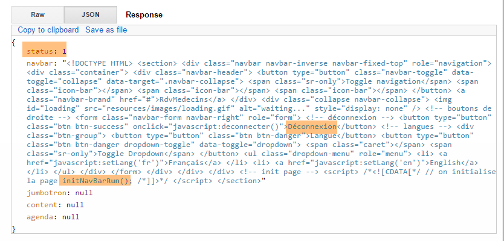 |
8.6.7.4. Die Aktion [/getJumbotron]
Wir rufen die Aktion [getJumbotron] mit dem folgenden übermittelten Wert auf:
{"user":{"login":"admin","passwd":"admin"},"lang":"en","jour":"2015-01-22", "idMedecin":1, "idCreneau":2, "idClient":4, "idRv":93}
Das Ergebnis lautet wie folgt:
 |
8.6.7.5. Die Aktion [/getLogin]
Wir rufen die Aktion [getLogin] mit dem folgenden übermittelten Wert auf:
{"user":{"login":"admin","passwd":"admin"},"lang":"en","jour":"2015-01-22", "idMedecin":1, "idCreneau":2, "idClient":4, "idRv":93}
Das Ergebnis lautet wie folgt:
 |
8.6.7.6. Die Aktion [/getAccueil]
Wir rufen die Aktion [getAccueil] mit dem folgenden übermittelten Wert auf:
{"user":{"login":"admin","passwd":"admin"},"lang":"fr","jour":"2015-01-22", "idMedecin":1, "idCreneau":2, "idClient":4, "idRv":93}
Das Ergebnis lautet wie folgt:
 |
Wir wiederholen den Vorgang mit einem unbekannten Benutzer:
{"user":{"login":"x","passwd":"x"},"lang":"fr","jour":"2015-01-22", "idMedecin":1, "idCreneau":2, "idClient":4, "idRv":93}
Das Ergebnis lautet wie folgt:
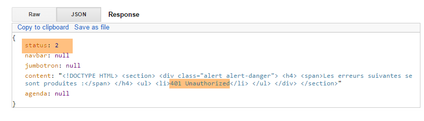 |
Wir beginnen erneut mit einem bestehenden Benutzer, der jedoch nicht zur Nutzung der Anwendung berechtigt ist:
{"user":{"login":"user","passwd":"user"},"lang":"en","jour":"2015-01-22", "idMedecin":1, "idCreneau":2, "idClient":4, "idRv":93}
Das Ergebnis lautet wie folgt:
 |
8.6.7.7. Die Aktion [/getAgenda]
Wir rufen die Aktion [getAgenda] mit dem folgenden übermittelten Wert auf:
{"user":{"login":"admin","passwd":"admin"},"lang":"fr","jour":"2015-01-28", "idMedecin":1, "idCreneau":2, "idClient":4, "idRv":93}
Das Ergebnis lautet wie folgt:
 |
Wir wiederholen den Vorgang mit einem Datum vor dem heutigen Tag:
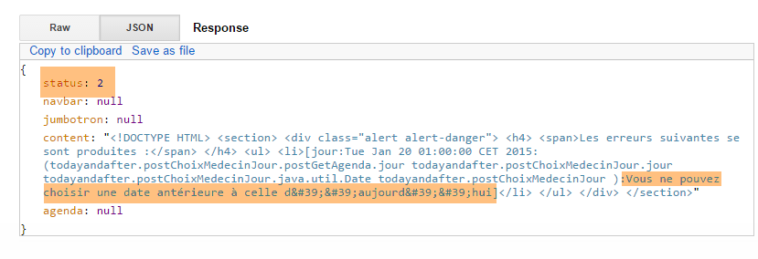 |
Wir versuchen es erneut mit einem nicht existierenden Arzt:
{"user":{"login":"admin","passwd":"admin"},"lang":"fr","jour":"2015-01-28", "idMedecin":11, "idCreneau":2, "idClient":4, "idRv":93}
Das Ergebnis sieht wie folgt aus:
 |
8.6.7.8. Die Aktion [/getNavbarRunJumbotronAccueil]
Wir rufen die Aktion [getNavbarRunJumbotronAccueil] mit dem folgenden übermittelten Wert auf:
{"user":{"login":"admin","passwd":"admin"},"lang":"en","jour":"2015-01-28", "idMedecin":1, "idCreneau":2, "idClient":4, "idRv":93}
Das Ergebnis lautet wie folgt:
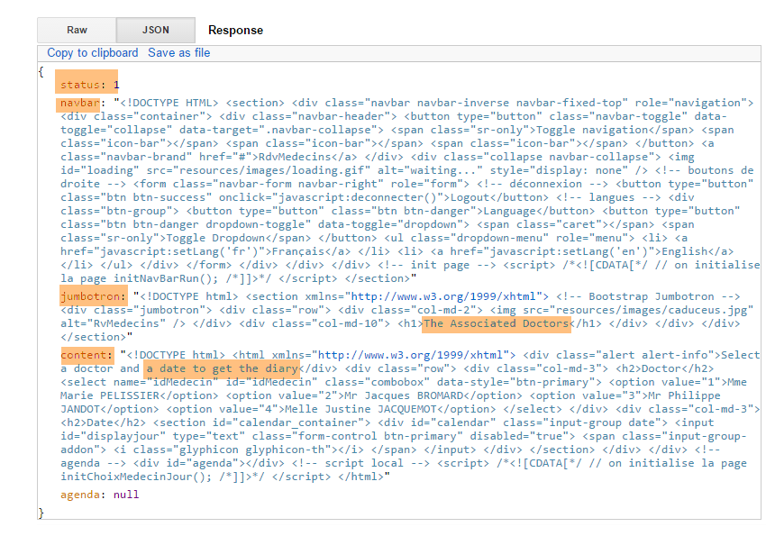 |
Das Gleiche gilt für einen unbekannten Benutzer:
 |
8.6.7.9. Die Aktion [/getNavbarRunJumbotronAccueilAgenda]
Wir rufen die Aktion [getNavbarRunJumbotronAccueilAgenda] mit dem folgenden übermittelten Wert auf:
{"user":{"login":"admin","passwd":"admin"},"lang":"fr","jour":"2015-01-28", "idMedecin":1, "idCreneau":2, "idClient":4, "idRv":93}
Das Ergebnis lautet wie folgt:
 |
Wir geben einen Arzt ein, der nicht existiert:
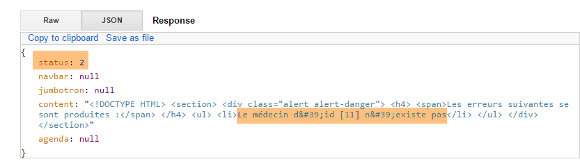 |
8.6.7.10. Die Aktion [/supprimerRv]
Wir rufen die Aktion [supprimerRv] mit dem folgenden übermittelten Wert auf:
{"user":{"login":"admin","passwd":"admin"},"lang":"fr","jour":"2015-01-28", "idMedecin":1, "idCreneau":2, "idClient":4, "idRv":93}
Die Referenznummer 93 existiert nicht. Das Ergebnis lautet wie folgt:
 |
Mit einem Termin, der existiert:
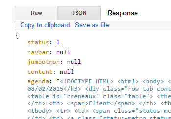 |
In der Datenbank lässt sich überprüfen, dass der Termin tatsächlich gelöscht wurde. Der neue Kalender wird zurückgesendet.
8.6.7.11. Die Aktion [/validerRv]
Wir rufen die Aktion [validerRv] mit dem folgenden übermittelten Wert auf:
{"user":{"login":"admin","passwd":"admin"},"lang":"fr","jour":"2015-01-28", "idMedecin":1, "idCreneau":2, "idClient":4, "idRv":93}
Das Ergebnis lautet wie folgt:
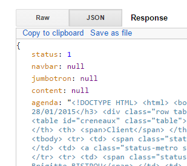 |
In der Datenbank lässt sich überprüfen, dass der Termin tatsächlich angelegt wurde. Der neue Terminkalender wurde zurückgesendet.
Wir wiederholen den Vorgang mit einer nicht existierenden Terminnummer:
 |
Das Gleiche machen wir mit einer nicht existierenden Kundennummer:
 |
8.6.8. Schritt 5: Erstellung des JavaScript-Clients
Kehren wir zur Architektur des Servers [Web1] zurück:
 |
Der Client [2] des Servers [Web1] ist ein JavaScript-Client vom Typ APU (Single-Page-Anwendung):
- Der Client fordert die Startseite von einem Webserver (nicht unbedingt [Web1]) an;
- er fordert die folgenden Seiten über Ajax-Aufrufe vom Server [Web1] an;
Um diesen Client zu erstellen, verwenden wir das Tool [Webstorm] (siehe Abschnitt 9.8). Dieses Tool erschien mir praktischer als STS. Sein Hauptvorteil besteht darin, dass es eine Autovervollständigung beim Eingeben des Codes sowie einige Optionen von refactoring bietet. Dadurch lassen sich viele Fehler vermeiden.
8.6.8.1. Das Projekt JS
Das Projekt JS hat folgende Verzeichnisstruktur:
 |
- in [1], der gesamte Client JS. [boot.html] ist die Startseite. Dies ist die einzige Seite, die vom Browser geladen wird;
- in [2] die Stylesheets der Bootstrap-Komponenten;
- in [3] die wenigen Bilder, die von der Anwendung verwendet werden;
 |
- in [4] die Skripte JS. Hier liegt der Schwerpunkt unserer Arbeit;
- in [5] die verwendeten Bibliotheken JS: hauptsächlich jQuery sowie die der Bootstrap-Komponenten;
8.6.8.2. Die Architektur des Codes
Der Code wurde in drei Schichten unterteilt:
 |
- Die Schicht [présentation] umfasst die Initialisierungsfunktionen der Seite [boot.xml] sowie die der verschiedenen Bootstrap-Komponenten. Sie wird durch die Datei [ui.js] implementiert;
- Die Schicht [événements] fasst alle Ereignisbehandler der Schicht [présentation] zusammen. Sie wird durch die Datei [evts.js] implementiert;
- Die Schicht [DAO] sendet die Anfragen von HTTP an den Server [Web1]. Sie wird durch die Datei [dao.js] implementiert;
8.6.8.3. Die Schicht [présentation]
 |
Die Schicht [présentation] wird durch die folgende Datei [ui.js] implementiert:
//die Ebene [présentation]
var ui = {
// globale Variablen;
"agenda": "",
"resa": "",
"langue": "",
"urlService": "http://localhost:8081",
"page": "login",
"jourAgenda": "",
"idMedecin": "",
"user": {},
"login": {},
"exceptionTitle": {},
"calendar_infos": {},
"erreur": "",
"idCreneau": "",
"done": "",
// Komponenten der Ansicht
"body": "",
"navbar": "",
"jumbotron": "",
"content": "",
"exception": "",
"exception_text": "",
"exception_title": "",
"loading": ""
};
// die Ereignisebene
var evts = {};
// die Ebene [dao]
var dao = {};
// ------------ Dokument bereit
$(document).ready(function () {
// Dokumentinitialisierung
console.log("document.ready");
// Seitenkomponenten
ui.navbar = $("#navbar");
ui.jumbotron = $("#jumbotron");
ui.content = $("#content");
ui.erreur = $("#erreur");
ui.exception = $("#exception");
ui.exception_text = $("#exception-text");
ui.exception_title = $("#exception-title");
// Die Anmeldeseite wird zwischengespeichert, um sie wiederherstellen zu können
ui.login.lang = ui.langue;
ui.login.navbar = ui.navbar.html();
ui.login.jumbotron = ui.jumbotron.html();
ui.login.content = ui.content.html();
// URL des Dienstes
$("#urlService").val(ui.urlService);
});
// ------------------------ Initialisierungsfunktionen für Bootstrap-Komponenten
ui.initNavBarStart = function () {
...
};
ui.initNavBarRun = function () {
...
};
ui.initChoixMedecinJour = function () {
...
};
ui.updateCalendar = function (renew) {
...
};
// zeigt den ausgewählten Tag an
ui.displayJour = function () {
...
};
ui.initAgenda = function () {
...
};
ui.initResa = function () {
...
};
- Um die Schichten voneinander zu trennen, wurde beschlossen, sie in drei Objekte zu platzieren:
- [ui] für die Schicht [présentation] (Zeilen 2–27),
- [evts] für die Ebene zur Ereignisverwaltung (Zeile 29),
- [dao] für die Schicht [DAO] (Zeile 31);
Durch diese Aufteilung der Schichten in drei Objekte lassen sich eine Reihe von Namenskonflikten bei Variablen und Funktionen vermeiden. Jede Schicht verwendet Variablen und Funktionen, denen das Objekt, das die Schicht kapselt, als Präfix vorangestellt wird.
- Zeilen 38–44: Hier werden die Felder gespeichert, die unabhängig von den angezeigten Ansichten immer vorhanden sind. Dadurch werden wiederholte und unnötige Suchen nach jQuery vermieden;
- Zeilen 46–49: Die Startseite wird lokal gespeichert, um sie wiederherstellen zu können, wenn sich der Benutzer abmeldet und die Sprache nicht geändert hat;
- Zeilen 54–83: Initialisierungsfunktionen für die Bootstrap-Komponenten. Diese wurden alle in der Beschreibung der Komponenten in Abschnitt 8.6.4 vorgestellt;
8.6.8.4. Die Hilfsfunktionen der Schicht [événements]
 |
Die Ereignisbehandler wurden in die Datei [evts.js] aufgenommen. Mehrere Funktionen werden regelmäßig von den Ereignisbehandlern verwendet. Wir stellen sie nun vor:
// Wartezeit beginnt
evts.beginWaiting = function () {
// Wartezeit beginnt
ui.loading = $("#loading");
ui.loading.show();
ui.exception.hide();
ui.erreur.hide();
evts.travailEnCours = true;
};
// Wartezeitende
evts.stopWaiting = function () {
// Wartezeitende
evts.travailEnCours = false;
ui.loading = $("#loading");
ui.loading.hide();
};
// Anzeige des Ergebnisses
evts.showResult = function (result) {
// die empfangenen Daten werden angezeigt
var data = result.data;
// Status wird analysiert
switch (result.status) {
case 1:
// Fehler?
if (data.status == 2) {
ui.erreur.html(data.content);
ui.erreur.show();
} else {
if (data.navbar) {
ui.navbar.html(data.navbar);
}
if (data.jumbotron) {
ui.jumbotron.html(data.jumbotron);
}
if (data.content) {
ui.content.html(data.content)
}
if (data.agenda) {
ui.agenda = $("#agenda");
ui.resa = $("#resa");
}
}
break;
case 2:
// Fehleranzeige
evts.showException(data);
break;
}
};
// ------------ verschiedene Funktionen
evts.showException = function (data) {
// Fehleranzeige
ui.exception.show();
ui.exception_text.html(data);
ui.exception_title.text(ui.exceptionTitle[ui.langue]);
};
- Zeile 2: Die Funktion [evts.beginwaiting] wird vor jeder asynchronen Aktion [DAO] aufgerufen;
- Zeilen 4–5: Das animierte Bild für den Wartezustand wird angezeigt;
- Zeilen 6–7: Der Anzeigebereich für Fehler und Ausnahmen (das sind nicht dasselbe) wird ausgeblendet;
- Zeile 8: Es wird vermerkt, dass ein asynchroner Vorgang läuft;
- Zeile 12: Die Funktion [evts.stopwaiting] wird aufgerufen, nachdem eine asynchrone Aktion [DAO] ihr Ergebnis zurückgegeben hat;
- Zeile 14: Es wird vermerkt, dass der asynchrone Vorgang abgeschlossen ist;
- Zeile 15: Das animierte Bild für den Wartezustand wird ausgeblendet;
- Zeile 20: Die Funktion [evts.showResult] zeigt das Ergebnis [result] einer asynchronen Aktion [DAO] an. Das Ergebnis ist ein JS-Objekt in folgender Form: {'status':status,'data':data,'sendMeBack':sendMeBack}.
- Zeilen 47–50: werden verwendet, wenn [result.status==2] vorliegt. Dies tritt ein, wenn der Server [Web1] eine Antwort mit einem Fehler-Header HTTP (z. B. 403 Forbidden) sendet. In diesem Fall ist [data] die Zeichenfolge jSON, die vom Server gesendet wurde, um den Fehler zu melden;
- Zeile 25: Fall, in dem eine gültige Antwort vom Server [Web1] empfangen wurde. Das Feld [data] enthält dann die Antwort des Servers: {'status':status,'navbar':navbar,'jumbotron':jumbotron,'agenda':agenda,'content':content};
- Zeile 27: Fall, in dem der Server [Web1] eine Fehlerantwort gesendet hat {'status':2,'navbar':null,'jumbotron':null,'agenda':null,'content':Fehler};
- Zeilen 28–29: Die Ansicht [erreurs] wird angezeigt;
- Zeilen 31–33: Gegebenenfalls wird die Navigationsleiste angezeigt;
- Zeilen 34–36: Gegebenenfalls Anzeige des Jumbotrons;
- Zeilen 37–39: Gegebenenfalls Anzeige des Felds [data.content]. Stellt je nach Fall eine der Ansichten [accueil, agenda] dar;
- Zeilen 40–43: Wenn der Kalender neu generiert wurde, werden bestimmte Referenzen auf seine Komponenten abgerufen, um sie nicht jedes Mal neu suchen zu müssen, wenn sie benötigt werden;
- Zeile 54: Die Funktion [evts.showException] dient dazu, den Text der Ausnahme anzuzeigen, der in ihrem Parameter [data] enthalten ist;
- Zeilen 57–58: Der Text der Ausnahme wird angezeigt;
- Zeile 58: Der Titel der Ausnahme hängt von der aktuell eingestellten Sprache ab;
Die Datei [evts.js] enthält mehr als 300 Codezeilen, auf die ich nicht alle eingehen werde. Ich werde lediglich einige Beispiele anführen, um den Grundgedanken dieser Ebene zu veranschaulichen.
8.6.8.5. Anmeldung eines Benutzers

Die Anmeldung eines Benutzers erfolgt über die folgende Funktion:
// ------------------------ Verbindung
evts.connecter = function () {
// die zu übermittelnden Werte werden abgerufen
var login = $("#login").val().trim();
var passwd = $("#passwd").val().trim();
// Der URL des Servers wird festgelegt
ui.urlService = $("#urlService").val().trim();
dao.setUrlService(ui.urlService);
// Anfrageparameter
var post = {
"user": {
"login": login,
"passwd": passwd
},
"lang": ui.langue
};
var sendMeBack = {
"user": {
"login": login,
"passwd": passwd
},
"caller": evts.connecterDone
};
// die Anfrage wird gesendet
evts.execute([{
"name": "accueil-sans-agenda",
"post": post,
"sendMeBack": sendMeBack
}]);
};
- Zeilen 4–5: Der Benutzername und das Passwort des Benutzers werden abgerufen;
- Zeilen 7–8: Die URL wird vom Dienst [Web1] abgerufen. Sie wird sowohl in der Schicht [ui] als auch in der Schicht [dao] gespeichert;
- Zeilen 10–16: Der zu übermittelnde Wert: die aktuelle Sprache und der Benutzer, der sich anmelden möchte;
- Zeilen 17–23: Das Objekt [sendMeBack] ist ein Objekt, das an die Funktion [DAO] übergeben wird, die aufgerufen wird und das sie an die Funktion in Zeile 22 zurückgeben muss. Hier kapselt das Objekt [sendMeBack] den Benutzer, der sich anmelden möchte;
- Zeilen 25–29: Die Funktion [evts.execute] ist in der Lage, eine Reihe asynchroner Aktionen auszuführen. Hier wird eine Liste übergeben, die aus einer einzigen Aktion besteht. Diese enthält folgende Felder:
- [name]: der Name der auszuführenden asynchronen Aktion,
- [post]: der Wert, der an den Server [Web1] gesendet werden soll,
- [sendMeBack]: der Wert, den die asynchrone Aktion zusammen mit ihrem Ergebnis zurückgeben soll;
Bevor wir die Funktion [evts.execute] näher betrachten, werfen wir einen Blick auf die Funktion [evts.connecterDone] in Zeile 22. Dies ist die Funktion, an die die aufgerufene asynchrone Funktion [DAO] ihr Ergebnis zurückgeben muss:
evts.connecterDone = function (result) {
// Anzeige des Ergebnisses
evts.showResult(result);
// Verbindung erfolgreich?
if (result.status == 1 && result.data.status == 1) {
// Seite
ui.page = "accueil-sans-agenda";
// Benutzer wird registriert
ui.user = result.sendMeBack.user;
}
};
- Zeile 3: Das vom Server [Web1] zurückgegebene Ergebnis wird angezeigt;
- Zeile 5: Wenn dieses Ergebnis keine Fehler enthält, werden die Art der neuen Seite (Zeile 7) sowie der authentifizierte Benutzer (Zeile 9) gespeichert;
Die Funktion [evts.execute] führt eine Reihe asynchroner Aktionen aus:
// Ausführung einer Abfolge von Aktionen
evts.execute = function (actions) {
// Arbeit läuft?
if (evts.travailEnCours) {
// Es wird nichts getan
return;
}
// Warten
evts.beginWaiting();
// Ausführung der Aktionen
dao.doActions(actions, evts.stopWaiting);
};
- Zeile 2: Der Parameter [actions] ist eine Liste der auszuführenden asynchronen Aktionen;
- Zeilen 4–7: Die Ausführung wird nur akzeptiert, wenn noch keine andere läuft;
- Zeile 9: Die Wartezeit wird gestartet;
- Zeile 11: Die Schicht [DAO] wird aufgefordert, die Aktionsfolge auszuführen. Der zweite Parameter ist der Name der Funktion, die ausgeführt werden soll, sobald alle Aktionen der Folge ihr Ergebnis zurückgegeben haben;
Wir werden die Funktion [dao.doActions] an dieser Stelle nicht näher erläutern. Wir werden uns ein anderes Ereignis ansehen.
8.6.8.6. Sprachwechsel

Der Sprachwechsel wird durch die folgende Funktion gewährleistet:
// ------------------------ Sprachwechsel
evts.setLang = function (lang) {
// Sprachwechsel?
if (lang == ui.langue) {
// Es wird nichts unternommen
return;
}
// neue Sprache
ui.langue = lang;
// Welche Seite soll übersetzt werden?
switch (ui.page) {
case "login":
evts.getLogin();
break;
case "accueil-sans-agenda":
evts.getAccueilSansAgenda();
break;
case "accueil-avec-agenda":
evts.getAccueilAvecAgenda(ui);
break;
}
};
- Zeile 2: Der Parameter [lang] ist die neue Sprache: „fr“ oder „en“;
- Zeilen 4–7: Ist die neue Sprache die aktuell eingestellte, wird nichts unternommen;
- Zeile 9: Die neue Sprache wird gespeichert;
- Zeilen 12–20: Im Falle eines Sprachwechsels muss die aktuell vom Browser angezeigte Seite neu generiert werden. Es gibt drei mögliche Seiten:
- die Seite mit dem Namen [login], bei der es sich um die Anmeldeseite handelt,
- die Seite mit dem Namen [accueil-sans-agenda], die unmittelbar nach einer erfolgreichen Authentifizierung angezeigt wird,
- die Seite mit dem Namen [accueil-avec-agenda], die angezeigt wird, sobald ein erster Kalender angezeigt wurde. Anschließend bleibt sie bis zur Abmeldung des Benutzers dauerhaft bestehen;
Wir werden uns nun mit der Seite [accueil-avec-agenda] befassen. Es gibt drei Versionen dieser Funktion:
 |
- Die Version [ getAccueilAvecAgenda-one] führt eine einzige asynchrone Aktion aus;
- Die Version [ getAccueilAvecAgenda-parallel] führt vier asynchrone Aktionen parallel aus;
- Die Version [ getAccueilAvecAgenda-sequence] führt vier asynchrone Aktionen nacheinander aus;
8.6.8.7. Die Funktion [ getAccueilAvecAgenda-one]
Es handelt sich um folgende Funktion:
// -------------------------- getAccueilAvecAgenda
evts.getAccueilAvecAgenda=function(ui) {
// Anfrageparameter
var post = {
"user": ui.user,
"lang": ui.langue,
"idMedecin": ui.idMedecin,
"jour": ui.jourAgenda
};
var sendMeBack = {
"caller": evts.getAccueilAvecAgendaDone
};
// Anfrage
evts.execute([{
"name": "accueil-avec-agenda",
"post": post,
"sendMeBack": sendMeBack
}]);
};
- Zeilen 4–9: Der zu übermittelnde Wert enthält den angemeldeten Benutzer, die gewünschte Sprache, die Nummer des Arztes, dessen Terminkalender abgerufen werden soll, sowie den gewünschten Tag des Terminkalenders;
- Zeilen 10–12: Das Objekt [sendMeBack] ist das Objekt, das an die Funktion in Zeile 11 zurückgegeben wird. Hier enthält es keine Informationen;
- Zeilen 14–18: Ausführung einer asynchronen Aktion namens [accueil-avec-agenda] (Zeile 15);
- Zeile 11: Die Funktion, die ausgeführt wird, sobald die asynchrone Aktion [accueil-avec-agenda] ihr Ergebnis zurückgegeben hat;
Die Funktion [evts.getAccueilAvecAgendaDone] in Zeile 11 zeigt das Ergebnis der asynchronen Funktion [accueil-avec-agenda] an:
evts.getAccueilAvecAgendaDone = function (result) {
// Ergebnisanzeige
evts.showResult(result);
// Neue Seite?
if (result.status == 1 && result.data.status == 1) {
ui.page = "accueil-avec-agenda";
}
};
- Zeile 1: [result] ist das Ergebnis der asynchronen Funktion mit dem Namen [accueil-avec-agenda];
- Zeile 3: Dieses Ergebnis wird angezeigt;
- Zeile 5: Handelt es sich um ein fehlerfreies Ergebnis, wird die neue Seite gespeichert (Zeile 6);
8.6.8.8. Die Funktion [ getAccueilAvecAgenda-parallel]
Dies ist die folgende Funktion:
// -------------------------- getAccueilAvecAgenda
evts.getAccueilAvecAgenda=function(ui) {
// Aktionen [navbar-run, jumbotron, accueil, agenda] in //
// Navbar-Run
var navbarRun = {
"name": "navbar-run"
};
navbarRun.post = {
"lang": ui.langue
};
navbarRun.sendMeBack = {
"caller": evts.showResult
};
// Jumbotron
var jumbotron = {
"name": "jumbotron"
};
jumbotron.post = {
"lang": ui.langue
};
jumbotron.sendMeBack = {
"caller": evts.showResult
};
// Startseite
var accueil = {
"name": "accueil"
};
accueil.post = {
"lang": ui.langue,
"user": ui.user
};
accueil.sendMeBack = {
"caller": evts.showResult
};
// Kalender
var agenda = {
"name": "agenda"
};
agenda.post = {
"user": ui.user,
"lang": ui.langue,
"idMedecin": ui.idMedecin,
"jour": ui.jourAgenda
};
agenda.sendMeBack = {
'idMedecin': ui.idMedecin,
'Tag': ui.jourAgenda,
"caller": evts.getAgendaDone
};
// Ausführung von Aktionen in //
evts.execute([navbarRun, jumbotron, accueil, agenda])
};
- Zeile 51: Diesmal werden vier asynchrone Aktionen ausgeführt. Sie werden parallel ausgeführt;
- Zeilen 5–13: Definition der Aktion [navbarRun], die die Navigationsleiste [navbar-run] abruft;
- Zeile 12: Die Funktion, die ausgeführt werden soll, sobald die asynchrone Aktion [navbarRun] ihr Ergebnis zurückgegeben hat;
- Zeilen 15–23: Definition der Aktion [jumbotron], die die Ansicht [jumbotron] abruft;
- Zeile 22: Die Funktion, die ausgeführt werden soll, sobald die asynchrone Aktion [jumbotron] ihr Ergebnis zurückgegeben hat;
- Zeilen 25–34: Definition der Aktion [accueil], die die Ansicht [accueil] abruft;
- Zeile 33: Die Funktion, die ausgeführt werden soll, sobald die asynchrone Aktion [accueil] ihr Ergebnis zurückgegeben hat;
- Zeilen 36–49: Definition der Aktion [agenda], die die Ansicht [jumbotron] abruft;
- Zeile 48: Die Funktion, die ausgeführt werden soll, sobald die asynchrone Aktion [agenda] ihr Ergebnis zurückgegeben hat;
8.6.8.9. Die Funktion [ getAccueilAvecAgenda-sequence]
Es handelt sich um folgende Funktion:
// -------------------------- getAccueilAvecAgenda
evts.getAccueilAvecAgenda=function(ui) {
// Aktionen [navbar-run, jumbotron, accueil, agenda] in der Reihenfolge
// Kalender
var agenda = {
"name" : "agenda"
};
agenda.post = {
"user" : ui.user,
"lang" : ui.langue,
"idMedecin" : ui.idMedecin,
"jour" : ui.jourAgenda
};
agenda.sendMeBack = {
'idMedecin': ui.idMedecin,
'Tag: ui.jourAgenda,
"caller" : evts.getAgendaDone
};
// Startseite
var accueil = {
"name" : "accueil"
};
accueil.post = {
"lang" : ui.langue,
"user" : ui.user
};
accueil.sendMeBack = {
"caller" : evts.showResult,
"next" : agenda
};
// Jumbotron
var jumbotron = {
"name" : "jumbotron"
};
jumbotron.post = {
"lang" : ui.langue
};
jumbotron.sendMeBack = {
"caller" : evts.showResult,
"next" : accueil
};
// Navbar-Run
var navbarRun = {
"name" : "navbar-run"
};
navbarRun.post = {
"lang" : ui.langue
};
navbarRun.sendMeBack = {
"caller" : evts.showResult,
"next" : jumbotron
};
// Abreihen von Aktionen
evts.execute([ navbarRun ])
};
- Zeile 54: Die Aktion [navbarRun] wird ausgeführt. Sobald diese beendet ist, geht es weiter mit der nächsten: [jumbotron], Zeile 51. Diese Aktion wird dann ebenfalls ausgeführt. Sobald sie beendet ist, geht es weiter mit der nächsten: [accueil], Zeile 40. Diese wird ebenfalls ausgeführt. Sobald diese abgeschlossen ist, geht es weiter mit der nächsten: [agenda], Zeile 29. Diese wird ebenfalls ausgeführt. Sobald diese abgeschlossen ist, wird der Vorgang beendet, da die Aktion [agenda] keine nachfolgende Aktion hat.
8.6.8.10. Die Ebene [DAO]
 |
Die Datei [dao.js] fasst alle Funktionen der Ebene [DAO] zusammen. Wir werden diese nun nacheinander vorstellen:
// URL vom Server bereitgestellt
dao.urls = {
"login": "/getLogin",
"accueil": "/getAccueil",
"jumbotron": "/getJumbotron",
"agenda": "/getAgenda",
"supprimerRv": "/supprimerRv",
"validerRv": "/validerRv",
"navbar-start": "/getNavbarStart",
"navbar-run": "/getNavbarRun",
"accueil-sans-agenda": "/getNavbarRunJumbotronAccueil",
"accueil-avec-agenda": "/getNavbarRunJumbotronAccueilAgenda"
};
// --------------- Schnittstelle
// Server-URL
dao.setUrlService = function (urlService) {
dao.urlService = urlService;
};
- Zeilen 16–18: Die Funktion, mit der der URL des Dienstes [Web1] festgelegt wird;
- Zeilen 2–13: das Wörterbuch, das den Namen einer asynchronen Aktion mit dem URL des abzufragenden Servers [Web1] verknüpft;
// ------------------ generische Verwaltung von Aktionen
// Ausführung einer Reihe asynchroner Aktionen
dao.doActions = function (actions, done) {
// Verarbeitung der Aktionen
dao.actionsCount = actions.length;
dao.actionIndex = 0;
for (var i = 0; i < dao.actionsCount; i++) {
// asynchrone Abfrage DAO
var deferred = $.Deferred();
deferred.done(dao.actionDone);
dao.doAction(deferred, actions[i], done);
}
};
- Zeile 3: Die Funktion [dao.doActions] führt eine Reihe von asynchronen Aktionen [actions] aus. Der Parameter [done] ist die Funktion, die ausgeführt werden soll, sobald alle Aktionen ihr Ergebnis zurückgegeben haben;
- Zeilen 7–12: Die asynchronen Aktionen werden parallel ausgeführt. Hat jedoch eine davon eine nachfolgende Aktion, wird diese erst nach Abschluss der vorangehenden Aktion ausgeführt;
- Zeile 9: Ein Objekt [Deferred] befindet sich im Zustand [pending];
- Zeile 10: Wenn dieses Objekt in den Zustand [resolved] wechselt, wird die Funktion [dao.actionDone] ausgeführt;
- Zeile 11: Die Aktion Nr. i aus der Liste wird asynchron ausgeführt. Der Parameter [done] aus Zeile 3 wird als Parameter übergeben;
Die Funktion [dao.actionDone], die am Ende jeder asynchronen Aktion ausgeführt wird, lautet wie folgt:
// Ein Ergebnis wurde empfangen
dao.actionDone = function (result) {
// Aufrufer?
var sendMeBack = result.sendMeBack;
if (sendMeBack && sendMeBack.caller) {
sendMeBack.caller(result);
}
// Weiter?
if (sendMeBack && sendMeBack.next) {
// asynchrone Anfrage DAO
var deferred = $.Deferred();
deferred.done(dao.actionDone);
dao.doAction(deferred, sendMeBack.next, sendMeBack.done);
}
// fertig?
dao.actionIndex++;
if (dao.actionIndex == dao.actionsCount) {
// fertig?
if (sendMeBack && sendMeBack.done) {
sendMeBack.done(result);
}
}
};
- Zeile 2: Die Funktion [dao.actionDone] erhält das Ergebnis [result] von einer der asynchronen Aktionen aus der Liste der auszuführenden Aktionen;
- Zeilen 4–7: Wenn die abgeschlossene asynchrone Aktion eine Funktion angegeben hatte, an die das Ergebnis zurückgegeben werden soll, wird diese Funktion aufgerufen;
- Zeilen 9–14: Wenn die abgeschlossene asynchrone Aktion eine nachfolgende Aktion hat, wird diese Aktion ihrerseits ausgeführt;
- Zeile 16: Eine Aktion ist abgeschlossen. Der Zähler für abgeschlossene Aktionen wird erhöht. Eine Aktion, die eine unbestimmte Anzahl von Folgeaktionen hat, zählt als eine Aktion;
- Zeilen 19–21: Wenn ursprünglich eine Funktion [done] angegeben wurde, die ausgeführt werden soll, sobald alle nachfolgenden Aktionen ihr Ergebnis zurückgegeben haben, wird diese Funktion nun ausgeführt;
Die Methode [dao.doAction] führt eine asynchrone Aktion aus:
// Ausführung einer Aktion
dao.doAction = function (deferred, action, done) {
// Funktionsaufruf „done“, der in die Aktion eingebettet werden soll
if (action.sendMeBack) {
action.sendMeBack.done = done;
} else {
action.sendMeBack = {
"done": done
};
}
// Aktionsausführung
dao.executePost(deferred, action.sendMeBack, dao.urls[action.name], action.post)
};
- Zeilen 4–10: Wie gerade gesehen, muss die Funktion, die das Ergebnis der auszuführenden asynchronen Aktion verarbeiten soll, Zugriff auf die Funktion [done] haben. Zu diesem Zweck wird letztere in das Objekt [sendMeBack] eingefügt, das Teil des Ergebnisses der asynchronen Operation sein wird;
- Zeile 12: Die Funktion [dao.executePost] wird ausgeführt, die einen Aufruf von HTTP an den Server [Web1] durchführt. Das Ziel URL ist die Funktion URL, die dem Namen der auszuführenden Aktion zugeordnet ist;
Die Funktion [dao.executePost] führt einen Aufruf an HTTP aus:
// Abfrage HTTP
dao.executePost = function (deferred, sendMeBack, url, post) {
// Manueller Ajax-Aufruf
$.ajax({
headers: {
'„Accept“: 'application/json',
'„Content-Type“: „application/json“
},
url: dao.urlService + url,
type: 'POST',
data: JSON3.stringify(post),
dataType: 'json',
success: function (data) {
// Das Ergebnis wird zurückgegeben
deferred.resolve({
"status": 1,
"data": data,
"sendMeBack": sendMeBack
});
},
error: function (jqXHR, textStatus, errorThrown) {
var data;
if (jqXHR.responseText) {
data = jqXHR.responseText;
} else {
data = textStatus;
}
// Der Fehler wird ausgegeben
deferred.resolve({
"status": 2,
"data": data,
"sendMeBack": sendMeBack
});
}
});
};
Diese Funktion haben wir bereits kennengelernt und erläutert. Es sei lediglich in Zeile 9 angemerkt, dass das Ziel von URL die Verkettung von URL des Servers [Web1] mit URL ist, das dem Namen der auszuführenden Aktion zugeordnet ist.
8.6.8.11. Die Boot-Seite
 |

Die Startseite [boot.html] zeigt die oben abgebildete Ansicht an. Dies ist die einzige Seite, die direkt vom Browser geladen wird. Die anderen werden über Ajax-Aufrufe abgerufen. Ihr Code lautet wie folgt:
<!DOCTYPE HTML>
<html xmlns="http://www.w3.org/1999/xhtml" xmlns:th="http://www.thymeleaf.org"
xmlns:layout="http://www.ultraq.net.nz/thymeleaf/layout">
<head>
<meta name="viewport" content="width=device-width"/>
<meta http-equiv="Content-Type" content="text/html; charset=utf-8"/>
<title>RdvMedecins</title>
<!-- Bootstrap-Kern CSS -->
<link rel="stylesheet" href="css/bootstrap-3.1.1-min.css"/>
<link rel="stylesheet" type="text/css" href="css/bootstrap-select.min.css"/>
<link rel="stylesheet" type="text/css" href="css/datepicker3.css"/>
<link rel="stylesheet" type="text/css" href="css/footable.core.min.css"/>
<!-- Benutzerdefinierte Stile für diese Vorlage -->
<link rel="stylesheet" type="text/css" href="css/rdvmedecins.css"/>
<!-- Bootstrap-Kern JavaScript ================================================== -->
<script type="text/javascript" src="vendor/jquery-2.1.1.min.js"></script>
<script type="text/javascript" src="vendor/bootstrap.js"></script>
<script type="text/javascript" src="vendor/bootstrap-select.js"></script>
<script type="text/javascript" src="vendor/moment-with-locales.js"></script>
<script type="text/javascript" src="vendor/bootstrap-datepicker.js"></script>
<script type="text/javascript" src="vendor/bootstrap-datepicker.fr.js"></script>
<script type="text/javascript" src="vendor/footable.js"></script>
<!-- Benutzerskripte -->
<script type="text/javascript" src="js/json3.js"></script>
<script type="text/javascript" src="js/ui.js"></script>
<script type="text/javascript" src="js/evts.js"></script>
<script type="text/javascript" src="js/getAccueilAvecAgenda-sequence.js"></script>
<script type="text/javascript" src="js/dao.js"></script>
</head>
<body id="body">
<div id="navbar">
<div class="navbar navbar-inverse navbar-fixed-top" role="navigation">
<div class="container">
<div class="navbar-header">
<button type="button" class="navbar-toggle" data-toggle="collapse" data-target=".navbar-collapse">
<span class="sr-only">Toggle navigation</span> <span class="icon-bar"></span> <span class="icon-bar"></span>
<span class="icon-bar"></span>
</button>
<a class="navbar-brand" href="#">RdvMedecins</a>
</div>
<div class="navbar-collapse collapse">
<img id="loading" src="images/loading.gif" alt="waiting..." style="display: none"/>
<!-- Anmeldeformular -->
<div class="navbar-form navbar-right" role="form" id="formulaire">
<div class="form-group">
<input type="text" placeholder="URL du serveur" class="form-control" id="urlService"/>
</div>
<div class="form-group">
<input type="text" placeholder="Utilisateur" class="form-control" id="login"/>
</div>
<div class="form-group">
<input type="password" placeholder="Mot de passe" class="form-control" id="passwd"/>
</div>
<button type="button" class="btn btn-success" onclick="javascript:evts.connecter()">Connexion</button>
<!-- Sprachen -->
<div class="btn-group">
<button type="button" class="btn btn-danger">Langue</button>
<button type="button" class="btn btn-danger dropdown-toggle" data-toggle="dropdown">
<span class="caret"></span> <span class="sr-only">Toggle Dropdown</span>
</button>
<ul class="dropdown-menu" role="menu">
<li><a href="javascript:evts.setLang('fr')">Français</a></li>
<li><a href="javascript:evts.setLang('en')">English</a></li>
</ul>
</div>
</div>
</div>
</div>
</div>
</div>
<div class="container">
<!-- Bootstrap-Jumbotron -->
<div id="jumbotron">
<div class="jumbotron">
<div class="row">
<div class="col-md-2">
<img src="images/caduceus.jpg" alt="RvMedecins"/>
</div>
<div class="col-md-10">
<h1>
Cabinet médical<br/>Les Médecins associés
</h1>
</div>
</div>
</div>
</div>
<!-- Fehlermeldungen -->
<div id="erreur"></div>
<div id="exception" class="alert alert-danger" style="display: none">
<h3 id="exception-title"></h3>
<span id="exception-text"></span>
</div>
<!-- Inhalt -->
<div id="content">
<div class="alert alert-info">Authentifiez-vous pour accéder à l'application</div>
</div>
</div>
<!-- Startseite -->
<script>
// Die Seite wird initialisiert
ui.langue = 'fr';
ui.exceptionTitle['fr'] = "L'erreur suivante s'est produite côté serveur :";
ui.exceptionTitle['en'] = "The following server error was met:";
ui.initNavBarStart();
</script>
</body>
</html>
- Diese Art von Seite haben wir bereits im Kapitel über Bootstrap (Abschnitt 8.6.4) kennengelernt;
- Zeilen 99–105: Initialisierung bestimmter Elemente der Ebene [présentation];
- Zeile 27: Das Skript [getAccueilAvecAgenda-sequence.js] wird verwendet. Durch Ändern des Skripts in dieser Zeile ergeben sich drei verschiedene Verhaltensweisen, um die Seite [accueil-avec-agenda] zu erhalten:
- [getAccueilAvecAgenda-one.js] ruft die Seite mit einem einzigen Aufruf von HTTP auf,
- [getAccueilAvecAgenda-parallel.js] ruft die Seite mit vier gleichzeitigen Aufrufen von HTTP auf,
- [getAccueilAvecAgenda-sequence.js] ruft die Seite mit vier aufeinanderfolgenden Aufrufen von HTTP ab;
8.6.8.12. Tests
Es gibt verschiedene Möglichkeiten, die Tests durchzuführen. Wir werden hier das Tool [Webstorm] verwenden:
 |
- In [1] wird ein Projekt geöffnet. Man wählt einfach den Ordner [2] aus, der die statische Baumstruktur (HTML, CSS, JS) der zu testenden Website enthält;
 |
- in [3], die statische Website;
- Bei [4-5] wird die Seite [boot.html] geladen;
 |
- In [5] sieht man, dass ein von [Webstorm] eingebetteter Server die Seite [boot.html] über den Port [63342] bereitgestellt hat. Dies ist ein wichtiger Punkt, den es zu verstehen gilt, da dies bedeutet, dass die Skripte der Seite [boot.html] domänenübergreifende Aufrufe an den Server [Web1] senden werden, der wiederum auf [localhost:8081] läuft. Der Browser, der [boot.html] geladen hat, weiß, dass er diese Seite von [localhost:63342] geladen hat. Er wird daher nicht zulassen, dass diese Seite Aufrufe an die Website [localhost:8081] sendet, da es sich nicht um denselben Port handelt. Er wird daher die in Abschnitt 8.4.14 beschriebenen domänenübergreifenden Aufrufe durchführen. Aus diesem Grund muss die Anwendung [Web1] so konfiguriert sein, dass sie diese domänenübergreifenden Aufrufe akzeptiert. Dies wird in der Datei [AppConfig] des Spring-/Thymeleaf-Servers festgelegt:
 |
@EnableAutoConfiguration
@ComponentScan(basePackages = { "rdvmedecins.springthymeleaf.server" })
@Import({ WebConfig.class, DaoConfig.class })
public class AppConfig {
// Admin / Admin
private final String USER_INIT = "admin";
private final String MDP_USER_INIT = "admin";
// Stammverzeichnis Webdienst / JSON
private final String WEBJSON_ROOT = "http://localhost:8080";
// Timeout in Millisekunden
private final int TIMEOUT = 5000;
// CORS
private final boolean CORS_ALLOWED=true;
...
Wir überlassen es dem Leser, Tests mit dem Client JS durchzuführen. Dieser muss in der Lage sein, die in Abschnitt 8.6.3 beschriebenen Funktionen zu reproduzieren.
Sobald der Client JS als korrekt bestätigt wurde, kann er im Serverordner [Web1] bereitgestellt werden, um die Autorisierung domänenübergreifender Anfragen zu vermeiden:
 |
Oben haben wir die getestete Website in den Ordner [src / main / resources / static] kopiert. Anschließend können wir die URL und [http://localhost:8081/boot.html] aufrufen:

Nun benötigen wir keine domänenübergreifenden Anfragen mehr und können in die Konfigurationsdatei [AppConfig] des Servers [Web1] Folgendes eintragen:
// CORS
private final boolean CORS_ALLOWED=false;
Die oben genannte Anwendung funktioniert weiterhin. Kehrt man jedoch zur Anwendung [Webstorm] zurück, funktioniert diese nicht mehr:
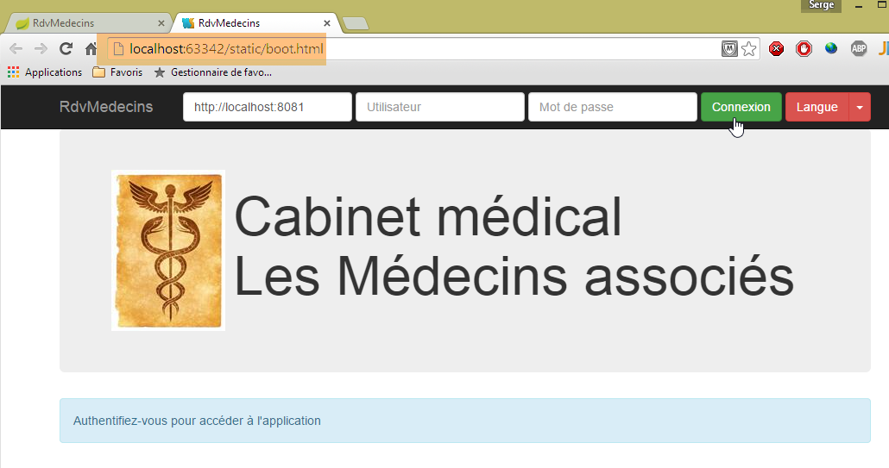

Wenn man die Entwicklerkonsole (Strg-Umschalt-I) aufruft, wird die Fehlerursache angezeigt:

Es handelt sich um einen Fehler aufgrund einer nicht autorisierten domänenübergreifenden Anfrage.
8.6.8.13. Conclusion
Wir haben die folgende Architektur JS realisiert:
 |
- Die Schichten sind recht klar voneinander getrennt;
- wir haben eine Anwendung vom Typ APU (Single-Page-Anwendung). Genau diese Eigenschaft ermöglicht es uns nun, eine native Anwendung für verschiedene Mobilgeräte (Android, IoS, Windows Phone) zu generieren;
- wir haben ein Modell erstellt, das asynchrone Aktionen parallel, nacheinander oder in einer Kombination aus beidem ausführen kann;
8.6.9. Schritt 6: Erstellung einer nativen App für Android
Mit dem Tool [Phonegap] [http://phonegap.com/] lässt sich eine ausführbare Datei für Mobilgeräte (Android, IoS, Windows 8, ...) aus einer HTML-/JS-/CSS-Anwendung zu erstellen. Es gibt verschiedene Wege, um dieses Ziel zu erreichen. Wir verwenden die einfachste: ein Online-Tool auf der Phonegap-Website [http://build.phonegap.com/apps]. Dieses Tool lädt die ZIP-Datei der zu konvertierenden statischen Website hoch. Die Startseite muss den Namen [index.html] tragen. Wir benennen daher die Seite [boot.html] in [index.html] um:
 |
Anschließend packen wir den Ordner in eine ZIP-Datei, in diesem Fall [rdvmedecins-client-js-03]. Danach rufen wir die PhoneGap-Website auf: [http://build.phonegap.com/apps]:
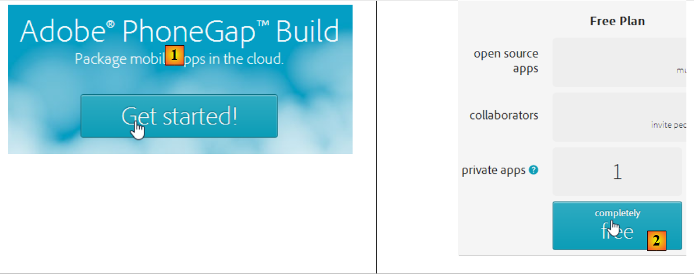 |
- Vor [1] müssen Sie möglicherweise ein Konto erstellen;
- unter [1] legen wir los;
- unter [2] wählen wir einen kostenlosen Tarif, der nur eine Phonegap-App zulässt;
 |
- unter [3] laden Sie die gezippte App [4] herunter;
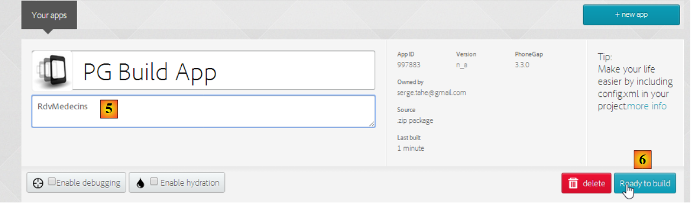 |
- Bei [5] gibt man der App einen Namen;
- in [6] wird die App erstellt. Dieser Vorgang kann bis zu 1 Minute dauern. Bitte warten Sie, bis die Symbole der verschiedenen mobilen Plattformen anzeigen, dass die Erstellung abgeschlossen ist;
 |
- Es wurden nur die Android-Binärdatei [7] und die Windows-Binärdatei [8] generiert;
- Klicken Sie auf [7], um die Android-Binärdatei herunterzuladen;
 |
- Laden Sie mit [9] die heruntergeladene Binärdatei [apk] herunter;
Starten Sie einen Emulator [GenyMotion] für ein Android-Tablet (siehe Abschnitt 9.9):
 |
Oben wird ein Tablet-Emulator mit Android-Version API 19 gestartet. Sobald der Emulator gestartet ist,
- entsperren Sie ihn, indem Sie den Riegel (falls vorhanden) an der Seite ziehen und dann loslassen;
- Ziehen Sie die heruntergeladene Datei „[PGBuildApp-debug.apk]“ mit der Maus auf den Emulator und legen Sie sie dort ab. Die Datei wird daraufhin installiert und ausgeführt;
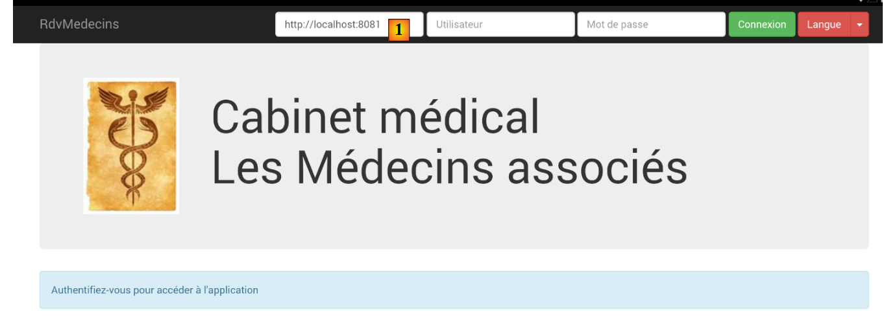 |
Sie müssen „URL“ in „[1]“ ändern. Geben Sie dazu in einem Befehlsfenster den Befehl [ipconfig] (Zeile 1 unten) ein, wodurch die verschiedenen IP-Adressen Ihres Rechners angezeigt werden:
C:\Users\Serge Tahé>ipconfig
Configuration IP de Windows
Carte réseau sans fil Connexion au réseau local* 15 :
Statut du média. . . . . . . . . . . . : Média déconnecté
Suffixe DNS propre à la connexion. . . :
Carte Ethernet Connexion au réseau local :
Suffixe DNS propre à la connexion. . . : ad.univ-angers.fr
Adresse IPv6 de liaison locale. . . . .: fe80::698b:455a:925:6b13%4
Adresse IPv4. . . . . . . . . . . . . .: 172.19.81.34
Masque de sous-réseau. . . . . . . . . : 255.255.0.0
Passerelle par défaut. . . . . . . . . : 172.19.0.254
Carte réseau sans fil Wi-Fi :
Statut du média. . . . . . . . . . . . : Média déconnecté
Suffixe DNS propre à la connexion. . . :
...
Notieren Sie sich entweder die WLAN-Adresse IP (Zeilen 6–9) oder die Adresse IP im lokalen Netzwerk (Zeilen 11–17). Verwenden Sie anschließend diese Adresse IP im URL des Webservers:
 |
Anschließend stellen Sie eine Verbindung zum Webdienst her:
 |
Testen Sie die Anwendung auf dem Emulator. Sie sollte funktionieren. Auf der Serverseite können die Header CORS in der Klasse [ApplicationModel] zugelassen werden oder auch nicht:
// CORS
private final boolean CORS_ALLOWED=false;
Für die Android-App spielt dies keine Rolle. Diese wird nicht in einem Browser ausgeführt. Die Anforderung der Header „CORS“ stammt jedoch vom Browser und nicht vom Server.
8.6.10. Fazit der Fallstudie
Wir haben die folgende Architektur entwickelt:
 |
Es handelt sich um eine komplexe 3-Tier-Architektur. Ihr Ziel war es, die Schicht [Web2] wiederzuverwenden, die die Serverschicht der Anwendung [AngularJS-Spring MVC] aus dem Dokument [Tutoriel AngularJS / Spring 4] in derURL und [http://tahe.developpez.com/angularjs-spring4/] wiederzuverwenden. Ausschließlich aus diesem Grund handelt es sich um eine 3-Tier-Architektur. Während in der Anwendung [AngularJS-Spring MVC] der Client von [Web2] ein Client von [AngularJS] war, ist hier der Client von [Web2] eine 2-Tier-Architektur aus [jQuery] und [Spring MVC / Thymeleaf]. Da wir die Anzahl der Schichten erhöht haben, werden wir an Leistung einbüßen.
Die hier untersuchte Anwendung wurde im Laufe der Zeit in drei verschiedenen Dokumenten entwickelt:
- [Introduction aux frameworks JSF2, Primefaces et Primefaces mobile], URL und [http://tahe.developpez.com/java/primefaces/]. Die Fallstudie wurde damals mit den Frameworks JSF2 / PrimeFaces entwickelt. PrimeFaces ist eine Bibliothek mit Ajax-Komponenten, die das Schreiben von JavaScript überflüssig macht. Die damals entwickelte Anwendung war weniger komplex als die hier untersuchte. Sie verfügte über eine klassische Webversion für den Computer und eine mobile Version für Smartphones;
- [Tutoriel AngularJS / Spring 4] bis URL und [http://tahe.developpez.com/angularjs-spring4/]. Die damals entwickelte Anwendung wies dieselben Merkmale auf wie die in diesem Dokument untersuchte. Die Anwendung wurde zudem auf Android portiert;
- das vorliegende Dokument;
Aus dieser Arbeit ergeben sich für mich folgende Punkte:
- Die Anwendung [Primefaces] war bei weitem am einfachsten zu programmieren, und ihre mobile Webversion erwies sich als leistungsstark. Sie erfordert keine JavaScript-Kenntnisse. Es ist nicht möglich, sie nativ auf die OS der verschiedenen Mobilgeräte zu portieren, aber ist das überhaupt notwendig? Es scheint schwierig zu sein, das Design der Anwendung zu ändern. Man arbeitet nämlich mit den Stylesheets von Primefaces. Das kann ein Nachteil sein;
- die Entwicklung der Anwendung [AngularJS-Spring MVC] war komplex. Das Framework [AngularJS] erschien mir ziemlich schwer zu verstehen, sobald man es wirklich beherrschen wollte. Die Architektur [client Angular] / [service web / jSON implémenté par Spring MVC] ist besonders übersichtlich und leistungsstark. Diese Architektur lässt sich auf jede Webanwendung übertragen. Sie erscheint mir als die vielversprechendste Architektur, da sie auf Client- und Serverseite unterschiedliche Kompetenzen erfordert (JS+HTML+CSS auf der Client-Seite, Java oder etwas anderes auf der Server-Seite), was eine parallele Entwicklung von Client und Server ermöglicht;
- für die in diesem Dokument entwickelte Anwendung mit einer 3-Tier-Architektur [client jQuery] / [serveur Web1 / Spring MVC / Thymeleaf] / [serveur Web2 / Spring MVC], ist es möglich, dass manche die Technologie [jQuery+Spring MVC+Thymelaf] leichter verständlich finden als die von [AngularJS]. Die von uns entwickelte [DAO]-Schicht des JavaScript-Clients lässt sich in anderen Anwendungen wiederverwenden;